Linux性能优化
00开篇词 别再让Linux性能问题成为你的绊脚石
你好，我是倪朋飞，微软 Azure 的资深工程师，同时也是 Kubernetes 项目维护者，主要负责开源容器编排系统 Kubernetes 在 Azure 的落地实践。
一直以来，我都在云计算领域工作。对于服务器性能的关注，可以追溯到我刚参加工作那会儿。为什么那么早就开始探索性能问题呢？其实是源于一次我永远都忘不了的“事故”。
那会儿我在盛大云工作，忙活了大半夜把产品发布上线后，刚刚躺下打算休息，却突然收到大量的告警。匆忙爬起来登录到服务器之后，我发现有一些系统进程的 CPU 使用率高达 100%。
当时我完全是两眼一抹黑，可以说是只能看到症状，却完全不知道该从哪儿下手去排查和解决它。直到最后，我也没能想到好办法，这次发布也成了我心中之痛。
从那之后，我开始到处查看各种相关书籍，从操作系统原理、到 Linux 内核，再到硬件驱动程序等等。可是，学了那么多知识之后，我还是不能很快解决类似的性能问题。
于是，我又通过网络搜索，或者请教公司的技术大拿，学习了大量性能优化的思路和方法，这期间尝试了大量的 Linux 性能工具。在不断的实践和总结后，我终于知道，怎么把观察到的性能问题跟系统原理关联起来，特别是把系统从应用程序、库函数、系统调用、再到内核和硬件等不同的层级贯穿起来。
这段学习可以算得上是我的“黑暗”经历了。我想，不仅是我一个人，很多人应该都有过这样的挫折。比如说：
- 流量高峰期，服务器 CPU 使用率过高报警，你登录 Linux 上去 top 完之后，却不知道怎么进一步定位，到底是系统 CPU 资源太少，还是程序并发部分写的有问题？
- 系统并没有跑什么吃内存的程序，但是敲完 free 命令之后，却发现系统已经没有什么内存了，那到底是哪里占用了内存？为什么？
- 一大早就收到 Zabbix 告警，你发现某台存放监控数据的数据库主机的 iowait 较高，这个时候该怎么办？
这些问题或者场景，你肯定或多或少都遇到过。
实际上，性能优化一直都是大多数软件工程师头上的“紧箍咒”，甚至许多工作多年的资深工程师，也无法准确地分析出线上的很多性能问题。
性能问题为什么这么难呢？我觉得主要是因为性能优化是个系统工程，总是牵一发而动全身。它涉及了从程序设计、算法分析、编程语言，再到系统、存储、网络等各种底层基础设施的方方面面。每一个组件都有可能出问题，而且很有可能多个组件同时出问题。
毫无疑问，性能优化是软件系统中最有挑战的工作之一，但是换个角度看，它也是最考验体现你综合能力的工作之一。如果说你能把性能优化的各个关键点吃透，那我可以肯定地说，你已经是一个非常优秀的软件工程师了。
那怎样才能掌握这个技能呢？你可以像我前面说的那样，花大量的时间和精力去钻研，从内功到实战一一苦练。当然，那样可行，但也会走很多弯路，而且可能你啃了很多大块头的书，终于拿下了最难的底层体系，却因为缺乏实战经验，在实际开发工作中仍然没有头绪。
其实，对于我们大多数人来说，最好的学习方式一定是带着问题学习，而不是先去啃那几本厚厚的原理书籍，这样很容易把自己的信心压垮。
我认为，学习要会抓重点。其实只要你了解少数几个系统组件的基本原理和协作方式，掌握基本的性能指标和工具，学会实际工作中性能优化的常用技巧，你就已经可以准确分析和优化大多数的性能问题了。在这个认知的基础上，再反过来去阅读那些经典的操作系统或者其它图书，你才能事半功倍。
所以，在这个专栏里，我会以案例驱动的思路，给你讲解 Linux 性能的基本指标、工具，以及相应的观测、分析和调优方法。
具体来看，我会分为 5 个模块。前 4 个模块我会从资源使用的视角出发，带你分析各种 Linux 资源可能会碰到的性能问题，包括 CPU 性能、磁盘 I/O 性能、内存性能以及网络性能。每个模块还由浅入深划分为四个不同的篇章。
- 基础篇，介绍 Linux 必备的基本原理以及对应的性能指标和性能工具。比如怎么理解平均负载，怎么理解上下文切换，Linux 内存的工作原理等等。
- 案例篇，这里我会通过模拟案例，帮你分析高手在遇到资源瓶颈时，是如何观测、定位、分析并优化这些性能问题的。
- 套路篇，在理解了基础，亲身体验了模拟案例之后，我会帮你梳理出排查问题的整体思路，也就是检查性能问题的一般步骤，这样，以后你遇到问题，就可以按照这样的路子来。
- 答疑篇，我相信在学习完每一个模块之后，你都会有很多的问题，在答疑篇里，我会拿出提问频次较高的问题给你系统解答。
第 5 个综合实战模块，我将为你还原真实的工作场景，手把手带你在“高级战场”中演练，这样你能把前面学到的所有知识融会贯通，并且看完专栏，马上就能用在工作中。
整个专栏，我会把内容尽量写得通俗易懂，并帮你划出重点、理出知识脉络，再通过案例分析和套路总结，让你学得更透、用得更熟。
明天就要正式开课了，开始之前，我要把何炅说过的那句我特别认同的鸡汤送给你，“想要得到你就要学会付出，要付出还要坚持；如果你真的觉得很难，那你就放弃，如果你放弃了就不要抱怨。人生就是这样，世界是平衡的，每个人都是通过自己的努力，去决定自己生活的样子。”
不为别的，就希望你能和我坚持下去，一直到最后一篇文章。这中间，有想不明白的地方，你要先自己多琢磨几次；还是不懂的，你可以在留言区找我问；有需要总结提炼的知识点，你也要自己多下笔。你还可以写下自己的经历，记录你的分析步骤和思路，我都会及时回复你。
最后，你可以在留言区给自己立个 Flag，哪怕只是在留言区打卡你的学习天数，我相信都是会有效果的。3 个月后，我们一起再来验收。
01 如何学习Linux性能优化？
你好，我是倪朋飞。
你是否也曾跟我一样，看了很多书、学了很多 Linux 性能工具，但在面对 Linux 性能问题时，还是束手无策？实际上，性能分析和优化始终是大多数软件工程师的一个痛点。但是，面对难题，我们真的就无解了吗？
固然，性能问题的复杂性增加了学习难度，但这并不能成为我们进阶路上的“拦路虎”。在我看来，大多数人对性能问题“投降”，原因可能只有两个。
一个是你没找到有效的方法学原理，一听到“系统”、“底层”这些词就发怵，觉得东西太难，自己一定学不会，自然也就无法深入学下去，从而不能建立起性能的全局观。
再一个就是，你看到性能问题的根源太复杂，既不懂怎么去分析，也不能抽丝剥茧找到瓶颈。
你可能会想，反正程序出了问题，上网查就是了，用别人的方法，囫囵吞枣地多试几次，有可能就解决了。于是，你懒得深究这些方法为啥有效，更不知道为什么，很多方法在别人的环境有效，到你这儿就不行了。
所以，相同的错误重复在犯，相同的状况也是重复出现。
其实，性能问题并没有你想像得那么难，只要你理解了应用程序和系统的少数几个基本原理，再进行大量的实战练习，建立起整体性能的全局观，大多数性能问题的优化就会水到渠成。
我见过很多工程师，在分析应用程序所使用的第三方组件的性能时，并不熟悉这些组件所用的编程语言，却依然可以分析出线上问题的根源，并能通过一些方法进行优化，比如修改应用程序对它们的调用逻辑，或者调整组件的配置选项等。
还是那句话，你不需要了解每个组件的所有实现细节，只要能理解它们最基本的工作原理和协作方式，你也可以做到。
性能指标是什么？
学习性能优化的第一步，一定是了解“性能指标”这个概念。
当看到性能指标时，你会首先想到什么呢？我相信“高并发”和“响应快”一定是最先出现在你脑海里的两个词，而它们也正对应着性能优化的两个核心指标——“吞吐”和“延时”。这两个指标是从应用负载的视角来考察性能，直接影响了产品终端的用户体验。跟它们对应的，是从系统资源的视角出发的指标，比如资源使用率、饱和度等。
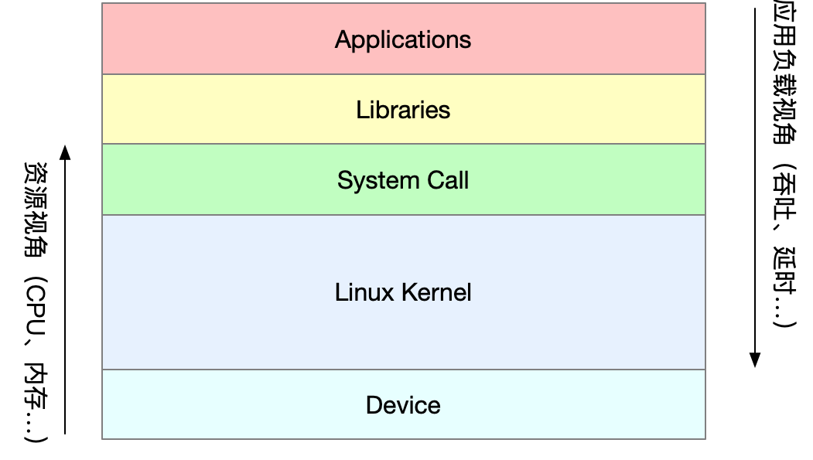
我们知道，随着应用负载的增加，系统资源的使用也会升高，甚至达到极限。而性能问题的本质，就是系统资源已经达到瓶颈，但请求的处理却还不够快，无法支撑更多的请求。
性能分析，其实就是找出应用或系统的瓶颈，并设法去避免或者缓解它们，从而更高效地利用系统资源处理更多的请求。这包含了一系列的步骤，比如下面这六个步骤。
- 选择指标评估应用程序和系统的性能；
- 为应用程序和系统设置性能目标；
- 进行性能基准测试；
- 性能分析定位瓶颈；
- 优化系统和应用程序；
- 性能监控和告警。
了解了这些性能相关的基本指标和核心步骤后，该怎么学呢？接下来，我来说说要学好 Linux 性能优化的几个重要问题。
学这个专栏需要什么基础
首先你要明白，我们这个专栏的核心是性能的分析和优化，而不是最基本的 Linux 操作系统的使用方法。
因而，我希望你最好用过 Ubuntu 或其他 Linux 操作系统，然后要具备一些编程基础，比如：
- 了解 Linux 常用命令的使用方法；
- 知道怎么安装和管理软件包；
- 知道怎么通过编程语言开发应用程序等。
这样，在我讲性能时，你就更容易理解性能背后的原理，特别是在结合专栏里的案例实践后，对性能分析能有更直观的体会。
这个专栏不会像教科书那样，详细教你操作系统、算法原理、网络协议乃至各种编程语言的全部细节，但一些重要的系统原理还是必不可少的。我还会用实际案例一步步教你，贯穿从应用程序到操作系统的各个组件。
学习的重点是什么？
想要学习好性能分析和优化，建立整体系统性能的全局观是最核心的话题。因而，
- 理解最基本的几个系统知识原理；
- 掌握必要的性能工具；
- 通过实际的场景演练，贯穿不同的组件。
这三点，就是我们学习的重中之重。我会在专栏的每篇文章中，针对不同场景，把这三个方面给你讲清楚，你也一定要花时间和心思来消化它们。
其实说到性能工具，就不得不提性能领域的大师布伦丹·格雷格（Brendan Gregg）。他不仅是动态追踪工具 DTrace 的作者，还开发了许许多多的性能工具。我相信你一定见过他所描绘的 Linux 性能工具图谱：

（图片来自brendangregg.com）
{kind=link}
这个图是 Linux 性能分析最重要的参考资料之一，它告诉你，在 Linux 不同子系统出现性能问题后，应该用什么样的工具来观测和分析。
比如，当遇到 I/O 性能问题时，可以参考图片最下方的 I/O 子系统，使用 iostat、iotop、blktrace 等工具分析磁盘 I/O 的瓶颈。你可以把这个图保存下来，在需要的时候参考查询。
另外，我还要特别强调一点，就是性能工具的选用。有句话是这么说的，一个正确的选择胜过千百次的努力。虽然夸张了些，但是选用合适的性能工具，确实可以大大简化整个性能优化过程。在什么场景选用什么样的工具、以及怎么学会选择合适工具，都是我想教给你的东西。
但是切记，千万不要把性能工具当成学习的全部。工具只是解决问题的手段，关键在于你的用法。只有真正理解了它们背后的原理，并且结合具体场景，融会贯通系统的不同组件，你才能真正掌握它们。
最后，为了让你对性能有个全面的认识，我画了一张思维导图，里面涵盖了大部分性能分析和优化都会包含的知识，专栏中也基本都会讲到。你可以保存或者打印下来，每学会一部分就标记出来，记录并把握自己的学习进度。
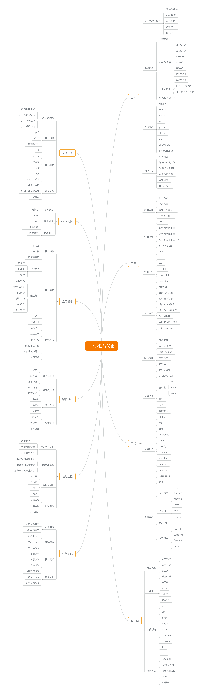
怎么学更高效？
前面我给你讲了 Linux 性能优化的学习重点，接下来我再跟你分享一下，我的几个学习技巧。掌握这些技巧，可以让你学得更轻松。
技巧一：虽然系统的原理很重要，但在刚开始一定不要试图抓住所有的实现细节。
深陷到系统实现的内部，可能会让你丢掉学习的重点，而且繁杂的实现逻辑，很可能会打退你学习的积极性。所以，我个人观点是一定要适度。
你可以先学会我给你讲的这些系统工作原理，但不要去深究 Linux 内核是如何做到的，而是要把你的重点放到如何观察和运用这些原理上，比如：
- 有哪些指标可以衡量性能？
- 使用什么样的性能工具来观察指标？
- 导致这些指标变化的因素等。
技巧二：边学边实践，通过大量的案例演习掌握 Linux 性能的分析和优化。
只有通过在机器上练习，把我讲的知识和案例自己过一遍，这些东西才能转化成你的。我精心设计这些案例，正是为了让你有更好的学习理解和操作体验。
所以我强烈推荐你去实际运行、分析这些案例，或者用学到的知识去分析你自己的系统，这样你会有更直观的感受，获得更好的学习效果。
技巧三：勤思考，多反思，善总结，多问为什么。
想真正学懂一门知识，最好的方法就是问问题。当你能提出好的问题时，就说明你已经深入了解了它。
你可以随时在留言区给我留言，写下自己的疑问、思考和总结，和我还有其他的学习者一起讨论切磋。你也可以写下自己经历过的性能问题，记录你的分析步骤和优化思路，我们一起互动探讨。
学习之前，你的准备
作为一个包含大量案例实践的课程，我会在每篇文章中，使用一到两台 Ubuntu 18.04 虚拟机，作为案例运行和分析的环境。如果你只是单纯听音频的讲解，却从不动手实践，学习的效果一定会大打折扣。
所以，你是不是可以准备好一台 Linux 机器，用于课程案例的实践呢？任意的虚拟机或物理机都可以，并不局限于 Ubuntu 系统。
思考
今天的内容是我们后续学习的热身准备。从下篇文章开始，我们就要正式进入 Linux 性能分析和优化了。所以，我想请你来聊一聊，你之前在解决 Linux 性能问题时，有遇到过什么样的困难或者疑惑吗？或者是之前自己学习 Linux 性能优化时，有哪些问题吗？参考我今天所讲的内容，你又打算怎么来学这个专栏？
02 基础篇：到底应该怎么理解“平均负载”？
你好，我是倪朋飞。
每次发现系统变慢时，我们通常做的第一件事，就是执行 top 或者 uptime 命令，来了解系统的负载情况。比如像下面这样，我在命令行里输入了 uptime 命令，系统也随即给出了结果。
$ uptime
02:34:03 up 2 days, 20:14, 1 user, load average: 0.63, 0.83, 0.88
但我想问的是，你真的知道这里每列输出的含义吗？
我相信你对前面的几列比较熟悉，它们分别是当前时间、系统运行时间以及正在登录用户数。
02:34:03 // 当前时间
up 2 days, 20:14 // 系统运行时间
1 user // 正在登录用户数
而最后三个数字呢，依次则是过去 1 分钟、5 分钟、15 分钟的平均负载（Load Average）。
平均负载？这个词对很多人来说，可能既熟悉又陌生，我们每天的工作中，也都会提到这个词，但你真正理解它背后的含义吗？如果你们团队来了一个实习生，他揪住你不放，你能给他讲清楚什么是平均负载吗？
其实，6 年前，我就遇到过这样的一个场景。公司一个实习生一直追问我，什么是平均负载，我支支吾吾半天，最后也没能解释明白。明明总看到也总会用到，怎么就说不明白呢？后来我静下来想想，其实还是自己的功底不够。
于是，这几年，我遇到问题，特别是基础问题，都会多问自己几个“为什么”，以求能够彻底理解现象背后的本质原理，用起来更灵活，也更有底气。
今天，我就带你来学习下，如何观测和理解这个最常见、也是最重要的系统指标。
我猜一定有人会说，平均负载不就是单位时间内的 CPU 使用率吗？上面的 0.63，就代表 CPU 使用率是 63%。其实并不是这样，如果你方便的话，可以通过执行 man uptime 命令，来了解平均负载的详细解释。
简单来说，平均负载是指单位时间内，系统处于可运行状态和不可中断状态的平均进程数，也就是平均活跃进程数，它和 CPU 使用率并没有直接关系。这里我先解释下，可运行状态和不可中断状态这俩词儿。
所谓可运行状态的进程，是指正在使用 CPU 或者正在等待 CPU 的进程，也就是我们常用 ps 命令看到的，处于 R 状态（Running 或 Runnable）的进程。
不可中断状态的进程则是正处于内核态关键流程中的进程，并且这些流程是不可打断的，比如最常见的是等待硬件设备的 I/O 响应，也就是我们在 ps 命令中看到的 D 状态（Uninterruptible Sleep，也称为 Disk Sleep）的进程。
比如，当一个进程向磁盘读写数据时，为了保证数据的一致性，在得到磁盘回复前，它是不能被其他进程或者中断打断的，这个时候的进程就处于不可中断状态。如果此时的进程被打断了，就容易出现磁盘数据与进程数据不一致的问题。
所以，不可中断状态实际上是系统对进程和硬件设备的一种保护机制。
因此，你可以简单理解为，平均负载其实就是平均活跃进程数。平均活跃进程数，直观上的理解就是单位时间内的活跃进程数，但它实际上是活跃进程数的指数衰减平均值。这个“指数衰减平均”的详细含义你不用计较，这只是系统的一种更快速的计算方式，你把它直接当成活跃进程数的平均值也没问题。
既然平均的是活跃进程数，那么最理想的，就是每个 CPU 上都刚好运行着一个进程，这样每个 CPU 都得到了充分利用。比如当平均负载为 2 时，意味着什么呢？
- 在只有 2 个 CPU 的系统上，意味着所有的 CPU 都刚好被完全占用。
- 在 4 个 CPU 的系统上，意味着 CPU 有 50% 的空闲。
- 而在只有 1 个 CPU 的系统中，则意味着有一半的进程竞争不到 CPU。
平均负载为多少时合理
讲完了什么是平均负载，现在我们再回到最开始的例子，不知道你能否判断出，在 uptime 命令的结果里，那三个时间段的平均负载数，多大的时候能说明系统负载高？或是多小的时候就能说明系统负载很低呢？
我们知道，平均负载最理想的情况是等于 CPU 个数。所以在评判平均负载时，首先你要知道系统有几个 CPU，这可以通过 top 命令或者从文件 /proc/cpuinfo 中读取，比如：
# 关于 grep 和 wc 的用法请查询它们的手册或者网络搜索
$ grep 'model name' /proc/cpuinfo | wc -l
2
有了 CPU 个数，我们就可以判断出，当平均负载比 CPU 个数还大的时候，系统已经出现了过载。
不过，且慢，新的问题又来了。我们在例子中可以看到，平均负载有三个数值，到底该参考哪一个呢？
实际上，都要看。三个不同时间间隔的平均值，其实给我们提供了，分析系统负载趋势的数据来源，让我们能更全面、更立体地理解目前的负载状况。
打个比方，就像初秋时北京的天气，如果只看中午的温度，你可能以为还在 7 月份的大夏天呢。但如果你结合了早上、中午、晚上三个时间点的温度来看，基本就可以全方位了解这一天的天气情况了。
同样的，前面说到的 CPU 的三个负载时间段也是这个道理。
- 如果 1 分钟、5 分钟、15 分钟的三个值基本相同，或者相差不大，那就说明系统负载很平稳。
- 但如果 1 分钟的值远小于 15 分钟的值，就说明系统最近 1 分钟的负载在减少，而过去 15 分钟内却有很大的负载。
- 反过来，如果 1 分钟的值远大于 15 分钟的值，就说明最近 1 分钟的负载在增加，这种增加有可能只是临时性的，也有可能还会持续增加下去，所以就需要持续观察。一旦 1 分钟的平均负载接近或超过了 CPU 的个数，就意味着系统正在发生过载的问题，这时就得分析调查是哪里导致的问题，并要想办法优化了。
这里我再举个例子，假设我们在一个单 CPU 系统上看到平均负载为 1.73，0.60，7.98，那么说明在过去 1 分钟内，系统有 73% 的超载，而在 15 分钟内，有 698% 的超载，从整体趋势来看，系统的负载在降低。
那么，在实际生产环境中，平均负载多高时，需要我们重点关注呢？
在我看来，当平均负载高于 CPU 数量 70% 的时候，你就应该分析排查负载高的问题了。一旦负载过高，就可能导致进程响应变慢，进而影响服务的正常功能。
但 70% 这个数字并不是绝对的，最推荐的方法，还是把系统的平均负载监控起来，然后根据更多的历史数据，判断负载的变化趋势。当发现负载有明显升高趋势时，比如说负载翻倍了，你再去做分析和调查。
平均负载与 CPU 使用率
现实工作中，我们经常容易把平均负载和 CPU 使用率混淆，所以在这里，我也做一个区分。
可能你会疑惑，既然平均负载代表的是活跃进程数，那平均负载高了，不就意味着 CPU 使用率高吗？
我们还是要回到平均负载的含义上来，平均负载是指单位时间内，处于可运行状态和不可中断状态的进程数。所以，它不仅包括了正在使用 CPU 的进程，还包括等待 CPU 和等待 I/O的进程。
而 CPU 使用率，是单位时间内 CPU 繁忙情况的统计，跟平均负载并不一定完全对应。比如：
- CPU 密集型进程，使用大量 CPU 会导致平均负载升高，此时这两者是一致的；
- I/O 密集型进程，等待 I/O 也会导致平均负载升高，但 CPU 使用率不一定很高；
- 大量等待 CPU 的进程调度也会导致平均负载升高，此时的 CPU 使用率也会比较高。
平均负载案例分析
下面，我们以三个示例分别来看这三种情况，并用 iostat、mpstat、pidstat 等工具，找出平均负载升高的根源。
因为案例分析都是基于机器上的操作，所以不要只是听听、看看就够了，最好还是跟着我实际操作一下。
你的准备
下面的案例都是基于 Ubuntu 18.04，当然，同样适用于其他 Linux 系统。我使用的案例环境如下所示。
- 机器配置：2 CPU，8GB 内存。
- 预先安装 stress 和 sysstat 包，如 apt install stress sysstat。
在这里，我先简单介绍一下 stress 和 sysstat。
stress 是一个 Linux 系统压力测试工具，这里我们用作异常进程模拟平均负载升高的场景。
而 sysstat 包含了常用的 Linux 性能工具，用来监控和分析系统的性能。我们的案例会用到这个包的两个命令 mpstat 和 pidstat。
- mpstat 是一个常用的多核 CPU 性能分析工具，用来实时查看每个 CPU 的性能指标，以及所有 CPU 的平均指标。
- pidstat 是一个常用的进程性能分析工具，用来实时查看进程的 CPU、内存、I/O 以及上下文切换等性能指标。
此外，每个场景都需要你开三个终端，登录到同一台 Linux 机器中。
实验之前，你先做好上面的准备。如果包的安装有问题，可以先在 Google 一下自行解决，如果还是解决不了，再来留言区找我，这事儿应该不难。
另外要注意，下面的所有命令，我们都是默认以 root 用户运行。所以，如果你是用普通用户登陆的系统，一定要先运行 sudo su root 命令切换到 root 用户。
如果上面的要求都已经完成了，你可以先用 uptime 命令，看一下测试前的平均负载情况：
$ uptime
..., load average: 0.11, 0.15, 0.09
场景一：CPU 密集型进程
首先，我们在第一个终端运行 stress 命令，模拟一个 CPU 使用率 100% 的场景：
$ stress --cpu 1 --timeout 600
接着，在第二个终端运行 uptime 查看平均负载的变化情况：
# -d 参数表示高亮显示变化的区域
$ watch -d uptime
..., load average: 1.00, 0.75, 0.39
最后，在第三个终端运行 mpstat 查看 CPU 使用率的变化情况：
# -P ALL 表示监控所有 CPU，后面数字 5 表示间隔 5 秒后输出一组数据
$ mpstat -P ALL 5
Linux 4.15.0 (ubuntu) 09/22/18 _x86_64_ (2 CPU)
13:30:06 CPU %usr %nice %sys %iowait %irq %soft %steal %guest %gnice %idle
13:30:11 all 50.05 0.00 0.00 0.00 0.00 0.00 0.00 0.00 0.00 49.95
13:30:11 0 0.00 0.00 0.00 0.00 0.00 0.00 0.00 0.00 0.00 100.00
13:30:11 1 100.00 0.00 0.00 0.00 0.00 0.00 0.00 0.00 0.00 0.00
从终端二中可以看到，1 分钟的平均负载会慢慢增加到 1.00，而从终端三中还可以看到，正好有一个 CPU 的使用率为 100%，但它的 iowait 只有 0。这说明，平均负载的升高正是由于 CPU 使用率为 100% 。
那么，到底是哪个进程导致了 CPU 使用率为 100% 呢？你可以使用 pidstat 来查询：
# 间隔 5 秒后输出一组数据
$ pidstat -u 5 1
13:37:07 UID PID %usr %system %guest %wait %CPU CPU Command
13:37:12 0 2962 100.00 0.00 0.00 0.00 100.00 1 stress
从这里可以明显看到，stress 进程的 CPU 使用率为 100%。
场景二：I/O 密集型进程
首先还是运行 stress 命令，但这次模拟 I/O 压力，即不停地执行 sync：
$ stress -i 1 --timeout 600
还是在第二个终端运行 uptime 查看平均负载的变化情况：
$ watch -d uptime
..., load average: 1.06, 0.58, 0.37
然后，第三个终端运行 mpstat 查看 CPU 使用率的变化情况：
# 显示所有 CPU 的指标，并在间隔 5 秒输出一组数据
$ mpstat -P ALL 5 1
Linux 4.15.0 (ubuntu) 09/22/18 _x86_64_ (2 CPU)
13:41:28 CPU %usr %nice %sys %iowait %irq %soft %steal %guest %gnice %idle
13:41:33 all 0.21 0.00 12.07 32.67 0.00 0.21 0.00 0.00 0.00 54.84
13:41:33 0 0.43 0.00 23.87 67.53 0.00 0.43 0.00 0.00 0.00 7.74
13:41:33 1 0.00 0.00 0.81 0.20 0.00 0.00 0.00 0.00 0.00 98.99
从这里可以看到，1 分钟的平均负载会慢慢增加到 1.06，其中一个 CPU 的系统 CPU 使用率升高到了 23.87，而 iowait 高达 67.53%。这说明，平均负载的升高是由于 iowait 的升高。
那么到底是哪个进程，导致 iowait 这么高呢？我们还是用 pidstat 来查询：
# 间隔 5 秒后输出一组数据，-u 表示 CPU 指标
$ pidstat -u 5 1
Linux 4.15.0 (ubuntu) 09/22/18 _x86_64_ (2 CPU)
13:42:08 UID PID %usr %system %guest %wait %CPU CPU Command
13:42:13 0 104 0.00 3.39 0.00 0.00 3.39 1 kworker/1:1H
13:42:13 0 109 0.00 0.40 0.00 0.00 0.40 0 kworker/0:1H
13:42:13 0 2997 2.00 35.53 0.00 3.99 37.52 1 stress
13:42:13 0 3057 0.00 0.40 0.00 0.00 0.40 0 pidstat
可以发现，还是 stress 进程导致的。
场景三：大量进程的场景
当系统中运行进程超出 CPU 运行能力时，就会出现等待 CPU 的进程。
比如，我们还是使用 stress，但这次模拟的是 8 个进程：
$ stress -c 8 --timeout 600
由于系统只有 2 个 CPU，明显比 8 个进程要少得多，因而，系统的 CPU 处于严重过载状态，平均负载高达 7.97：
$ uptime
..., load average: 7.97, 5.93, 3.02
接着再运行 pidstat 来看一下进程的情况：
# 间隔 5 秒后输出一组数据
$ pidstat -u 5 1
14:23:25 UID PID %usr %system %guest %wait %CPU CPU Command
14:23:30 0 3190 25.00 0.00 0.00 74.80 25.00 0 stress
14:23:30 0 3191 25.00 0.00 0.00 75.20 25.00 0 stress
14:23:30 0 3192 25.00 0.00 0.00 74.80 25.00 1 stress
14:23:30 0 3193 25.00 0.00 0.00 75.00 25.00 1 stress
14:23:30 0 3194 24.80 0.00 0.00 74.60 24.80 0 stress
14:23:30 0 3195 24.80 0.00 0.00 75.00 24.80 0 stress
14:23:30 0 3196 24.80 0.00 0.00 74.60 24.80 1 stress
14:23:30 0 3197 24.80 0.00 0.00 74.80 24.80 1 stress
14:23:30 0 3200 0.00 0.20 0.00 0.20 0.20 0 pidstat
可以看出，8 个进程在争抢 2 个 CPU，每个进程等待 CPU 的时间（也就是代码块中的 %wait 列）高达 75%。这些超出 CPU 计算能力的进程，最终导致 CPU 过载。
小结
分析完这三个案例，我再来归纳一下平均负载的理解。
平均负载提供了一个快速查看系统整体性能的手段，反映了整体的负载情况。但只看平均负载本身，我们并不能直接发现，到底是哪里出现了瓶颈。所以，在理解平均负载时，也要注意：
- 平均负载高有可能是 CPU 密集型进程导致的；
- 平均负载高并不一定代表 CPU 使用率高，还有可能是 I/O 更繁忙了；
- 当发现负载高的时候，你可以使用 mpstat、pidstat 等工具，辅助分析负载的来源。
思考
最后，我想邀请你一起来聊聊你所理解的平均负载，当你发现平均负载升高后，又是怎么分析排查的呢？你可以结合我前面的讲解，来总结自己的思考。欢迎在留言区和我讨论。
03 基础篇：经常说的 CPU 上下文切换是什么意思？（上）
你好，我是倪朋飞。
上一节，我给你讲了要怎么理解平均负载（ Load Average），并用三个案例展示了不同场景下平均负载升高的分析方法。这其中，多个进程竞争 CPU 就是一个经常被我们忽视的问题。
我想你一定很好奇，进程在竞争 CPU 的时候并没有真正运行，为什么还会导致系统的负载升高呢？看到今天的主题，你应该已经猜到了，CPU 上下文切换就是罪魁祸首。
我们都知道，Linux 是一个多任务操作系统，它支持远大于 CPU 数量的任务同时运行。当然，这些任务实际上并不是真的在同时运行，而是因为系统在很短的时间内，将 CPU 轮流分配给它们，造成多任务同时运行的错觉。
而在每个任务运行前，CPU 都需要知道任务从哪里加载、又从哪里开始运行，也就是说，需要系统事先帮它设置好 CPU 寄存器和程序计数器（Program Counter，PC）。
CPU 寄存器，是 CPU 内置的容量小、但速度极快的内存。而程序计数器，则是用来存储 CPU 正在执行的指令位置、或者即将执行的下一条指令位置。它们都是 CPU 在运行任何任务前，必须的依赖环境，因此也被叫做 CPU 上下文。
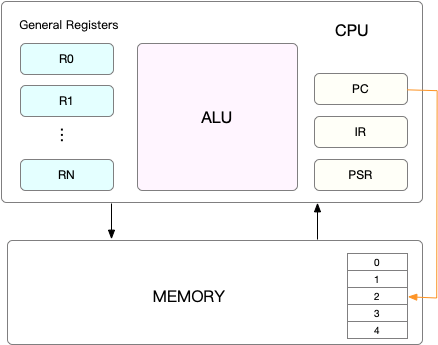
知道了什么是 CPU 上下文，我想你也很容易理解 CPU 上下文切换。CPU 上下文切换，就是先把前一个任务的 CPU 上下文（也就是 CPU 寄存器和程序计数器）保存起来，然后加载新任务的上下文到这些寄存器和程序计数器，最后再跳转到程序计数器所指的新位置，运行新任务。
而这些保存下来的上下文，会存储在系统内核中，并在任务重新调度执行时再次加载进来。这样就能保证任务原来的状态不受影响，让任务看起来还是连续运行。
我猜肯定会有人说，CPU 上下文切换无非就是更新了 CPU 寄存器的值嘛，但这些寄存器，本身就是为了快速运行任务而设计的，为什么会影响系统的 CPU 性能呢？
在回答这个问题前，不知道你有没有想过，操作系统管理的这些“任务”到底是什么呢？
也许你会说，任务就是进程，或者说任务就是线程。是的，进程和线程正是最常见的任务。但是除此之外，还有没有其他的任务呢？
不要忘了，硬件通过触发信号，会导致中断处理程序的调用，也是一种常见的任务。
所以，根据任务的不同，CPU 的上下文切换就可以分为几个不同的场景，也就是进程上下文切换、线程上下文切换以及中断上下文切换。
这节课我就带你来看看，怎么理解这几个不同的上下文切换，以及它们为什么会引发 CPU 性能相关问题。
进程上下文切换
Linux 按照特权等级，把进程的运行空间分为内核空间和用户空间，分别对应着下图中， CPU 特权等级的 Ring 0 和 Ring 3。
- 内核空间（Ring 0）具有最高权限，可以直接访问所有资源；
- 用户空间（Ring 3）只能访问受限资源，不能直接访问内存等硬件设备，必须通过系统调用陷入到内核中，才能访问这些特权资源。
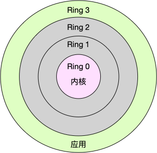
换个角度看，也就是说，进程既可以在用户空间运行，又可以在内核空间中运行。进程在用户空间运行时，被称为进程的用户态，而陷入内核空间的时候，被称为进程的内核态。
从用户态到内核态的转变，需要通过系统调用来完成。比如，当我们查看文件内容时，就需要多次系统调用来完成：首先调用 open() 打开文件，然后调用 read() 读取文件内容，并调用 write() 将内容写到标准输出，最后再调用 close() 关闭文件。
那么，系统调用的过程有没有发生 CPU 上下文的切换呢？答案自然是肯定的。
CPU 寄存器里原来用户态的指令位置，需要先保存起来。接着，为了执行内核态代码，CPU 寄存器需要更新为内核态指令的新位置。最后才是跳转到内核态运行内核任务。
而系统调用结束后，CPU 寄存器需要恢复原来保存的用户态，然后再切换到用户空间，继续运行进程。所以，一次系统调用的过程，其实是发生了两次 CPU 上下文切换。
不过，需要注意的是，系统调用过程中，并不会涉及到虚拟内存等进程用户态的资源，也不会切换进程。这跟我们通常所说的进程上下文切换是不一样的：
- 进程上下文切换，是指从一个进程切换到另一个进程运行。
- 而系统调用过程中一直是同一个进程在运行。
所以，系统调用过程通常称为特权模式切换，而不是上下文切换。但实际上，系统调用过程中，CPU 的上下文切换还是无法避免的。
那么，进程上下文切换跟系统调用又有什么区别呢？
首先，你需要知道，进程是由内核来管理和调度的，进程的切换只能发生在内核态。所以，进程的上下文不仅包括了虚拟内存、栈、全局变量等用户空间的资源，还包括了内核堆栈、寄存器等内核空间的状态。
因此，进程的上下文切换就比系统调用时多了一步：在保存当前进程的内核状态和 CPU 寄存器之前，需要先把该进程的虚拟内存、栈等保存下来；而加载了下一进程的内核态后，还需要刷新进程的虚拟内存和用户栈。
如下图所示，保存上下文和恢复上下文的过程并不是“免费”的，需要内核在 CPU 上运行才能完成。
根据 Tsuna 的测试报告，每次上下文切换都需要几十纳秒到数微秒的 CPU 时间。这个时间还是相当可观的，特别是在进程上下文切换次数较多的情况下，很容易导致 CPU 将大量时间耗费在寄存器、内核栈以及虚拟内存等资源的保存和恢复上，进而大大缩短了真正运行进程的时间。这也正是上一节中我们所讲的，导致平均负载升高的一个重要因素。
另外，我们知道， Linux 通过 TLB（Translation Lookaside Buffer）来管理虚拟内存到物理内存的映射关系。当虚拟内存更新后，TLB 也需要刷新，内存的访问也会随之变慢。特别是在多处理器系统上，缓存是被多个处理器共享的，刷新缓存不仅会影响当前处理器的进程，还会影响共享缓存的其他处理器的进程。
知道了进程上下文切换潜在的性能问题后，我们再来看，究竟什么时候会切换进程上下文。
显然，进程切换时才需要切换上下文，换句话说，只有在进程调度的时候，才需要切换上下文。Linux 为每个 CPU 都维护了一个就绪队列，将活跃进程（即正在运行和正在等待 CPU 的进程）按照优先级和等待 CPU 的时间排序，然后选择最需要 CPU 的进程，也就是优先级最高和等待 CPU 时间最长的进程来运行。
那么，进程在什么时候才会被调度到 CPU 上运行呢？
最容易想到的一个时机，就是进程执行完终止了，它之前使用的 CPU 会释放出来，这个时候再从就绪队列里，拿一个新的进程过来运行。其实还有很多其他场景，也会触发进程调度，在这里我给你逐个梳理下。
其一，为了保证所有进程可以得到公平调度，CPU 时间被划分为一段段的时间片，这些时间片再被轮流分配给各个进程。这样，当某个进程的时间片耗尽了，就会被系统挂起，切换到其它正在等待 CPU 的进程运行。
其二，进程在系统资源不足（比如内存不足）时，要等到资源满足后才可以运行，这个时候进程也会被挂起，并由系统调度其他进程运行。
其三，当进程通过睡眠函数 sleep 这样的方法将自己主动挂起时，自然也会重新调度。
其四，当有优先级更高的进程运行时，为了保证高优先级进程的运行，当前进程会被挂起，由高优先级进程来运行。
最后一个，发生硬件中断时，CPU 上的进程会被中断挂起，转而执行内核中的中断服务程序。
了解这几个场景是非常有必要的，因为一旦出现上下文切换的性能问题，它们就是幕后凶手。
线程上下文切换
说完了进程的上下文切换，我们再来看看线程相关的问题。
线程与进程最大的区别在于，线程是调度的基本单位，而进程则是资源拥有的基本单位。说白了，所谓内核中的任务调度，实际上的调度对象是线程；而进程只是给线程提供了虚拟内存、全局变量等资源。所以，对于线程和进程，我们可以这么理解：
- 当进程只有一个线程时，可以认为进程就等于线程。
- 当进程拥有多个线程时，这些线程会共享相同的虚拟内存和全局变量等资源。这些资源在上下文切换时是不需要修改的。
- 另外，线程也有自己的私有数据，比如栈和寄存器等，这些在上下文切换时也是需要保存的。
这么一来，线程的上下文切换其实就可以分为两种情况：
第一种， 前后两个线程属于不同进程。此时，因为资源不共享，所以切换过程就跟进程上下文切换是一样。
第二种，前后两个线程属于同一个进程。此时，因为虚拟内存是共享的，所以在切换时，虚拟内存这些资源就保持不动，只需要切换线程的私有数据、寄存器等不共享的数据。
到这里你应该也发现了，虽然同为上下文切换，但同进程内的线程切换，要比多进程间的切换消耗更少的资源，而这，也正是多线程代替多进程的一个优势。
中断上下文切换
除了前面两种上下文切换，还有一个场景也会切换 CPU 上下文，那就是中断。
为了快速响应硬件的事件，中断处理会打断进程的正常调度和执行，转而调用中断处理程序，响应设备事件。而在打断其他进程时，就需要将进程当前的状态保存下来，这样在中断结束后，进程仍然可以从原来的状态恢复运行。
跟进程上下文不同，中断上下文切换并不涉及到进程的用户态。所以，即便中断过程打断了一个正处在用户态的进程，也不需要保存和恢复这个进程的虚拟内存、全局变量等用户态资源。中断上下文，其实只包括内核态中断服务程序执行所必需的状态，包括 CPU 寄存器、内核堆栈、硬件中断参数等。
对同一个 CPU 来说，中断处理比进程拥有更高的优先级，所以中断上下文切换并不会与进程上下文切换同时发生。同样道理，由于中断会打断正常进程的调度和执行，所以大部分中断处理程序都短小精悍，以便尽可能快的执行结束。
另外，跟进程上下文切换一样，中断上下文切换也需要消耗 CPU，切换次数过多也会耗费大量的 CPU，甚至严重降低系统的整体性能。所以，当你发现中断次数过多时，就需要注意去排查它是否会给你的系统带来严重的性能问题。
小结
总结一下，不管是哪种场景导致的上下文切换，你都应该知道：
- CPU 上下文切换，是保证 Linux 系统正常工作的核心功能之一，一般情况下不需要我们特别关注。
- 但过多的上下文切换，会把 CPU 时间消耗在寄存器、内核栈以及虚拟内存等数据的保存和恢复上，从而缩短进程真正运行的时间，导致系统的整体性能大幅下降。
今天主要为你介绍这几种上下文切换的工作原理，下一节，我将继续案例实战，说说上下文切换问题的分析方法。
思考
最后，我想邀请你一起来聊聊，你所理解的 CPU 上下文切换。你可以结合今天的内容，总结自己的思路和看法，写下你的学习心得。
04 基础篇：经常说的 CPU 上下文切换是什么意思？（下）
你好，我是倪朋飞。
上一节，我给你讲了 CPU 上下文切换的工作原理。简单回顾一下，CPU 上下文切换是保证 Linux 系统正常工作的一个核心功能，按照不同场景，可以分为进程上下文切换、线程上下文切换和中断上下文切换。具体的概念和区别，你也要在脑海中过一遍，忘了的话及时查看上一篇。
今天我们就接着来看，究竟怎么分析 CPU 上下文切换的问题。
怎么查看系统的上下文切换情况
通过前面学习我们知道，过多的上下文切换，会把 CPU 时间消耗在寄存器、内核栈以及虚拟内存等数据的保存和恢复上，缩短进程真正运行的时间，成了系统性能大幅下降的一个元凶。
既然上下文切换对系统性能影响那么大，你肯定迫不及待想知道，到底要怎么查看上下文切换呢？在这里，我们可以使用 vmstat 这个工具，来查询系统的上下文切换情况。
vmstat 是一个常用的系统性能分析工具，主要用来分析系统的内存使用情况，也常用来分析 CPU 上下文切换和中断的次数。
比如，下面就是一个 vmstat 的使用示例：
# 每隔 5 秒输出 1 组数据
$ vmstat 5
procs -----------memory---------- ---swap-- -----io---- -system-- ------cpu-----
r b swpd free buff cache si so bi bo in cs us sy id wa st
0 0 0 7005360 91564 818900 0 0 0 0 25 33 0 0 100 0 0
我们一起来看这个结果，你可以先试着自己解读每列的含义。在这里，我重点强调下，需要特别关注的四列内容：
- cs（context switch）是每秒上下文切换的次数。
- in（interrupt）则是每秒中断的次数。
- r（Running or Runnable）是就绪队列的长度，也就是正在运行和等待 CPU 的进程数。
- b（Blocked）则是处于不可中断睡眠状态的进程数。
可以看到，这个例子中的上下文切换次数 cs 是 33 次，而系统中断次数 in 则是 25 次，而就绪队列长度 r 和不可中断状态进程数 b 都是 0。
vmstat 只给出了系统总体的上下文切换情况，要想查看每个进程的详细情况，就需要使用我们前面提到过的 pidstat 了。给它加上 -w 选项，你就可以查看每个进程上下文切换的情况了。
比如说：
# 每隔 5 秒输出 1 组数据
$ pidstat -w 5
Linux 4.15.0 (ubuntu) 09/23/18 _x86_64_ (2 CPU)
08:18:26 UID PID cswch/s nvcswch/s Command
08:18:31 0 1 0.20 0.00 systemd
08:18:31 0 8 5.40 0.00 rcu_sched
...
这个结果中有两列内容是我们的重点关注对象。一个是 cswch ，表示每秒自愿上下文切换（voluntary context switches）的次数，另一个则是 nvcswch ，表示每秒非自愿上下文切换（non voluntary context switches）的次数。
这两个概念你一定要牢牢记住，因为它们意味着不同的性能问题：
- 所谓自愿上下文切换，是指进程无法获取所需资源，导致的上下文切换。比如说， I/O、内存等系统资源不足时，就会发生自愿上下文切换。
- 而非自愿上下文切换，则是指进程由于时间片已到等原因，被系统强制调度，进而发生的上下文切换。比如说，大量进程都在争抢 CPU 时，就容易发生非自愿上下文切换。
案例分析
知道了怎么查看这些指标，另一个问题又来了，上下文切换频率是多少次才算正常呢？别急着要答案，同样的，我们先来看一个上下文切换的案例。通过案例实战演练，你自己就可以分析并找出这个标准了。
你的准备
今天的案例，我们将使用 sysbench 来模拟系统多线程调度切换的情况。
sysbench 是一个多线程的基准测试工具，一般用来评估不同系统参数下的数据库负载情况。当然，在这次案例中，我们只把它当成一个异常进程来看，作用是模拟上下文切换过多的问题。
下面的案例基于 Ubuntu 18.04，当然，其他的 Linux 系统同样适用。我使用的案例环境如下所示：
- 机器配置：2 CPU，8GB 内存
- 预先安装 sysbench 和 sysstat 包，如 apt install sysbench sysstat
正式操作开始前，你需要打开三个终端，登录到同一台 Linux 机器中，并安装好上面提到的两个软件包。包的安装，可以先 Google 一下自行解决，如果仍然有问题的，在留言区写下你的情况。
另外注意，下面所有命令，都默认以 root 用户运行。所以，如果你是用普通用户登陆的系统，记住先运行 sudo su root 命令切换到 root 用户。
安装完成后，你可以先用 vmstat 看一下空闲系统的上下文切换次数：
# 间隔 1 秒后输出 1 组数据
$ vmstat 1 1
procs -----------memory---------- ---swap-- -----io---- -system-- ------cpu-----
r b swpd free buff cache si so bi bo in cs us sy id wa st
0 0 0 6984064 92668 830896 0 0 2 19 19 35 1 0 99 0 0
这里你可以看到，现在的上下文切换次数 cs 是 35，而中断次数 in 是 19，r 和 b 都是 0。因为这会儿我并没有运行其他任务，所以它们就是空闲系统的上下文切换次数。
操作和分析
接下来，我们正式进入实战操作。
首先，在第一个终端里运行 sysbench ，模拟系统多线程调度的瓶颈：
# 以 10 个线程运行 5 分钟的基准测试，模拟多线程切换的问题
$ sysbench --threads=10 --max-time=300 threads run
接着，在第二个终端运行 vmstat ，观察上下文切换情况：
# 每隔 1 秒输出 1 组数据（需要 Ctrl+C 才结束）
$ vmstat 1
procs -----------memory---------- ---swap-- -----io---- -system-- ------cpu-----
r b swpd free buff cache si so bi bo in cs us sy id wa st
6 0 0 6487428 118240 1292772 0 0 0 0 9019 1398830 16 84 0 0 0
8 0 0 6487428 118240 1292772 0 0 0 0 10191 1392312 16 84 0 0 0
你应该可以发现，cs 列的上下文切换次数从之前的 35 骤然上升到了 139 万。同时，注意观察其他几个指标：
- r 列：就绪队列的长度已经到了 8，远远超过了系统 CPU 的个数 2，所以肯定会有大量的 CPU 竞争。
- us（user）和 sy（system）列：这两列的 CPU 使用率加起来上升到了 100%，其中系统 CPU 使用率，也就是 sy 列高达 84%，说明 CPU 主要是被内核占用了。
- in 列：中断次数也上升到了 1 万左右，说明中断处理也是个潜在的问题。
综合这几个指标，我们可以知道，系统的就绪队列过长，也就是正在运行和等待 CPU 的进程数过多，导致了大量的上下文切换，而上下文切换又导致了系统 CPU 的占用率升高。
那么到底是什么进程导致了这些问题呢？
我们继续分析，在第三个终端再用 pidstat 来看一下， CPU 和进程上下文切换的情况：
# 每隔 1 秒输出 1 组数据（需要 Ctrl+C 才结束）
# -w 参数表示输出进程切换指标，而 -u 参数则表示输出 CPU 使用指标
$ pidstat -w -u 1
08:06:33 UID PID %usr %system %guest %wait %CPU CPU Command
08:06:34 0 10488 30.00 100.00 0.00 0.00 100.00 0 sysbench
08:06:34 0 26326 0.00 1.00 0.00 0.00 1.00 0 kworker/u4:2
08:06:33 UID PID cswch/s nvcswch/s Command
08:06:34 0 8 11.00 0.00 rcu_sched
08:06:34 0 16 1.00 0.00 ksoftirqd/1
08:06:34 0 471 1.00 0.00 hv_balloon
08:06:34 0 1230 1.00 0.00 iscsid
08:06:34 0 4089 1.00 0.00 kworker/1:5
08:06:34 0 4333 1.00 0.00 kworker/0:3
08:06:34 0 10499 1.00 224.00 pidstat
08:06:34 0 26326 236.00 0.00 kworker/u4:2
08:06:34 1000 26784 223.00 0.00 sshd
从 pidstat 的输出你可以发现，CPU 使用率的升高果然是 sysbench 导致的，它的 CPU 使用率已经达到了 100%。但上下文切换则是来自其他进程，包括非自愿上下文切换频率最高的 pidstat ，以及自愿上下文切换频率最高的内核线程 kworker 和 sshd。
不过，细心的你肯定也发现了一个怪异的事儿：pidstat 输出的上下文切换次数，加起来也就几百，比 vmstat 的 139 万明显小了太多。这是怎么回事呢？难道是工具本身出了错吗？
别着急，在怀疑工具之前，我们再来回想一下，前面讲到的几种上下文切换场景。其中有一点提到， Linux 调度的基本单位实际上是线程，而我们的场景 sysbench 模拟的也是线程的调度问题，那么，是不是 pidstat 忽略了线程的数据呢？
通过运行 man pidstat ，你会发现，pidstat 默认显示进程的指标数据，加上 -t 参数后，才会输出线程的指标。
所以，我们可以在第三个终端里， Ctrl+C 停止刚才的 pidstat 命令，再加上 -t 参数，重试一下看看：
# 每隔 1 秒输出一组数据（需要 Ctrl+C 才结束）
# -wt 参数表示输出线程的上下文切换指标
$ pidstat -wt 1
08:14:05 UID TGID TID cswch/s nvcswch/s Command
...
08:14:05 0 10551 - 6.00 0.00 sysbench
08:14:05 0 - 10551 6.00 0.00 |__sysbench
08:14:05 0 - 10552 18911.00 103740.00 |__sysbench
08:14:05 0 - 10553 18915.00 100955.00 |__sysbench
08:14:05 0 - 10554 18827.00 103954.00 |__sysbench
...
现在你就能看到了，虽然 sysbench 进程（也就是主线程）的上下文切换次数看起来并不多，但它的子线程的上下文切换次数却有很多。看来，上下文切换罪魁祸首，还是过多的 sysbench 线程。
我们已经找到了上下文切换次数增多的根源，那是不是到这儿就可以结束了呢？
当然不是。不知道你还记不记得，前面在观察系统指标时，除了上下文切换频率骤然升高，还有一个指标也有很大的变化。是的，正是中断次数。中断次数也上升到了 1 万，但到底是什么类型的中断上升了，现在还不清楚。我们接下来继续抽丝剥茧找源头。
既然是中断，我们都知道，它只发生在内核态，而 pidstat 只是一个进程的性能分析工具，并不提供任何关于中断的详细信息，怎样才能知道中断发生的类型呢？
没错，那就是从 /proc/interrupts 这个只读文件中读取。/proc 实际上是 Linux 的一个虚拟文件系统，用于内核空间与用户空间之间的通信。/proc/interrupts 就是这种通信机制的一部分，提供了一个只读的中断使用情况。
我们还是在第三个终端里， Ctrl+C 停止刚才的 pidstat 命令，然后运行下面的命令，观察中断的变化情况：
# -d 参数表示高亮显示变化的区域
$ watch -d cat /proc/interrupts
CPU0 CPU1
...
RES: 2450431 5279697 Rescheduling interrupts
...
观察一段时间，你可以发现，变化速度最快的是重调度中断（RES），这个中断类型表示，唤醒空闲状态的 CPU 来调度新的任务运行。这是多处理器系统（SMP）中，调度器用来分散任务到不同 CPU 的机制，通常也被称为处理器间中断（Inter-Processor Interrupts，IPI）。
所以，这里的中断升高还是因为过多任务的调度问题，跟前面上下文切换次数的分析结果是一致的。
通过这个案例，你应该也发现了多工具、多方面指标对比观测的好处。如果最开始时，我们只用了 pidstat 观测，这些很严重的上下文切换线程，压根儿就发现不了了。
现在再回到最初的问题，每秒上下文切换多少次才算正常呢？
这个数值其实取决于系统本身的 CPU 性能。在我看来，如果系统的上下文切换次数比较稳定，那么从数百到一万以内，都应该算是正常的。但当上下文切换次数超过一万次，或者切换次数出现数量级的增长时，就很可能已经出现了性能问题。
这时，你还需要根据上下文切换的类型，再做具体分析。比方说：
- 自愿上下文切换变多了，说明进程都在等待资源，有可能发生了 I/O 等其他问题；
- 非自愿上下文切换变多了，说明进程都在被强制调度，也就是都在争抢 CPU，说明 CPU 的确成了瓶颈；
- 中断次数变多了，说明 CPU 被中断处理程序占用，还需要通过查看 /proc/interrupts 文件来分析具体的中断类型。
小结
今天，我通过一个 sysbench 的案例，给你讲了上下文切换问题的分析思路。碰到上下文切换次数过多的问题时，我们可以借助 vmstat 、 pidstat 和 /proc/interrupts 等工具，来辅助排查性能问题的根源。
思考
最后，我想请你一起来聊聊，你之前是怎么分析和排查上下文切换问题的。你可以结合这两节的内容和你自己的实际操作，来总结自己的思路。
欢迎在留言区和我讨论，也欢迎把这篇文章分享给你的同事、朋友。我们一起在实战中演练，在交流中学习。
05 基础篇：某个应用的CPU使用率居然达到100%，我该怎么办？
你好，我是倪朋飞。
通过前两节对平均负载和 CPU 上下文切换的学习，我相信你对 CPU 的性能已经有了初步了解。不过我还是想问一下，在学这个专栏前，你最常用什么指标来描述系统的 CPU 性能呢？我想你的答案，可能不是平均负载，也不是 CPU 上下文切换，而是另一个更直观的指标—— CPU 使用率。
我们前面说过，CPU 使用率是单位时间内 CPU 使用情况的统计，以百分比的方式展示。那么，作为最常用也是最熟悉的 CPU 指标，你能说出 CPU 使用率到底是怎么算出来的吗？再有，诸如 top、ps 之类的性能工具展示的 %user、%nice、 %system、%iowait 、%steal 等等，你又能弄清楚它们之间的不同吗？
今天我就带你了解 CPU 使用率的内容，同时，我也会以我们最常用的反向代理服务器 Nginx 为例，带你在一步步操作和分析中深入理解。
CPU 使用率
在上一期我曾提到，Linux 作为一个多任务操作系统，将每个 CPU 的时间划分为很短的时间片，再通过调度器轮流分配给各个任务使用，因此造成多任务同时运行的错觉。
为了维护 CPU 时间，Linux 通过事先定义的节拍率（内核中表示为 HZ），触发时间中断，并使用全局变量 Jiffies 记录了开机以来的节拍数。每发生一次时间中断，Jiffies 的值就加 1。
节拍率 HZ 是内核的可配选项，可以设置为 100、250、1000 等。不同的系统可能设置不同数值，你可以通过查询 /boot/config 内核选项来查看它的配置值。比如在我的系统中，节拍率设置成了 250，也就是每秒钟触发 250 次时间中断。
$ grep 'CONFIG_HZ=' /boot/config-$(uname -r)
CONFIG_HZ=250
同时，正因为节拍率 HZ 是内核选项，所以用户空间程序并不能直接访问。为了方便用户空间程序，内核还提供了一个用户空间节拍率 USER_HZ，它总是固定为 100，也就是 1/100 秒。这样，用户空间程序并不需要关心内核中 HZ 被设置成了多少，因为它看到的总是固定值 USER_HZ。
Linux 通过 /proc 虚拟文件系统，向用户空间提供了系统内部状态的信息，而 /proc/stat 提供的就是系统的 CPU 和任务统计信息。比方说，如果你只关注 CPU 的话，可以执行下面的命令：
# 只保留各个 CPU 的数据
$ cat /proc/stat | grep ^cpu
cpu 280580 7407 286084 172900810 83602 0 583 0 0 0
cpu0 144745 4181 176701 86423902 52076 0 301 0 0 0
cpu1 135834 3226 109383 86476907 31525 0 282 0 0 0
这里的输出结果是一个表格。其中，第一列表示的是 CPU 编号，如 cpu0、cpu1 ，而第一行没有编号的 cpu ，表示的是所有 CPU 的累加。其他列则表示不同场景下 CPU 的累加节拍数，它的单位是 USER_HZ，也就是 10 ms（1/100 秒），所以这其实就是不同场景下的 CPU 时间。
当然，这里每一列的顺序并不需要你背下来。你只要记住，有需要的时候，查询 man proc 就可以。不过，你要清楚 man proc 文档里每一列的涵义，它们都是 CPU 使用率相关的重要指标，你还会在很多其他的性能工具中看到它们。下面，我来依次解读一下。
- user（通常缩写为 us），代表用户态 CPU 时间。注意，它不包括下面的 nice 时间，但包括了 guest 时间。
- nice（通常缩写为 ni），代表低优先级用户态 CPU 时间，也就是进程的 nice 值被调整为 1-19 之间时的 CPU 时间。这里注意，nice 可取值范围是 -20 到 19，数值越大，优先级反而越低。
- system（通常缩写为 sys），代表内核态 CPU 时间。
- idle（通常缩写为 id），代表空闲时间。注意，它不包括等待 I/O 的时间（iowait）。
- iowait（通常缩写为 wa），代表等待 I/O 的 CPU 时间。
- irq（通常缩写为 hi），代表处理硬中断的 CPU 时间。
- softirq（通常缩写为 si），代表处理软中断的 CPU 时间。
- steal（通常缩写为 st），代表当系统运行在虚拟机中的时候，被其他虚拟机占用的 CPU 时间。
- guest（通常缩写为 guest），代表通过虚拟化运行其他操作系统的时间，也就是运行虚拟机的 CPU 时间。
- guest_nice（通常缩写为 gnice），代表以低优先级运行虚拟机的时间。
而我们通常所说的 CPU 使用率，就是除了空闲时间外的其他时间占总 CPU 时间的百分比，用公式来表示就是：
根据这个公式，我们就可以从 /proc/stat 中的数据，很容易地计算出 CPU 使用率。当然，也可以用每一个场景的 CPU 时间，除以总的 CPU 时间，计算出每个场景的 CPU 使用率。
不过先不要着急计算，你能说出，直接用 /proc/stat 的数据，算的是什么时间段的 CPU 使用率吗？
看到这里，你应该想起来了，这是开机以来的节拍数累加值，所以直接算出来的，是开机以来的平均 CPU 使用率，一般没啥参考价值。
事实上，为了计算 CPU 使用率，性能工具一般都会取间隔一段时间（比如 3 秒）的两次值，作差后，再计算出这段时间内的平均 CPU 使用率，即
这个公式，就是我们用各种性能工具所看到的 CPU 使用率的实际计算方法。
现在，我们知道了系统 CPU 使用率的计算方法，那进程的呢？跟系统的指标类似，Linux 也给每个进程提供了运行情况的统计信息，也就是 /proc/[pid]/stat。不过，这个文件包含的数据就比较丰富了，总共有 52 列的数据。
当然，不用担心，因为你并不需要掌握每一列的含义。还是那句话，需要的时候，查 man proc 就行。
回过头来看，是不是说要查看 CPU 使用率，就必须先读取 /proc/stat 和 /proc/[pid]/stat 这两个文件，然后再按照上面的公式计算出来呢？
当然不是，各种各样的性能分析工具已经帮我们计算好了。不过要注意的是，性能分析工具给出的都是间隔一段时间的平均 CPU 使用率，所以要注意间隔时间的设置，特别是用多个工具对比分析时，你一定要保证它们用的是相同的间隔时间。
比如，对比一下 top 和 ps 这两个工具报告的 CPU 使用率，默认的结果很可能不一样，因为 top 默认使用 3 秒时间间隔，而 ps 使用的却是进程的整个生命周期。
怎么查看 CPU 使用率
知道了 CPU 使用率的含义后，我们再来看看要怎么查看 CPU 使用率。说到查看 CPU 使用率的工具，我猜你第一反应肯定是 top 和 ps。的确，top 和 ps 是最常用的性能分析工具：
- top 显示了系统总体的 CPU 和内存使用情况，以及各个进程的资源使用情况。
- ps 则只显示了每个进程的资源使用情况。
比如，top 的输出格式为：
# 默认每 3 秒刷新一次
$ top
top - 11:58:59 up 9 days, 22:47, 1 user, load average: 0.03, 0.02, 0.00
Tasks: 123 total, 1 running, 72 sleeping, 0 stopped, 0 zombie
%Cpu(s): 0.3 us, 0.3 sy, 0.0 ni, 99.3 id, 0.0 wa, 0.0 hi, 0.0 si, 0.0 st
KiB Mem : 8169348 total, 5606884 free, 334640 used, 2227824 buff/cache
KiB Swap: 0 total, 0 free, 0 used. 7497908 avail Mem
PID USER PR NI VIRT RES SHR S %CPU %MEM TIME+ COMMAND
1 root 20 0 78088 9288 6696 S 0.0 0.1 0:16.83 systemd
2 root 20 0 0 0 0 S 0.0 0.0 0:00.05 kthreadd
4 root 0 -20 0 0 0 I 0.0 0.0 0:00.00 kworker/0:0H
...
这个输出结果中，第三行 %Cpu 就是系统的 CPU 使用率，具体每一列的含义上一节都讲过，只是把 CPU 时间变换成了 CPU 使用率，我就不再重复讲了。不过需要注意，top 默认显示的是所有 CPU 的平均值，这个时候你只需要按下数字 1 ，就可以切换到每个 CPU 的使用率了。
继续往下看，空白行之后是进程的实时信息，每个进程都有一个 %CPU 列，表示进程的 CPU 使用率。它是用户态和内核态 CPU 使用率的总和，包括进程用户空间使用的 CPU、通过系统调用执行的内核空间 CPU 、以及在就绪队列等待运行的 CPU。在虚拟化环境中，它还包括了运行虚拟机占用的 CPU。
所以，到这里我们可以发现， top 并没有细分进程的用户态 CPU 和内核态 CPU。那要怎么查看每个进程的详细情况呢？你应该还记得上一节用到的 pidstat 吧，它正是一个专门分析每个进程 CPU 使用情况的工具。
比如，下面的 pidstat 命令，就间隔 1 秒展示了进程的 5 组 CPU 使用率，包括：
- 用户态 CPU 使用率 （%usr）；
- 内核态 CPU 使用率（%system）；
- 运行虚拟机 CPU 使用率（%guest）；
- 等待 CPU 使用率（%wait）；
- 以及总的 CPU 使用率（%CPU）。
最后的 Average 部分，还计算了 5 组数据的平均值。
# 每隔 1 秒输出一组数据，共输出 5 组
$ pidstat 1 5
15:56:02 UID PID %usr %system %guest %wait %CPU CPU Command
15:56:03 0 15006 0.00 0.99 0.00 0.00 0.99 1 dockerd
...
Average: UID PID %usr %system %guest %wait %CPU CPU Command
Average: 0 15006 0.00 0.99 0.00 0.00 0.99 - dockerd
CPU 使用率过高怎么办？
通过 top、ps、pidstat 等工具，你能够轻松找到 CPU 使用率较高（比如 100% ）的进程。接下来，你可能又想知道，占用 CPU 的到底是代码里的哪个函数呢？找到它，你才能更高效、更针对性地进行优化。
我猜你第一个想到的，应该是 GDB（The GNU Project Debugger）， 这个功能强大的程序调试利器。的确，GDB 在调试程序错误方面很强大。但是，我又要来“挑刺”了。请你记住，GDB 并不适合在性能分析的早期应用。
为什么呢？因为 GDB 调试程序的过程会中断程序运行，这在线上环境往往是不允许的。所以，GDB 只适合用在性能分析的后期，当你找到了出问题的大致函数后，线下再借助它来进一步调试函数内部的问题。
那么哪种工具适合在第一时间分析进程的 CPU 问题呢？我的推荐是 perf。perf 是 Linux 2.6.31 以后内置的性能分析工具。它以性能事件采样为基础，不仅可以分析系统的各种事件和内核性能，还可以用来分析指定应用程序的性能问题。
使用 perf 分析 CPU 性能问题，我来说两种最常见、也是我最喜欢的用法。
第一种常见用法是 perf top，类似于 top，它能够实时显示占用 CPU 时钟最多的函数或者指令，因此可以用来查找热点函数，使用界面如下所示：
$ perf top
Samples: 833 of event 'cpu-clock', Event count (approx.): 97742399
Overhead Shared Object Symbol
7.28% perf [.] 0x00000000001f78a4
4.72% [kernel] [k] vsnprintf
4.32% [kernel] [k] module_get_kallsym
3.65% [kernel] [k] _raw_spin_unlock_irqrestore
...
输出结果中，第一行包含三个数据，分别是采样数（Samples）、事件类型（event）和事件总数量（Event count）。比如这个例子中，perf 总共采集了 833 个 CPU 时钟事件，而总事件数则为 97742399。
另外，采样数需要我们特别注意。如果采样数过少（比如只有十几个），那下面的排序和百分比就没什么实际参考价值了。
再往下看是一个表格式样的数据，每一行包含四列，分别是：
- 第一列 Overhead ，是该符号的性能事件在所有采样中的比例，用百分比来表示。
- 第二列 Shared ，是该函数或指令所在的动态共享对象（Dynamic Shared Object），如内核、进程名、动态链接库名、内核模块名等。
- 第三列 Object ，是动态共享对象的类型。比如 [.] 表示用户空间的可执行程序、或者动态链接库，而 [k] 则表示内核空间。
- 最后一列 Symbol 是符号名，也就是函数名。当函数名未知时，用十六进制的地址来表示。
还是以上面的输出为例，我们可以看到，占用 CPU 时钟最多的是 perf 工具自身，不过它的比例也只有 7.28%，说明系统并没有 CPU 性能问题。 perf top 的使用你应该很清楚了吧。
接着再来看第二种常见用法，也就是 perf record 和 perf report。 perf top 虽然实时展示了系统的性能信息，但它的缺点是并不保存数据，也就无法用于离线或者后续的分析。而 perf record 则提供了保存数据的功能，保存后的数据，需要你用 perf report 解析展示。
$ perf record # 按 Ctrl+C 终止采样
[ perf record: Woken up 1 times to write data ]
[ perf record: Captured and wrote 0.452 MB perf.data (6093 samples) ]
$ perf report # 展示类似于 perf top 的报告
在实际使用中，我们还经常为 perf top 和 perf record 加上 -g 参数，开启调用关系的采样，方便我们根据调用链来分析性能问题。
案例
下面我们就以 Nginx + PHP 的 Web 服务为例，来看看当你发现 CPU 使用率过高的问题后，要怎么使用 top 等工具找出异常的进程，又要怎么利用 perf 找出引发性能问题的函数。
你的准备
以下案例基于 Ubuntu 18.04，同样适用于其他的 Linux 系统。我使用的案例环境如下所示：
- 机器配置：2 CPU，8GB 内存
- 预先安装 docker、sysstat、perf、ab 等工具，如 apt install docker.io sysstat linux-tools-common apache2-utils
我先简单介绍一下这次新使用的工具 ab。ab（apache bench）是一个常用的 HTTP 服务性能测试工具，这里用来模拟 Ngnix 的客户端。由于 Nginx 和 PHP 的配置比较麻烦，我把它们打包成了两个 Docker 镜像，这样只需要运行两个容器，就可以得到模拟环境。
注意，这个案例要用到两台虚拟机，如下图所示：

你可以看到，其中一台用作 Web 服务器，来模拟性能问题；另一台用作 Web 服务器的客户端，来给 Web 服务增加压力请求。使用两台虚拟机是为了相互隔离，避免“交叉感染”。
接下来，我们打开两个终端，分别 SSH 登录到两台机器上，并安装上面提到的工具。
还是同样的“配方”。下面的所有命令，都默认假设以 root 用户运行，如果你是普通用户身份登陆系统，一定要先运行 sudo su root 命令切换到 root 用户。到这里，准备工作就完成了。
不过，操作之前，我还想再说一点。这次案例中 PHP 应用的核心逻辑比较简单，大部分人一眼就可以看出问题，但你要知道，实际生产环境中的源码就复杂多了。
所以，我希望你在按照步骤操作之前，先不要查看源码（避免先入为主），而是**把它当成一个黑盒来分析。**这样，你可以更好地理解整个解决思路，怎么从系统的资源使用问题出发，分析出瓶颈所在的应用、以及瓶颈在应用中的大概位置。
操作和分析
接下来，我们正式进入操作环节。
首先，在第一个终端执行下面的命令来运行 Nginx 和 PHP 应用：
$ docker run --name nginx -p 10000:80 -itd feisky/nginx
$ docker run --name phpfpm -itd --network container:nginx feisky/php-fpm
然后，在第二个终端使用 curl 访问 http://[VM1 的 IP]:10000，确认 Nginx 已正常启动。你应该可以看到 It works! 的响应。
# 192.168.0.10 是第一台虚拟机的 IP 地址
$ curl http://192.168.0.10:10000/
It works!
接着，我们来测试一下这个 Nginx 服务的性能。在第二个终端运行下面的 ab 命令：
# 并发 10 个请求测试 Nginx 性能，总共测试 100 个请求
$ ab -c 10 -n 100 http://192.168.0.10:10000/
This is ApacheBench, Version 2.3 <$Revision: 1706008 $>
Copyright 1996 Adam Twiss, Zeus Technology Ltd,
...
Requests per second: 11.63 [#/sec] (mean)
Time per request: 859.942 [ms] (mean)
...
从 ab 的输出结果我们可以看到，Nginx 能承受的每秒平均请求数只有 11.63。你一定在吐槽，这也太差了吧。那到底是哪里出了问题呢？我们用 top 和 pidstat 再来观察下。
这次，我们在第二个终端，将测试的请求总数增加到 10000。这样当你在第一个终端使用性能分析工具时， Nginx 的压力还是继续。
继续在第二个终端，运行 ab 命令：
$ ab -c 10 -n 10000 http://10.240.0.5:10000/
接着，回到第一个终端运行 top 命令，并按下数字 1 ，切换到每个 CPU 的使用率：
$ top
...
%Cpu0 : 98.7 us, 1.3 sy, 0.0 ni, 0.0 id, 0.0 wa, 0.0 hi, 0.0 si, 0.0 st
%Cpu1 : 99.3 us, 0.7 sy, 0.0 ni, 0.0 id, 0.0 wa, 0.0 hi, 0.0 si, 0.0 st
...
PID USER PR NI VIRT RES SHR S %CPU %MEM TIME+ COMMAND
21514 daemon 20 0 336696 16384 8712 R 41.9 0.2 0:06.00 php-fpm
21513 daemon 20 0 336696 13244 5572 R 40.2 0.2 0:06.08 php-fpm
21515 daemon 20 0 336696 16384 8712 R 40.2 0.2 0:05.67 php-fpm
21512 daemon 20 0 336696 13244 5572 R 39.9 0.2 0:05.87 php-fpm
21516 daemon 20 0 336696 16384 8712 R 35.9 0.2 0:05.61 php-fpm
这里可以看到，系统中有几个 php-fpm 进程的 CPU 使用率加起来接近 200%；而每个 CPU 的用户使用率（us）也已经超过了 98%，接近饱和。这样，我们就可以确认，正是用户空间的 php-fpm 进程，导致 CPU 使用率骤升。
那再往下走，怎么知道是 php-fpm 的哪个函数导致了 CPU 使用率升高呢？我们来用 perf 分析一下。在第一个终端运行下面的 perf 命令：
# -g 开启调用关系分析，-p 指定 php-fpm 的进程号 21515
$ perf top -g -p 21515
按方向键切换到 php-fpm，再按下回车键展开 php-fpm 的调用关系，你会发现，调用关系最终到了 sqrt 和 add_function。看来，我们需要从这两个函数入手了。
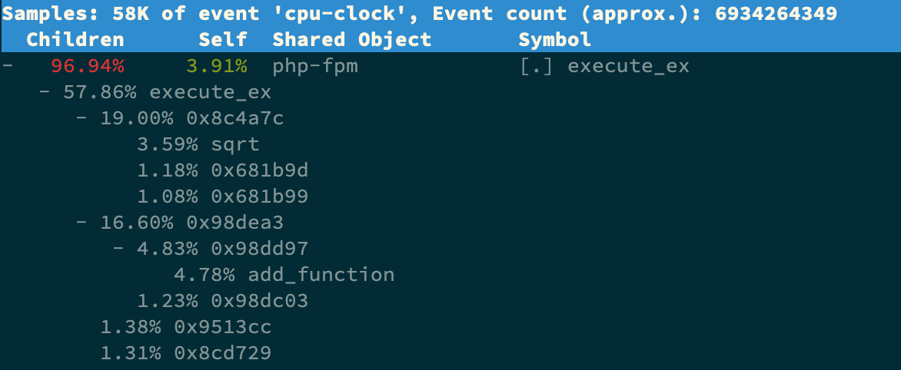
我们拷贝出 Nginx 应用的源码，看看是不是调用了这两个函数：
# 从容器 phpfpm 中将 PHP 源码拷贝出来
$ docker cp phpfpm:/app .
# 使用 grep 查找函数调用
$ grep sqrt -r app/ # 找到了 sqrt 调用
app/index.php: $x += sqrt($x);
$ grep add_function -r app/ # 没找到 add_function 调用，这其实是 PHP 内置函数
OK，原来只有 sqrt 函数在 app/index.php 文件中调用了。那最后一步，我们就该看看这个文件的源码了：
$ cat app/index.php
<?php
// test only.
$x = 0.0001;
for ($i = 0; $i <= 1000000; $i++) {
$x += sqrt($x);
}
echo "It works!"
呀，有没有发现问题在哪里呢？我想你要笑话我了，居然犯了一个这么傻的错误，测试代码没删就直接发布应用了。为了方便你验证优化后的效果，我把修复后的应用也打包成了一个 Docker 镜像，你可以在第一个终端中执行下面的命令来运行它：
# 停止原来的应用
$ docker rm -f nginx phpfpm
# 运行优化后的应用
$ docker run --name nginx -p 10000:80 -itd feisky/nginx:cpu-fix
$ docker run --name phpfpm -itd --network container:nginx feisky/php-fpm:cpu-fix
接着，到第二个终端来验证一下修复后的效果。首先 Ctrl+C 停止之前的 ab 命令后，再运行下面的命令：
$ ab -c 10 -n 10000 http://10.240.0.5:10000/
...
Complete requests: 10000
Failed requests: 0
Total transferred: 1720000 bytes
HTML transferred: 90000 bytes
Requests per second: 2237.04 [#/sec] (mean)
Time per request: 4.470 [ms] (mean)
Time per request: 0.447 [ms] (mean, across all concurrent requests)
Transfer rate: 375.75 [Kbytes/sec] received
...
从这里你可以发现，现在每秒的平均请求数，已经从原来的 11 变成了 2237。
你看，就是这么很傻的一个小问题，却会极大的影响性能，并且查找起来也并不容易吧。当然，找到问题后，解决方法就简单多了，删除测试代码就可以了。
小结
CPU 使用率是最直观和最常用的系统性能指标，更是我们在排查性能问题时，通常会关注的第一个指标。所以我们更要熟悉它的含义，尤其要弄清楚用户（%user）、Nice（%nice）、系统（%system） 、等待 I/O（%iowait） 、中断（%irq）以及软中断（%softirq）这几种不同 CPU 的使用率。比如说：
- 用户 CPU 和 Nice CPU 高，说明用户态进程占用了较多的 CPU，所以应该着重排查进程的性能问题。
- 系统 CPU 高，说明内核态占用了较多的 CPU，所以应该着重排查内核线程或者系统调用的性能问题。
- I/O 等待 CPU 高，说明等待 I/O 的时间比较长，所以应该着重排查系统存储是不是出现了 I/O 问题。
- 软中断和硬中断高，说明软中断或硬中断的处理程序占用了较多的 CPU，所以应该着重排查内核中的中断服务程序。
碰到 CPU 使用率升高的问题，你可以借助 top、pidstat 等工具，确认引发 CPU 性能问题的来源；再使用 perf 等工具，排查出引起性能问题的具体函数。
思考
最后，我想邀请你一起来聊聊，你所理解的 CPU 使用率，以及在发现 CPU 使用率升高时，你又是怎么分析的呢？你可以结合今天的内容，和你自己的操作记录，来总结思路。
欢迎在留言区和我讨论，也欢迎把这篇文章分享给你的同事、朋友。我们一起在实战中演练，在交流中进步。
06 案例篇：系统的 CPU 使用率很高，但为啥却找不到高 CPU 的应用？
你好，我是倪朋飞。
上一节我讲了 CPU 使用率是什么，并通过一个案例教你使用 top、vmstat、pidstat 等工具，排查高 CPU 使用率的进程，然后再使用 perf top 工具，定位应用内部函数的问题。不过就有人留言了，说似乎感觉高 CPU 使用率的问题，还是挺容易排查的。
那是不是所有 CPU 使用率高的问题，都可以这么分析呢？我想，你的答案应该是否定的。
回顾前面的内容，我们知道，系统的 CPU 使用率，不仅包括进程用户态和内核态的运行，还包括中断处理、等待 I/O 以及内核线程等。所以，当你发现系统的 CPU 使用率很高的时候，不一定能找到相对应的高 CPU 使用率的进程。
今天，我就用一个 Nginx + PHP 的 Web 服务的案例，带你来分析这种情况。
案例分析
你的准备
今天依旧探究系统 CPU 使用率高的情况，所以这次实验的准备工作，与上节课的准备工作基本相同，差别在于案例所用的 Docker 镜像不同。
本次案例还是基于 Ubuntu 18.04，同样适用于其他的 Linux 系统。我使用的案例环境如下所示：
- 机器配置：2 CPU，8GB 内存
- 预先安装 docker、sysstat、perf、ab 等工具，如 apt install docker.io sysstat linux-tools-common apache2-utils
前面我们讲到过，ab（apache bench）是一个常用的 HTTP 服务性能测试工具，这里同样用来模拟 Nginx 的客户端。由于 Nginx 和 PHP 的配置比较麻烦，我把它们打包成了两个 Docker 镜像，这样只需要运行两个容器，就可以得到模拟环境。
注意，这个案例要用到两台虚拟机，如下图所示：
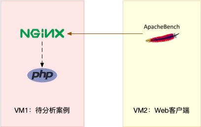
你可以看到，其中一台用作 Web 服务器，来模拟性能问题；另一台用作 Web 服务器的客户端，来给 Web 服务增加压力请求。使用两台虚拟机是为了相互隔离，避免“交叉感染”。
接下来，我们打开两个终端，分别 SSH 登录到两台机器上，并安装上述工具。
同样注意，下面所有命令都默认以 root 用户运行，如果你是用普通用户身份登陆系统，请运行 sudo su root 命令切换到 root 用户。
走到这一步，准备工作就完成了。接下来，我们正式进入操作环节。
温馨提示：案例中 PHP 应用的核心逻辑比较简单，你可能一眼就能看出问题，但实际生产环境中的源码就复杂多了。所以，我依旧建议，操作之前别看源码，避免先入为主，而要把它当成一个黑盒来分析。这样，你可以更好把握，怎么从系统的资源使用问题出发，分析出瓶颈所在的应用，以及瓶颈在应用中大概的位置。
操作和分析
首先，我们在第一个终端，执行下面的命令运行 Nginx 和 PHP 应用：
$ docker run --name nginx -p 10000:80 -itd feisky/nginx:sp
$ docker run --name phpfpm -itd --network container:nginx feisky/php-fpm:sp
然后，在第二个终端，使用 curl 访问 http://[VM1 的 IP]:10000，确认 Nginx 已正常启动。你应该可以看到 It works! 的响应。
# 192.168.0.10 是第一台虚拟机的 IP 地址
$ curl http://192.168.0.10:10000/
It works!
接着，我们来测试一下这个 Nginx 服务的性能。在第二个终端运行下面的 ab 命令。要注意，与上次操作不同的是，这次我们需要并发 100 个请求测试 Nginx 性能，总共测试 1000 个请求。
# 并发 100 个请求测试 Nginx 性能，总共测试 1000 个请求
$ ab -c 100 -n 1000 http://192.168.0.10:10000/
This is ApacheBench, Version 2.3 <$Revision: 1706008 $>
Copyright 1996 Adam Twiss, Zeus Technology Ltd,
...
Requests per second: 87.86 [#/sec] (mean)
Time per request: 1138.229 [ms] (mean)
...
从 ab 的输出结果我们可以看到，Nginx 能承受的每秒平均请求数，只有 87 多一点，是不是感觉它的性能有点差呀。那么，到底是哪里出了问题呢？我们再用 top 和 pidstat 来观察一下。
这次，我们在第二个终端，将测试的并发请求数改成 5，同时把请求时长设置为 10 分钟（-t 600）。这样，当你在第一个终端使用性能分析工具时， Nginx 的压力还是继续的。
继续在第二个终端运行 ab 命令：
$ ab -c 5 -t 600 http://192.168.0.10:10000/
然后，我们在第一个终端运行 top 命令，观察系统的 CPU 使用情况：
$ top
...
%Cpu(s): 80.8 us, 15.1 sy, 0.0 ni, 2.8 id, 0.0 wa, 0.0 hi, 1.3 si, 0.0 st
...
PID USER PR NI VIRT RES SHR S %CPU %MEM TIME+ COMMAND
6882 root 20 0 8456 5052 3884 S 2.7 0.1 0:04.78 docker-containe
6947 systemd+ 20 0 33104 3716 2340 S 2.7 0.0 0:04.92 nginx
7494 daemon 20 0 336696 15012 7332 S 2.0 0.2 0:03.55 php-fpm
7495 daemon 20 0 336696 15160 7480 S 2.0 0.2 0:03.55 php-fpm
10547 daemon 20 0 336696 16200 8520 S 2.0 0.2 0:03.13 php-fpm
10155 daemon 20 0 336696 16200 8520 S 1.7 0.2 0:03.12 php-fpm
10552 daemon 20 0 336696 16200 8520 S 1.7 0.2 0:03.12 php-fpm
15006 root 20 0 1168608 66264 37536 S 1.0 0.8 9:39.51 dockerd
4323 root 20 0 0 0 0 I 0.3 0.0 0:00.87 kworker/u4:1
...
观察 top 输出的进程列表可以发现，CPU 使用率最高的进程也只不过才 2.7%，看起来并不高。
然而，再看系统 CPU 使用率（ %Cpu ）这一行，你会发现，系统的整体 CPU 使用率是比较高的：用户 CPU 使用率（us）已经到了 80%，系统 CPU 为 15.1%，而空闲 CPU （id）则只有 2.8%。
为什么用户 CPU 使用率这么高呢？我们再重新分析一下进程列表，看看有没有可疑进程：
- docker-containerd 进程是用来运行容器的，2.7% 的 CPU 使用率看起来正常；
- Nginx 和 php-fpm 是运行 Web 服务的，它们会占用一些 CPU 也不意外，并且 2% 的 CPU 使用率也不算高；
- 再往下看，后面的进程呢，只有 0.3% 的 CPU 使用率，看起来不太像会导致用户 CPU 使用率达到 80%。
那就奇怪了，明明用户 CPU 使用率都 80% 了，可我们挨个分析了一遍进程列表，还是找不到高 CPU 使用率的进程。看来 top 是不管用了，那还有其他工具可以查看进程 CPU 使用情况吗？不知道你记不记得我们的老朋友 pidstat，它可以用来分析进程的 CPU 使用情况。
接下来，我们还是在第一个终端，运行 pidstat 命令：
# 间隔 1 秒输出一组数据（按 Ctrl+C 结束）
$ pidstat 1
...
04:36:24 UID PID %usr %system %guest %wait %CPU CPU Command
04:36:25 0 6882 1.00 3.00 0.00 0.00 4.00 0 docker-containe
04:36:25 101 6947 1.00 2.00 0.00 1.00 3.00 1 nginx
04:36:25 1 14834 1.00 1.00 0.00 1.00 2.00 0 php-fpm
04:36:25 1 14835 1.00 1.00 0.00 1.00 2.00 0 php-fpm
04:36:25 1 14845 0.00 2.00 0.00 2.00 2.00 1 php-fpm
04:36:25 1 14855 0.00 1.00 0.00 1.00 1.00 1 php-fpm
04:36:25 1 14857 1.00 2.00 0.00 1.00 3.00 0 php-fpm
04:36:25 0 15006 0.00 1.00 0.00 0.00 1.00 0 dockerd
04:36:25 0 15801 0.00 1.00 0.00 0.00 1.00 1 pidstat
04:36:25 1 17084 1.00 0.00 0.00 2.00 1.00 0 stress
04:36:25 0 31116 0.00 1.00 0.00 0.00 1.00 0 atopacctd
...
观察一会儿，你是不是发现，所有进程的 CPU 使用率也都不高啊，最高的 Docker 和 Nginx 也只有 4% 和 3%，即使所有进程的 CPU 使用率都加起来，也不过是 21%，离 80% 还差得远呢！
最早的时候，我碰到这种问题就完全懵了：明明用户 CPU 使用率已经高达 80%，但我却怎么都找不到是哪个进程的问题。到这里，你也可以想想，你是不是也遇到过这种情况？还能不能再做进一步的分析呢？
后来我发现，会出现这种情况，很可能是因为前面的分析漏了一些关键信息。你可以先暂停一下，自己往上翻，重新操作检查一遍。或者，我们一起返回去分析 top 的输出，看看能不能有新发现。
现在，我们回到第一个终端，重新运行 top 命令，并观察一会儿：
$ top
top - 04:58:24 up 14 days, 15:47, 1 user, load average: 3.39, 3.82, 2.74
Tasks: 149 total, 6 running, 93 sleeping, 0 stopped, 0 zombie
%Cpu(s): 77.7 us, 19.3 sy, 0.0 ni, 2.0 id, 0.0 wa, 0.0 hi, 1.0 si, 0.0 st
KiB Mem : 8169348 total, 2543916 free, 457976 used, 5167456 buff/cache
KiB Swap: 0 total, 0 free, 0 used. 7363908 avail Mem
PID USER PR NI VIRT RES SHR S %CPU %MEM TIME+ COMMAND
6947 systemd+ 20 0 33104 3764 2340 S 4.0 0.0 0:32.69 nginx
6882 root 20 0 12108 8360 3884 S 2.0 0.1 0:31.40 docker-containe
15465 daemon 20 0 336696 15256 7576 S 2.0 0.2 0:00.62 php-fpm
15466 daemon 20 0 336696 15196 7516 S 2.0 0.2 0:00.62 php-fpm
15489 daemon 20 0 336696 16200 8520 S 2.0 0.2 0:00.62 php-fpm
6948 systemd+ 20 0 33104 3764 2340 S 1.0 0.0 0:00.95 nginx
15006 root 20 0 1168608 65632 37536 S 1.0 0.8 9:51.09 dockerd
15476 daemon 20 0 336696 16200 8520 S 1.0 0.2 0:00.61 php-fpm
15477 daemon 20 0 336696 16200 8520 S 1.0 0.2 0:00.61 php-fpm
24340 daemon 20 0 8184 1616 536 R 1.0 0.0 0:00.01 stress
24342 daemon 20 0 8196 1580 492 R 1.0 0.0 0:00.01 stress
24344 daemon 20 0 8188 1056 492 R 1.0 0.0 0:00.01 stress
24347 daemon 20 0 8184 1356 540 R 1.0 0.0 0:00.01 stress
...
这次从头开始看 top 的每行输出，咦？Tasks 这一行看起来有点奇怪，就绪队列中居然有 6 个 Running 状态的进程（6 running），是不是有点多呢？
回想一下 ab 测试的参数，并发请求数是 5。再看进程列表里， php-fpm 的数量也是 5，再加上 Nginx，好像同时有 6 个进程也并不奇怪。但真的是这样吗？
再仔细看进程列表，这次主要看 Running（R） 状态的进程。你有没有发现， Nginx 和所有的 php-fpm 都处于 Sleep（S）状态，而真正处于 Running（R）状态的，却是几个 stress 进程。这几个 stress 进程就比较奇怪了，需要我们做进一步的分析。
我们还是使用 pidstat 来分析这几个进程，并且使用 -p 选项指定进程的 PID。首先，从上面 top 的结果中，找到这几个进程的 PID。比如，先随便找一个 24344，然后用 pidstat 命令看一下它的 CPU 使用情况：
$ pidstat -p 24344
16:14:55 UID PID %usr %system %guest %wait %CPU CPU Command
奇怪，居然没有任何输出。难道是 pidstat 命令出问题了吗？之前我说过，在怀疑性能工具出问题前，最好还是先用其他工具交叉确认一下。那用什么工具呢？ ps 应该是最简单易用的。我们在终端里运行下面的命令，看看 24344 进程的状态：
# 从所有进程中查找 PID 是 24344 的进程
$ ps aux | grep 24344
root 9628 0.0 0.0 14856 1096 pts/0 S+ 16:15 0:00 grep --color=auto 24344
还是没有输出。现在终于发现问题，原来这个进程已经不存在了，所以 pidstat 就没有任何输出。既然进程都没了，那性能问题应该也跟着没了吧。我们再用 top 命令确认一下：
$ top
...
%Cpu(s): 80.9 us, 14.9 sy, 0.0 ni, 2.8 id, 0.0 wa, 0.0 hi, 1.3 si, 0.0 st
...
PID USER PR NI VIRT RES SHR S %CPU %MEM TIME+ COMMAND
6882 root 20 0 12108 8360 3884 S 2.7 0.1 0:45.63 docker-containe
6947 systemd+ 20 0 33104 3764 2340 R 2.7 0.0 0:47.79 nginx
3865 daemon 20 0 336696 15056 7376 S 2.0 0.2 0:00.15 php-fpm
6779 daemon 20 0 8184 1112 556 R 0.3 0.0 0:00.01 stress
...
好像又错了。结果还跟原来一样，用户 CPU 使用率还是高达 80.9%，系统 CPU 接近 15%，而空闲 CPU 只有 2.8%，Running 状态的进程有 Nginx、stress 等。
可是，刚刚我们看到 stress 进程不存在了，怎么现在还在运行呢？再细看一下 top 的输出，原来，这次 stress 进程的 PID 跟前面不一样了，原来的 PID 24344 不见了，现在的是 6779。
进程的 PID 在变，这说明什么呢？在我看来，要么是这些进程在不停地重启，要么就是全新的进程，这无非也就两个原因：
- 第一个原因，进程在不停地崩溃重启，比如因为段错误、配置错误等等，这时，进程在退出后可能又被监控系统自动重启了。
- 第二个原因，这些进程都是短时进程，也就是在其他应用内部通过 exec 调用的外面命令。这些命令一般都只运行很短的时间就会结束，你很难用 top 这种间隔时间比较长的工具发现（上面的案例，我们碰巧发现了）。
至于 stress，我们前面提到过，它是一个常用的压力测试工具。它的 PID 在不断变化中，看起来像是被其他进程调用的短时进程。要想继续分析下去，还得找到它们的父进程。
要怎么查找一个进程的父进程呢？没错，用 pstree 就可以用树状形式显示所有进程之间的关系：
$ pstree | grep stress
|-docker-containe-+-php-fpm-+-php-fpm---sh---stress
| |-3*[php-fpm---sh---stress---stress]
从这里可以看到，stress 是被 php-fpm 调用的子进程，并且进程数量不止一个（这里是 3 个）。找到父进程后，我们能进入 app 的内部分析了。
首先，当然应该去看看它的源码。运行下面的命令，把案例应用的源码拷贝到 app 目录，然后再执行 grep 查找是不是有代码再调用 stress 命令：
# 拷贝源码到本地
$ docker cp phpfpm:/app .
# grep 查找看看是不是有代码在调用 stress 命令
$ grep stress -r app
app/index.php:// fake I/O with stress (via write()/unlink()).
app/index.php:$result = exec("/usr/local/bin/stress -t 1 -d 1 2>&1", $output, $status);
找到了，果然是 app/index.php 文件中直接调用了 stress 命令。
再来看看 app/index.php 的源代码：
$ cat app/index.php
<?php
// fake I/O with stress (via write()/unlink()).
$result = exec("/usr/local/bin/stress -t 1 -d 1 2>&1", $output, $status);
if (isset($_GET["verbose"]) && $_GET["verbose"]==1 && $status != 0) {
echo "Server internal error: ";
print_r($output);
} else {
echo "It works!";
}
?>
可以看到，源码里对每个请求都会调用一个 stress 命令，模拟 I/O 压力。从注释上看，stress 会通过 write() 和 unlink() 对 I/O 进程进行压测，看来，这应该就是系统 CPU 使用率升高的根源了。
不过，stress 模拟的是 I/O 压力，而之前在 top 的输出中看到的，却一直是用户 CPU 和系统 CPU 升高，并没见到 iowait 升高。这又是怎么回事呢？stress 到底是不是 CPU 使用率升高的原因呢？
我们还得继续往下走。从代码中可以看到，给请求加入 verbose=1 参数后，就可以查看 stress 的输出。你先试试看，在第二个终端运行：
$ curl http://192.168.0.10:10000?verbose=1
Server internal error: Array
(
[0] => stress: info: [19607] dispatching hogs: 0 cpu, 0 io, 0 vm, 1 hdd
[1] => stress: FAIL: [19608] (563) mkstemp failed: Permission denied
[2] => stress: FAIL: [19607] (394) <-- worker 19608 returned error 1
[3] => stress: WARN: [19607] (396) now reaping child worker processes
[4] => stress: FAIL: [19607] (400) kill error: No such process
[5] => stress: FAIL: [19607] (451) failed run completed in 0s
)
看错误消息 mkstemp failed: Permission denied ，以及 failed run completed in 0s。原来 stress 命令并没有成功，它因为权限问题失败退出了。看来，我们发现了一个 PHP 调用外部 stress 命令的 bug：没有权限创建临时文件。
从这里我们可以猜测，正是由于权限错误，大量的 stress 进程在启动时初始化失败，进而导致用户 CPU 使用率的升高。
分析出问题来源，下一步是不是就要开始优化了呢？当然不是！既然只是猜测，那就需要再确认一下，这个猜测到底对不对，是不是真的有大量的 stress 进程。该用什么工具或指标呢？
我们前面已经用了 top、pidstat、pstree 等工具，没有发现大量的 stress 进程。那么，还有什么其他的工具可以用吗？
还记得上一期提到的 perf 吗？它可以用来分析 CPU 性能事件，用在这里就很合适。依旧在第一个终端中运行 perf record -g 命令 ，并等待一会儿（比如 15 秒）后按 Ctrl+C 退出。然后再运行 perf report 查看报告：
# 记录性能事件，等待大约 15 秒后按 Ctrl+C 退出
$ perf record -g
# 查看报告
$ perf report
这样，你就可以看到下图这个性能报告：
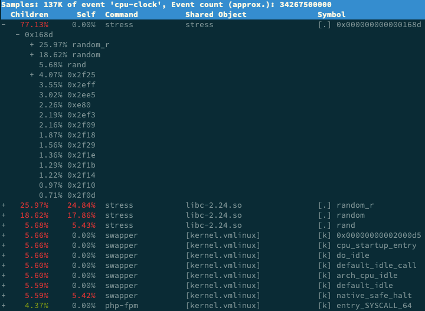
你看，stress 占了所有 CPU 时钟事件的 77%，而 stress 调用调用栈中比例最高的，是随机数生成函数 random()，看来它的确就是 CPU 使用率升高的元凶了。随后的优化就很简单了，只要修复权限问题，并减少或删除 stress 的调用，就可以减轻系统的 CPU 压力。
当然，实际生产环境中的问题一般都要比这个案例复杂，在你找到触发瓶颈的命令行后，却可能发现，这个外部命令的调用过程是应用核心逻辑的一部分，并不能轻易减少或者删除。
这时，你就得继续排查，为什么被调用的命令，会导致 CPU 使用率升高或 I/O 升高等问题。这些复杂场景的案例，我会在后面的综合实战里详细分析。
最后，在案例结束时，不要忘了清理环境，执行下面的 Docker 命令，停止案例中用到的 Nginx 进程：
$ docker rm -f nginx phpfpm
execsnoop
在这个案例中，我们使用了 top、pidstat、pstree 等工具分析了系统 CPU 使用率高的问题，并发现 CPU 升高是短时进程 stress 导致的，但是整个分析过程还是比较复杂的。对于这类问题，有没有更好的方法监控呢？
execsnoop 就是一个专为短时进程设计的工具。它通过 ftrace 实时监控进程的 exec() 行为，并输出短时进程的基本信息，包括进程 PID、父进程 PID、命令行参数以及执行的结果。
比如，用 execsnoop 监控上述案例，就可以直接得到 stress 进程的父进程 PID 以及它的命令行参数，并可以发现大量的 stress 进程在不停启动：
# 按 Ctrl+C 结束
$ execsnoop
PCOMM PID PPID RET ARGS
sh 30394 30393 0
stress 30396 30394 0 /usr/local/bin/stress -t 1 -d 1
sh 30398 30393 0
stress 30399 30398 0 /usr/local/bin/stress -t 1 -d 1
sh 30402 30400 0
stress 30403 30402 0 /usr/local/bin/stress -t 1 -d 1
sh 30405 30393 0
stress 30407 30405 0 /usr/local/bin/stress -t 1 -d 1
...
execsnoop 所用的 ftrace 是一种常用的动态追踪技术，一般用于分析 Linux 内核的运行时行为，后面课程我也会详细介绍并带你使用。
小结
碰到常规问题无法解释的 CPU 使用率情况时，首先要想到有可能是短时应用导致的问题，比如有可能是下面这两种情况。
- 第一，应用里直接调用了其他二进制程序，这些程序通常运行时间比较短，通过 top 等工具也不容易发现。
- 第二，应用本身在不停地崩溃重启，而启动过程的资源初始化，很可能会占用相当多的 CPU。
对于这类进程，我们可以用 pstree 或者 execsnoop 找到它们的父进程，再从父进程所在的应用入手，排查问题的根源。
思考
最后，我想邀请你一起来聊聊，你所碰到的 CPU 性能问题。有没有哪个印象深刻的经历可以跟我分享呢？或者，在今天的案例操作中，你遇到了什么问题，又解决了哪些呢？你可以结合我的讲述，总结自己的思路。
欢迎在留言区和我讨论，也欢迎把这篇文章分享给你的同事、朋友。我们一起在实战中演练，在交流中进步。
07 案例篇：系统中出现大量不可中断进程和僵尸进程怎么办？（上）
你好，我是倪朋飞。
上一节，我用一个 Nginx+PHP 的案例，给你讲了服务器 CPU 使用率高的分析和应对方法。这里你一定要记得，当碰到无法解释的 CPU 使用率问题时，先要检查一下是不是短时应用在捣鬼。
短时应用的运行时间比较短，很难在 top 或者 ps 这类展示系统概要和进程快照的工具中发现，你需要使用记录事件的工具来配合诊断，比如 execsnoop 或者 perf top。
这些思路你不用刻意去背，多练习几次，多在操作中思考，你便能灵活运用。
另外，我们还讲到 CPU 使用率的类型。除了上一节提到的用户 CPU 之外，它还包括系统 CPU（比如上下文切换）、等待 I/O 的 CPU（比如等待磁盘的响应）以及中断 CPU（包括软中断和硬中断）等。
我们已经在上下文切换的文章中，一起分析了系统 CPU 使用率高的问题，剩下的等待 I/O 的 CPU 使用率（以下简称为 iowait）升高，也是最常见的一个服务器性能问题。今天我们就来看一个多进程 I/O 的案例，并分析这种情况。
进程状态
当 iowait 升高时，进程很可能因为得不到硬件的响应，而长时间处于不可中断状态。从 ps 或者 top 命令的输出中，你可以发现它们都处于 D 状态，也就是不可中断状态（Uninterruptible Sleep）。既然说到了进程的状态，进程有哪些状态你还记得吗？我们先来回顾一下。
top 和 ps 是最常用的查看进程状态的工具，我们就从 top 的输出开始。下面是一个 top 命令输出的示例，S 列（也就是 Status 列）表示进程的状态。从这个示例里，你可以看到 R、D、Z、S、I 等几个状态，它们分别是什么意思呢？
$ top
PID USER PR NI VIRT RES SHR S %CPU %MEM TIME+ COMMAND
28961 root 20 0 43816 3148 4040 R 3.2 0.0 0:00.01 top
620 root 20 0 37280 33676 908 D 0.3 0.4 0:00.01 app
1 root 20 0 160072 9416 6752 S 0.0 0.1 0:37.64 systemd
1896 root 20 0 0 0 0 Z 0.0 0.0 0:00.00 devapp
2 root 20 0 0 0 0 S 0.0 0.0 0:00.10 kthreadd
4 root 0 -20 0 0 0 I 0.0 0.0 0:00.00 kworker/0:0H
6 root 0 -20 0 0 0 I 0.0 0.0 0:00.00 mm_percpu_wq
7 root 20 0 0 0 0 S 0.0 0.0 0:06.37 ksoftirqd/0
我们挨个来看一下：
- R 是 Running 或 Runnable 的缩写，表示进程在 CPU 的就绪队列中，正在运行或者正在等待运行。
- D 是 Disk Sleep 的缩写，也就是不可中断状态睡眠（Uninterruptible Sleep），一般表示进程正在跟硬件交互，并且交互过程不允许被其他进程或中断打断。
- Z 是 Zombie 的缩写，如果你玩过“植物大战僵尸”这款游戏，应该知道它的意思。它表示僵尸进程，也就是进程实际上已经结束了，但是父进程还没有回收它的资源（比如进程的描述符、PID 等）。
- S 是 Interruptible Sleep 的缩写，也就是可中断状态睡眠，表示进程因为等待某个事件而被系统挂起。当进程等待的事件发生时，它会被唤醒并进入 R 状态。
- I 是 Idle 的缩写，也就是空闲状态，用在不可中断睡眠的内核线程上。前面说了，硬件交互导致的不可中断进程用 D 表示，但对某些内核线程来说，它们有可能实际上并没有任何负载，用 Idle 正是为了区分这种情况。要注意，D 状态的进程会导致平均负载升高， I 状态的进程却不会。
当然了，上面的示例并没有包括进程的所有状态。除了以上 5 个状态，进程还包括下面这 2 个状态。
第一个是 T 或者 t，也就是 Stopped 或 Traced 的缩写，表示进程处于暂停或者跟踪状态。
向一个进程发送 SIGSTOP 信号，它就会因响应这个信号变成暂停状态（Stopped）；再向它发送 SIGCONT 信号，进程又会恢复运行（如果进程是终端里直接启动的，则需要你用 fg 命令，恢复到前台运行）。
而当你用调试器（如 gdb）调试一个进程时，在使用断点中断进程后，进程就会变成跟踪状态，这其实也是一种特殊的暂停状态，只不过你可以用调试器来跟踪并按需要控制进程的运行。
另一个是 X，也就是 Dead 的缩写，表示进程已经消亡，所以你不会在 top 或者 ps 命令中看到它。
了解了这些，我们再回到今天的主题。先看不可中断状态，这其实是为了保证进程数据与硬件状态一致，并且正常情况下，不可中断状态在很短时间内就会结束。所以，短时的不可中断状态进程，我们一般可以忽略。
但如果系统或硬件发生了故障，进程可能会在不可中断状态保持很久，甚至导致系统中出现大量不可中断进程。这时，你就得注意下，系统是不是出现了 I/O 等性能问题。
再看僵尸进程，这是多进程应用很容易碰到的问题。正常情况下，当一个进程创建了子进程后，它应该通过系统调用 wait() 或者 waitpid() 等待子进程结束，回收子进程的资源；而子进程在结束时，会向它的父进程发送 SIGCHLD 信号，所以，父进程还可以注册 SIGCHLD 信号的处理函数，异步回收资源。
如果父进程没这么做，或是子进程执行太快，父进程还没来得及处理子进程状态，子进程就已经提前退出，那这时的子进程就会变成僵尸进程。换句话说，父亲应该一直对儿子负责，善始善终，如果不作为或者跟不上，都会导致“问题少年”的出现。
通常，僵尸进程持续的时间都比较短，在父进程回收它的资源后就会消亡；或者在父进程退出后，由 init 进程回收后也会消亡。
一旦父进程没有处理子进程的终止，还一直保持运行状态，那么子进程就会一直处于僵尸状态。大量的僵尸进程会用尽 PID 进程号，导致新进程不能创建，所以这种情况一定要避免。
案例分析
接下来，我将用一个多进程应用的案例，带你分析大量不可中断状态和僵尸状态进程的问题。这个应用基于 C 开发，由于它的编译和运行步骤比较麻烦，我把它打包成了一个 Docker 镜像。这样，你只需要运行一个 Docker 容器就可以得到模拟环境。
你的准备
下面的案例仍然基于 Ubuntu 18.04，同样适用于其他的 Linux 系统。我使用的案例环境如下所示：
- 机器配置：2 CPU，8GB 内存
- 预先安装 docker、sysstat、dstat 等工具，如 apt install docker.io dstat sysstat
这里，dstat 是一个新的性能工具，它吸收了 vmstat、iostat、ifstat 等几种工具的优点，可以同时观察系统的 CPU、磁盘 I/O、网络以及内存使用情况。
接下来，我们打开一个终端，SSH 登录到机器上，并安装上述工具。
注意，以下所有命令都默认以 root 用户运行，如果你用普通用户身份登陆系统，请运行 sudo su root 命令切换到 root 用户。
如果安装过程有问题，你可以先上网搜索解决，实在解决不了的，记得在留言区向我提问。
温馨提示：案例应用的核心代码逻辑比较简单，你可能一眼就能看出问题，但实际生产环境中的源码就复杂多了。所以，我依旧建议，操作之前别看源码，避免先入为主，而要把它当成一个黑盒来分析，这样你可以更好地根据现象分析问题。你姑且当成你工作中的一次演练，这样效果更佳。
操作和分析
安装完成后，我们首先执行下面的命令运行案例应用：
$ docker run --privileged --name=app -itd feisky/app:iowait
然后，输入 ps 命令，确认案例应用已正常启动。如果一切正常，你应该可以看到如下所示的输出：
$ ps aux | grep /app
root 4009 0.0 0.0 4376 1008 pts/0 Ss+ 05:51 0:00 /app
root 4287 0.6 0.4 37280 33660 pts/0 D+ 05:54 0:00 /app
root 4288 0.6 0.4 37280 33668 pts/0 D+ 05:54 0:00 /app
从这个界面，我们可以发现多个 app 进程已经启动，并且它们的状态分别是 Ss+ 和 D+。其中，S 表示可中断睡眠状态，D 表示不可中断睡眠状态，我们在前面刚学过，那后面的 s 和 + 是什么意思呢？不知道也没关系，查一下 man ps 就可以。现在记住，s 表示这个进程是一个会话的领导进程，而 + 表示前台进程组。
这里又出现了两个新概念，进程组和会话。它们用来管理一组相互关联的进程，意思其实很好理解。
- 进程组表示一组相互关联的进程，比如每个子进程都是父进程所在组的成员；
- 而会话是指共享同一个控制终端的一个或多个进程组。
比如，我们通过 SSH 登录服务器，就会打开一个控制终端（TTY），这个控制终端就对应一个会话。而我们在终端中运行的命令以及它们的子进程，就构成了一个个的进程组，其中，在后台运行的命令，构成后台进程组；在前台运行的命令，构成前台进程组。
明白了这些，我们再用 top 看一下系统的资源使用情况：
# 按下数字 1 切换到所有 CPU 的使用情况，观察一会儿按 Ctrl+C 结束
$ top
top - 05:56:23 up 17 days, 16:45, 2 users, load average: 2.00, 1.68, 1.39
Tasks: 247 total, 1 running, 79 sleeping, 0 stopped, 115 zombie
%Cpu0 : 0.0 us, 0.7 sy, 0.0 ni, 38.9 id, 60.5 wa, 0.0 hi, 0.0 si, 0.0 st
%Cpu1 : 0.0 us, 0.7 sy, 0.0 ni, 4.7 id, 94.6 wa, 0.0 hi, 0.0 si, 0.0 st
...
PID USER PR NI VIRT RES SHR S %CPU %MEM TIME+ COMMAND
4340 root 20 0 44676 4048 3432 R 0.3 0.0 0:00.05 top
4345 root 20 0 37280 33624 860 D 0.3 0.0 0:00.01 app
4344 root 20 0 37280 33624 860 D 0.3 0.4 0:00.01 app
1 root 20 0 160072 9416 6752 S 0.0 0.1 0:38.59 systemd
...
从这里你能看出什么问题吗？细心一点，逐行观察，别放过任何一个地方。忘了哪行参数意思的话，也要及时返回去复习。
好的，如果你已经有了答案，那就继续往下走，看看跟我找的问题是否一样。这里，我发现了四个可疑的地方。
- 先看第一行的平均负载（ Load Average），过去 1 分钟、5 分钟和 15 分钟内的平均负载在依次减小，说明平均负载正在升高；而 1 分钟内的平均负载已经达到系统的 CPU 个数，说明系统很可能已经有了性能瓶颈。
- 再看第二行的 Tasks，有 1 个正在运行的进程，但僵尸进程比较多，而且还在不停增加，说明有子进程在退出时没被清理。
- 接下来看两个 CPU 的使用率情况，用户 CPU 和系统 CPU 都不高，但 iowait 分别是 60.5% 和 94.6%，好像有点儿不正常。
- 最后再看每个进程的情况， CPU 使用率最高的进程只有 0.3%，看起来并不高；但有两个进程处于 D 状态，它们可能在等待 I/O，但光凭这里并不能确定是它们导致了 iowait 升高。
我们把这四个问题再汇总一下，就可以得到很明确的两点：
- 第一点，iowait 太高了，导致系统的平均负载升高，甚至达到了系统 CPU 的个数。
- 第二点，僵尸进程在不断增多，说明有程序没能正确清理子进程的资源。
那么，碰到这两个问题该怎么办呢？结合我们前面分析问题的思路，你先自己想想，动手试试，下节课我来继续“分解”。
小结
今天我们主要通过简单的操作，熟悉了几个必备的进程状态。用我们最熟悉的 ps 或者 top ，可以查看进程的状态，这些状态包括运行（R）、空闲（I）、不可中断睡眠（D）、可中断睡眠（S）、僵尸（Z）以及暂停（T）等。
其中，不可中断状态和僵尸状态，是我们今天学习的重点。
- 不可中断状态，表示进程正在跟硬件交互，为了保护进程数据和硬件的一致性，系统不允许其他进程或中断打断这个进程。进程长时间处于不可中断状态，通常表示系统有 I/O 性能问题。
- 僵尸进程表示进程已经退出，但它的父进程还没有回收子进程占用的资源。短暂的僵尸状态我们通常不必理会，但进程长时间处于僵尸状态，就应该注意了，可能有应用程序没有正常处理子进程的退出。
思考
最后，我想请你思考一下今天的课后题，案例中发现的这两个问题，你会怎么分析呢？又应该怎么解决呢？你可以结合前面我们做过的案例分析，总结自己的思路，提出自己的问题。
欢迎在留言区和我讨论，也欢迎把这篇文章分享给你的同事、朋友。我们一起在实战中演练，在交流中进步。
08 案例篇：系统中出现大量不可中断进程和僵尸进程怎么办？（下）
你好，我是倪朋飞。
上一节，我给你讲了 Linux 进程状态的含义，以及不可中断进程和僵尸进程产生的原因，我们先来简单复习下。
使用 ps 或者 top 可以查看进程的状态，这些状态包括运行、空闲、不可中断睡眠、可中断睡眠、僵尸以及暂停等。其中，我们重点学习了不可中断状态和僵尸进程：
- 不可中断状态，一般表示进程正在跟硬件交互，为了保护进程数据与硬件一致，系统不允许其他进程或中断打断该进程。
- 僵尸进程表示进程已经退出，但它的父进程没有回收该进程所占用的资源。
上一节的最后，我用一个案例展示了处于这两种状态的进程。通过分析 top 命令的输出，我们发现了两个问题：
- 第一，iowait 太高了，导致系统平均负载升高，并且已经达到了系统 CPU 的个数。
- 第二，僵尸进程在不断增多，看起来是应用程序没有正确清理子进程的资源。
相信你一定认真思考过这两个问题，那么，真相到底是什么呢？接下来，我们一起顺着这两个问题继续分析，找出根源。
首先，请你打开一个终端，登录到上次的机器中。然后执行下面的命令，重新运行这个案例：
# 先删除上次启动的案例
$ docker rm -f app
# 重新运行案例
$ docker run --privileged --name=app -itd feisky/app:iowait
iowait 分析
我们先来看一下 iowait 升高的问题。
我相信，一提到 iowait 升高，你首先会想要查询系统的 I/O 情况。我一般也是这种思路，那么什么工具可以查询系统的 I/O 情况呢？
这里，我推荐的正是上节课要求安装的 dstat ，它的好处是，可以同时查看 CPU 和 I/O 这两种资源的使用情况，便于对比分析。
那么，我们在终端中运行 dstat 命令，观察 CPU 和 I/O 的使用情况：
# 间隔 1 秒输出 10 组数据
$ dstat 1 10
You did not select any stats, using -cdngy by default.
--total-cpu-usage-- -dsk/total- -net/total- ---paging-- ---system--
usr sys idl wai stl| read writ| recv send| in out | int csw
0 0 96 4 0|1219k 408k| 0 0 | 0 0 | 42 885
0 0 2 98 0| 34M 0 | 198B 790B| 0 0 | 42 138
0 0 0 100 0| 34M 0 | 66B 342B| 0 0 | 42 135
0 0 84 16 0|5633k 0 | 66B 342B| 0 0 | 52 177
0 3 39 58 0| 22M 0 | 66B 342B| 0 0 | 43 144
0 0 0 100 0| 34M 0 | 200B 450B| 0 0 | 46 147
0 0 2 98 0| 34M 0 | 66B 342B| 0 0 | 45 134
0 0 0 100 0| 34M 0 | 66B 342B| 0 0 | 39 131
0 0 83 17 0|5633k 0 | 66B 342B| 0 0 | 46 168
0 3 39 59 0| 22M 0 | 66B 342B| 0 0 | 37 134
从 dstat 的输出，我们可以看到，每当 iowait 升高（wai）时，磁盘的读请求（read）都会很大。这说明 iowait 的升高跟磁盘的读请求有关，很可能就是磁盘读导致的。
那到底是哪个进程在读磁盘呢？不知道你还记不记得，上节在 top 里看到的不可中断状态进程，我觉得它就很可疑，我们试着来分析下。
我们继续在刚才的终端中，运行 top 命令，观察 D 状态的进程：
# 观察一会儿按 Ctrl+C 结束
$ top
...
PID USER PR NI VIRT RES SHR S %CPU %MEM TIME+ COMMAND
4340 root 20 0 44676 4048 3432 R 0.3 0.0 0:00.05 top
4345 root 20 0 37280 33624 860 D 0.3 0.0 0:00.01 app
4344 root 20 0 37280 33624 860 D 0.3 0.4 0:00.01 app
...
我们从 top 的输出找到 D 状态进程的 PID，你可以发现，这个界面里有两个 D 状态的进程，PID 分别是 4344 和 4345。
接着，我们查看这些进程的磁盘读写情况。对了，别忘了工具是什么。一般要查看某一个进程的资源使用情况，都可以用我们的老朋友 pidstat，不过这次记得加上 -d 参数，以便输出 I/O 使用情况。
比如，以 4344 为例，我们在终端里运行下面的 pidstat 命令，并用 -p 4344 参数指定进程号：
# -d 展示 I/O 统计数据，-p 指定进程号，间隔 1 秒输出 3 组数据
$ pidstat -d -p 4344 1 3
06:38:50 UID PID kB_rd/s kB_wr/s kB_ccwr/s iodelay Command
06:38:51 0 4344 0.00 0.00 0.00 0 app
06:38:52 0 4344 0.00 0.00 0.00 0 app
06:38:53 0 4344 0.00 0.00 0.00 0 app
在这个输出中， kB_rd 表示每秒读的 KB 数， kB_wr 表示每秒写的 KB 数，iodelay 表示 I/O 的延迟（单位是时钟周期）。它们都是 0，那就表示此时没有任何的读写，说明问题不是 4344 进程导致的。
可是，用同样的方法分析进程 4345，你会发现，它也没有任何磁盘读写。
那要怎么知道，到底是哪个进程在进行磁盘读写呢？我们继续使用 pidstat，但这次去掉进程号，干脆就来观察所有进程的 I/O 使用情况。
在终端中运行下面的 pidstat 命令：
# 间隔 1 秒输出多组数据 (这里是 20 组)
$ pidstat -d 1 20
...
06:48:46 UID PID kB_rd/s kB_wr/s kB_ccwr/s iodelay Command
06:48:47 0 4615 0.00 0.00 0.00 1 kworker/u4:1
06:48:47 0 6080 32768.00 0.00 0.00 170 app
06:48:47 0 6081 32768.00 0.00 0.00 184 app
06:48:47 UID PID kB_rd/s kB_wr/s kB_ccwr/s iodelay Command
06:48:48 0 6080 0.00 0.00 0.00 110 app
06:48:48 UID PID kB_rd/s kB_wr/s kB_ccwr/s iodelay Command
06:48:49 0 6081 0.00 0.00 0.00 191 app
06:48:49 UID PID kB_rd/s kB_wr/s kB_ccwr/s iodelay Command
06:48:50 UID PID kB_rd/s kB_wr/s kB_ccwr/s iodelay Command
06:48:51 0 6082 32768.00 0.00 0.00 0 app
06:48:51 0 6083 32768.00 0.00 0.00 0 app
06:48:51 UID PID kB_rd/s kB_wr/s kB_ccwr/s iodelay Command
06:48:52 0 6082 32768.00 0.00 0.00 184 app
06:48:52 0 6083 32768.00 0.00 0.00 175 app
06:48:52 UID PID kB_rd/s kB_wr/s kB_ccwr/s iodelay Command
06:48:53 0 6083 0.00 0.00 0.00 105 app
...
观察一会儿可以发现，的确是 app 进程在进行磁盘读，并且每秒读的数据有 32 MB，看来就是 app 的问题。不过，app 进程到底在执行啥 I/O 操作呢？
这里，我们需要回顾一下进程用户态和内核态的区别。进程想要访问磁盘，就必须使用系统调用，所以接下来，重点就是找出 app 进程的系统调用了。
strace 正是最常用的跟踪进程系统调用的工具。所以，我们从 pidstat 的输出中拿到进程的 PID 号，比如 6082，然后在终端中运行 strace 命令，并用 -p 参数指定 PID 号：
$ strace -p 6082
strace: attach: ptrace(PTRACE_SEIZE, 6082): Operation not permitted
这儿出现了一个奇怪的错误，strace 命令居然失败了，并且命令报出的错误是没有权限。按理来说，我们所有操作都已经是以 root 用户运行了，为什么还会没有权限呢？你也可以先想一下，碰到这种情况，你会怎么处理呢？
一般遇到这种问题时，我会先检查一下进程的状态是否正常。比如，继续在终端中运行 ps 命令，并使用 grep 找出刚才的 6082 号进程：
$ ps aux | grep 6082
root 6082 0.0 0.0 0 0 pts/0 Z+ 13:43 0:00 [app] <defunct>
果然，进程 6082 已经变成了 Z 状态，也就是僵尸进程。僵尸进程都是已经退出的进程，所以就没法儿继续分析它的系统调用。关于僵尸进程的处理方法，我们一会儿再说，现在还是继续分析 iowait 的问题。
到这一步，你应该注意到了，系统 iowait 的问题还在继续，但是 top、pidstat 这类工具已经不能给出更多的信息了。这时，我们就应该求助那些基于事件记录的动态追踪工具了。
你可以用 perf top 看看有没有新发现。再或者，可以像我一样，在终端中运行 perf record，持续一会儿（例如 15 秒），然后按 Ctrl+C 退出，再运行 perf report 查看报告：
$ perf record -g
$ perf report
接着，找到我们关注的 app 进程，按回车键展开调用栈，你就会得到下面这张调用关系图：
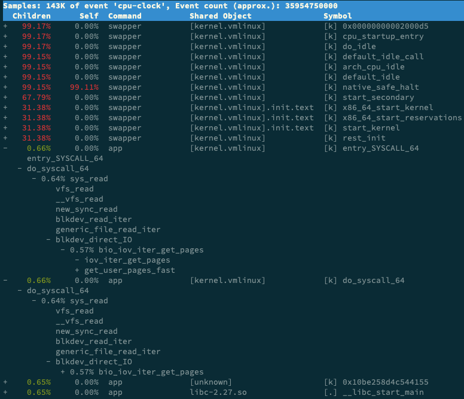
这个图里的 swapper 是内核中的调度进程，你可以先忽略掉。
我们来看其他信息，你可以发现， app 的确在通过系统调用 sys_read() 读取数据。并且从 new_sync_read 和 blkdev_direct_IO 能看出，进程正在对磁盘进行直接读，也就是绕过了系统缓存，每个读请求都会从磁盘直接读，这就可以解释我们观察到的 iowait 升高了。
看来，罪魁祸首是 app 内部进行了磁盘的直接 I/O 啊！
下面的问题就容易解决了。我们接下来应该从代码层面分析，究竟是哪里出现了直接读请求。查看源码文件 app.c，你会发现它果然使用了 O_DIRECT 选项打开磁盘，于是绕过了系统缓存，直接对磁盘进行读写。
open(disk, O_RDONLY|O_DIRECT|O_LARGEFILE, 0755)
直接读写磁盘，对 I/O 敏感型应用（比如数据库系统）是很友好的，因为你可以在应用中，直接控制磁盘的读写。但在大部分情况下，我们最好还是通过系统缓存来优化磁盘 I/O，换句话说，删除 O_DIRECT 这个选项就是了。
app-fix1.c 就是修改后的文件，我也打包成了一个镜像文件，运行下面的命令，你就可以启动它了：
# 首先删除原来的应用
$ docker rm -f app
# 运行新的应用
$ docker run --privileged --name=app -itd feisky/app:iowait-fix1
最后，再用 top 检查一下：
$ top
top - 14:59:32 up 19 min, 1 user, load average: 0.15, 0.07, 0.05
Tasks: 137 total, 1 running, 72 sleeping, 0 stopped, 12 zombie
%Cpu0 : 0.0 us, 1.7 sy, 0.0 ni, 98.0 id, 0.3 wa, 0.0 hi, 0.0 si, 0.0 st
%Cpu1 : 0.0 us, 1.3 sy, 0.0 ni, 98.7 id, 0.0 wa, 0.0 hi, 0.0 si, 0.0 st
...
PID USER PR NI VIRT RES SHR S %CPU %MEM TIME+ COMMAND
3084 root 20 0 0 0 0 Z 1.3 0.0 0:00.04 app
3085 root 20 0 0 0 0 Z 1.3 0.0 0:00.04 app
1 root 20 0 159848 9120 6724 S 0.0 0.1 0:09.03 systemd
2 root 20 0 0 0 0 S 0.0 0.0 0:00.00 kthreadd
3 root 20 0 0 0 0 I 0.0 0.0 0:00.40 kworker/0:0
...
你会发现， iowait 已经非常低了，只有 0.3%，说明刚才的改动已经成功修复了 iowait 高的问题，大功告成！不过，别忘了，僵尸进程还在等着你。仔细观察僵尸进程的数量，你会郁闷地发现，僵尸进程还在不断的增长中。
僵尸进程
接下来，我们就来处理僵尸进程的问题。既然僵尸进程是因为父进程没有回收子进程的资源而出现的，那么，要解决掉它们，就要找到它们的根儿，也就是找出父进程，然后在父进程里解决。
父进程的找法我们前面讲过，最简单的就是运行 pstree 命令：
# -a 表示输出命令行选项
# p 表 PID
# s 表示指定进程的父进程
$ pstree -aps 3084
systemd,1
└─dockerd,15006 -H fd://
└─docker-containe,15024 --config /var/run/docker/containerd/containerd.toml
└─docker-containe,3991 -namespace moby -workdir...
└─app,4009
└─(app,3084)
运行完，你会发现 3084 号进程的父进程是 4009，也就是 app 应用。
所以，我们接着查看 app 应用程序的代码，看看子进程结束的处理是否正确，比如有没有调用 wait() 或 waitpid() ，抑或是，有没有注册 SIGCHLD 信号的处理函数。
现在我们查看修复 iowait 后的源码文件 app-fix1.c ，找到子进程的创建和清理的地方：
int status = 0;
for (;;) {
for (int i = 0; i < 2; i++) {
if(fork()== 0) {
sub_process();
}
}
sleep(5);
}
while(wait(&status)>0);
循环语句本来就容易出错，你能找到这里的问题吗？这段代码虽然看起来调用了 wait() 函数等待子进程结束，但却错误地把 wait() 放到了 for 死循环的外面，也就是说，wait() 函数实际上并没被调用到，我们把它挪到 for 循环的里面就可以了。
修改后的文件我放到了 app-fix2.c 中，也打包成了一个 Docker 镜像，运行下面的命令，你就可以启动它：
# 先停止产生僵尸进程的 app
$ docker rm -f app
# 然后启动新的 app
$ docker run --privileged --name=app -itd feisky/app:iowait-fix2
启动后，再用 top 最后来检查一遍：
$ top
top - 15:00:44 up 20 min, 1 user, load average: 0.05, 0.05, 0.04
Tasks: 125 total, 1 running, 72 sleeping, 0 stopped, 0 zombie
%Cpu0 : 0.0 us, 1.7 sy, 0.0 ni, 98.3 id, 0.0 wa, 0.0 hi, 0.0 si, 0.0 st
%Cpu1 : 0.0 us, 1.3 sy, 0.0 ni, 98.7 id, 0.0 wa, 0.0 hi, 0.0 si, 0.0 st
...
PID USER PR NI VIRT RES SHR S %CPU %MEM TIME+ COMMAND
3198 root 20 0 4376 840 780 S 0.3 0.0 0:00.01 app
2 root 20 0 0 0 0 S 0.0 0.0 0:00.00 kthreadd
3 root 20 0 0 0 0 I 0.0 0.0 0:00.41 kworker/0:0
...
好了，僵尸进程（Z 状态）没有了， iowait 也是 0，问题终于全部解决了。
小结
今天我用一个多进程的案例，带你分析系统等待 I/O 的 CPU 使用率（也就是 iowait%）升高的情况。
虽然这个案例是磁盘 I/O 导致了 iowait 升高，不过， iowait 高不一定代表 I/O 有性能瓶颈。当系统中只有 I/O 类型的进程在运行时，iowait 也会很高，但实际上，磁盘的读写远没有达到性能瓶颈的程度。
因此，碰到 iowait 升高时，需要先用 dstat、pidstat 等工具，确认是不是磁盘 I/O 的问题，然后再找是哪些进程导致了 I/O。
等待 I/O 的进程一般是不可中断状态，所以用 ps 命令找到的 D 状态（即不可中断状态）的进程，多为可疑进程。但这个案例中，在 I/O 操作后，进程又变成了僵尸进程，所以不能用 strace 直接分析这个进程的系统调用。
这种情况下，我们用了 perf 工具，来分析系统的 CPU 时钟事件，最终发现是直接 I/O 导致的问题。这时，再检查源码中对应位置的问题，就很轻松了。
而僵尸进程的问题相对容易排查，使用 pstree 找出父进程后，去查看父进程的代码，检查 wait() / waitpid() 的调用，或是 SIGCHLD 信号处理函数的注册就行了。
思考
最后，我想邀请你一起来聊聊，你碰到过的不可中断状态进程和僵尸进程问题。你是怎么分析它们的根源？又是怎么解决的？在今天的案例操作中，你又有什么新的发现吗？你可以结合我的讲述，总结自己的思路。
欢迎在留言区和我讨论，也欢迎把这篇文章分享给你的同事、朋友。我们一起在实战中演练，在交流中进步。
09 基础篇：怎么理解Linux软中断？
你好，我是倪朋飞。
上一期，我用一个不可中断进程的案例，带你学习了 iowait（也就是等待 I/O 的 CPU 使用率）升高时的分析方法。这里你要记住，进程的不可中断状态是系统的一种保护机制，可以保证硬件的交互过程不被意外打断。所以，短时间的不可中断状态是很正常的。
但是，当进程长时间都处于不可中断状态时，你就得当心了。这时，你可以使用 dstat、pidstat 等工具，确认是不是磁盘 I/O 的问题，进而排查相关的进程和磁盘设备。关于磁盘 I/O 的性能问题，你暂且不用专门去背，我会在后续的 I/O 部分详细介绍，到时候理解了也就记住了。
其实除了 iowait，软中断（softirq）CPU 使用率升高也是最常见的一种性能问题。接下来的两节课，我们就来学习软中断的内容，我还会以最常见的反向代理服务器 Nginx 的案例，带你分析这种情况。
从“取外卖”看中断
说到中断，我在前面[关于“上下文切换”的文章]，简单说过中断的含义，先来回顾一下。中断是系统用来响应硬件设备请求的一种机制，它会打断进程的正常调度和执行，然后调用内核中的中断处理程序来响应设备的请求。
你可能要问了，为什么要有中断呢？我可以举个生活中的例子，让你感受一下中断的魅力。
比如说你订了一份外卖，但是不确定外卖什么时候送到，也没有别的方法了解外卖的进度，但是，配送员送外卖是不等人的，到了你这儿没人取的话，就直接走人了。所以你只能苦苦等着，时不时去门口看看外卖送到没，而不能干其他事情。
不过呢，如果在订外卖的时候，你就跟配送员约定好，让他送到后给你打个电话，那你就不用苦苦等待了，就可以去忙别的事情，直到电话一响，接电话、取外卖就可以了。
这里的“打电话”，其实就是一个中断。没接到电话的时候，你可以做其他的事情；只有接到了电话（也就是发生中断），你才要进行另一个动作：取外卖。
这个例子你就可以发现，中断其实是一种异步的事件处理机制，可以提高系统的并发处理能力。
由于中断处理程序会打断其他进程的运行，所以，为了减少对正常进程运行调度的影响，中断处理程序就需要尽可能快地运行。如果中断本身要做的事情不多，那么处理起来也不会有太大问题；但如果中断要处理的事情很多，中断服务程序就有可能要运行很长时间。
特别是，中断处理程序在响应中断时，还会临时关闭中断。这就会导致上一次中断处理完成之前，其他中断都不能响应，也就是说中断有可能会丢失。
那么还是以取外卖为例。假如你订了 2 份外卖，一份主食和一份饮料，并且是由 2 个不同的配送员来配送。这次你不用时时等待着，两份外卖都约定了电话取外卖的方式。但是，问题又来了。
当第一份外卖送到时，配送员给你打了个长长的电话，商量发票的处理方式。与此同时，第二个配送员也到了，也想给你打电话。
但是很明显，因为电话占线（也就是关闭了中断响应），第二个配送员的电话是打不通的。所以，第二个配送员很可能试几次后就走掉了（也就是丢失了一次中断）。
软中断
如果你弄清楚了“取外卖”的模式，那对系统的中断机制就很容易理解了。事实上，为了解决中断处理程序执行过长和中断丢失的问题，Linux 将中断处理过程分成了两个阶段，也就是上半部和下半部：
- 上半部用来快速处理中断，它在中断禁止模式下运行，主要处理跟硬件紧密相关的或时间敏感的工作。
- 下半部用来延迟处理上半部未完成的工作，通常以内核线程的方式运行。
比如说前面取外卖的例子，上半部就是你接听电话，告诉配送员你已经知道了，其他事儿见面再说，然后电话就可以挂断了；下半部才是取外卖的动作，以及见面后商量发票处理的动作。
这样，第一个配送员不会占用你太多时间，当第二个配送员过来时，照样能正常打通你的电话。
除了取外卖，我再举个最常见的网卡接收数据包的例子，让你更好地理解。
网卡接收到数据包后，会通过硬件中断的方式，通知内核有新的数据到了。这时，内核就应该调用中断处理程序来响应它。你可以自己先想一下，这种情况下的上半部和下半部分别负责什么工作呢？
对上半部来说，既然是快速处理，其实就是要把网卡的数据读到内存中，然后更新一下硬件寄存器的状态（表示数据已经读好了），最后再发送一个软中断信号，通知下半部做进一步的处理。
而下半部被软中断信号唤醒后，需要从内存中找到网络数据，再按照网络协议栈，对数据进行逐层解析和处理，直到把它送给应用程序。
所以，这两个阶段你也可以这样理解：
- 上半部直接处理硬件请求，也就是我们常说的硬中断，特点是快速执行；
- 而下半部则是由内核触发，也就是我们常说的软中断，特点是延迟执行。
实际上，上半部会打断 CPU 正在执行的任务，然后立即执行中断处理程序。而下半部以内核线程的方式执行，并且每个 CPU 都对应一个软中断内核线程，名字为 “ksoftirqd/CPU 编号”，比如说， 0 号 CPU 对应的软中断内核线程的名字就是 ksoftirqd/0。
不过要注意的是，软中断不只包括了刚刚所讲的硬件设备中断处理程序的下半部，一些内核自定义的事件也属于软中断，比如内核调度和 RCU 锁（Read-Copy Update 的缩写，RCU 是 Linux 内核中最常用的锁之一）等。
那要怎么知道你的系统里有哪些软中断呢？
查看软中断和内核线程
不知道你还记不记得，前面提到过的 proc 文件系统。它是一种内核空间和用户空间进行通信的机制，可以用来查看内核的数据结构，或者用来动态修改内核的配置。其中：
- /proc/softirqs 提供了软中断的运行情况；
- /proc/interrupts 提供了硬中断的运行情况。
运行下面的命令，查看 /proc/softirqs 文件的内容，你就可以看到各种类型软中断在不同 CPU 上的累积运行次数：
$ cat /proc/softirqs
CPU0 CPU1
HI: 0 0
TIMER: 811613 1972736
NET_TX: 49 7
NET_RX: 1136736 1506885
BLOCK: 0 0
IRQ_POLL: 0 0
TASKLET: 304787 3691
SCHED: 689718 1897539
HRTIMER: 0 0
RCU: 1330771 1354737
在查看 /proc/softirqs 文件内容时，你要特别注意以下这两点。
第一，要注意软中断的类型，也就是这个界面中第一列的内容。从第一列你可以看到，软中断包括了 10 个类别，分别对应不同的工作类型。比如 NET_RX 表示网络接收中断，而 NET_TX 表示网络发送中断。
第二，要注意同一种软中断在不同 CPU 上的分布情况，也就是同一行的内容。正常情况下，同一种中断在不同 CPU 上的累积次数应该差不多。比如这个界面中，NET_RX 在 CPU0 和 CPU1 上的中断次数基本是同一个数量级，相差不大。
不过你可能发现，TASKLET 在不同 CPU 上的分布并不均匀。TASKLET 是最常用的软中断实现机制，每个 TASKLET 只运行一次就会结束 ，并且只在调用它的函数所在的 CPU 上运行。
因此，使用 TASKLET 特别简便，当然也会存在一些问题，比如说由于只在一个 CPU 上运行导致的调度不均衡，再比如因为不能在多个 CPU 上并行运行带来了性能限制。
另外，刚刚提到过，软中断实际上是以内核线程的方式运行的，每个 CPU 都对应一个软中断内核线程，这个软中断内核线程就叫做 ksoftirqd/CPU 编号。那要怎么查看这些线程的运行状况呢？
其实用 ps 命令就可以做到，比如执行下面的指令：
$ ps aux | grep softirq
root 7 0.0 0.0 0 0 ? S Oct10 0:01 [ksoftirqd/0]
root 16 0.0 0.0 0 0 ? S Oct10 0:01 [ksoftirqd/1]
注意，这些线程的名字外面都有中括号，这说明 ps 无法获取它们的命令行参数（cmline）。一般来说，ps 的输出中，名字括在中括号里的，一般都是内核线程。
小结
Linux 中的中断处理程序分为上半部和下半部：
- 上半部对应硬件中断，用来快速处理中断。
- 下半部对应软中断，用来异步处理上半部未完成的工作。
Linux 中的软中断包括网络收发、定时、调度、RCU 锁等各种类型，可以通过查看 /proc/softirqs 来观察软中断的运行情况。
思考
最后，我想请你一起聊聊，你是怎么理解软中断的？你有没有碰到过因为软中断出现的性能问题？你又是怎么分析它们的瓶颈的呢？你可以结合今天的内容，总结自己的思路，写下自己的问题。
欢迎在留言区和我讨论，也欢迎把这篇文章分享给你的同事、朋友。我们一起在实战中演练，在交流中进步。
10 案例篇：系统的软中断CPU使用率升高，我该怎么办
你好，我是倪朋飞。
上一期我给你讲了软中断的基本原理，我们先来简单复习下。
中断是一种异步的事件处理机制，用来提高系统的并发处理能力。中断事件发生，会触发执行中断处理程序，而中断处理程序被分为上半部和下半部这两个部分。
- 上半部对应硬中断，用来快速处理中断；
- 下半部对应软中断，用来异步处理上半部未完成的工作。
Linux 中的软中断包括网络收发、定时、调度、RCU 锁等各种类型，我们可以查看 proc 文件系统中的 /proc/softirqs ，观察软中断的运行情况。
在 Linux 中，每个 CPU 都对应一个软中断内核线程，名字是 ksoftirqd/CPU 编号。当软中断事件的频率过高时，内核线程也会因为 CPU 使用率过高而导致软中断处理不及时，进而引发网络收发延迟、调度缓慢等性能问题。
软中断 CPU 使用率过高也是一种最常见的性能问题。今天，我就用最常见的反向代理服务器 Nginx 的案例，教你学会分析这种情况。
案例
你的准备
接下来的案例基于 Ubuntu 18.04，也同样适用于其他的 Linux 系统。我使用的案例环境是这样的：
- 机器配置：2 CPU、8 GB 内存。
- 预先安装 docker、sysstat、sar 、hping3、tcpdump 等工具，比如 apt-get install docker.io sysstat hping3 tcpdump。
这里我又用到了三个新工具，sar、 hping3 和 tcpdump，先简单介绍一下：
- sar 是一个系统活动报告工具，既可以实时查看系统的当前活动，又可以配置保存和报告历史统计数据。
- hping3 是一个可以构造 TCP/IP 协议数据包的工具，可以对系统进行安全审计、防火墙测试等。
- tcpdump 是一个常用的网络抓包工具，常用来分析各种网络问题。
本次案例用到两台虚拟机，我画了一张图来表示它们的关系。
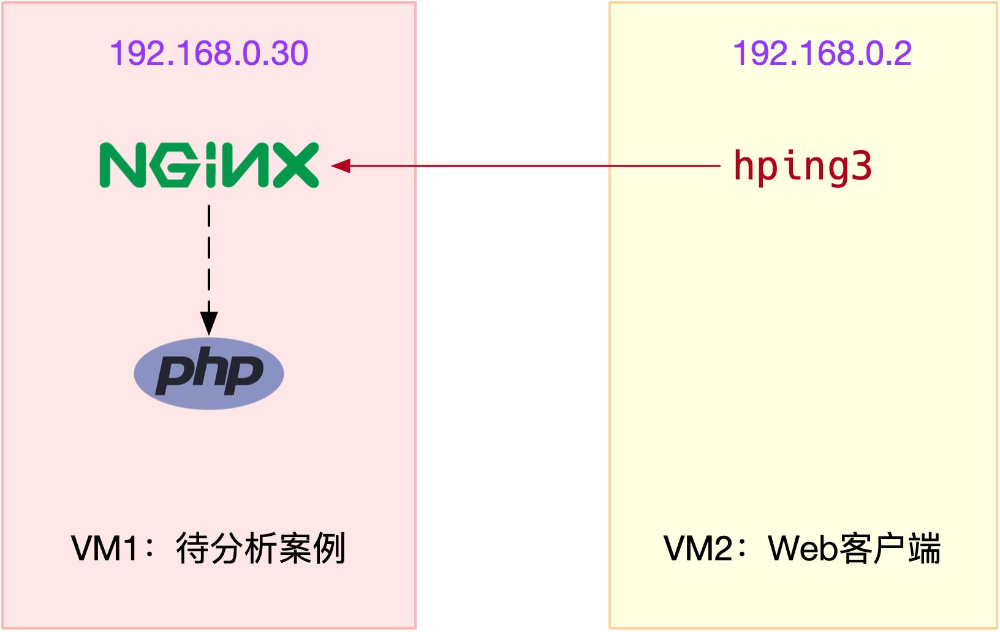
你可以看到，其中一台虚拟机运行 Nginx ，用来模拟待分析的 Web 服务器；而另一台当作 Web 服务器的客户端，用来给 Nginx 增加压力请求。使用两台虚拟机的目的，是为了相互隔离，避免“交叉感染”。
接下来，我们打开两个终端，分别 SSH 登录到两台机器上，并安装上面提到的这些工具。
同以前的案例一样，下面的所有命令都默认以 root 用户运行，如果你是用普通用户身份登陆系统，请运行 sudo su root 命令切换到 root 用户。
如果安装过程中有什么问题，同样鼓励你先自己搜索解决，解决不了的，可以在留言区向我提问。如果你以前已经安装过了，就可以忽略这一点了。
操作和分析
安装完成后，我们先在第一个终端，执行下面的命令运行案例，也就是一个最基本的 Nginx 应用：
# 运行 Nginx 服务并对外开放 80 端口
$ docker run -itd --name=nginx -p 80:80 nginx
然后，在第二个终端，使用 curl 访问 Nginx 监听的端口，确认 Nginx 正常启动。假设 192.168.0.30 是 Nginx 所在虚拟机的 IP 地址，运行 curl 命令后你应该会看到下面这个输出界面：
$ curl http://192.168.0.30/
<!DOCTYPE html>
<html>
<head>
<title>Welcome to nginx!</title>
...
接着，还是在第二个终端，我们运行 hping3 命令，来模拟 Nginx 的客户端请求：
# -S 参数表示设置 TCP 协议的 SYN（同步序列号），-p 表示目的端口为 80
# -i u100 表示每隔 100 微秒发送一个网络帧
# 注：如果你在实践过程中现象不明显，可以尝试把 100 调小，比如调成 10 甚至 1
$ hping3 -S -p 80 -i u100 192.168.0.30
现在我们再回到第一个终端，你应该发现了异常。是不是感觉系统响应明显变慢了，即便只是在终端中敲几个回车，都得很久才能得到响应？这个时候应该怎么办呢？
虽然在运行 hping3 命令时，我就已经告诉你，这是一个 SYN FLOOD 攻击，你肯定也会想到从网络方面入手，来分析这个问题。不过，在实际的生产环境中，没人直接告诉你原因。
所以，我希望你把 hping3 模拟 SYN FLOOD 这个操作暂时忘掉，然后重新从观察到的问题开始，分析系统的资源使用情况，逐步找出问题的根源。
那么，该从什么地方入手呢？刚才我们发现，简单的 SHELL 命令都明显变慢了，先看看系统的整体资源使用情况应该是个不错的注意，比如执行下 top 看看是不是出现了 CPU 的瓶颈。我们在第一个终端运行 top 命令，看一下系统整体的资源使用情况。
# top 运行后按数字 1 切换到显示所有 CPU
$ top
top - 10:50:58 up 1 days, 22:10, 1 user, load average: 0.00, 0.00, 0.00
Tasks: 122 total, 1 running, 71 sleeping, 0 stopped, 0 zombie
%Cpu0 : 0.0 us, 0.0 sy, 0.0 ni, 96.7 id, 0.0 wa, 0.0 hi, 3.3 si, 0.0 st
%Cpu1 : 0.0 us, 0.0 sy, 0.0 ni, 95.6 id, 0.0 wa, 0.0 hi, 4.4 si, 0.0 st
...
PID USER PR NI VIRT RES SHR S %CPU %MEM TIME+ COMMAND
7 root 20 0 0 0 0 S 0.3 0.0 0:01.64 ksoftirqd/0
16 root 20 0 0 0 0 S 0.3 0.0 0:01.97 ksoftirqd/1
2663 root 20 0 923480 28292 13996 S 0.3 0.3 4:58.66 docker-containe
3699 root 20 0 0 0 0 I 0.3 0.0 0:00.13 kworker/u4:0
3708 root 20 0 44572 4176 3512 R 0.3 0.1 0:00.07 top
1 root 20 0 225384 9136 6724 S 0.0 0.1 0:23.25 systemd
2 root 20 0 0 0 0 S 0.0 0.0 0:00.03 kthreadd
...
这里你有没有发现异常的现象？我们从第一行开始，逐个看一下：
- 平均负载全是 0，就绪队列里面只有一个进程（1 running）。
- 每个 CPU 的使用率都挺低，最高的 CPU1 的使用率也只有 4.4%，并不算高。
- 再看进程列表，CPU 使用率最高的进程也只有 0.3%，还是不高呀。
那为什么系统的响应变慢了呢？既然每个指标的数值都不大，那我们就再来看看，这些指标对应的更具体的含义。毕竟，哪怕是同一个指标，用在系统的不同部位和场景上，都有可能对应着不同的性能问题。
仔细看 top 的输出，两个 CPU 的使用率虽然分别只有 3.3% 和 4.4%，但都用在了软中断上；而从进程列表上也可以看到，CPU 使用率最高的也是软中断进程 ksoftirqd。看起来，软中断有点可疑了。
根据上一期的内容，既然软中断可能有问题，那你先要知道，究竟是哪类软中断的问题。停下来想想，上一节我们用了什么方法，来判断软中断类型呢？没错，还是 proc 文件系统。观察 /proc/softirqs 文件的内容，你就能知道各种软中断类型的次数。
不过，这里的各类软中断次数，又是什么时间段里的次数呢？它是系统运行以来的累积中断次数。所以我们直接查看文件内容，得到的只是累积中断次数，对这里的问题并没有直接参考意义。因为，这些中断次数的变化速率才是我们需要关注的。
那什么工具可以观察命令输出的变化情况呢？我想你应该想起来了，在前面案例中用过的 watch 命令，就可以定期运行一个命令来查看输出；如果再加上 -d 参数，还可以高亮出变化的部分，从高亮部分我们就可以直观看出，哪些内容变化得更快。
比如，还是在第一个终端，我们运行下面的命令：
$ watch -d cat /proc/softirqs
CPU0 CPU1
HI: 0 0
TIMER: 1083906 2368646
NET_TX: 53 9
NET_RX: 1550643 1916776
BLOCK: 0 0
IRQ_POLL: 0 0
TASKLET: 333637 3930
SCHED: 963675 2293171
HRTIMER: 0 0
RCU: 1542111 1590625
通过 /proc/softirqs 文件内容的变化情况，你可以发现， TIMER（定时中断）、NET_RX（网络接收）、SCHED（内核调度）、RCU（RCU 锁）等这几个软中断都在不停变化。
其中，NET_RX，也就是网络数据包接收软中断的变化速率最快。而其他几种类型的软中断，是保证 Linux 调度、时钟和临界区保护这些正常工作所必需的，所以它们有一定的变化倒是正常的。
那么接下来，我们就从网络接收的软中断着手，继续分析。既然是网络接收的软中断，第一步应该就是观察系统的网络接收情况。这里你可能想起了很多网络工具，不过，我推荐今天的主人公工具 sar 。
sar 可以用来查看系统的网络收发情况，还有一个好处是，不仅可以观察网络收发的吞吐量（BPS，每秒收发的字节数），还可以观察网络收发的 PPS，即每秒收发的网络帧数。
我们在第一个终端中运行 sar 命令，并添加 -n DEV 参数显示网络收发的报告：
# -n DEV 表示显示网络收发的报告，间隔 1 秒输出一组数据
$ sar -n DEV 1
15:03:46 IFACE rxpck/s txpck/s rxkB/s txkB/s rxcmp/s txcmp/s rxmcst/s %ifutil
15:03:47 eth0 12607.00 6304.00 664.86 358.11 0.00 0.00 0.00 0.01
15:03:47 docker0 6302.00 12604.00 270.79 664.66 0.00 0.00 0.00 0.00
15:03:47 lo 0.00 0.00 0.00 0.00 0.00 0.00 0.00 0.00
15:03:47 veth9f6bbcd 6302.00 12604.00 356.95 664.66 0.00 0.00 0.00 0.05
对于 sar 的输出界面，我先来简单介绍一下，从左往右依次是：
- 第一列：表示报告的时间。
- 第二列：IFACE 表示网卡。
- 第三、四列：rxpck/s 和 txpck/s 分别表示每秒接收、发送的网络帧数，也就是 PPS。
- 第五、六列：rxkB/s 和 txkB/s 分别表示每秒接收、发送的千字节数，也就是 BPS。
- 后面的其他参数基本接近 0，显然跟今天的问题没有直接关系，你可以先忽略掉。
我们具体来看输出的内容，你可以发现：
- 对网卡 eth0 来说，每秒接收的网络帧数比较大，达到了 12607，而发送的网络帧数则比较小，只有 6304；每秒接收的千字节数只有 664 KB，而发送的千字节数更小，只有 358 KB。
- docker0 和 veth9f6bbcd 的数据跟 eth0 基本一致，只是发送和接收相反，发送的数据较大而接收的数据较小。这是 Linux 内部网桥转发导致的，你暂且不用深究，只要知道这是系统把 eth0 收到的包转发给 Nginx 服务即可。具体工作原理，我会在后面的网络部分详细介绍。
从这些数据，你有没有发现什么异常的地方？
既然怀疑是网络接收中断的问题，我们还是重点来看 eth0 ：接收的 PPS 比较大，达到 12607，而接收的 BPS 却很小，只有 664 KB。直观来看网络帧应该都是比较小的，我们稍微计算一下，664*1024/12607 = 54 字节，说明平均每个网络帧只有 54 字节，这显然是很小的网络帧，也就是我们通常所说的小包问题。
那么，有没有办法知道这是一个什么样的网络帧，以及从哪里发过来的呢？
使用 tcpdump 抓取 eth0 上的包就可以了。我们事先已经知道， Nginx 监听在 80 端口，它所提供的 HTTP 服务是基于 TCP 协议的，所以我们可以指定 TCP 协议和 80 端口精确抓包。
接下来，我们在第一个终端中运行 tcpdump 命令，通过 -i eth0 选项指定网卡 eth0，并通过 tcp port 80 选项指定 TCP 协议的 80 端口：
# -i eth0 只抓取 eth0 网卡，-n 不解析协议名和主机名
# tcp port 80 表示只抓取 tcp 协议并且端口号为 80 的网络帧
$ tcpdump -i eth0 -n tcp port 80
15:11:32.678966 IP 192.168.0.2.18238 > 192.168.0.30.80: Flags [S], seq 458303614, win 512, length 0
...
从 tcpdump 的输出中，你可以发现
- 192.168.0.2.18238 > 192.168.0.30.80 ，表示网络帧从 192.168.0.2 的 18238 端口发送到 192.168.0.30 的 80 端口，也就是从运行 hping3 机器的 18238 端口发送网络帧，目的为 Nginx 所在机器的 80 端口。
- Flags [S] 则表示这是一个 SYN 包。
再加上前面用 sar 发现的， PPS 超过 12000 的现象，现在我们可以确认，这就是从 192.168.0.2 这个地址发送过来的 SYN FLOOD 攻击。
到这里，我们已经做了全套的性能诊断和分析。从系统的软中断使用率高这个现象出发，通过观察 /proc/softirqs 文件的变化情况，判断出软中断类型是网络接收中断；再通过 sar 和 tcpdump ，确认这是一个 SYN FLOOD 问题。
SYN FLOOD 问题最简单的解决方法，就是从交换机或者硬件防火墙中封掉来源 IP，这样 SYN FLOOD 网络帧就不会发送到服务器中。
至于 SYN FLOOD 的原理和更多解决思路，你暂时不需要过多关注，后面的网络章节里我们都会学到。
案例结束后，也不要忘了收尾，记得停止最开始启动的 Nginx 服务以及 hping3 命令。
在第一个终端中，运行下面的命令就可以停止 Nginx 了：
# 停止 Nginx 服务
$ docker rm -f nginx
然后到第二个终端中按下 Ctrl+C 就可以停止 hping3。
小结
软中断 CPU 使用率（softirq）升高是一种很常见的性能问题。虽然软中断的类型很多，但实际生产中，我们遇到的性能瓶颈大多是网络收发类型的软中断，特别是网络接收的软中断。
在碰到这类问题时，你可以借用 sar、tcpdump 等工具，做进一步分析。不要害怕网络性能，后面我会教你更多的分析方法。
思考
最后，我想请你一起来聊聊，你所碰到的软中断问题。你所碰到的软中问题是哪种类型，是不是这个案例中的小包问题？你又是怎么分析它们的来源并解决的呢？可以结合今天的案例，总结你自己的思路和感受。如果遇到过其他问题，也可以留言给我一起解决。
欢迎在留言区和我讨论，也欢迎你把这篇文章分享给你的同事、朋友。我们一起在实战中演练，在交流中进步。
11 套路篇：如何迅速分析出系统CPU的瓶颈在哪里？
你好，我是倪朋飞。
前几节里，我通过几个案例，带你分析了各种常见的 CPU 性能问题。通过这些，我相信你对 CPU 的性能分析已经不再陌生和恐惧，起码有了基本的思路，也了解了不少 CPU 性能的分析工具。
不过，我猜你可能也碰到了一个我曾有过的困惑： CPU 的性能指标那么多，CPU 性能分析工具也是一抓一大把，如果离开专栏，换成实际的工作场景，我又该观察什么指标、选择哪个性能工具呢？
不要担心，今天我就以多年的性能优化经验，给你总结出一个“又快又准”的瓶颈定位套路，告诉你在不同场景下，指标工具怎么选，性能瓶颈怎么找。
CPU 性能指标
我们先来回顾下，描述 CPU 的性能指标都有哪些。你可以自己先找张纸，凭着记忆写一写；或者打开前面的文章，自己总结一下。
首先，最容易想到的应该是 CPU 使用率，这也是实际环境中最常见的一个性能指标。
CPU 使用率描述了非空闲时间占总 CPU 时间的百分比，根据 CPU 上运行任务的不同，又被分为用户 CPU、系统 CPU、等待 I/O CPU、软中断和硬中断等。
- 用户 CPU 使用率，包括用户态 CPU 使用率（user）和低优先级用户态 CPU 使用率（nice），表示 CPU 在用户态运行的时间百分比。用户 CPU 使用率高，通常说明有应用程序比较繁忙。
- 系统 CPU 使用率，表示 CPU 在内核态运行的时间百分比（不包括中断）。系统 CPU 使用率高，说明内核比较繁忙。
- 等待 I/O 的 CPU 使用率，通常也称为 iowait，表示等待 I/O 的时间百分比。iowait 高，通常说明系统与硬件设备的 I/O 交互时间比较长。
- 软中断和硬中断的 CPU 使用率，分别表示内核调用软中断处理程序、硬中断处理程序的时间百分比。它们的使用率高，通常说明系统发生了大量的中断。
- 除了上面这些，还有在虚拟化环境中会用到的窃取 CPU 使用率（steal）和客户 CPU 使用率（guest），分别表示被其他虚拟机占用的 CPU 时间百分比，和运行客户虚拟机的 CPU 时间百分比。
第二个比较容易想到的，应该是平均负载（Load Average），也就是系统的平均活跃进程数。它反应了系统的整体负载情况，主要包括三个数值，分别指过去 1 分钟、过去 5 分钟和过去 15 分钟的平均负载。
理想情况下，平均负载等于逻辑 CPU 个数，这表示每个 CPU 都恰好被充分利用。如果平均负载大于逻辑 CPU 个数，就表示负载比较重了。
第三个，也是在专栏学习前你估计不太会注意到的，进程上下文切换，包括：
- 无法获取资源而导致的自愿上下文切换；
- 被系统强制调度导致的非自愿上下文切换。
上下文切换，本身是保证 Linux 正常运行的一项核心功能。但过多的上下文切换，会将原本运行进程的 CPU 时间，消耗在寄存器、内核栈以及虚拟内存等数据的保存和恢复上，缩短进程真正运行的时间，成为性能瓶颈。
除了上面几种，还有一个指标，CPU 缓存的命中率。由于 CPU 发展的速度远快于内存的发展，CPU 的处理速度就比内存的访问速度快得多。这样，CPU 在访问内存的时候，免不了要等待内存的响应。为了协调这两者巨大的性能差距，CPU 缓存（通常是多级缓存）就出现了。
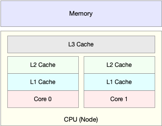
就像上面这张图显示的，CPU 缓存的速度介于 CPU 和内存之间，缓存的是热点的内存数据。根据不断增长的热点数据，这些缓存按照大小不同分为 L1、L2、L3 等三级缓存，其中 L1 和 L2 常用在单核中， L3 则用在多核中。
从 L1 到 L3，三级缓存的大小依次增大，相应的，性能依次降低（当然比内存还是好得多）。而它们的命中率，衡量的是 CPU 缓存的复用情况，命中率越高，则表示性能越好。
这些指标都很有用，需要我们熟练掌握，所以我总结成了一张图，帮你分类和记忆。你可以保存打印下来，随时查看复习，也可以当成 CPU 性能分析的“指标筛选”清单。
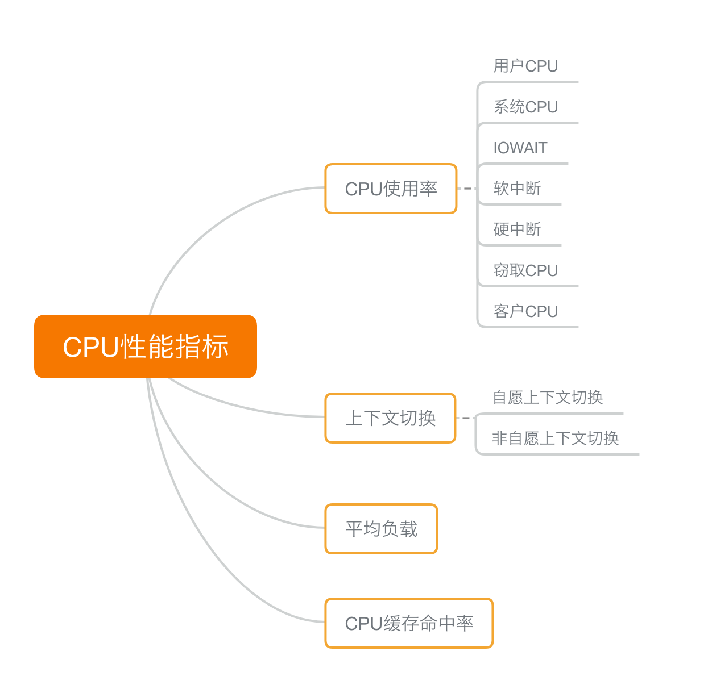
性能工具
掌握了 CPU 的性能指标，我们还需要知道，怎样去获取这些指标，也就是工具的使用。
你还记得前面案例都用了哪些工具吗？这里我们也一起回顾一下 CPU 性能工具。
首先，平均负载的案例。我们先用 uptime， 查看了系统的平均负载；而在平均负载升高后，又用 mpstat 和 pidstat ，分别观察了每个 CPU 和每个进程 CPU 的使用情况，进而找出了导致平均负载升高的进程，也就是我们的压测工具 stress。
第二个，上下文切换的案例。我们先用 vmstat ，查看了系统的上下文切换次数和中断次数；然后通过 pidstat ，观察了进程的自愿上下文切换和非自愿上下文切换情况；最后通过 pidstat ，观察了线程的上下文切换情况，找出了上下文切换次数增多的根源，也就是我们的基准测试工具 sysbench。
第三个，进程 CPU 使用率升高的案例。我们先用 top ，查看了系统和进程的 CPU 使用情况，发现 CPU 使用率升高的进程是 php-fpm；再用 perf top ，观察 php-fpm 的调用链，最终找出 CPU 升高的根源，也就是库函数 sqrt() 。
第四个，系统的 CPU 使用率升高的案例。我们先用 top 观察到了系统 CPU 升高，但通过 top 和 pidstat ，却找不出高 CPU 使用率的进程。于是，我们重新审视 top 的输出，又从 CPU 使用率不高但处于 Running 状态的进程入手，找出了可疑之处，最终通过 perf record 和 perf report ，发现原来是短时进程在捣鬼。
另外，对于短时进程，我还介绍了一个专门的工具 execsnoop，它可以实时监控进程调用的外部命令。
第五个，不可中断进程和僵尸进程的案例。我们先用 top 观察到了 iowait 升高的问题，并发现了大量的不可中断进程和僵尸进程；接着我们用 dstat 发现是这是由磁盘读导致的，于是又通过 pidstat 找出了相关的进程。但我们用 strace 查看进程系统调用却失败了，最终还是用 perf 分析进程调用链，才发现根源在于磁盘直接 I/O 。
最后一个，软中断的案例。我们通过 top 观察到，系统的软中断 CPU 使用率升高；接着查看 /proc/softirqs， 找到了几种变化速率较快的软中断；然后通过 sar 命令，发现是网络小包的问题，最后再用 tcpdump ，找出网络帧的类型和来源，确定是一个 SYN FLOOD 攻击导致的。
到这里，估计你已经晕了吧，原来短短几个案例，我们已经用过十几种 CPU 性能工具了，而且每种工具的适用场景还不同呢！这么多的工具要怎么区分呢？在实际的性能分析中，又该怎么选择呢？
我的经验是，从两个不同的维度来理解它们，做到活学活用。
活学活用，把性能指标和性能工具联系起来
第一个维度，从 CPU 的性能指标出发。也就是说，当你要查看某个性能指标时，要清楚知道哪些工具可以做到。
根据不同的性能指标，对提供指标的性能工具进行分类和理解。这样，在实际排查性能问题时，你就可以清楚知道，什么工具可以提供你想要的指标，而不是毫无根据地挨个尝试，撞运气。
其实，我在前面的案例中已经多次用到了这个思路。比如用 top 发现了软中断 CPU 使用率高后，下一步自然就想知道具体的软中断类型。那在哪里可以观察各类软中断的运行情况呢？当然是 proc 文件系统中的 /proc/softirqs 这个文件。
紧接着，比如说，我们找到的软中断类型是网络接收，那就要继续往网络接收方向思考。系统的网络接收情况是什么样的？什么工具可以查到网络接收情况呢？在我们案例中，用的正是 dstat。
虽然你不需要把所有工具背下来，但如果能理解每个指标对应的工具的特性，一定更高效、更灵活地使用。这里，我把提供 CPU 性能指标的工具做成了一个表格，方便你梳理关系和理解记忆，当然，你也可以当成一个“指标工具”指南来使用。
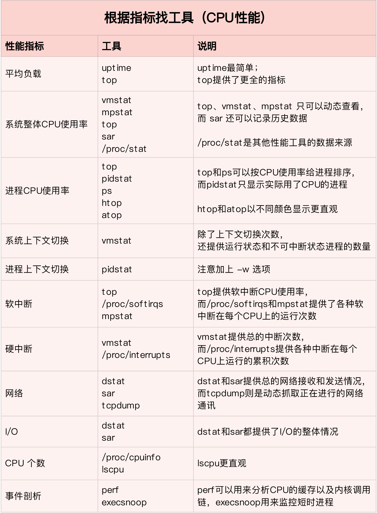
下面，我们再来看第二个维度。
第二个维度，从工具出发。也就是当你已经安装了某个工具后，要知道这个工具能提供哪些指标。
这在实际环境特别是生产环境中也是非常重要的，因为很多情况下，你并没有权限安装新的工具包，只能最大化地利用好系统中已经安装好的工具，这就需要你对它们有足够的了解。
具体到每个工具的使用方法，一般都支持丰富的配置选项。不过不用担心，这些配置选项并不用背下来。你只要知道有哪些工具、以及这些工具的基本功能是什么就够了。真正要用到的时候， 通过 man 命令，查它们的使用手册就可以了。
同样的，我也将这些常用工具汇总成了一个表格，方便你区分和理解，自然，你也可以当成一个“工具指标”指南使用，需要时查表即可。

如何迅速分析 CPU 的性能瓶颈
我相信到这一步，你对 CPU 的性能指标已经非常熟悉，也清楚每种性能指标分别能用什么工具来获取。
那是不是说，每次碰到 CPU 的性能问题，你都要把上面这些工具全跑一遍，然后再把所有的 CPU 性能指标全分析一遍呢？
你估计觉得这种简单查找的方式，就像是在傻找。不过，别笑话，因为最早的时候我就是这么做的。把所有的指标都查出来再统一分析，当然是可以的，也很可能找到系统的潜在瓶颈。
但是这种方法的效率真的太低了！耗时耗力不说，在庞大的指标体系面前，你一不小心可能就忽略了某个细节，导致白干一场。我就吃过好多次这样的苦。
所以，在实际生产环境中，我们通常都希望尽可能快地定位系统的瓶颈，然后尽可能快地优化性能，也就是要又快又准地解决性能问题。
那有没有什么方法，可以又快又准找出系统瓶颈呢？答案是肯定的。
虽然 CPU 的性能指标比较多，但要知道，既然都是描述系统的 CPU 性能，它们就不会是完全孤立的，很多指标间都有一定的关联。想弄清楚性能指标的关联性，就要通晓每种性能指标的工作原理。这也是为什么我在介绍每个性能指标时，都要穿插讲解相关的系统原理，希望你能记住这一点。
举个例子，用户 CPU 使用率高，我们应该去排查进程的用户态而不是内核态。因为用户 CPU 使用率反映的就是用户态的 CPU 使用情况，而内核态的 CPU 使用情况只会反映到系统 CPU 使用率上。
你看，有这样的基本认识，我们就可以缩小排查的范围，省时省力。
所以，为了缩小排查范围，我通常会先运行几个支持指标较多的工具，如 top、vmstat 和 pidstat 。为什么是这三个工具呢？仔细看看下面这张图，你就清楚了。
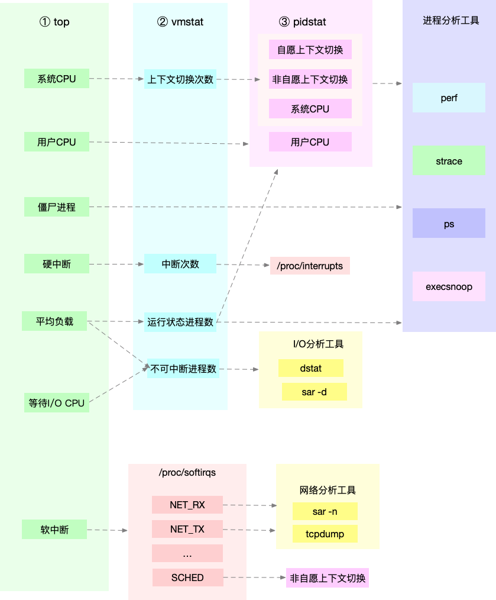
这张图里，我列出了 top、vmstat 和 pidstat 分别提供的重要的 CPU 指标，并用虚线表示关联关系，对应出了性能分析下一步的方向。
通过这张图你可以发现，这三个命令，几乎包含了所有重要的 CPU 性能指标，比如：
- 从 top 的输出可以得到各种 CPU 使用率以及僵尸进程和平均负载等信息。
- 从 vmstat 的输出可以得到上下文切换次数、中断次数、运行状态和不可中断状态的进程数。
- 从 pidstat 的输出可以得到进程的用户 CPU 使用率、系统 CPU 使用率、以及自愿上下文切换和非自愿上下文切换情况。
另外，这三个工具输出的很多指标是相互关联的，所以，我也用虚线表示了它们的关联关系，举几个例子你可能会更容易理解。
第一个例子，pidstat 输出的进程用户 CPU 使用率升高，会导致 top 输出的用户 CPU 使用率升高。所以，当发现 top 输出的用户 CPU 使用率有问题时，可以跟 pidstat 的输出做对比，观察是否是某个进程导致的问题。
而找出导致性能问题的进程后，就要用进程分析工具来分析进程的行为，比如使用 strace 分析系统调用情况，以及使用 perf 分析调用链中各级函数的执行情况。
第二个例子，top 输出的平均负载升高，可以跟 vmstat 输出的运行状态和不可中断状态的进程数做对比，观察是哪种进程导致的负载升高。
- 如果是不可中断进程数增多了，那么就需要做 I/O 的分析，也就是用 dstat 或 sar 等工具，进一步分析 I/O 的情况。
- 如果是运行状态进程数增多了，那就需要回到 top 和 pidstat，找出这些处于运行状态的到底是什么进程，然后再用进程分析工具，做进一步分析。
最后一个例子，当发现 top 输出的软中断 CPU 使用率升高时，可以查看 /proc/softirqs 文件中各种类型软中断的变化情况，确定到底是哪种软中断出的问题。比如，发现是网络接收中断导致的问题，那就可以继续用网络分析工具 sar 和 tcpdump 来分析。
注意，我在这个图中只列出了最核心的几个性能工具，并没有列出所有。这么做，一方面是不想用大量的工具列表吓到你。在学习之初就接触所有或核心或小众的工具，不见得是好事。另一方面，是希望你能先把重心放在核心工具上，毕竟熟练掌握它们，就可以解决大多数问题。
所以，你可以保存下这张图，作为 CPU 性能分析的思路图谱。从最核心的这几个工具开始，通过我提供的那些案例，自己在真实环境里实践，拿下它们。
小结
今天，我带你回忆了常见的 CPU 性能指标，梳理了常见的 CPU 性能观测工具，最后还总结了快速分析 CPU 性能问题的思路。
虽然 CPU 的性能指标很多，相应的性能分析工具也很多，但熟悉了各种指标的含义之后，你就会发现它们其实都有一定的关联。顺着这个思路，掌握常用的分析套路并不难。
思考
由于篇幅限制，我在这里只举了几个最常见的案例，帮你理解 CPU 性能问题的原理和分析方法。你肯定也碰到过很多跟这些案例不同的 CPU 性能问题吧。我想请你一起来聊聊，你碰到过什么不一样的 CPU 性能问题呢？你又是怎么分析出它的瓶颈的呢？
欢迎在留言区和我讨论，也欢迎你把这篇文章分享给你的同事、朋友。我们一起在实战中演练，在交流中进步。
12 套路篇：CPU 性能优化的几个思路
你好，我是倪朋飞。
上一节我们一起回顾了常见的 CPU 性能指标，梳理了核心的 CPU 性能观测工具，最后还总结了快速分析 CPU 性能问题的思路。虽然 CPU 的性能指标很多，相应的性能分析工具也很多，但理解了各种指标的含义后，你就会发现它们其实都有一定的关联。
顺着这些关系往下理解，你就会发现，掌握这些常用的瓶颈分析套路，其实并不难。
在找到 CPU 的性能瓶颈后，下一步要做的就是优化了，也就是找出充分利用 CPU 的方法，以便完成更多的工作。
今天，我就来说说，优化 CPU 性能问题的思路和注意事项。
性能优化方法论
在我们历经千辛万苦，通过各种性能分析方法，终于找到引发性能问题的瓶颈后，是不是立刻就要开始优化了呢？别急，动手之前，你可以先看看下面这三个问题。
- 首先，既然要做性能优化，那要怎么判断它是不是有效呢？特别是优化后，到底能提升多少性能呢？
- 第二，性能问题通常不是独立的，如果有多个性能问题同时发生，你应该先优化哪一个呢？
- 第三，提升性能的方法并不是唯一的，当有多种方法可以选择时，你会选用哪一种呢？是不是总选那个最大程度提升性能的方法就行了呢？
如果你可以轻松回答这三个问题，那么二话不说就可以开始优化。
比如，在前面的不可中断进程案例中，通过性能分析，我们发现是因为一个进程的直接 I/O，导致了 iowait 高达 90%。那是不是用“直接 I/O 换成缓存 I/O”的方法，就可以立即优化了呢？
按照上面讲的，你可以先自己思考下那三点。如果不能确定，我们一起来看看。
- 第一个问题，直接 I/O 换成缓存 I/O，可以把 iowait 从 90% 降到接近 0，性能提升很明显。
- 第二个问题，我们没有发现其他性能问题，直接 I/O 是唯一的性能瓶颈，所以不用挑选优化对象。
- 第三个问题，缓存 I/O 是我们目前用到的最简单的优化方法，而且这样优化并不会影响应用的功能。
好的，这三个问题很容易就能回答，所以立即优化没有任何问题。
但是，很多现实情况，并不像我举的例子那么简单。性能评估可能有多重指标，性能问题可能会多个同时发生，而且，优化某一个指标的性能，可能又导致其他指标性能的下降。
那么，面对这种复杂的情况，我们该怎么办呢？
接下来，我们就来深入分析这三个问题。
怎么评估性能优化的效果？
首先，来看第一个问题，怎么评估性能优化的效果。
我们解决性能问题的目的，自然是想得到一个性能提升的效果。为了评估这个效果，我们需要对系统的性能指标进行量化，并且要分别测试出优化前、后的性能指标，用前后指标的变化来对比呈现效果。我把这个方法叫做性能评估“三步走”。
- 确定性能的量化指标。
- 测试优化前的性能指标。
- 测试优化后的性能指标。
先看第一步，性能的量化指标有很多，比如 CPU 使用率、应用程序的吞吐量、客户端请求的延迟等，都可以评估性能。那我们应该选择什么指标来评估呢？
我的建议是不要局限在单一维度的指标上，你至少要从应用程序和系统资源这两个维度，分别选择不同的指标。比如，以 Web 应用为例：
- 应用程序的维度，我们可以用吞吐量和请求延迟来评估应用程序的性能。
- 系统资源的维度，我们可以用 CPU 使用率来评估系统的 CPU 使用情况。
之所以从这两个不同维度选择指标，主要是因为应用程序和系统资源这两者间相辅相成的关系。
- 好的应用程序是性能优化的最终目的和结果，系统优化总是为应用程序服务的。所以，必须要使用应用程序的指标，来评估性能优化的整体效果。
- 系统资源的使用情况是影响应用程序性能的根源。所以，需要用系统资源的指标，来观察和分析瓶颈的来源。
至于接下来的两个步骤，主要是为了对比优化前后的性能，更直观地呈现效果。如果你的第一步，是从两个不同维度选择了多个指标，那么在性能测试时，你就需要获得这些指标的具体数值。
还是以刚刚的 Web 应用为例，对应上面提到的几个指标，我们可以选择 ab 等工具，测试 Web 应用的并发请求数和响应延迟。而测试的同时，还可以用 vmstat、pidstat 等性能工具，观察系统和进程的 CPU 使用率。这样，我们就同时获得了应用程序和系统资源这两个维度的指标数值。
不过，在进行性能测试时，有两个特别重要的地方你需要注意下。
第一，要避免性能测试工具干扰应用程序的性能。通常，对 Web 应用来说，性能测试工具跟目标应用程序要在不同的机器上运行。
比如，在之前的 Nginx 案例中，我每次都会强调要用两台虚拟机，其中一台运行 Nginx 服务，而另一台运行模拟客户端的工具，就是为了避免这个影响。
第二，避免外部环境的变化影响性能指标的评估。这要求优化前、后的应用程序，都运行在相同配置的机器上，并且它们的外部依赖也要完全一致。
比如还是拿 Nginx 来说，就可以运行在同一台机器上，并用相同参数的客户端工具来进行性能测试。
多个性能问题同时存在，要怎么选择？
再来看第二个问题，开篇词里我们就说过，系统性能总是牵一发而动全身，所以性能问题通常也不是独立存在的。那当多个性能问题同时发生的时候，应该先去优化哪一个呢？
在性能测试的领域，流传很广的一个说法是“二八原则”，也就是说 80% 的问题都是由 20% 的代码导致的。只要找出这 20% 的位置，你就可以优化 80% 的性能。所以，我想表达的是，并不是所有的性能问题都值得优化。
我的建议是，动手优化之前先动脑，先把所有这些性能问题给分析一遍，找出最重要的、可以最大程度提升性能的问题，从它开始优化。这样的好处是，不仅性能提升的收益最大，而且很可能其他问题都不用优化，就已经满足了性能要求。
那关键就在于，怎么判断出哪个性能问题最重要。这其实还是我们性能分析要解决的核心问题，只不过这里要分析的对象，从原来的一个问题，变成了多个问题，思路其实还是一样的。
所以，你依然可以用我前面讲过的方法挨个分析，分别找出它们的瓶颈。分析完所有问题后，再按照因果等关系，排除掉有因果关联的性能问题。最后，再对剩下的性能问题进行优化。
如果剩下的问题还是好几个，你就得分别进行性能测试了。比较不同的优化效果后，选择能明显提升性能的那个问题进行修复。这个过程通常会花费较多的时间，这里，我推荐两个可以简化这个过程的方法。
第一，如果发现是系统资源达到了瓶颈，比如 CPU 使用率达到了 100%，那么首先优化的一定是系统资源使用问题。完成系统资源瓶颈的优化后，我们才要考虑其他问题。
第二，针对不同类型的指标，首先去优化那些由瓶颈导致的，性能指标变化幅度最大的问题。比如产生瓶颈后，用户 CPU 使用率升高了 10%，而系统 CPU 使用率却升高了 50%，这个时候就应该首先优化系统 CPU 的使用。
有多种优化方法时，要如何选择?
接着来看第三个问题，当多种方法都可用时，应该选择哪一种呢？是不是最大提升性能的方法，一定最好呢？
一般情况下，我们当然想选能最大提升性能的方法，这其实也是性能优化的目标。
但要注意，现实情况要考虑的因素却没那么简单。最直观来说，性能优化并非没有成本。性能优化通常会带来复杂度的提升，降低程序的可维护性，还可能在优化一个指标时，引发其他指标的异常。也就是说，很可能你优化了一个指标，另一个指标的性能却变差了。
一个很典型的例子是我将在网络部分讲到的 DPDK（Data Plane Development Kit）。DPDK 是一种优化网络处理速度的方法，它通过绕开内核网络协议栈的方法，提升网络的处理能力。
不过它有一个很典型的要求，就是要独占一个 CPU 以及一定数量的内存大页，并且总是以 100% 的 CPU 使用率运行。所以，如果你的 CPU 核数很少，就有点得不偿失了。
所以，在考虑选哪个性能优化方法时，你要综合多方面的因素。切记，不要想着“一步登天”，试图一次性解决所有问题；也不要只会“拿来主义”，把其他应用的优化方法原封不动拿来用，却不经过任何思考和分析。
CPU 优化
清楚了性能优化最基本的三个问题后，我们接下来从应用程序和系统的角度，分别来看看如何才能降低 CPU 使用率，提高 CPU 的并行处理能力。
应用程序优化
首先，从应用程序的角度来说，降低 CPU 使用率的最好方法当然是，排除所有不必要的工作，只保留最核心的逻辑。比如减少循环的层次、减少递归、减少动态内存分配等等。
除此之外，应用程序的性能优化也包括很多种方法，我在这里列出了最常见的几种，你可以记下来。
- 编译器优化：很多编译器都会提供优化选项，适当开启它们，在编译阶段你就可以获得编译器的帮助，来提升性能。比如， gcc 就提供了优化选项 -O2，开启后会自动对应用程序的代码进行优化。
- 算法优化：使用复杂度更低的算法，可以显著加快处理速度。比如，在数据比较大的情况下，可以用 O(nlogn) 的排序算法（如快排、归并排序等），代替 O(n^2) 的排序算法（如冒泡、插入排序等）。
- 异步处理：使用异步处理，可以避免程序因为等待某个资源而一直阻塞，从而提升程序的并发处理能力。比如，把轮询替换为事件通知，就可以避免轮询耗费 CPU 的问题。
- 多线程代替多进程：前面讲过，相对于进程的上下文切换，线程的上下文切换并不切换进程地址空间，因此可以降低上下文切换的成本。
- 善用缓存：经常访问的数据或者计算过程中的步骤，可以放到内存中缓存起来，这样在下次用时就能直接从内存中获取，加快程序的处理速度。
系统优化
从系统的角度来说，优化 CPU 的运行，一方面要充分利用 CPU 缓存的本地性，加速缓存访问；另一方面，就是要控制进程的 CPU 使用情况，减少进程间的相互影响。
具体来说，系统层面的 CPU 优化方法也有不少，这里我同样列举了最常见的一些方法，方便你记忆和使用。
- CPU 绑定：把进程绑定到一个或者多个 CPU 上，可以提高 CPU 缓存的命中率，减少跨 CPU 调度带来的上下文切换问题。
- CPU 独占：跟 CPU 绑定类似，进一步将 CPU 分组，并通过 CPU 亲和性机制为其分配进程。这样，这些 CPU 就由指定的进程独占，换句话说，不允许其他进程再来使用这些 CPU。
- 优先级调整：使用 nice 调整进程的优先级，正值调低优先级，负值调高优先级。优先级的数值含义前面我们提到过，忘了的话及时复习一下。在这里，适当降低非核心应用的优先级，增高核心应用的优先级，可以确保核心应用得到优先处理。
- 为进程设置资源限制：使用 Linux cgroups 来设置进程的 CPU 使用上限，可以防止由于某个应用自身的问题，而耗尽系统资源。
- NUMA（Non-Uniform Memory Access）优化：支持 NUMA 的处理器会被划分为多个 node，每个 node 都有自己的本地内存空间。NUMA 优化，其实就是让 CPU 尽可能只访问本地内存。
- 中断负载均衡：无论是软中断还是硬中断，它们的中断处理程序都可能会耗费大量的 CPU。开启 irqbalance 服务或者配置 smp_affinity，就可以把中断处理过程自动负载均衡到多个 CPU 上。
千万避免过早优化
掌握上面这些优化方法后，我估计，很多人即使没发现性能瓶颈，也会忍不住把各种各样的优化方法带到实际的开发中。
不过，我想你一定听说过高德纳的这句名言， “过早优化是万恶之源”，我也非常赞同这一点，过早优化不可取。
因为，一方面，优化会带来复杂性的提升，降低可维护性；另一方面，需求不是一成不变的。针对当前情况进行的优化，很可能并不适应快速变化的新需求。这样，在新需求出现时，这些复杂的优化，反而可能阻碍新功能的开发。
所以，性能优化最好是逐步完善，动态进行，不追求一步到位，而要首先保证能满足当前的性能要求。当发现性能不满足要求或者出现性能瓶颈时，再根据性能评估的结果，选择最重要的性能问题进行优化。
总结
今天，我带你梳理了常见的 CPU 性能优化思路和优化方法。发现性能问题后，不要急于动手优化，而要先找出最重要的、可以获得最大性能提升的问题，然后再从应用程序和系统两个方面入手优化。
这样不仅可以获得最大的性能提升，而且很可能不需要优化其他问题，就已经满足了性能要求。
但是记住，一定要忍住“把 CPU 性能优化到极致”的冲动，因为 CPU 并不是唯一的性能因素。在后续的文章中，我还会介绍更多的性能问题，比如内存、网络、I/O 甚至是架构设计的问题。
如果不做全方位的分析和测试，只是单纯地把某个指标提升到极致，并不一定能带来整体的收益。
思考
由于篇幅的限制，我在这里只列举了几个最常见的 CPU 性能优化方法。除了这些，还有很多其他应用程序，或者系统资源角度的性能优化方法。我想请你一起来聊聊，你还知道哪些其他优化方法呢？
欢迎在留言区跟我讨论，也欢迎你把这篇文章分享给你的同事、朋友。我们一起在实战中演练，在交流中进步。
13 Linux 性能优化答疑（一）
你好，我是倪朋飞。
专栏更新至今，四大基础模块之一的 CPU 性能篇，我们就已经学完了。很开心过半数同学还没有掉队，仍然在学习、积极实践操作，并且热情地留下了大量的留言。
这些留言中，我非常高兴地看到，很多同学已经做到了活学活用，用学过的案例思路，分析出了线上应用的性能瓶颈，解决了实际工作中的性能问题。 还有同学能够反复推敲思考，指出文章中某些不当或不严谨的叙述，我也十分感谢你，同时很乐意和你探讨。
此外，很多留言提出的问题也很有价值，大部分我都已经在 app 里回复，一些手机上不方便回复的或者很有价值的典型问题，我专门摘了出来，作为今天的答疑内容，集中回复。另一方面，也是为了保证所有人都能不漏掉任何一个重点。
今天是性能优化答疑的第一期。为了便于你学习理解，它们并不是严格按照文章顺序排列的。每个问题，我都附上了留言区提问的截屏。如果你需要回顾内容原文，可以扫描每个问题右下方的二维码查看。
问题 1：性能工具版本太低，导致指标不全
这是使用 CentOS 的同学普遍碰到的问题。在文章中，我的 pidstat 输出里有一个 %wait 指标，代表进程等待 CPU 的时间百分比，这是 systat 11.5.5 版本才引入的新指标，旧版本没有这一项。而 CentOS 软件库里的 sysstat 版本刚好比这个低，所以没有这项指标。
不过，你也不用担心。前面我就强调过，工具只是查找分析的手段，指标才是我们重点分析的对象。如果你的 pidstat 里没有显示，自然还有其他手段能找到这个指标。
比如说，在讲解系统原理和性能工具时，我一般会介绍一些 proc 文件系统的知识，教你看懂 proc 文件系统提供的各项指标。之所以这么做，一方面，当然是为了让你更直观地理解系统的工作原理；另一方面，其实是想给你展示，性能工具上能看到的各项性能指标的原始数据来源。
这样，在实际生产环境中，即使你很可能需要运行老版本的操作系统，还没有权限安装新的软件包，你也可以查看 proc 文件系统，获取自己想要的指标。
但是，性能分析的学习，我还是建议你要用最新的性能工具来学。新工具有更全面的指标，让你更容易上手分析。这个绝对的优势，可以让你更直观地得到想要的数据，也不容易让你打退堂鼓。
当然，初学时，你最好试着去理解性能工具的原理，或者熟悉了使用方法后，再回过头重新学习原理。这样，即使是在无法安装新工具的环境中，你仍然可以从 proc 文件系统或者其他地方，获得同样的指标，进行有效的分析。
问题 2：使用 stress 命令，无法模拟 iowait 高的场景
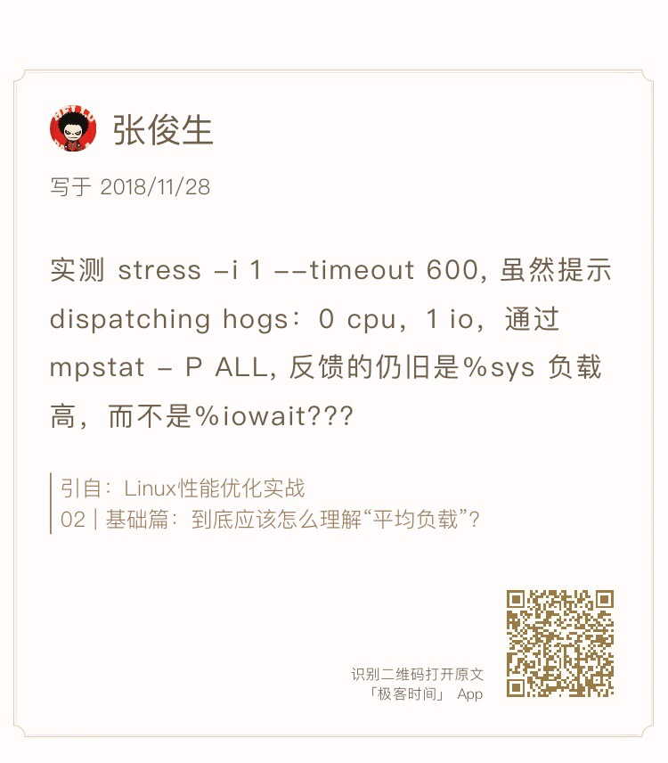
使用 stress 无法模拟 iowait 升高，但是却看到了 sys 升高。这是因为案例中 的 stress -i 参数，它表示通过系统调用 sync() 来模拟 I/O 的问题，但这种方法实际上并不可靠。
因为 sync() 的本意是刷新内存缓冲区的数据到磁盘中，以确保同步。如果缓冲区内本来就没多少数据，那读写到磁盘中的数据也就不多，也就没法产生 I/O 压力。
这一点，在使用 SSD 磁盘的环境中尤为明显，很可能你的 iowait 总是 0，却单纯因为大量的系统调用，导致了系统 CPU 使用率 sys 升高。
这种情况，我在留言中也回复过，推荐使用 stress-ng 来代替 stress。担心你没有看到留言，所以这里我再强调一遍。
你可以运行下面的命令，来模拟 iowait 的问题。
# -i 的含义还是调用 sync，而—hdd 则表示读写临时文件
$ stress-ng -i 1 --hdd 1 --timeout 600
问题 3：无法模拟出 RES 中断的问题
这个问题是说，即使运行了大量的线程，也无法模拟出重调度中断 RES 升高的问题。
其实我在 CPU 上下文切换的案例中已经提到，重调度中断是调度器用来分散任务到不同 CPU 的机制，也就是可以唤醒空闲状态的 CPU ，来调度新任务运行，而这通常借助处理器间中断（Inter-Processor Interrupts，IPI）来实现。
所以，这个中断在单核（只有一个逻辑 CPU）的机器上当然就没有意义了，因为压根儿就不会发生重调度的情况。
不过，正如留言所说，上下文切换的问题依然存在，所以你会看到， cs（context switch）从几百增加到十几万，同时 sysbench 线程的自愿上下文切换和非自愿上下文切换也都会大幅上升，特别是非自愿上下文切换，会上升到十几万。根据非自愿上下文的含义，我们都知道，这是过多的线程在争抢 CPU。
其实这个结论也可以从另一个角度获得。比如，你可以在 pidstat 的选项中，加入 -u 和 -t 参数，输出线程的 CPU 使用情况，你会看到下面的界面：
$ pidstat -u -t 1
14:24:03 UID TGID TID %usr %system %guest %wait %CPU CPU Command
14:24:04 0 - 2472 0.99 8.91 0.00 77.23 9.90 0 |__sysbench
14:24:04 0 - 2473 0.99 8.91 0.00 68.32 9.90 0 |__sysbench
14:24:04 0 - 2474 0.99 7.92 0.00 75.25 8.91 0 |__sysbench
14:24:04 0 - 2475 2.97 6.93 0.00 70.30 9.90 0 |__sysbench
14:24:04 0 - 2476 2.97 6.93 0.00 68.32 9.90 0 |__sysbench
...
从这个 pidstat 的输出界面，你可以发现，每个 stress 线程的 %wait 高达 70%，而 CPU 使用率只有不到 10%。换句话说， stress 线程大部分时间都消耗在了等待 CPU 上，这也表明，确实是过多的线程在争抢 CPU。
在这里顺便提一下，留言中很常见的一个错误。有些同学会拿 pidstat 中的 %wait 跟 top 中的 iowait% （缩写为 wa）对比，其实这是没有意义的，因为它们是完全不相关的两个指标。
- pidstat 中， %wait 表示进程等待 CPU 的时间百分比。
- top 中 ，iowait% 则表示等待 I/O 的 CPU 时间百分比。
回忆一下我们学过的进程状态，你应该记得，等待 CPU 的进程已经在 CPU 的就绪队列中，处于运行状态；而等待 I/O 的进程则处于不可中断状态。
另外，不同版本的 sysbench 运行参数也不是完全一样的。比如，在案例 Ubuntu 18.04 中，运行 sysbench 的格式为：
$ sysbench --threads=10 --max-time=300 threads run
而在 Ubuntu 16.04 中，运行格式则为（感谢 Haku 留言分享的执行命令）：
$ sysbench --num-threads=10 --max-time=300 --test=threads run
问题 4：无法模拟出 I/O 性能瓶颈，以及 I/O 压力过大的问题
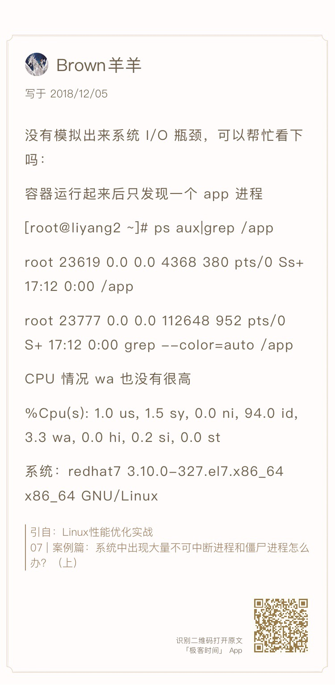
这个问题可以看成是上一个问题的延伸，只是把 stress 命令换成了一个在容器中运行的 app 应用。
事实上，在 I/O 瓶颈案例中，除了上面这个模拟不成功的留言，还有更多留言的内容刚好相反，说的是案例 I/O 压力过大，导致自己的机器出各种问题，甚至连系统都没响应了。
之所以这样，其实还是因为每个人的机器配置不同，既包括了 CPU 和内存配置的不同，更是因为磁盘的巨大差异。比如，机械磁盘（HDD）、低端固态磁盘（SSD）与高端固态磁盘相比，性能差异可能达到数倍到数十倍。
其实，我自己所用的案例机器也只是低端的 SSD，比机械磁盘稍微好一些，但跟高端固态磁盘还是比不了的。所以，相同操作下，我的机器上刚好出现 I/O 瓶颈，但换成一台使用机械磁盘的机器，可能磁盘 I/O 就被压死了（表现为使用率长时间 100%），而换上好一些的 SSD 磁盘，可能又无法产生足够的 I/O 压力。
另外，由于我在案例中只查找了 /dev/xvd 和 /dev/sd 前缀的磁盘，而没有考虑到使用其他前缀磁盘（比如 /dev/nvme）的同学。如果你正好用的是其他前缀，你可能会碰到跟 Vicky 类似的问题，也就是 app 启动后又很快退出，变成 exited 状态。
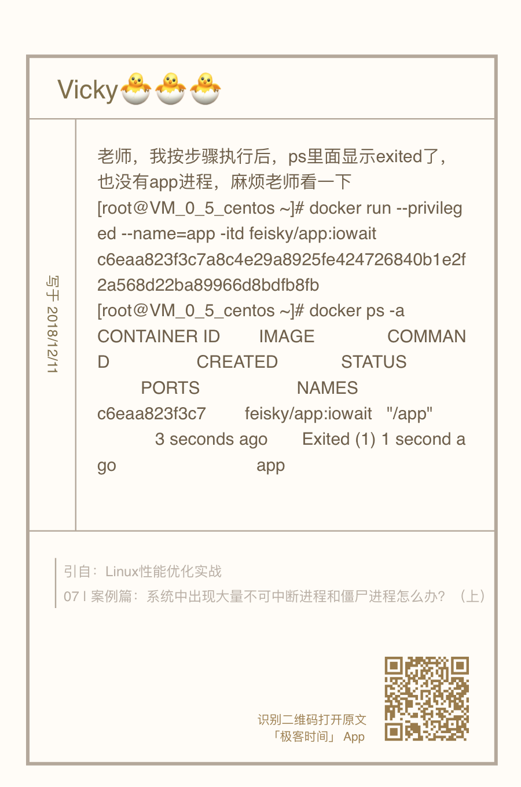
在这里，berryfl 同学提供了一个不错的建议：可以在案例中增加一个参数指定块设备，这样有需要的同学就不用自己编译和打包案例应用了。
所以，在最新的案例中，我为 app 应用增加了三个选项。
- -d 设置要读取的磁盘，默认前缀为
/dev/sd或者/dev/xvd的磁盘。 - -s 设置每次读取的数据量大小，单位为字节，默认为 67108864（也就是 64MB）。
- -c 设置每个子进程读取的次数，默认为 20 次，也就是说，读取 20*64MB 数据后，子进程退出。
你可以点击 Github 查看它的源码，使用方法我写在了这里：
$ docker run --privileged --name=app -itd feisky/app:iowait /app -d /dev/sdb -s 67108864 -c 20
案例运行后，你可以执行 docker logs 查看它的日志。正常情况下，你可以看到下面的输出：
$ docker logs app
Reading data from disk /dev/sdb with buffer size 67108864 and count 20
问题 5：性能工具（如 vmstat）输出中，第一行数据跟其他行差别巨大
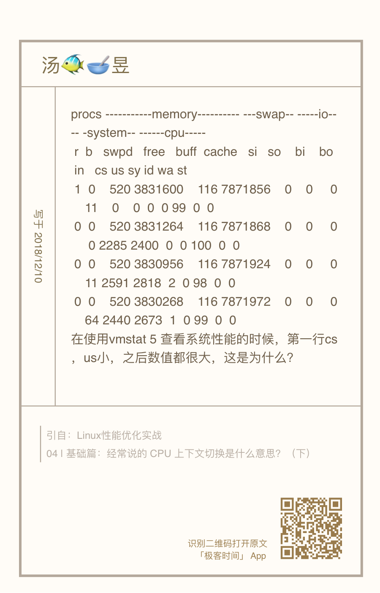
这个问题主要是说，在执行 vmstat 时，第一行数据跟其他行相比较，数值相差特别大。我相信不少同学都注意到了这个现象，这里我简单解释一下。
首先还是要记住，我总强调的那句话，在碰到直观上解释不了的现象时，要第一时间去查命令手册。
比如，运行 man vmstat 命令，你可以在手册中发现下面这句话：
The first report produced gives averages since the last reboot. Additional reports give information on a sam‐
pling period of length delay. The process and memory reports are instantaneous in either case.
也就是说，第一行数据是系统启动以来的平均值，其他行才是你在运行 vmstat 命令时，设置的间隔时间的平均值。另外，进程和内存的报告内容都是即时数值。
你看，这并不是什么不得了的事故，但如果我们不清楚这一点，很可能卡住我们的思维，阻止我们进一步的分析。这里我也不得不提一下，文档的重要作用。
授之以鱼，不如授之以渔。我们专栏的学习核心，一定是教会你性能分析的原理和思路，性能工具只是我们的路径和手段。所以，在提到各种性能工具时，我并没有详细解释每个工具的各种命令行选项的作用，一方面是因为你很容易通过文档查到这些，另一方面就是不同版本、不同系统中，个别选项的含义可能并不相同。
所以，不管因为哪个因素，自己 man 一下，一定是最快速并且最准确的方式。特别是，当你发现某些工具的输出不符合常识时，一定记住，第一时间查文档弄明白。实在读不懂文档的话，再上网去搜，或者在专栏里向我提问。
学习是一个“从薄到厚再变薄”的过程，我们从细节知识入手开始学习，积累到一定程度，需要整理成一个体系来记忆，这其中还要不断地对这个体系进行细节修补。有疑问、有反思才可以达到最佳的学习效果。
最后，欢迎继续在留言区写下你的疑问，我会持续不断地解答。我的目的仍然不变，希望可以和你一起，把文章的知识变成你的能力，我们不仅仅在实战中演练，也要在交流中进步。
14 Linux 性能优化答疑（二）
你好，我是倪朋飞。
今天是我们第二期答疑，这期答疑的主题是我们多次用到的 perf 工具，内容主要包括前面案例中， perf 使用方法的各种疑问。
perf 在性能分析中非常有效，是我们每个人都需要掌握的核心工具。perf 的使用方法也很丰富，不过不用担心，目前你只要会用 perf record 和 perf report 就够了。而对于 perf 显示的调用栈中的某些内核符号，如果你不理解也没有关系，可以暂时跳过，并不影响我们的分析。
同样的，为了便于你学习理解，它们并不是严格按照文章顺序排列的，如果你需要回顾内容原文，可以扫描每个问题右下方的二维码查看。
问题 1： 使用 perf 工具时，看到的是 16 进制地址而不是函数名
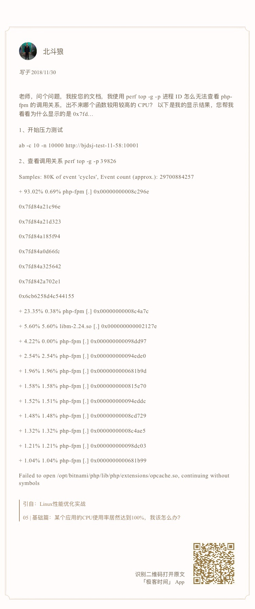
这也是留言比较多的一个问题，在 CentOS 系统中，使用 perf 工具看不到函数名，只能看到一些 16 进制格式的函数地址。
其实，只要你观察一下 perf 界面最下面的那一行，就会发现一个警告信息：
Failed to open /opt/bitnami/php/lib/php/extensions/opcache.so, continuing without symbols
这说明，perf 找不到待分析进程依赖的库。当然，实际上这个案例中有很多依赖库都找不到，只不过，perf 工具本身只在最后一行显示警告信息，所以你只能看到这一条警告。
这个问题，其实也是在分析 Docker 容器应用时，我们经常碰到的一个问题，因为容器应用依赖的库都在镜像里面。
针对这种情况，我总结了下面四个解决方法。
第一个方法，在容器外面构建相同路径的依赖库。这种方法从原理上可行，但是我并不推荐，一方面是因为找出这些依赖库比较麻烦，更重要的是，构建这些路径，会污染容器主机的环境。
第二个方法，在容器内部运行 perf。不过，这需要容器运行在特权模式下，但实际的应用程序往往只以普通容器的方式运行。所以，容器内部一般没有权限执行 perf 分析。
比方说，如果你在普通容器内部运行 perf record ，你将会看到下面这个错误提示：
$ perf_4.9 record -a -g
perf_event_open(..., PERF_FLAG_FD_CLOEXEC) failed with unexpected error 1 (Operation not permitted)
perf_event_open(..., 0) failed unexpectedly with error 1 (Operation not permitted)
当然，其实你还可以通过配置 /proc/sys/kernel/perf_event_paranoid （比如改成 -1），来允许非特权用户执行 perf 事件分析。
不过还是那句话，为了安全起见，这种方法我也不推荐。
第三个方法，指定符号路径为容器文件系统的路径。比如对于第 05 讲的应用，你可以执行下面这个命令：
$ mkdir /tmp/foo
$ PID=$(docker inspect --format {{.State.Pid}} phpfpm)
$ bindfs /proc/$PID/root /tmp/foo
$ perf report --symfs /tmp/foo
# 使用完成后不要忘记解除绑定
$ umount /tmp/foo/
不过这里要注意，bindfs 这个工具需要你额外安装。bindfs 的基本功能是实现目录绑定（类似于 mount --bind），这里需要你安装的是 1.13.10 版本（这也是它的最新发布版）。
如果你安装的是旧版本，你可以到 GitHub上面下载源码，然后编译安装。
第四个方法，在容器外面把分析纪录保存下来，再去容器里查看结果。这样，库和符号的路径也就都对了。
比如，你可以这么做。先运行 perf record -g -p < pid>，执行一会儿（比如 15 秒）后，按 Ctrl+C 停止。
然后，把生成的 perf.data 文件，拷贝到容器里面来分析：
$ docker cp perf.data phpfpm:/tmp
$ docker exec -i -t phpfpm bash
接下来，在容器的 bash 中继续运行下面的命令，安装 perf 并使用 perf report 查看报告：
$ cd /tmp/
$ apt-get update && apt-get install -y linux-tools linux-perf procps
$ perf_4.9 report
不过，这里也有两点需要你注意。
首先是 perf 工具的版本问题。在最后一步中，我们运行的工具是容器内部安装的版本 perf_4.9，而不是普通的 perf 命令。这是因为， perf 命令实际上是一个软连接，会跟内核的版本进行匹配，但镜像里安装的 perf 版本跟虚拟机的内核版本有可能并不一致。
另外，php-fpm 镜像是基于 Debian 系统的，所以安装 perf 工具的命令，跟 Ubuntu 也并不完全一样。比如， Ubuntu 上的安装方法是下面这样：
$ apt-get install -y linux-tools-common linux-tools-generic linux-tools-$(uname -r)）
而在 php-fpm 容器里，你应该执行下面的命令来安装 perf：
$ apt-get install -y linux-perf
当你按照前面这几种方法操作后，你就可以在容器内部看到 sqrt 的堆栈：
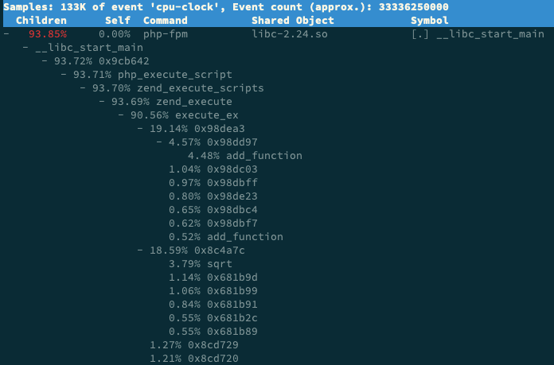
事实上，抛开我们的案例来说，即使是在非容器化的应用中，你也可能会碰到这个问题。假如你的应用程序在编译时，使用 strip 删除了 ELF 二进制文件的符号表，那么你同样也只能看到函数的地址。
现在的磁盘空间，其实已经足够大了。保留这些符号，虽然会导致编译后的文件变大，但对整个磁盘空间来说已经不是什么大问题。所以为了调试的方便，建议你还是把它们保留着。
顺便提一下，案例中各种工具的安装方法，可以算是我们专栏学习的基本功，这一点希望你能够熟悉并掌握。还是那句话，不会安装先查文档，还是不行就上网搜索或者在文章里留言提问。
在这里也要表扬一下，很多同学已经把摸索到的方法分享到了留言中。记录并分享，是一个很好的习惯。
问题 2：如何用 perf 工具分析 Java 程序
这两个问题，其实是上一个 perf 问题的延伸。 像是 Java 这种通过 JVM 来运行的应用程序，运行堆栈用的都是 JVM 内置的函数和堆栈管理。所以，从系统层面你只能看到 JVM 的函数堆栈，而不能直接得到 Java 应用程序的堆栈。
perf_events 实际上已经支持了 JIT，但还需要一个 /tmp/perf-PID.map 文件，来进行符号翻译。当然，开源项目 perf-map-agent 可以帮你生成这个符号表。
此外，为了生成全部调用栈，你还需要开启 JDK 的选项 -XX:+PreserveFramePointer。因为这里涉及到大量的 Java 知识，我就不再详细展开了。如果你的应用刚好基于 Java ，那么你可以参考 NETFLIX 的技术博客 Java in Flames （链接为 https://medium.com/netflix-techblog/java-in-flames-e763b3d32166），来查看详细的使用步骤。
说到这里，我也想强调一个问题，那就是学习性能优化时，不要一开始就把自己限定在具体的某个编程语言或者性能工具中，纠结于语言或工具的细节出不来。
掌握整体的分析思路，才是我们首先要做的。因为，性能优化的原理和思路，在任何编程语言中都是相通的。
问题 3：为什么 perf 的报告中，很多符号都不显示调用栈
perf report 是一个可视化展示 perf.data 的工具。在第 08 讲的案例中，我直接给出了最终结果，并没有详细介绍它的参数。估计很多同学的机器在运行时，都碰到了跟路过同学一样的问题，看到的是下面这个界面。
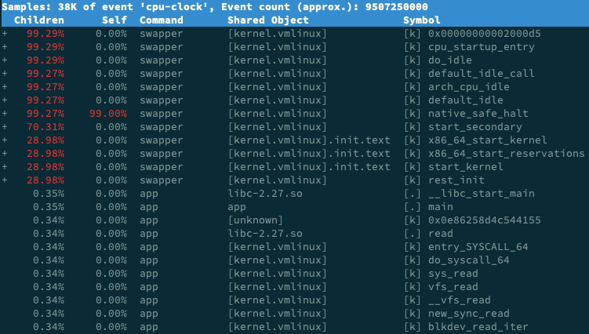
这个界面可以清楚看到，perf report 的输出中，只有 swapper 显示了调用栈，其他所有符号都不能查看堆栈情况，包括我们案例中的 app 应用。
这种情况我们以前也遇到过，当你发现性能工具的输出无法理解时，应该怎么办呢？当然还是查工具的手册。比如，你可以执行 man perf-report 命令，找到 -g 参数的说明：
-g, --call-graph=<print_type,threshold[,print_limit],order,sort_key[,branch],value>
Display call chains using type, min percent threshold, print limit, call order, sort key, optional branch and value. Note that
ordering is not fixed so any parameter can be given in an arbitrary order. One exception is the print_limit which should be
preceded by threshold.
print_type can be either:
- flat: single column, linear exposure of call chains.
- graph: use a graph tree, displaying absolute overhead rates. (default)
- fractal: like graph, but displays relative rates. Each branch of
the tree is considered as a new profiled object.
- folded: call chains are displayed in a line, separated by semicolons
- none: disable call chain display.
threshold is a percentage value which specifies a minimum percent to be
included in the output call graph. Default is 0.5 (%).
print_limit is only applied when stdio interface is used. It's to limit
number of call graph entries in a single hist entry. Note that it needs
to be given after threshold (but not necessarily consecutive).
Default is 0 (unlimited).
order can be either:
- callee: callee based call graph.
- caller: inverted caller based call graph.
Default is 'caller' when --children is used, otherwise 'callee'.
sort_key can be:
- function: compare on functions (default)
- address: compare on individual code addresses
- srcline: compare on source filename and line number
branch can be:
- branch: include last branch information in callgraph when available.
Usually more convenient to use --branch-history for this.
value can be:
- percent: diplay overhead percent (default)
- period: display event period
- count: display event count
通过这个说明可以看到，-g 选项等同于 --call-graph，它的参数是后面那些被逗号隔开的选项，意思分别是输出类型、最小阈值、输出限制、排序方法、排序关键词、分支以及值的类型。
我们可以看到，这里默认的参数是 graph,0.5,caller,function,percent，具体含义文档中都有详细讲解，这里我就不再重复了。
现在再回过头来看我们的问题，堆栈显示不全，相关的参数当然就是最小阈值 threshold。通过手册中对 threshold 的说明，我们知道，当一个事件发生比例高于这个阈值时，它的调用栈才会显示出来。
threshold 的默认值为 0.5%，也就是说，事件比例超过 0.5% 时，调用栈才能被显示。再观察我们案例应用 app 的事件比例，只有 0.34%，低于 0.5%，所以看不到 app 的调用栈就很正常了。
这种情况下，你只需要给 perf report 设置一个小于 0.34% 的阈值，就可以显示我们想看到的调用图了。比如执行下面的命令：
$ perf report -g graph,0.3
你就可以得到下面这个新的输出界面，展开 app 后，就可以看到它的调用栈了。
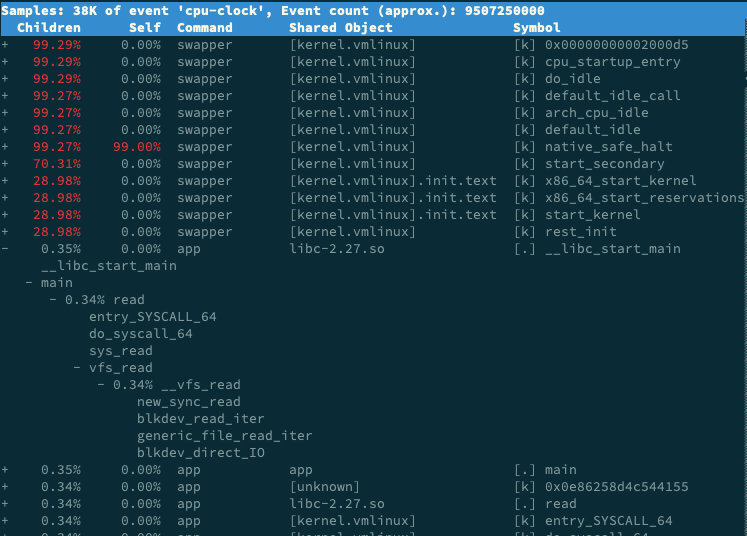
问题 4：怎么理解 perf report 报告
看到这里，我估计你也曾嘀咕过，为啥不一上来就用 perf 工具解决，还要执行那么多其他工具呢？ 这个问题其实就给出了很好的解释。
在问题 4 的 perf report 界面中，你也一定注意到了， swapper 高达 99% 的比例。直觉来说，我们应该直接观察它才对，为什么没那么做呢？
其实，当你清楚了 swapper 的原理后，就很容易理解我们为什么可以忽略它了。
看到 swapper，你可能首先想到的是 SWAP 分区。实际上， swapper 跟 SWAP 没有任何关系，它只在系统初始化时创建 init 进程，之后，它就成了一个最低优先级的空闲任务。也就是说，当 CPU 上没有其他任务运行时，就会执行 swapper 。所以，你可以称它为“空闲任务”。
回到我们的问题，在 perf report 的界面中，展开它的调用栈，你会看到， swapper 时钟事件都耗费在了 do_idle 上，也就是在执行空闲任务。
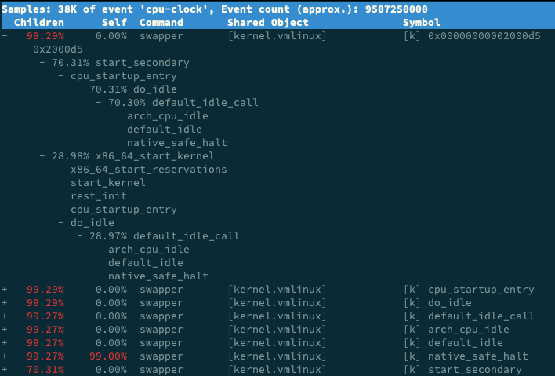
所以，分析案例时，我们直接忽略了前面这个 99% 的符号，转而分析后面只有 0.3% 的 app。其实从这里你也能理解，为什么我们一开始不先用 perf 分析。
因为在多任务系统中，次数多的事件，不一定就是性能瓶颈。所以，只观察到一个大数值，并不能说明什么问题。具体有没有瓶颈，还需要你观测多个方面的多个指标，来交叉验证。这也是我在套路篇中不断强调的一点。
另外，关于 Children 和 Self 的含义，手册里其实有详细说明，还很友好地举了一个例子，来说明它们的百分比的计算方法。简单来说，
- Self 是最后一列的符号（可以理解为函数）本身所占比例；
- Children 是这个符号调用的其他符号（可以理解为子函数，包括直接和间接调用）占用的比例之和。
正如同学留言问到的，很多性能工具确实会对系统性能有一定影响。就拿 perf 来说，它需要在内核中跟踪内核栈的各种事件，那么不可避免就会带来一定的性能损失。这一点，虽然对大部分应用来说，没有太大影响，但对特定的某些应用（比如那些对时钟周期特别敏感的应用），可能就是灾难了。
所以，使用性能工具时，确实应该考虑工具本身对系统性能的影响。而这种情况，就需要你了解这些工具的原理。比如，
- perf 这种动态追踪工具，会给系统带来一定的性能损失。
- vmstat、pidstat 这些直接读取 proc 文件系统来获取指标的工具，不会带来性能损失。
问题 5：性能优化书籍和参考资料推荐
我很高兴看到留言有这么高的学习热情，其实好多文章后面都有大量留言，希望我能推荐书籍和学习资料。这一点也是我乐意看到的。专栏学习一定不是你性能优化之旅的全部，能够带你入门、帮你解决实际问题、甚至是激发你的学习热情，已经让我非常开心。
在 [如何学习 Linux 性能优化] 的文章中，我曾经介绍过 Brendan Gregg，他是当之无愧的性能优化大师，你在各种 Linux 性能优化的文章中，基本都能看到他的那张性能工具图谱。
所以，关于性能优化的书籍，我最喜欢的其实正是他写的那本 《Systems Performance: Enterprise and the Cloud》。这本书也出了中文版，名字是《性能之巅：洞悉系统、企业与云计算》。
从出版时间来看，这本书确实算一本老书了，英文版的是 2013 年出版的。但是经典之所以成为经典，正是因为不会过时。这本书里的性能分析思路以及很多的性能工具，到今天依然适用。
另外，我也推荐你去关注他的个人网站 http://www.brendangregg.com/，特别是 Linux Performance 这个页面，包含了很多 Linux 性能优化的资料，比如：
- Linux 性能工具图谱 ；
- 性能分析参考资料；
- 性能优化的演讲视频 。
不过，这里很多内容会涉及到大量的内核知识，对初学者来说并不友好。但是，如果你想成为高手，辛苦和坚持都是不可避免的。所以，希望你在查看这些资料时，不要一遇到不懂的就打退堂鼓。任何东西的第一遍学习有不懂的地方很正常，忍住恐惧别放弃，继续往后走，前面很多问题可能会一并解决掉，再看第二遍、第三遍就更轻松了。
还是那句话，抓住主线不动摇，先从最基本的原理开始，掌握性能分析的思路，然后再逐步深入，探究细节，不要试图一口吃成个大胖子。
最后，欢迎继续在留言区写下你的疑问，我会持续不断地解答。我的目的仍然不变，希望可以和你一起，把文章的知识变成你的能力，我们不仅仅在实战中演练，也要在交流中进步。
15 基础篇：Linux内存是怎么工作的？
你好，我是倪朋飞。
前几节我们一起学习了 CPU 的性能原理和优化方法，接下来，我们将进入另一个板块——内存。
同 CPU 管理一样，内存管理也是操作系统最核心的功能之一。内存主要用来存储系统和应用程序的指令、数据、缓存等。
那么，Linux 到底是怎么管理内存的呢？今天，我就来带你一起来看看这个问题。
内存映射
说到内存，你能说出你现在用的这台计算机内存有多大吗？我估计你记得很清楚，因为这是我们购买时，首先考虑的一个重要参数，比方说，我的笔记本电脑内存就是 8GB 的 。
我们通常所说的内存容量，就像我刚刚提到的 8GB，其实指的是物理内存。物理内存也称为主存，大多数计算机用的主存都是动态随机访问内存（DRAM）。只有内核才可以直接访问物理内存。那么，进程要访问内存时，该怎么办呢？
Linux 内核给每个进程都提供了一个独立的虚拟地址空间，并且这个地址空间是连续的。这样，进程就可以很方便地访问内存，更确切地说是访问虚拟内存。
虚拟地址空间的内部又被分为内核空间和用户空间两部分，不同字长（也就是单个 CPU 指令可以处理数据的最大长度）的处理器，地址空间的范围也不同。比如最常见的 32 位和 64 位系统，我画了两张图来分别表示它们的虚拟地址空间，如下所示：
通过这里可以看出，32 位系统的内核空间占用 1G，位于最高处，剩下的 3G 是用户空间。而 64 位系统的内核空间和用户空间都是 128T，分别占据整个内存空间的最高和最低处，剩下的中间部分是未定义的。
还记得进程的用户态和内核态吗？进程在用户态时，只能访问用户空间内存；只有进入内核态后，才可以访问内核空间内存。虽然每个进程的地址空间都包含了内核空间，但这些内核空间，其实关联的都是相同的物理内存。这样，进程切换到内核态后，就可以很方便地访问内核空间内存。
既然每个进程都有一个这么大的地址空间，那么所有进程的虚拟内存加起来，自然要比实际的物理内存大得多。所以，并不是所有的虚拟内存都会分配物理内存，只有那些实际使用的虚拟内存才分配物理内存，并且分配后的物理内存，是通过内存映射来管理的。
内存映射，其实就是将虚拟内存地址映射到物理内存地址。为了完成内存映射，内核为每个进程都维护了一张页表，记录虚拟地址与物理地址的映射关系，如下图所示：
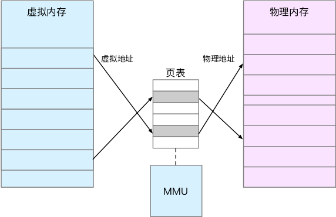
页表实际上存储在 CPU 的内存管理单元 MMU 中，这样，正常情况下，处理器就可以直接通过硬件，找出要访问的内存。
而当进程访问的虚拟地址在页表中查不到时，系统会产生一个缺页异常，进入内核空间分配物理内存、更新进程页表，最后再返回用户空间，恢复进程的运行。
另外，我在 [CPU 上下文切换的文章中]曾经提到， TLB（Translation Lookaside Buffer，转译后备缓冲器）会影响 CPU 的内存访问性能，在这里其实就可以得到解释。
TLB 其实就是 MMU 中页表的高速缓存。由于进程的虚拟地址空间是独立的，而 TLB 的访问速度又比 MMU 快得多，所以，通过减少进程的上下文切换，减少 TLB 的刷新次数，就可以提高 TLB 缓存的使用率，进而提高 CPU 的内存访问性能。
不过要注意，MMU 并不以字节为单位来管理内存，而是规定了一个内存映射的最小单位，也就是页，通常是 4 KB 大小。这样，每一次内存映射，都需要关联 4 KB 或者 4KB 整数倍的内存空间。
页的大小只有 4 KB ，导致的另一个问题就是，整个页表会变得非常大。比方说，仅 32 位系统就需要 100 多万个页表项（4GB/4KB），才可以实现整个地址空间的映射。为了解决页表项过多的问题，Linux 提供了两种机制，也就是多级页表和大页（HugePage）。
多级页表就是把内存分成区块来管理，将原来的映射关系改成区块索引和区块内的偏移。由于虚拟内存空间通常只用了很少一部分，那么，多级页表就只保存这些使用中的区块，这样就可以大大地减少页表的项数。
Linux 用的正是四级页表来管理内存页，如下图所示，虚拟地址被分为 5 个部分，前 4 个表项用于选择页，而最后一个索引表示页内偏移。
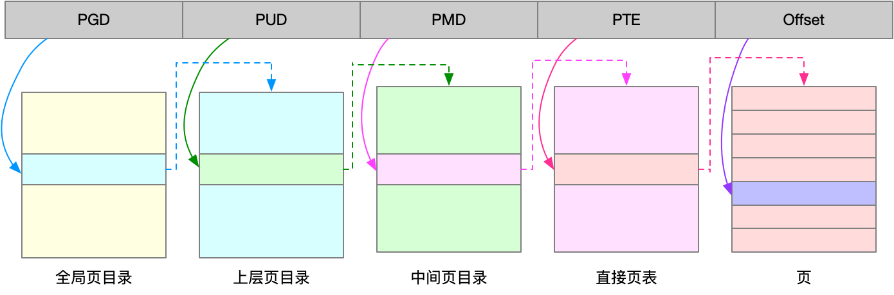
再看大页，顾名思义，就是比普通页更大的内存块，常见的大小有 2MB 和 1GB。大页通常用在使用大量内存的进程上，比如 Oracle、DPDK 等。
通过这些机制，在页表的映射下，进程就可以通过虚拟地址来访问物理内存了。那么具体到一个 Linux 进程中，这些内存又是怎么使用的呢？
虚拟内存空间分布
首先，我们需要进一步了解虚拟内存空间的分布情况。最上方的内核空间不用多讲，下方的用户空间内存，其实又被分成了多个不同的段。以 32 位系统为例，我画了一张图来表示它们的关系。
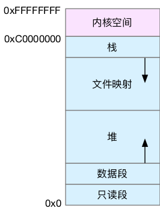
通过这张图你可以看到，用户空间内存，从低到高分别是五种不同的内存段。
- 只读段，包括代码和常量等。
- 数据段，包括全局变量等。
- 堆，包括动态分配的内存，从低地址开始向上增长。
- 文件映射段，包括动态库、共享内存等，从高地址开始向下增长。
- 栈，包括局部变量和函数调用的上下文等。栈的大小是固定的，一般是 8 MB。
在这五个内存段中，堆和文件映射段的内存是动态分配的。比如说，使用 C 标准库的 malloc() 或者 mmap() ，就可以分别在堆和文件映射段动态分配内存。
其实 64 位系统的内存分布也类似，只不过内存空间要大得多。那么，更重要的问题来了，内存究竟是怎么分配的呢？
内存分配与回收
malloc() 是 C 标准库提供的内存分配函数，对应到系统调用上，有两种实现方式，即 brk() 和 mmap()。
对小块内存（小于 128K），C 标准库使用 brk() 来分配，也就是通过移动堆顶的位置来分配内存。这些内存释放后并不会立刻归还系统，而是被缓存起来，这样就可以重复使用。
而大块内存（大于 128K），则直接使用内存映射 mmap() 来分配，也就是在文件映射段找一块空闲内存分配出去。
这两种方式，自然各有优缺点。
brk() 方式的缓存，可以减少缺页异常的发生，提高内存访问效率。不过，由于这些内存没有归还系统，在内存工作繁忙时，频繁的内存分配和释放会造成内存碎片。
而 mmap() 方式分配的内存，会在释放时直接归还系统，所以每次 mmap 都会发生缺页异常。在内存工作繁忙时，频繁的内存分配会导致大量的缺页异常，使内核的管理负担增大。这也是 malloc 只对大块内存使用 mmap 的原因。
了解这两种调用方式后，我们还需要清楚一点，那就是，当这两种调用发生后，其实并没有真正分配内存。这些内存，都只在首次访问时才分配，也就是通过缺页异常进入内核中，再由内核来分配内存。
整体来说，Linux 使用伙伴系统来管理内存分配。前面我们提到过，这些内存在 MMU 中以页为单位进行管理，伙伴系统也一样，以页为单位来管理内存，并且会通过相邻页的合并，减少内存碎片化（比如 brk 方式造成的内存碎片）。
你可能会想到一个问题，如果遇到比页更小的对象，比如不到 1K 的时候，该怎么分配内存呢？
实际系统运行中，确实有大量比页还小的对象，如果为它们也分配单独的页，那就太浪费内存了。
所以，在用户空间，malloc 通过 brk() 分配的内存，在释放时并不立即归还系统，而是缓存起来重复利用。在内核空间，Linux 则通过 slab 分配器来管理小内存。你可以把 slab 看成构建在伙伴系统上的一个缓存，主要作用就是分配并释放内核中的小对象。
对内存来说，如果只分配而不释放，就会造成内存泄漏，甚至会耗尽系统内存。所以，在应用程序用完内存后，还需要调用 free() 或 unmap() ，来释放这些不用的内存。
当然，系统也不会任由某个进程用完所有内存。在发现内存紧张时，系统就会通过一系列机制来回收内存，比如下面这三种方式：
- 回收缓存，比如使用 LRU（Least Recently Used）算法，回收最近使用最少的内存页面；
- 回收不常访问的内存，把不常用的内存通过交换分区直接写到磁盘中；
- 杀死进程，内存紧张时系统还会通过 OOM（Out of Memory），直接杀掉占用大量内存的进程。
其中，第二种方式回收不常访问的内存时，会用到交换分区（以下简称 Swap）。Swap 其实就是把一块磁盘空间当成内存来用。它可以把进程暂时不用的数据存储到磁盘中（这个过程称为换出），当进程访问这些内存时，再从磁盘读取这些数据到内存中（这个过程称为换入）。
所以，你可以发现，Swap 把系统的可用内存变大了。不过要注意，通常只在内存不足时，才会发生 Swap 交换。并且由于磁盘读写的速度远比内存慢，Swap 会导致严重的内存性能问题。
第三种方式提到的 OOM（Out of Memory），其实是内核的一种保护机制。它监控进程的内存使用情况，并且使用 oom_score 为每个进程的内存使用情况进行评分：
- 一个进程消耗的内存越大，oom_score 就越大；
- 一个进程运行占用的 CPU 越多，oom_score 就越小。
这样，进程的 oom_score 越大，代表消耗的内存越多，也就越容易被 OOM 杀死，从而可以更好保护系统。
当然，为了实际工作的需要，管理员可以通过 /proc 文件系统，手动设置进程的 oom_adj ，从而调整进程的 oom_score。
oom_adj 的范围是 [-17, 15]，数值越大，表示进程越容易被 OOM 杀死；数值越小，表示进程越不容易被 OOM 杀死，其中 -17 表示禁止 OOM。
比如用下面的命令，你就可以把 sshd 进程的 oom_adj 调小为 -16，这样， sshd 进程就不容易被 OOM 杀死。
echo -16 > /proc/$(pidof sshd)/oom_adj
如何查看内存使用情况
通过了解内存空间的分布，以及内存的分配和回收，我想你对内存的工作原理应该有了大概的认识。当然，系统的实际工作原理更加复杂，也会涉及其他一些机制，这里我只讲了最主要的原理。掌握了这些，你可以对内存的运作有一条主线认识，不至于脑海里只有术语名词的堆砌。
那么在了解内存的工作原理之后，我们又该怎么查看系统内存使用情况呢？
其实前面 CPU 内容的学习中，我们也提到过一些相关工具。在这里，你第一个想到的应该是 free 工具吧。下面是一个 free 的输出示例：
# 注意不同版本的 free 输出可能会有所不同
$ free
total used free shared buff/cache available
Mem: 8169348 263524 6875352 668 1030472 7611064
Swap: 0 0 0
你可以看到，free 输出的是一个表格，其中的数值都默认以字节为单位。表格总共有两行六列，这两行分别是物理内存 Mem 和交换分区 Swap 的使用情况，而六列中，每列数据的含义分别为：
- 第一列，total 是总内存大小；
- 第二列，used 是已使用内存的大小，包含了共享内存；
- 第三列，free 是未使用内存的大小；
- 第四列，shared 是共享内存的大小；
- 第五列，buff/cache 是缓存和缓冲区的大小；
- 最后一列，available 是新进程可用内存的大小。
这里尤其注意一下，最后一列的可用内存 available 。available 不仅包含未使用内存，还包括了可回收的缓存，所以一般会比未使用内存更大。不过，并不是所有缓存都可以回收，因为有些缓存可能正在使用中。
不过，我们知道，free 显示的是整个系统的内存使用情况。如果你想查看进程的内存使用情况，可以用 top 或者 ps 等工具。比如，下面是 top 的输出示例：
# 按下 M 切换到内存排序
$ top
...
KiB Mem : 8169348 total, 6871440 free, 267096 used, 1030812 buff/cache
KiB Swap: 0 total, 0 free, 0 used. 7607492 avail Mem
PID USER PR NI VIRT RES SHR S %CPU %MEM TIME+ COMMAND
430 root 19 -1 122360 35588 23748 S 0.0 0.4 0:32.17 systemd-journal
1075 root 20 0 771860 22744 11368 S 0.0 0.3 0:38.89 snapd
1048 root 20 0 170904 17292 9488 S 0.0 0.2 0:00.24 networkd-dispat
1 root 20 0 78020 9156 6644 S 0.0 0.1 0:22.92 systemd
12376 azure 20 0 76632 7456 6420 S 0.0 0.1 0:00.01 systemd
12374 root 20 0 107984 7312 6304 S 0.0 0.1 0:00.00 sshd
...
top 输出界面的顶端，也显示了系统整体的内存使用情况，这些数据跟 free 类似，我就不再重复解释。我们接着看下面的内容，跟内存相关的几列数据，比如 VIRT、RES、SHR 以及 %MEM 等。
这些数据，包含了进程最重要的几个内存使用情况，我们挨个来看。
- VIRT 是进程虚拟内存的大小，只要是进程申请过的内存，即便还没有真正分配物理内存，也会计算在内。
- RES 是常驻内存的大小，也就是进程实际使用的物理内存大小，但不包括 Swap 和共享内存。
- SHR 是共享内存的大小，比如与其他进程共同使用的共享内存、加载的动态链接库以及程序的代码段等。
- %MEM 是进程使用物理内存占系统总内存的百分比。
除了要认识这些基本信息，在查看 top 输出时，你还要注意两点。
第一，虚拟内存通常并不会全部分配物理内存。从上面的输出，你可以发现每个进程的虚拟内存都比常驻内存大得多。
第二，共享内存 SHR 并不一定是共享的，比方说，程序的代码段、非共享的动态链接库，也都算在 SHR 里。当然，SHR 也包括了进程间真正共享的内存。所以在计算多个进程的内存使用时，不要把所有进程的 SHR 直接相加得出结果。
小结
今天，我们梳理了 Linux 内存的工作原理。对普通进程来说，它能看到的其实是内核提供的虚拟内存，这些虚拟内存还需要通过页表，由系统映射为物理内存。
当进程通过 malloc() 申请内存后，内存并不会立即分配，而是在首次访问时，才通过缺页异常陷入内核中分配内存。
由于进程的虚拟地址空间比物理内存大很多，Linux 还提供了一系列的机制，应对内存不足的问题，比如缓存的回收、交换分区 Swap 以及 OOM 等。
当你需要了解系统或者进程的内存使用情况时，可以用 free 和 top 、ps 等性能工具。它们都是分析性能问题时最常用的性能工具，希望你能熟练使用它们，并真正理解各个指标的含义。
思考
最后，我想请你来聊聊你所理解的 Linux 内存。你碰到过哪些内存相关的性能瓶颈？你又是怎么样来分析它们的呢？你可以结合今天学到的内存知识和工作原理，提出自己的观点。
欢迎在留言区和我讨论，也欢迎你把这篇文章分享给你的同事、朋友。我们一起在实战中演练，在交流中进步。
16 基础篇：怎么理解内存中的Buffer和Cache？
你好，我是倪朋飞。
上一节，我们梳理了 Linux 内存管理的基本原理，并学会了用 free 和 top 等工具，来查看系统和进程的内存使用情况。
内存和 CPU 的关系非常紧密，而内存管理本身也是很复杂的机制，所以感觉知识很硬核、很难啃，都是正常的。但还是那句话，初学时不用非得理解所有内容，继续往后学，多理解相关的概念并配合一定的实践之后，再回头复习往往会容易不少。当然，基本功不容放弃。
在今天的内容开始之前，我们先来回顾一下系统的内存使用情况，比如下面这个 free 输出界面：
# 注意不同版本的 free 输出可能会有所不同
$ free
total used free shared buff/cache available
Mem: 8169348 263524 6875352 668 1030472 7611064
Swap: 0 0 0
显然，这个界面包含了物理内存 Mem 和交换分区 Swap 的具体使用情况，比如总内存、已用内存、缓存、可用内存等。其中缓存是 Buffer 和 Cache 两部分的总和 。
这里的大部分指标都比较容易理解，但 Buffer 和 Cache 可能不太好区分。从字面上来说，Buffer 是缓冲区，而 Cache 是缓存，两者都是数据在内存中的临时存储。那么，你知道这两种“临时存储”有什么区别吗？
注：今天内容接下来的部分，Buffer 和 Cache 我会都用英文来表示，避免跟文中的“缓存”一词混淆。而文中的“缓存”，则通指内存中的临时存储。
free 数据的来源
在我正式讲解两个概念前，你可以先想想，你有没有什么途径来进一步了解它们？除了中文翻译直接得到概念，别忘了，Buffer 和 Cache 还是我们用 free 获得的指标。
还记得我之前讲过的，碰到看不明白的指标时该怎么办吗？
估计你想起来了，不懂就去查手册。用 man 命令查询 free 的文档，就可以找到对应指标的详细说明。比如，我们执行 man free ，就可以看到下面这个界面。
buffers
Memory used by kernel buffers (Buffers in /proc/meminfo)
cache Memory used by the page cache and slabs (Cached and SReclaimable in /proc/meminfo)
buff/cache
Sum of buffers and cache
从 free 的手册中，你可以看到 buffer 和 cache 的说明。
- Buffers 是内核缓冲区用到的内存，对应的是 /proc/meminfo 中的 Buffers 值。
- Cache 是内核页缓存和 Slab 用到的内存，对应的是 /proc/meminfo 中的 Cached 与 SReclaimable 之和。
这里的说明告诉我们，这些数值都来自 /proc/meminfo，但更具体的 Buffers、Cached 和 SReclaimable 的含义，还是没有说清楚。
要弄明白它们到底是什么，我估计你第一反应就是去百度或者 Google 一下。虽然大部分情况下，网络搜索能给出一个答案。但是，且不说筛选信息花费的时间精力，对你来说，这个答案的准确性也是很难保证的。
要注意，网上的结论可能是对的，但是很可能跟你的环境并不匹配。最简单来说，同一个指标的具体含义，就可能因为内核版本、性能工具版本的不同而有挺大差别。这也是为什么，我总在专栏中强调通用思路和方法，而不是让你死记结论。对于案例实践来说，机器环境就是我们的最大限制。
那么，有没有更简单、更准确的方法，来查询它们的含义呢？
proc 文件系统
我在前面 CPU 性能模块就曾经提到过，/proc 是 Linux 内核提供的一种特殊文件系统，是用户跟内核交互的接口。比方说，用户可以从 /proc 中查询内核的运行状态和配置选项，查询进程的运行状态、统计数据等，当然，你也可以通过 /proc 来修改内核的配置。
proc 文件系统同时也是很多性能工具的最终数据来源。比如我们刚才看到的 free ，就是通过读取 /proc/meminfo ，得到内存的使用情况。
继续说回 /proc/meminfo，既然 Buffers、Cached、SReclaimable 这几个指标不容易理解，那我们还得继续查 proc 文件系统，获取它们的详细定义。
执行 man proc ，你就可以得到 proc 文件系统的详细文档。
注意这个文档比较长，你最好搜索一下（比如搜索 meminfo），以便更快定位到内存部分。
Buffers %lu
Relatively temporary storage for raw disk blocks that shouldn't get tremendously large (20MB or so).
Cached %lu
In-memory cache for files read from the disk (the page cache). Doesn't include SwapCached.
...
SReclaimable %lu (since Linux 2.6.19)
Part of Slab, that might be reclaimed, such as caches.
SUnreclaim %lu (since Linux 2.6.19)
Part of Slab, that cannot be reclaimed on memory pressure.
通过这个文档，我们可以看到：
- Buffers 是对原始磁盘块的临时存储，也就是用来缓存磁盘的数据，通常不会特别大（20MB 左右）。这样，内核就可以把分散的写集中起来，统一优化磁盘的写入，比如可以把多次小的写合并成单次大的写等等。
- Cached 是从磁盘读取文件的页缓存，也就是用来缓存从文件读取的数据。这样，下次访问这些文件数据时，就可以直接从内存中快速获取，而不需要再次访问缓慢的磁盘。
- SReclaimable 是 Slab 的一部分。Slab 包括两部分，其中的可回收部分，用 SReclaimable 记录；而不可回收部分，用 SUnreclaim 记录。
好了，我们终于找到了这三个指标的详细定义。到这里，你是不是长舒一口气，满意地想着，总算弄明白 Buffer 和 Cache 了。不过，知道这个定义就真的理解了吗？这里我给你提了两个问题，你先想想能不能回答出来。
第一个问题，Buffer 的文档没有提到这是磁盘读数据还是写数据的缓存，而在很多网络搜索的结果中都会提到 Buffer 只是对将要写入磁盘数据的缓存。那反过来说，它会不会也缓存从磁盘中读取的数据呢？
第二个问题，文档中提到，Cache 是对从文件读取数据的缓存，那么它是不是也会缓存写文件的数据呢？
为了解答这两个问题，接下来，我将用几个案例来展示， Buffer 和 Cache 在不同场景下的使用情况。
案例
你的准备
跟前面实验一样，今天的案例也是基于 Ubuntu 18.04，当然，其他 Linux 系统也适用。我的案例环境是这样的。
- 机器配置：2 CPU，8GB 内存。
- 预先安装 sysstat 包，如 apt install sysstat。
之所以要安装 sysstat ，是因为我们要用到 vmstat ，来观察 Buffer 和 Cache 的变化情况。虽然从 /proc/meminfo 里也可以读到相同的结果，但毕竟还是 vmstat 的结果更加直观。
另外，这几个案例使用了 dd 来模拟磁盘和文件的 I/O，所以我们也需要观测 I/O 的变化情况。
上面的工具安装完成后，你可以打开两个终端，连接到 Ubuntu 机器上。
准备环节的最后一步，为了减少缓存的影响，记得在第一个终端中，运行下面的命令来清理系统缓存：
# 清理文件页、目录项、Inodes 等各种缓存
$ echo 3 > /proc/sys/vm/drop_caches
这里的 /proc/sys/vm/drop_caches ，就是通过 proc 文件系统修改内核行为的一个示例，写入 3 表示清理文件页、目录项、Inodes 等各种缓存。这几种缓存的区别你暂时不用管，后面我们都会讲到。
场景 1：磁盘和文件写案例
我们先来模拟第一个场景。首先，在第一个终端，运行下面这个 vmstat 命令：
# 每隔 1 秒输出 1 组数据
$ vmstat 1
procs -----------memory---------- ---swap-- -----io---- -system-- ------cpu-----
r b swpd free buff cache si so bi bo in cs us sy id wa st
0 0 0 7743608 1112 92168 0 0 0 0 52 152 0 1 100 0 0
0 0 0 7743608 1112 92168 0 0 0 0 36 92 0 0 100 0 0
输出界面里， 内存部分的 buff 和 cache ，以及 io 部分的 bi 和 bo 就是我们要关注的重点。
- buff 和 cache 就是我们前面看到的 Buffers 和 Cache，单位是 KB。
- bi 和 bo 则分别表示块设备读取和写入的大小，单位为块 / 秒。因为 Linux 中块的大小是 1KB，所以这个单位也就等价于 KB/s。
正常情况下，空闲系统中，你应该看到的是，这几个值在多次结果中一直保持不变。
接下来，到第二个终端执行 dd 命令，通过读取随机设备，生成一个 500MB 大小的文件：
$ dd if=/dev/urandom of=/tmp/file bs=1M count=500
然后再回到第一个终端，观察 Buffer 和 Cache 的变化情况：
procs -----------memory---------- ---swap-- -----io---- -system-- ------cpu-----
r b swpd free buff cache si so bi bo in cs us sy id wa st
0 0 0 7499460 1344 230484 0 0 0 0 29 145 0 0 100 0 0
1 0 0 7338088 1752 390512 0 0 488 0 39 558 0 47 53 0 0
1 0 0 7158872 1752 568800 0 0 0 4 30 376 1 50 49 0 0
1 0 0 6980308 1752 747860 0 0 0 0 24 360 0 50 50 0 0
0 0 0 6977448 1752 752072 0 0 0 0 29 138 0 0 100 0 0
0 0 0 6977440 1760 752080 0 0 0 152 42 212 0 1 99 1 0
...
0 1 0 6977216 1768 752104 0 0 4 122880 33 234 0 1 51 49 0
0 1 0 6977440 1768 752108 0 0 0 10240 38 196 0 0 50 50 0
通过观察 vmstat 的输出，我们发现，在 dd 命令运行时， Cache 在不停地增长，而 Buffer 基本保持不变。
再进一步观察 I/O 的情况，你会看到，
- 在 Cache 刚开始增长时，块设备 I/O 很少，bi 只出现了一次 488 KB/s，bo 则只有一次 4KB。而过一段时间后，才会出现大量的块设备写，比如 bo 变成了 122880。
- 当 dd 命令结束后，Cache 不再增长，但块设备写还会持续一段时间，并且，多次 I/O 写的结果加起来，才是 dd 要写的 500M 的数据。
把这个结果，跟我们刚刚了解到的 Cache 的定义做个对比，你可能会有点晕乎。为什么前面文档上说 Cache 是文件读的页缓存，怎么现在写文件也有它的份？
这个疑问，我们暂且先记下来，接着再来看另一个磁盘写的案例。两个案例结束后，我们再统一进行分析。
不过，对于接下来的案例，我必须强调一点：
下面的命令对环境要求很高，需要你的系统配置多块磁盘，并且磁盘分区 /dev/sdb1 还要处于未使用状态。如果你只有一块磁盘，千万不要尝试，否则将会对你的磁盘分区造成损坏。
如果你的系统符合标准，就可以继续在第二个终端中，运行下面的命令。清理缓存后，向磁盘分区 /dev/sdb1 写入 2GB 的随机数据：
# 首先清理缓存
$ echo 3 > /proc/sys/vm/drop_caches
# 然后运行 dd 命令向磁盘分区 /dev/sdb1 写入 2G 数据
$ dd if=/dev/urandom of=/dev/sdb1 bs=1M count=2048
然后，再回到终端一，观察内存和 I/O 的变化情况：
procs -----------memory---------- ---swap-- -----io---- -system-- ------cpu-----
r b swpd free buff cache si so bi bo in cs us sy id wa st
1 0 0 7584780 153592 97436 0 0 684 0 31 423 1 48 50 2 0
1 0 0 7418580 315384 101668 0 0 0 0 32 144 0 50 50 0 0
1 0 0 7253664 475844 106208 0 0 0 0 20 137 0 50 50 0 0
1 0 0 7093352 631800 110520 0 0 0 0 23 223 0 50 50 0 0
1 1 0 6930056 790520 114980 0 0 0 12804 23 168 0 50 42 9 0
1 0 0 6757204 949240 119396 0 0 0 183804 24 191 0 53 26 21 0
1 1 0 6591516 1107960 123840 0 0 0 77316 22 232 0 52 16 33 0
从这里你会看到，虽然同是写数据，写磁盘跟写文件的现象还是不同的。写磁盘时（也就是 bo 大于 0 时），Buffer 和 Cache 都在增长，但显然 Buffer 的增长快得多。
这说明，写磁盘用到了大量的 Buffer，这跟我们在文档中查到的定义是一样的。
对比两个案例，我们发现，写文件时会用到 Cache 缓存数据，而写磁盘则会用到 Buffer 来缓存数据。所以，回到刚刚的问题，虽然文档上只提到，Cache 是文件读的缓存，但实际上，Cache 也会缓存写文件时的数据。
场景 2：磁盘和文件读案例
了解了磁盘和文件写的情况，我们再反过来想，磁盘和文件读的时候，又是怎样的呢？
我们回到第二个终端，运行下面的命令。清理缓存后，从文件 /tmp/file 中，读取数据写入空设备：
# 首先清理缓存
$ echo 3 > /proc/sys/vm/drop_caches
# 运行 dd 命令读取文件数据
$ dd if=/tmp/file of=/dev/null
然后，再回到终端一，观察内存和 I/O 的变化情况：
procs -----------memory---------- ---swap-- -----io---- -system-- ------cpu-----
r b swpd free buff cache si so bi bo in cs us sy id wa st
0 1 0 7724164 2380 110844 0 0 16576 0 62 360 2 2 76 21 0
0 1 0 7691544 2380 143472 0 0 32640 0 46 439 1 3 50 46 0
0 1 0 7658736 2380 176204 0 0 32640 0 54 407 1 4 50 46 0
0 1 0 7626052 2380 208908 0 0 32640 40 44 422 2 2 50 46 0
观察 vmstat 的输出，你会发现读取文件时（也就是 bi 大于 0 时），Buffer 保持不变，而 Cache 则在不停增长。这跟我们查到的定义“Cache 是对文件读的页缓存”是一致的。
那么，磁盘读又是什么情况呢？我们再运行第二个案例来看看。
首先，回到第二个终端，运行下面的命令。清理缓存后，从磁盘分区 /dev/sda1 中读取数据，写入空设备：
# 首先清理缓存
$ echo 3 > /proc/sys/vm/drop_caches
# 运行 dd 命令读取文件
$ dd if=/dev/sda1 of=/dev/null bs=1M count=1024
然后，再回到终端一，观察内存和 I/O 的变化情况：
procs -----------memory---------- ---swap-- -----io---- -system-- ------cpu-----
r b swpd free buff cache si so bi bo in cs us sy id wa st
0 0 0 7225880 2716 608184 0 0 0 0 48 159 0 0 100 0 0
0 1 0 7199420 28644 608228 0 0 25928 0 60 252 0 1 65 35 0
0 1 0 7167092 60900 608312 0 0 32256 0 54 269 0 1 50 49 0
0 1 0 7134416 93572 608376 0 0 32672 0 53 253 0 0 51 49 0
0 1 0 7101484 126320 608480 0 0 32748 0 80 414 0 1 50 49 0
观察 vmstat 的输出，你会发现读磁盘时（也就是 bi 大于 0 时），Buffer 和 Cache 都在增长，但显然 Buffer 的增长快很多。这说明读磁盘时，数据缓存到了 Buffer 中。
当然，我想，经过上一个场景中两个案例的分析，你自己也可以对比得出这个结论：读文件时数据会缓存到 Cache 中，而读磁盘时数据会缓存到 Buffer 中。
到这里你应该发现了，虽然文档提供了对 Buffer 和 Cache 的说明，但是仍不能覆盖到所有的细节。比如说，今天我们了解到的这两点：
- Buffer 既可以用作“将要写入磁盘数据的缓存”，也可以用作“从磁盘读取数据的缓存”。
- Cache 既可以用作“从文件读取数据的页缓存”，也可以用作“写文件的页缓存”。
这样，我们就回答了案例开始前的两个问题。
简单来说，Buffer 是对磁盘数据的缓存，而 Cache 是文件数据的缓存，它们既会用在读请求中，也会用在写请求中。
小结
今天，我们一起探索了内存性能中 Buffer 和 Cache 的详细含义。Buffer 和 Cache 分别缓存磁盘和文件系统的读写数据。
- 从写的角度来说，不仅可以优化磁盘和文件的写入，对应用程序也有好处，应用程序可以在数据真正落盘前，就返回去做其他工作。
- 从读的角度来说，既可以加速读取那些需要频繁访问的数据，也降低了频繁 I/O 对磁盘的压力。
除了探索的内容本身，这个探索过程对你应该也有所启发。在排查性能问题时，由于各种资源的性能指标太多，我们不可能记住所有指标的详细含义。那么，准确高效的手段——查文档，就非常重要了。
你一定要养成查文档的习惯，并学会解读这些性能指标的详细含义。此外，proc 文件系统也是我们的好帮手。它为我们呈现了系统内部的运行状态，同时也是很多性能工具的数据来源，是辅助排查性能问题的好方法。
思考
最后，我想给你留一个思考题。
我们已经知道，可以使用 ps、top 或者 proc 文件系统，来获取进程的内存使用情况。那么，如何统计出所有进程的物理内存使用量呢？
提示：要避免重复计算多个进程同时占用的内存，像是页缓存、共享内存这类。如果你把 ps、top 得到的数据直接相加，就会出现重复计算的问题。
这里，我推荐从 /proc/< pid >/smaps 入手。前面内容里，我并没有直接讲过 /proc/< pid >smaps 文件中各个指标含义，所以，需要你自己动手查 proc 文件系统的文档，解读并回答这个问题。
欢迎在留言区和我讨论，也欢迎你把这篇文章分享给你的同事、朋友。我们一起在实战中演练，在交流中进步。
17 案例篇：如何利用系统缓存优化程序的运行效率？
你好，我是倪朋飞。
上一节，我们学习了内存性能中 Buffer 和 Cache 的概念。简单复习一下，Buffer 和 Cache 的设计目的，是为了提升系统的 I/O 性能。它们利用内存，充当起慢速磁盘与快速 CPU 之间的桥梁，可以加速 I/O 的访问速度。
Buffer 和 Cache 分别缓存的是对磁盘和文件系统的读写数据。
- 从写的角度来说，不仅可以优化磁盘和文件的写入，对应用程序也有好处，应用程序可以在数据真正落盘前，就返回去做其他工作。
- 从读的角度来说，不仅可以提高那些频繁访问数据的读取速度，也降低了频繁 I/O 对磁盘的压力。
既然 Buffer 和 Cache 对系统性能有很大影响，那我们在软件开发的过程中，能不能利用这一点，来优化 I/O 性能，提升应用程序的运行效率呢？
答案自然是肯定的。今天，我就用几个案例帮助你更好地理解缓存的作用，并学习如何充分利用这些缓存来提高程序效率。
为了方便你理解，Buffer 和 Cache 我仍然用英文表示，避免跟“缓存”一词混淆。而文中的“缓存”，通指数据在内存中的临时存储。
缓存命中率
在案例开始前，你应该习惯性地先问自己一个问题，你想要做成某件事情，结果应该怎么评估？比如说，我们想利用缓存来提升程序的运行效率，应该怎么评估这个效果呢？换句话说，有没有哪个指标可以衡量缓存使用的好坏呢？
我估计你已经想到了，缓存的命中率。所谓缓存命中率，是指直接通过缓存获取数据的请求次数，占所有数据请求次数的百分比。
命中率越高，表示使用缓存带来的收益越高，应用程序的性能也就越好。
实际上，缓存是现在所有高并发系统必需的核心模块，主要作用就是把经常访问的数据（也就是热点数据），提前读入到内存中。这样，下次访问时就可以直接从内存读取数据，而不需要经过硬盘，从而加快应用程序的响应速度。
这些独立的缓存模块通常会提供查询接口，方便我们随时查看缓存的命中情况。不过 Linux 系统中并没有直接提供这些接口，所以这里我要介绍一下，cachestat 和 cachetop ，它们正是查看系统缓存命中情况的工具。
- cachestat 提供了整个操作系统缓存的读写命中情况。
- cachetop 提供了每个进程的缓存命中情况。
这两个工具都是 bcc 软件包的一部分，它们基于 Linux 内核的 eBPF（extended Berkeley Packet Filters）机制，来跟踪内核中管理的缓存，并输出缓存的使用和命中情况。
这里注意，eBPF 的工作原理不是我们今天的重点，记住这个名字即可，后面文章中我们会详细学习。今天要掌握的重点，是这两个工具的使用方法。
使用 cachestat 和 cachetop 前，我们首先要安装 bcc 软件包。比如，在 Ubuntu 系统中，你可以运行下面的命令来安装：
sudo apt-key adv --keyserver keyserver.ubuntu.com --recv-keys 4052245BD4284CDD
echo "deb https://repo.iovisor.org/apt/xenial xenial main" | sudo tee /etc/apt/sources.list.d/iovisor.list
sudo apt-get update
sudo apt-get install -y bcc-tools libbcc-examples linux-headers-$(uname -r)
注意：bcc-tools 需要内核版本为 4.1 或者更新的版本，如果你用的是 CentOS，那就需要手动升级内核版本后再安装。
操作完这些步骤，bcc 提供的所有工具就都安装到 /usr/share/bcc/tools 这个目录中了。不过这里提醒你，bcc 软件包默认不会把这些工具配置到系统的 PATH 路径中，所以你得自己手动配置：
$ export PATH=$PATH:/usr/share/bcc/tools
配置完，你就可以运行 cachestat 和 cachetop 命令了。比如，下面就是一个 cachestat 的运行界面，它以 1 秒的时间间隔，输出了 3 组缓存统计数据：
$ cachestat 1 3
TOTAL MISSES HITS DIRTIES BUFFERS_MB CACHED_MB
2 0 2 1 17 279
2 0 2 1 17 279
2 0 2 1 17 279
你可以看到，cachestat 的输出其实是一个表格。每行代表一组数据，而每一列代表不同的缓存统计指标。这些指标从左到右依次表示：
- TOTAL ，表示总的 I/O 次数；
- MISSES ，表示缓存未命中的次数；
- HITS ，表示缓存命中的次数；
- DIRTIES， 表示新增到缓存中的脏页数；
- BUFFERS_MB 表示 Buffers 的大小，以 MB 为单位；
- CACHED_MB 表示 Cache 的大小，以 MB 为单位。
接下来我们再来看一个 cachetop 的运行界面：
$ cachetop
11:58:50 Buffers MB: 258 / Cached MB: 347 / Sort: HITS / Order: ascending
PID UID CMD HITS MISSES DIRTIES READ_HIT% WRITE_HIT%
13029 root python 1 0 0 100.0% 0.0%
它的输出跟 top 类似，默认按照缓存的命中次数（HITS）排序，展示了每个进程的缓存命中情况。具体到每一个指标，这里的 HITS、MISSES 和 DIRTIES ，跟 cachestat 里的含义一样，分别代表间隔时间内的缓存命中次数、未命中次数以及新增到缓存中的脏页数。
而 READ_HIT 和 WRITE_HIT ，分别表示读和写的缓存命中率。
指定文件的缓存大小
除了缓存的命中率外，还有一个指标你可能也会很感兴趣，那就是指定文件在内存中的缓存大小。你可以使用 pcstat 这个工具，来查看文件在内存中的缓存大小以及缓存比例。
pcstat 是一个基于 Go 语言开发的工具，所以安装它之前，你首先应该安装 Go 语言，你可以点击这里下载安装。
安装完 Go 语言，再运行下面的命令安装 pcstat：
$ export GOPATH=~/go
$ export PATH=~/go/bin:$PATH
$ go get golang.org/x/sys/unix
$ go get github.com/tobert/pcstat/pcstat
全部安装完成后，你就可以运行 pcstat 来查看文件的缓存情况了。比如，下面就是一个 pcstat 运行的示例，它展示了 /bin/ls 这个文件的缓存情况：
$ pcstat /bin/ls
+---------+----------------+------------+-----------+---------+
| Name | Size (bytes) | Pages | Cached | Percent |
|---------+----------------+------------+-----------+---------|
| /bin/ls | 133792 | 33 | 0 | 000.000 |
+---------+----------------+------------+-----------+---------+
这个输出中，Cached 就是 /bin/ls 在缓存中的大小，而 Percent 则是缓存的百分比。你看到它们都是 0，这说明 /bin/ls 并不在缓存中。
接着，如果你执行一下 ls 命令，再运行相同的命令来查看的话，就会发现 /bin/ls 都在缓存中了：
$ ls
$ pcstat /bin/ls
+---------+----------------+------------+-----------+---------+
| Name | Size (bytes) | Pages | Cached | Percent |
|---------+----------------+------------+-----------+---------|
| /bin/ls | 133792 | 33 | 33 | 100.000 |
+---------+----------------+------------+-----------+---------+
知道了缓存相应的指标和查看系统缓存的方法后，接下来，我们就进入今天的正式案例。
跟前面的案例一样，今天的案例也是基于 Ubuntu 18.04，当然同样适用于其他的 Linux 系统。
- 机器配置：2 CPU，8GB 内存。
- 预先按照上面的步骤安装 bcc 和 pcstat 软件包，并把这些工具的安装路径添加到到 PATH 环境变量中。
- 预先安装 Docker 软件包，比如 apt-get install docker.io
案例一
第一个案例，我们先来看一下上一节提到的 dd 命令。
dd 作为一个磁盘和文件的拷贝工具，经常被拿来测试磁盘或者文件系统的读写性能。不过，既然缓存会影响到性能，如果用 dd 对同一个文件进行多次读取测试，测试的结果会怎么样呢？
我们来动手试试。首先，打开两个终端，连接到 Ubuntu 机器上，确保 bcc 已经安装配置成功。
然后，使用 dd 命令生成一个临时文件，用于后面的文件读取测试：
# 生成一个 512MB 的临时文件
$ dd if=/dev/sda1 of=file bs=1M count=512
# 清理缓存
$ echo 3 > /proc/sys/vm/drop_caches
继续在第一个终端，运行 pcstat 命令，确认刚刚生成的文件不在缓存中。如果一切正常，你会看到 Cached 和 Percent 都是 0:
$ pcstat file
+-------+----------------+------------+-----------+---------+
| Name | Size (bytes) | Pages | Cached | Percent |
|-------+----------------+------------+-----------+---------|
| file | 536870912 | 131072 | 0 | 000.000 |
+-------+----------------+------------+-----------+---------+
还是在第一个终端中，现在运行 cachetop 命令：
# 每隔 5 秒刷新一次数据
$ cachetop 5
这次是第二个终端，运行 dd 命令测试文件的读取速度：
$ dd if=file of=/dev/null bs=1M
512+0 records in
512+0 records out
536870912 bytes (537 MB, 512 MiB) copied, 16.0509 s, 33.4 MB/s
从 dd 的结果可以看出，这个文件的读性能是 33.4 MB/s。由于在 dd 命令运行前我们已经清理了缓存，所以 dd 命令读取数据时，肯定要通过文件系统从磁盘中读取。
不过，这是不是意味着， dd 所有的读请求都能直接发送到磁盘呢？
我们再回到第一个终端， 查看 cachetop 界面的缓存命中情况：
PID UID CMD HITS MISSES DIRTIES READ_HIT% WRITE_HIT%
\.\.\.
3264 root dd 37077 37330 0 49.8% 50.2%
从 cachetop 的结果可以发现，并不是所有的读都落到了磁盘上，事实上读请求的缓存命中率只有 50% 。
接下来，我们继续尝试相同的测试命令。先切换到第二个终端，再次执行刚才的 dd 命令：
$ dd if=file of=/dev/null bs=1M
512+0 records in
512+0 records out
536870912 bytes (537 MB, 512 MiB) copied, 0.118415 s, 4.5 GB/s
看到这次的结果，有没有点小惊讶？磁盘的读性能居然变成了 4.5 GB/s，比第一次的结果明显高了太多。为什么这次的结果这么好呢？
不妨再回到第一个终端，看看 cachetop 的情况：
10:45:22 Buffers MB: 4 / Cached MB: 719 / Sort: HITS / Order: ascending
PID UID CMD HITS MISSES DIRTIES READ_HIT% WRITE_HIT%
\.\.\.
32642 root dd 131637 0 0 100.0% 0.0%
显然，cachetop 也有了不小的变化。你可以发现，这次的读的缓存命中率是 100.0%，也就是说这次的 dd 命令全部命中了缓存，所以才会看到那么高的性能。
然后，回到第二个终端，再次执行 pcstat 查看文件 file 的缓存情况：
$ pcstat file
+-------+----------------+------------+-----------+---------+
| Name | Size (bytes) | Pages | Cached | Percent |
|-------+----------------+------------+-----------+---------|
| file | 536870912 | 131072 | 131072 | 100.000 |
+-------+----------------+------------+-----------+---------+
从 pcstat 的结果你可以发现，测试文件 file 已经被全部缓存了起来，这跟刚才观察到的缓存命中率 100% 是一致的。
这两次结果说明，系统缓存对第二次 dd 操作有明显的加速效果，可以大大提高文件读取的性能。
但同时也要注意，如果我们把 dd 当成测试文件系统性能的工具，由于缓存的存在，就会导致测试结果严重失真。
案例二
接下来，我们再来看一个文件读写的案例。这个案例类似于前面学过的不可中断状态进程的例子。它的基本功能比较简单，也就是每秒从磁盘分区 /dev/sda1 中读取 32MB 的数据，并打印出读取数据花费的时间。
为了方便你运行案例，我把它打包成了一个 Docker 镜像。 跟前面案例类似，我提供了下面两个选项，你可以根据系统配置，自行调整磁盘分区的路径以及 I/O 的大小。
- -d 选项，设置要读取的磁盘或分区路径，默认是查找前缀为 /dev/sd 或者 /dev/xvd 的磁盘。
- -s 选项，设置每次读取的数据量大小，单位为字节，默认为 33554432（也就是 32MB）。
这个案例同样需要你开启两个终端。分别 SSH 登录到机器上后，先在第一个终端中运行 cachetop 命令：
# 每隔 5 秒刷新一次数据
$ cachetop 5
接着，再到第二个终端，执行下面的命令运行案例：
$ docker run --privileged --name=app -itd feisky/app:io-direct
案例运行后，我们还需要运行下面这个命令，来确认案例已经正常启动。如果一切正常，你应该可以看到类似下面的输出：
$ docker logs app
Reading data from disk /dev/sdb1 with buffer size 33554432
Time used: 0.929935 s to read 33554432 bytes
Time used: 0.949625 s to read 33554432 bytes
从这里你可以看到，每读取 32 MB 的数据，就需要花 0.9 秒。这个时间合理吗？我想你第一反应就是，太慢了吧。那这是不是没用系统缓存导致的呢？
我们再来检查一下。回到第一个终端，先看看 cachetop 的输出，在这里，我们找到案例进程 app 的缓存使用情况：
16:39:18 Buffers MB: 73 / Cached MB: 281 / Sort: HITS / Order: ascending
PID UID CMD HITS MISSES DIRTIES READ_HIT% WRITE_HIT%
21881 root app 1024 0 0 100.0% 0.0%
这个输出似乎有点意思了。1024 次缓存全部命中，读的命中率是 100%，看起来全部的读请求都经过了系统缓存。但是问题又来了，如果真的都是缓存 I/O，读取速度不应该这么慢。
不过，话说回来，我们似乎忽略了另一个重要因素，每秒实际读取的数据大小。HITS 代表缓存的命中次数，那么每次命中能读取多少数据呢？自然是一页。
前面讲过，内存以页为单位进行管理，而每个页的大小是 4KB。所以，在 5 秒的时间间隔里，命中的缓存为 1024*4K/1024 = 4MB，再除以 5 秒，可以得到每秒读的缓存是 0.8MB，显然跟案例应用的 32 MB/s 相差太多。
至于为什么只能看到 0.8 MB 的 HITS，我们后面再解释，这里你先知道怎么根据结果来分析就可以了。
这也进一步验证了我们的猜想，这个案例估计没有充分利用系统缓存。其实前面我们遇到过类似的问题，如果为系统调用设置直接 I/O 的标志，就可以绕过系统缓存。
那么，要判断应用程序是否用了直接 I/O，最简单的方法当然是观察它的系统调用，查找应用程序在调用它们时的选项。使用什么工具来观察系统调用呢？自然还是 strace。
继续在终端二中运行下面的 strace 命令，观察案例应用的系统调用情况。注意，这里使用了 pgrep 命令来查找案例进程的 PID 号：
# strace -p $(pgrep app)
strace: Process 4988 attached
restart_syscall(<\.\.\. resuming interrupted nanosleep \.\.\.>) = 0
openat(AT_FDCWD, "/dev/sdb1", O_RDONLY|O_DIRECT) = 4
mmap(NULL, 33558528, PROT_READ|PROT_WRITE, MAP_PRIVATE|MAP_ANONYMOUS, -1, 0) = 0x7f448d240000
read(4, "8vq\213\314\264u\373\4\336K\224\[email protected]\371\1\252\2\262\252q\221\n0\30\225bD\252\[email protected]"\.\.\., 33554432) = 33554432
write(1, "Time used: 0.948897 s to read 33"\.\.\., 45) = 45
close(4) = 0
从 strace 的结果可以看到，案例应用调用了 openat 来打开磁盘分区 /dev/sdb1，并且传入的参数为 O_RDONLY|O_DIRECT（中间的竖线表示或）。
O_RDONLY 表示以只读方式打开，而 O_DIRECT 则表示以直接读取的方式打开，这会绕过系统的缓存。
验证了这一点，就很容易理解为什么读 32 MB 的数据就都要那么久了。直接从磁盘读写的速度，自然远慢于对缓存的读写。这也是缓存存在的最大意义了。
找出问题后，我们还可以在再看看案例应用的源代码，再次验证一下：
int flags = O_RDONLY | O_LARGEFILE | O_DIRECT;
int fd = open(disk, flags, 0755);
上面的代码，很清楚地告诉我们：它果然用了直接 I/O。
找出了磁盘读取缓慢的原因，优化磁盘读的性能自然不在话下。修改源代码，删除 O_DIRECT 选项，让应用程序使用缓存 I/O ，而不是直接 I/O，就可以加速磁盘读取速度。
app-cached.c 就是修复后的源码，我也把它打包成了一个容器镜像。在第二个终端中，按 Ctrl+C 停止刚才的 strace 命令，运行下面的命令，你就可以启动它：
# 删除上述案例应用
$ docker rm -f app
# 运行修复后的应用
$ docker run --privileged --name=app -itd feisky/app:io-cached
还是第二个终端，再来运行下面的命令查看新应用的日志，你应该能看到下面这个输出：
$ docker logs app
Reading data from disk /dev/sdb1 with buffer size 33554432
Time used: 0.037342 s s to read 33554432 bytes
Time used: 0.029676 s to read 33554432 bytes
现在，每次只需要 0.03 秒，就可以读取 32MB 数据，明显比之前的 0.9 秒快多了。所以，这次应该用了系统缓存。
我们再回到第一个终端，查看 cachetop 的输出来确认一下：
16:40:08 Buffers MB: 73 / Cached MB: 281 / Sort: HITS / Order: ascending
PID UID CMD HITS MISSES DIRTIES READ_HIT% WRITE_HIT%
22106 root app 40960 0 0 100.0% 0.0%
果然，读的命中率还是 100%，HITS （即命中数）却变成了 40960，同样的方法计算一下，换算成每秒字节数正好是 32 MB（即 40960*4k/5/1024=32M）。
这个案例说明，在进行 I/O 操作时，充分利用系统缓存可以极大地提升性能。 但在观察缓存命中率时，还要注意结合应用程序实际的 I/O 大小，综合分析缓存的使用情况。
案例的最后，再回到开始的问题，为什么优化前，通过 cachetop 只能看到很少一部分数据的全部命中，而没有观察到大量数据的未命中情况呢？这是因为，cachetop 工具并不把直接 I/O 算进来。这也又一次说明了，了解工具原理的重要。
cachetop 的计算方法涉及到 I/O 的原理以及一些内核的知识，如果你想了解它的原理的话，可以点击这里查看它的源代码。
总结
Buffers 和 Cache 可以极大提升系统的 I/O 性能。通常，我们用缓存命中率，来衡量缓存的使用效率。命中率越高，表示缓存被利用得越充分，应用程序的性能也就越好。
你可以用 cachestat 和 cachetop 这两个工具，观察系统和进程的缓存命中情况。其中，
- cachestat 提供了整个系统缓存的读写命中情况。
- cachetop 提供了每个进程的缓存命中情况。
不过要注意，Buffers 和 Cache 都是操作系统来管理的，应用程序并不能直接控制这些缓存的内容和生命周期。所以，在应用程序开发中，一般要用专门的缓存组件，来进一步提升性能。
比如，程序内部可以使用堆或者栈明确声明内存空间，来存储需要缓存的数据。再或者，使用 Redis 这类外部缓存服务，优化数据的访问效率。
思考
最后，我想给你留下一道思考题，帮你更进一步了解缓存的原理。
今天的第二个案例你应该很眼熟，因为前面不可中断进程的文章用的也是直接 I/O 的例子，不过那次，我们是从 CPU 使用率和进程状态的角度来分析的。对比 CPU 和缓存这两个不同角度的分析思路，你有什么样的发现呢？
欢迎在留言区和我讨论，写下你的答案和收获，也欢迎你把这篇文章分享给你的同事、朋友。我们一起在实战中演练，在交流中进步。
18 案例篇：内存泄漏了，我该如何定位和处理？
你好，我是倪朋飞。
通过前几节对内存基础的学习，我相信你对 Linux 内存的工作原理，已经有了初步了解。
对普通进程来说，能看到的其实是内核提供的虚拟内存，这些虚拟内存还需要通过页表，由系统映射为物理内存。
当进程通过 malloc() 申请虚拟内存后，系统并不会立即为其分配物理内存，而是在首次访问时，才通过缺页异常陷入内核中分配内存。
为了协调 CPU 与磁盘间的性能差异，Linux 还会使用 Cache 和 Buffer ，分别把文件和磁盘读写的数据缓存到内存中。
对应用程序来说，动态内存的分配和回收，是既核心又复杂的一个逻辑功能模块。管理内存的过程中，也很容易发生各种各样的“事故”，比如，
- 没正确回收分配后的内存，导致了泄漏。
- 访问的是已分配内存边界外的地址，导致程序异常退出，等等。
今天我就带你来看看，内存泄漏到底是怎么发生的，以及发生内存泄漏之后该如何排查和定位。
说起内存泄漏，这就要先从内存的分配和回收说起了。
内存的分配和回收
先回顾一下，你还记得应用程序中，都有哪些方法来分配内存吗？用完后，又该怎么释放还给系统呢？
前面讲进程的内存空间时，我曾经提到过，用户空间内存包括多个不同的内存段，比如只读段、数据段、堆、栈以及文件映射段等。这些内存段正是应用程序使用内存的基本方式。
举个例子，你在程序中定义了一个局部变量，比如一个整数数组 int data[64] ，就定义了一个可以存储 64 个整数的内存段。由于这是一个局部变量，它会从内存空间的栈中分配内存。
栈内存由系统自动分配和管理。一旦程序运行超出了这个局部变量的作用域，栈内存就会被系统自动回收，所以不会产生内存泄漏的问题。
再比如，很多时候，我们事先并不知道数据大小，所以你就要用到标准库函数 malloc() ， 在程序中动态分配内存。这时候，系统就会从内存空间的堆中分配内存。
堆内存由应用程序自己来分配和管理。除非程序退出，这些堆内存并不会被系统自动释放，而是需要应用程序明确调用库函数 free() 来释放它们。如果应用程序没有正确释放堆内存，就会造成内存泄漏。
这是两个栈和堆的例子，那么，其他内存段是否也会导致内存泄漏呢？经过我们前面的学习，这个问题并不难回答。
- 只读段，包括程序的代码和常量，由于是只读的，不会再去分配新的内存，所以也不会产生内存泄漏。
- 数据段，包括全局变量和静态变量，这些变量在定义时就已经确定了大小，所以也不会产生内存泄漏。
- 最后一个内存映射段，包括动态链接库和共享内存，其中共享内存由程序动态分配和管理。所以，如果程序在分配后忘了回收，就会导致跟堆内存类似的泄漏问题。
内存泄漏的危害非常大，这些忘记释放的内存，不仅应用程序自己不能访问，系统也不能把它们再次分配给其他应用。内存泄漏不断累积，甚至会耗尽系统内存。
虽然，系统最终可以通过 OOM （Out of Memory）机制杀死进程，但进程在 OOM 前，可能已经引发了一连串的反应，导致严重的性能问题。
比如，其他需要内存的进程，可能无法分配新的内存；内存不足，又会触发系统的缓存回收以及 SWAP 机制，从而进一步导致 I/O 的性能问题等等。
内存泄漏的危害这么大，那我们应该怎么检测这种问题呢？特别是，如果你已经发现了内存泄漏，该如何定位和处理呢。
接下来，我们就用一个计算斐波那契数列的案例，来看看内存泄漏问题的定位和处理方法。
斐波那契数列是一个这样的数列：0、1、1、2、3、5、8…，也就是除了前两个数是 0 和 1，其他数都由前面两数相加得到，用数学公式来表示就是 F(n)=F(n-1)+F(n-2)，（n>=2），F(0)=0, F(1)=1。
案例
今天的案例基于 Ubuntu 18.04，当然，同样适用其他的 Linux 系统。
- 机器配置：2 CPU，8GB 内存
- 预先安装 sysstat、Docker 以及 bcc 软件包，比如：
# install sysstat docker
sudo apt-get install -y sysstat docker.io
# Install bcc
sudo apt-key adv --keyserver keyserver.ubuntu.com --recv-keys 4052245BD4284CDD
echo "deb https://repo.iovisor.org/apt/bionic bionic main" | sudo tee /etc/apt/sources.list.d/iovisor.list
sudo apt-get update
sudo apt-get install -y bcc-tools libbcc-examples linux-headers-$(uname -r)
其中，sysstat 和 Docker 我们已经很熟悉了。sysstat 软件包中的 vmstat ，可以观察内存的变化情况；而 Docker 可以运行案例程序。
bcc 软件包前面也介绍过，它提供了一系列的 Linux 性能分析工具，常用来动态追踪进程和内核的行为。更多工作原理你先不用深究，后面学习我们会逐步接触。这里你只需要记住，按照上面步骤安装完后，它提供的所有工具都位于 /usr/share/bcc/tools 这个目录中。
注意：bcc-tools 需要内核版本为 4.1 或者更高，如果你使用的是 CentOS7，或者其他内核版本比较旧的系统，那么你需要手动升级内核版本后再安装。
打开一个终端，SSH 登录到机器上，安装上述工具。
同以前的案例一样，下面的所有命令都默认以 root 用户运行，如果你是用普通用户身份登陆系统，请运行 sudo su root 命令切换到 root 用户。
如果安装过程中有什么问题，同样鼓励你先自己搜索解决，解决不了的，可以在留言区向我提问。如果你以前已经安装过了，就可以忽略这一点了。
安装完成后，再执行下面的命令来运行案例：
$ docker run --name=app -itd feisky/app:mem-leak
案例成功运行后，你需要输入下面的命令，确认案例应用已经正常启动。如果一切正常，你应该可以看到下面这个界面：
$ docker logs app
2th => 1
3th => 2
4th => 3
5th => 5
6th => 8
7th => 13
从输出中，我们可以发现，这个案例会输出斐波那契数列的一系列数值。实际上，这些数值每隔 1 秒输出一次。
知道了这些，我们应该怎么检查内存情况，判断有没有泄漏发生呢？你首先想到的可能是 top 工具，不过，top 虽然能观察系统和进程的内存占用情况，但今天的案例并不适合。内存泄漏问题，我们更应该关注内存使用的变化趋势。
所以，开头我也提到了，今天推荐的是另一个老熟人， vmstat 工具。
运行下面的 vmstat ，等待一段时间，观察内存的变化情况。如果忘了 vmstat 里各指标的含义，记得复习前面内容，或者执行 man vmstat 查询。
# 每隔 3 秒输出一组数据
$ vmstat 3
procs -----------memory---------- ---swap-- -----io---- -system-- ------cpu-----
r b swpd free buff cache si so bi bo in cs us sy id wa st
procs -----------memory---------- ---swap-- -----io---- -system-- ------cpu-----
r b swpd free buff cache si so bi bo in cs us sy id wa st
0 0 0 6601824 97620 1098784 0 0 0 0 62 322 0 0 100 0 0
0 0 0 6601700 97620 1098788 0 0 0 0 57 251 0 0 100 0 0
0 0 0 6601320 97620 1098788 0 0 0 3 52 306 0 0 100 0 0
0 0 0 6601452 97628 1098788 0 0 0 27 63 326 0 0 100 0 0
2 0 0 6601328 97628 1098788 0 0 0 44 52 299 0 0 100 0 0
0 0 0 6601080 97628 1098792 0 0 0 0 56 285 0 0 100 0 0
从输出中你可以看到，内存的 free 列在不停的变化，并且是下降趋势；而 buffer 和 cache 基本保持不变。
未使用内存在逐渐减小，而 buffer 和 cache 基本不变，这说明，系统中使用的内存一直在升高。但这并不能说明有内存泄漏，因为应用程序运行中需要的内存也可能会增大。比如说，程序中如果用了一个动态增长的数组来缓存计算结果，占用内存自然会增长。
那怎么确定是不是内存泄漏呢？或者换句话说，有没有简单方法找出让内存增长的进程，并定位增长内存用在哪儿呢？
根据前面内容，你应该想到了用 top 或 ps 来观察进程的内存使用情况，然后找出内存使用一直增长的进程，最后再通过 pmap 查看进程的内存分布。
但这种方法并不太好用，因为要判断内存的变化情况，还需要你写一个脚本，来处理 top 或者 ps 的输出。
这里，我介绍一个专门用来检测内存泄漏的工具，memleak。memleak 可以跟踪系统或指定进程的内存分配、释放请求，然后定期输出一个未释放内存和相应调用栈的汇总情况（默认 5 秒）。
当然，memleak 是 bcc 软件包中的一个工具，我们一开始就装好了，执行 /usr/share/bcc/tools/memleak 就可以运行它。比如，我们运行下面的命令：
# -a 表示显示每个内存分配请求的大小以及地址
# -p 指定案例应用的 PID 号
$ /usr/share/bcc/tools/memleak -a -p $(pidof app)
WARNING: Couldn't find .text section in /app
WARNING: BCC can't handle sym look ups for /app
addr = 7f8f704732b0 size = 8192
addr = 7f8f704772d0 size = 8192
addr = 7f8f704712a0 size = 8192
addr = 7f8f704752c0 size = 8192
32768 bytes in 4 allocations from stack
[unknown] [app]
[unknown] [app]
start_thread+0xdb [libpthread-2.27.so]
从 memleak 的输出可以看到，案例应用在不停地分配内存，并且这些分配的地址没有被回收。
这里有一个问题，Couldn’t find .text section in /app，所以调用栈不能正常输出，最后的调用栈部分只能看到 [unknown] 的标志。
为什么会有这个错误呢？实际上，这是由于案例应用运行在容器中导致的。memleak 工具运行在容器之外，并不能直接访问进程路径 /app。
比方说，在终端中直接运行 ls 命令，你会发现，这个路径的确不存在：
$ ls /app
ls: cannot access '/app': No such file or directory
类似的问题，我在 CPU 模块中的 [perf 使用方法]中已经提到好几个解决思路。最简单的方法，就是在容器外部构建相同路径的文件以及依赖库。这个案例只有一个二进制文件，所以只要把案例应用的二进制文件放到 /app 路径中，就可以修复这个问题。
比如，你可以运行下面的命令，把 app 二进制文件从容器中复制出来，然后重新运行 memleak 工具：
$ docker cp app:/app /app
$ /usr/share/bcc/tools/memleak -p $(pidof app) -a
Attaching to pid 12512, Ctrl+C to quit.
[03:00:41] Top 10 stacks with outstanding allocations:
addr = 7f8f70863220 size = 8192
addr = 7f8f70861210 size = 8192
addr = 7f8f7085b1e0 size = 8192
addr = 7f8f7085f200 size = 8192
addr = 7f8f7085d1f0 size = 8192
40960 bytes in 5 allocations from stack
fibonacci+0x1f [app]
child+0x4f [app]
start_thread+0xdb [libpthread-2.27.so]
这一次，我们终于看到了内存分配的调用栈，原来是 fibonacci() 函数分配的内存没释放。
定位了内存泄漏的来源，下一步自然就应该查看源码，想办法修复它。我们一起来看案例应用的源代码 app.c：
$ docker exec app cat /app.c
...
long long *fibonacci(long long *n0, long long *n1)
{
// 分配 1024 个长整数空间方便观测内存的变化情况
long long *v = (long long *) calloc(1024, sizeof(long long));
*v = *n0 + *n1;
return v;
}
void *child(void *arg)
{
long long n0 = 0;
long long n1 = 1;
long long *v = NULL;
for (int n = 2; n > 0; n++) {
v = fibonacci(&n0, &n1);
n0 = n1;
n1 = *v;
printf("%dth => %lld\n", n, *v);
sleep(1);
}
}
...
你会发现， child() 调用了 fibonacci() 函数，但并没有释放 fibonacci() 返回的内存。所以，想要修复泄漏问题，在 child() 中加一个释放函数就可以了，比如：
void *child(void *arg)
{
...
for (int n = 2; n > 0; n++) {
v = fibonacci(&n0, &n1);
n0 = n1;
n1 = *v;
printf("%dth => %lld\n", n, *v);
free(v); // 释放内存
sleep(1);
}
}
我把修复后的代码放到了 app-fix.c，也打包成了一个 Docker 镜像。你可以运行下面的命令，验证一下内存泄漏是否修复：
# 清理原来的案例应用
$ docker rm -f app
# 运行修复后的应用
$ docker run --name=app -itd feisky/app:mem-leak-fix
# 重新执行 memleak 工具检查内存泄漏情况
$ /usr/share/bcc/tools/memleak -a -p $(pidof app)
Attaching to pid 18808, Ctrl+C to quit.
[10:23:18] Top 10 stacks with outstanding allocations:
[10:23:23] Top 10 stacks with outstanding allocations:
现在，我们看到，案例应用已经没有遗留内存，证明我们的修复工作成功完成。
小结
总结一下今天的内容。
应用程序可以访问的用户内存空间，由只读段、数据段、堆、栈以及文件映射段等组成。其中，堆内存和内存映射，需要应用程序来动态管理内存段，所以我们必须小心处理。不仅要会用标准库函数 malloc() 来动态分配内存，还要记得在用完内存后，调用库函数 _free() 来 _ 释放它们。
今天的案例比较简单，只用加一个 free() 调用就能修复内存泄漏。不过，实际应用程序就复杂多了。比如说，
- malloc() 和 free() 通常并不是成对出现，而是需要你，在每个异常处理路径和成功路径上都释放内存 。
- 在多线程程序中，一个线程中分配的内存，可能会在另一个线程中访问和释放。
- 更复杂的是，在第三方的库函数中，隐式分配的内存可能需要应用程序显式释放。
所以，为了避免内存泄漏，最重要的一点就是养成良好的编程习惯，比如分配内存后，一定要先写好内存释放的代码，再去开发其他逻辑。还是那句话，有借有还，才能高效运转，再借不难。
当然，如果已经完成了开发任务，你还可以用 memleak 工具，检查应用程序的运行中，内存是否泄漏。如果发现了内存泄漏情况，再根据 memleak 输出的应用程序调用栈，定位内存的分配位置，从而释放不再访问的内存。
思考
最后，给你留一个思考题。
今天的案例，我们通过增加 free() 调用，释放函数 fibonacci() 分配的内存，修复了内存泄漏的问题。就这个案例而言，还有没有其他更好的修复方法呢？结合前面学习和你自己的工作经验，相信你一定能有更多更好的方案。
欢迎留言和我讨论 ，写下你的答案和收获，也欢迎你把这篇文章分享给你的同事、朋友。我们一起在实战中演练，在交流中进步。
19 案例篇：为什么系统的Swap变高了（上）
你好，我是倪朋飞。
上一节，我通过一个斐波那契数列的案例，带你学习了内存泄漏的分析。如果在程序中直接或间接地分配了动态内存，你一定要记得释放掉它们，否则就会导致内存泄漏，严重时甚至会耗尽系统内存。
不过，反过来讲，当发生了内存泄漏时，或者运行了大内存的应用程序，导致系统的内存资源紧张时，系统又会如何应对呢？
在内存基础篇我们已经学过，这其实会导致两种可能结果，内存回收和 OOM 杀死进程。
我们先来看后一个可能结果，内存资源紧张导致的 OOM（Out Of Memory），相对容易理解，指的是系统杀死占用大量内存的进程，释放这些内存，再分配给其他更需要的进程。
这一点我们前面详细讲过，这里就不再重复了。
接下来再看第一个可能的结果，内存回收，也就是系统释放掉可以回收的内存，比如我前面讲过的缓存和缓冲区，就属于可回收内存。它们在内存管理中，通常被叫做**文件页（**File-backed Page）。
大部分文件页，都可以直接回收，以后有需要时，再从磁盘重新读取就可以了。而那些被应用程序修改过，并且暂时还没写入磁盘的数据（也就是脏页），就得先写入磁盘，然后才能进行内存释放。
这些脏页，一般可以通过两种方式写入磁盘。
- 可以在应用程序中，通过系统调用 fsync ，把脏页同步到磁盘中；
- 也可以交给系统，由内核线程 pdflush 负责这些脏页的刷新。
除了缓存和缓冲区，通过内存映射获取的文件映射页，也是一种常见的文件页。它也可以被释放掉，下次再访问的时候，从文件重新读取。
除了文件页外，还有没有其他的内存可以回收呢？比如，应用程序动态分配的堆内存，也就是我们在内存管理中说到的匿名页（Anonymous Page），是不是也可以回收呢？
我想，你肯定会说，它们很可能还要再次被访问啊，当然不能直接回收了。非常正确，这些内存自然不能直接释放。
但是，如果这些内存在分配后很少被访问，似乎也是一种资源浪费。是不是可以把它们暂时先存在磁盘里，释放内存给其他更需要的进程？
其实，这正是 Linux 的 Swap 机制。Swap 把这些不常访问的内存先写到磁盘中，然后释放这些内存，给其他更需要的进程使用。再次访问这些内存时，重新从磁盘读入内存就可以了。
在前几节的案例中，我们已经分别学过缓存和 OOM 的原理和分析。那 Swap 又是怎么工作的呢？因为内容比较多，接下来，我将用两节课的内容，带你探索 Swap 的工作原理，以及 Swap 升高后的分析方法。
今天我们先来看看，Swap 究竟是怎么工作的。
Swap 原理
前面提到，Swap 说白了就是把一块磁盘空间或者一个本地文件（以下讲解以磁盘为例），当成内存来使用。它包括换出和换入两个过程。
- 所谓换出，就是把进程暂时不用的内存数据存储到磁盘中，并释放这些数据占用的内存。
- 而换入，则是在进程再次访问这些内存的时候，把它们从磁盘读到内存中来。
所以你看，Swap 其实是把系统的可用内存变大了。这样，即使服务器的内存不足，也可以运行大内存的应用程序。
还记得我最早学习 Linux 操作系统时，内存实在太贵了，一个普通学生根本就用不起大的内存，那会儿我就是开启了 Swap 来运行 Linux 桌面。当然，现在的内存便宜多了，服务器一般也会配置很大的内存，那是不是说 Swap 就没有用武之地了呢？
当然不是。事实上，内存再大，对应用程序来说，也有不够用的时候。
一个很典型的场景就是，即使内存不足时，有些应用程序也并不想被 OOM 杀死，而是希望能缓一段时间，等待人工介入，或者等系统自动释放其他进程的内存，再分配给它。
除此之外，我们常见的笔记本电脑的休眠和快速开机的功能，也基于 Swap 。休眠时，把系统的内存存入磁盘，这样等到再次开机时，只要从磁盘中加载内存就可以。这样就省去了很多应用程序的初始化过程，加快了开机速度。
话说回来，既然 Swap 是为了回收内存，那么 Linux 到底在什么时候需要回收内存呢？前面一直在说内存资源紧张，又该怎么来衡量内存是不是紧张呢？
一个最容易想到的场景就是，有新的大块内存分配请求，但是剩余内存不足。这个时候系统就需要回收一部分内存（比如前面提到的缓存），进而尽可能地满足新内存请求。这个过程通常被称为直接内存回收。
除了直接内存回收，还有一个专门的内核线程用来定期回收内存，也就是kswapd0。为了衡量内存的使用情况，kswapd0 定义了三个内存阈值（watermark，也称为水位），分别是
页最小阈值（pages_min）、页低阈值（pages_low）和页高阈值（pages_high）。剩余内存，则使用 pages_free 表示。
这里，我画了一张图表示它们的关系。
kswapd0 定期扫描内存的使用情况，并根据剩余内存落在这三个阈值的空间位置，进行内存的回收操作。
- 剩余内存小于页最小阈值，说明进程可用内存都耗尽了，只有内核才可以分配内存。
- 剩余内存落在页最小阈值和页低阈值中间，说明内存压力比较大，剩余内存不多了。这时 kswapd0 会执行内存回收，直到剩余内存大于高阈值为止。
- 剩余内存落在页低阈值和页高阈值中间，说明内存有一定压力，但还可以满足新内存请求。
- 剩余内存大于页高阈值，说明剩余内存比较多，没有内存压力。
我们可以看到，一旦剩余内存小于页低阈值，就会触发内存的回收。这个页低阈值，其实可以通过内核选项 /proc/sys/vm/min_free_kbytes 来间接设置。min_free_kbytes 设置了页最小阈值，而其他两个阈值，都是根据页最小阈值计算生成的，计算方法如下 ：
pages_low = pages_min*5/4
pages_high = pages_min*3/2
NUMA 与 Swap
很多情况下，你明明发现了 Swap 升高，可是在分析系统的内存使用时，却很可能发现，系统剩余内存还多着呢。为什么剩余内存很多的情况下，也会发生 Swap 呢？
看到上面的标题，你应该已经想到了，这正是处理器的 NUMA （Non-Uniform Memory Access）架构导致的。
关于 NUMA，我在 CPU 模块中曾简单提到过。在 NUMA 架构下，多个处理器被划分到不同 Node 上，且每个 Node 都拥有自己的本地内存空间。
而同一个 Node 内部的内存空间，实际上又可以进一步分为不同的内存域（Zone），比如直接内存访问区（DMA）、普通内存区（NORMAL）、伪内存区（MOVABLE）等，如下图所示：
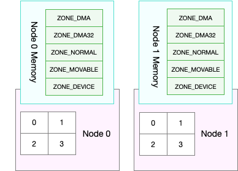
先不用特别关注这些内存域的具体含义，我们只要会查看阈值的配置，以及缓存、匿名页的实际使用情况就够了。
既然 NUMA 架构下的每个 Node 都有自己的本地内存空间，那么，在分析内存的使用时，我们也应该针对每个 Node 单独分析。
你可以通过 numactl 命令，来查看处理器在 Node 的分布情况，以及每个 Node 的内存使用情况。比如，下面就是一个 numactl 输出的示例：
$ numactl --hardware
available: 1 nodes (0)
node 0 cpus: 0 1
node 0 size: 7977 MB
node 0 free: 4416 MB
...
这个界面显示，我的系统中只有一个 Node，也就是 Node 0 ，而且编号为 0 和 1 的两个 CPU， 都位于 Node 0 上。另外，Node 0 的内存大小为 7977 MB，剩余内存为 4416 MB。
了解了 NUNA 的架构和 NUMA 内存的查看方法后，你可能就要问了这跟 Swap 有什么关系呢？
实际上，前面提到的三个内存阈值（页最小阈值、页低阈值和页高阈值），都可以通过内存域在 proc 文件系统中的接口 /proc/zoneinfo 来查看。
比如，下面就是一个 /proc/zoneinfo 文件的内容示例：
$ cat /proc/zoneinfo
...
Node 0, zone Normal
pages free 227894
min 14896
low 18620
high 22344
...
nr_free_pages 227894
nr_zone_inactive_anon 11082
nr_zone_active_anon 14024
nr_zone_inactive_file 539024
nr_zone_active_file 923986
...
这个输出中有大量指标，我来解释一下比较重要的几个。
- pages 处的 min、low、high，就是上面提到的三个内存阈值，而 free 是剩余内存页数，它跟后面的 nr_free_pages 相同。
- nr_zone_active_anon 和 nr_zone_inactive_anon，分别是活跃和非活跃的匿名页数。
- nr_zone_active_file 和 nr_zone_inactive_file，分别是活跃和非活跃的文件页数。
从这个输出结果可以发现，剩余内存远大于页高阈值，所以此时的 kswapd0 不会回收内存。
当然，某个 Node 内存不足时，系统可以从其他 Node 寻找空闲内存，也可以从本地内存中回收内存。具体选哪种模式，你可以通过 /proc/sys/vm/zone_reclaim_mode 来调整。它支持以下几个选项：
- 默认的 0 ，也就是刚刚提到的模式，表示既可以从其他 Node 寻找空闲内存，也可以从本地回收内存。
- 1、2、4 都表示只回收本地内存，2 表示可以回写脏数据回收内存，4 表示可以用 Swap 方式回收内存。
swappiness
到这里，我们就可以理解内存回收的机制了。这些回收的内存既包括了文件页，又包括了匿名页。
- 对文件页的回收，当然就是直接回收缓存，或者把脏页写回磁盘后再回收。
- 而对匿名页的回收，其实就是通过 Swap 机制，把它们写入磁盘后再释放内存。
不过，你可能还有一个问题。既然有两种不同的内存回收机制，那么在实际回收内存时，到底该先回收哪一种呢？
其实，Linux 提供了一个 /proc/sys/vm/swappiness 选项，用来调整使用 Swap 的积极程度。
swappiness 的范围是 0-100，数值越大，越积极使用 Swap，也就是更倾向于回收匿名页；数值越小，越消极使用 Swap，也就是更倾向于回收文件页。
虽然 swappiness 的范围是 0-100，不过要注意，这并不是内存的百分比，而是调整 Swap 积极程度的权重，即使你把它设置成 0，当剩余内存 + 文件页小于页高阈值时，还是会发生 Swap。
清楚了 Swap 原理后，当遇到 Swap 使用变高时，又该怎么定位、分析呢？别急，下一节，我们将用一个案例来探索实践。
小结
在内存资源紧张时，Linux 通过直接内存回收和定期扫描的方式，来释放文件页和匿名页，以便把内存分配给更需要的进程使用。
- 文件页的回收比较容易理解，直接清空，或者把脏数据写回磁盘后再释放。
- 而对匿名页的回收，需要通过 Swap 换出到磁盘中，下次访问时，再从磁盘换入到内存中。
你可以设置 /proc/sys/vm/min_free_kbytes，来调整系统定期回收内存的阈值（也就是页低阈值），还可以设置 /proc/sys/vm/swappiness，来调整文件页和匿名页的回收倾向。
在 NUMA 架构下，每个 Node 都有自己的本地内存空间，而当本地内存不足时，默认既可以从其他 Node 寻找空闲内存，也可以从本地内存回收。
你可以设置 /proc/sys/vm/zone_reclaim_mode ，来调整 NUMA 本地内存的回收策略。
思考
最后，我想请你一起来聊聊你理解的 SWAP。我估计你以前已经碰到过 Swap 导致的性能问题，你是怎么分析这些问题的呢？你可以结合今天讲的 Swap 原理，记录自己的操作步骤，总结自己的解决思路。
欢迎在留言区和我讨论，也欢迎把这篇文章分享给你的同事、朋友。我们一起在实战中演练，在交流中进步。
20 案例篇：为什么系统的Swap变高了？（下）
你好，我是倪朋飞。
上一节我们详细学习了 Linux 内存回收，特别是 Swap 的原理，先简单回顾一下。
在内存资源紧张时，Linux 通过直接内存回收和定期扫描的方式，来释放文件页和匿名页，以便把内存分配给更需要的进程使用。
- 文件页的回收比较容易理解，直接清空缓存，或者把脏数据写回磁盘后，再释放缓存就可以了。
- 而对不常访问的匿名页，则需要通过 Swap 换出到磁盘中，这样在下次访问的时候，再次从磁盘换入到内存中就可以了。
开启 Swap 后，你可以设置 /proc/sys/vm/min_free_kbytes ，来调整系统定期回收内存的阈值，也可以设置 /proc/sys/vm/swappiness ，来调整文件页和匿名页的回收倾向。
那么，当 Swap 使用升高时，要如何定位和分析呢？下面，我们就来看一个磁盘 I/O 的案例，实战分析和演练。
案例
下面案例基于 Ubuntu 18.04，同样适用于其他的 Linux 系统。
- 机器配置：2 CPU，8GB 内存
- 你需要预先安装 sysstat 等工具，如 apt install sysstat
首先，我们打开两个终端，分别 SSH 登录到两台机器上，并安装上面提到的这些工具。
同以前的案例一样，接下来的所有命令都默认以 root 用户运行，如果你是用普通用户身份登陆系统，请运行 sudo su root 命令切换到 root 用户。
如果安装过程中有什么问题，同样鼓励你先自己搜索解决，解决不了的，可以在留言区向我提问。
然后，在终端中运行 free 命令，查看 Swap 的使用情况。比如，在我的机器中，输出如下：
$ free
total used free shared buff/cache available
Mem: 8169348 331668 6715972 696 1121708 7522896
Swap: 0 0 0
从这个 free 输出你可以看到，Swap 的大小是 0，这说明我的机器没有配置 Swap。
为了继续 Swap 的案例， 就需要先配置、开启 Swap。如果你的环境中已经开启了 Swap，那你可以略过下面的开启步骤，继续往后走。
要开启 Swap，我们首先要清楚，Linux 本身支持两种类型的 Swap，即 Swap 分区和 Swap 文件。以 Swap 文件为例，在第一个终端中运行下面的命令开启 Swap，我这里配置 Swap 文件的大小为 8GB：
# 创建 Swap 文件
$ fallocate -l 8G /mnt/swapfile
# 修改权限只有根用户可以访问
$ chmod 600 /mnt/swapfile
# 配置 Swap 文件
$ mkswap /mnt/swapfile
# 开启 Swap
$ swapon /mnt/swapfile
然后，再执行 free 命令，确认 Swap 配置成功：
$ free
total used free shared buff/cache available
Mem: 8169348 331668 6715972 696 1121708 7522896
Swap: 8388604 0 8388604
现在，free 输出中，Swap 空间以及剩余空间都从 0 变成了 8GB，说明 Swap 已经正常开启。
接下来，我们在第一个终端中，运行下面的 dd 命令，模拟大文件的读取：
# 写入空设备，实际上只有磁盘的读请求
$ dd if=/dev/sda1 of=/dev/null bs=1G count=2048
接着，在第二个终端中运行 sar 命令，查看内存各个指标的变化情况。你可以多观察一会儿，查看这些指标的变化情况。
# 间隔 1 秒输出一组数据
# -r 表示显示内存使用情况，-S 表示显示 Swap 使用情况
$ sar -r -S 1
04:39:56 kbmemfree kbavail kbmemused %memused kbbuffers kbcached kbcommit %commit kbactive kbinact kbdirty
04:39:57 6249676 6839824 1919632 23.50 740512 67316 1691736 10.22 815156 841868 4
04:39:56 kbswpfree kbswpused %swpused kbswpcad %swpcad
04:39:57 8388604 0 0.00 0 0.00
04:39:57 kbmemfree kbavail kbmemused %memused kbbuffers kbcached kbcommit %commit kbactive kbinact kbdirty
04:39:58 6184472 6807064 1984836 24.30 772768 67380 1691736 10.22 847932 874224 20
04:39:57 kbswpfree kbswpused %swpused kbswpcad %swpcad
04:39:58 8388604 0 0.00 0 0.00
…
04:44:06 kbmemfree kbavail kbmemused %memused kbbuffers kbcached kbcommit %commit kbactive kbinact kbdirty
04:44:07 152780 6525716 8016528 98.13 6530440 51316 1691736 10.22 867124 6869332 0
04:44:06 kbswpfree kbswpused %swpused kbswpcad %swpcad
04:44:07 8384508 4096 0.05 52 1.27
我们可以看到，sar 的输出结果是两个表格，第一个表格表示内存的使用情况，第二个表格表示 Swap 的使用情况。其中，各个指标名称前面的 kb 前缀，表示这些指标的单位是 KB。
去掉前缀后，你会发现，大部分指标我们都已经见过了，剩下的几个新出现的指标，我来简单介绍一下。
- kbcommit，表示当前系统负载需要的内存。它实际上是为了保证系统内存不溢出，对需要内存的估计值。%commit，就是这个值相对总内存的百分比。
- kbactive，表示活跃内存，也就是最近使用过的内存，一般不会被系统回收。
- kbinact，表示非活跃内存，也就是不常访问的内存，有可能会被系统回收。
清楚了界面指标的含义后，我们再结合具体数值，来分析相关的现象。你可以清楚地看到，总的内存使用率（%memused）在不断增长，从开始的 23% 一直长到了 98%，并且主要内存都被缓冲区（kbbuffers）占用。具体来说：
- 刚开始，剩余内存（kbmemfree）不断减少，而缓冲区（kbbuffers）则不断增大，由此可知，剩余内存不断分配给了缓冲区。
- 一段时间后，剩余内存已经很小，而缓冲区占用了大部分内存。这时候，Swap 的使用开始逐渐增大，缓冲区和剩余内存则只在小范围内波动。
你可能困惑了，为什么缓冲区在不停增大？这又是哪些进程导致的呢？
显然，我们还得看看进程缓存的情况。在前面缓存的案例中我们学过， cachetop 正好能满足这一点。那我们就来 cachetop 一下。
在第二个终端中，按下 Ctrl+C 停止 sar 命令，然后运行下面的 cachetop 命令，观察缓存的使用情况：
$ cachetop 5
12:28:28 Buffers MB: 6349 / Cached MB: 87 / Sort: HITS / Order: ascending
PID UID CMD HITS MISSES DIRTIES READ_HIT% WRITE_HIT%
18280 root python 22 0 0 100.0% 0.0%
18279 root dd 41088 41022 0 50.0% 50.0%
通过 cachetop 的输出，我们看到，dd 进程的读写请求只有 50% 的命中率，并且未命中的缓存页数（MISSES）为 41022（单位是页）。这说明，正是案例开始时运行的 dd，导致了缓冲区使用升高。
你可能接着会问，为什么 Swap 也跟着升高了呢？直观来说，缓冲区占了系统绝大部分内存，还属于可回收内存，内存不够用时，不应该先回收缓冲区吗？
这种情况，我们还得进一步通过 /proc/zoneinfo ，观察剩余内存、内存阈值以及匿名页和文件页的活跃情况。
你可以在第二个终端中，按下 Ctrl+C，停止 cachetop 命令。然后运行下面的命令，观察 /proc/zoneinfo 中这几个指标的变化情况：
# -d 表示高亮变化的字段
# -A 表示仅显示 Normal 行以及之后的 15 行输出
$ watch -d grep -A 15 'Normal' /proc/zoneinfo
Node 0, zone Normal
pages free 21328
min 14896
low 18620
high 22344
spanned 1835008
present 1835008
managed 1796710
protection: (0, 0, 0, 0, 0)
nr_free_pages 21328
nr_zone_inactive_anon 79776
nr_zone_active_anon 206854
nr_zone_inactive_file 918561
nr_zone_active_file 496695
nr_zone_unevictable 2251
nr_zone_write_pending 0
你可以发现，剩余内存（pages_free）在一个小范围内不停地波动。当它小于页低阈值（pages_low) 时，又会突然增大到一个大于页高阈值（pages_high）的值。
再结合刚刚用 sar 看到的剩余内存和缓冲区的变化情况，我们可以推导出，剩余内存和缓冲区的波动变化，正是由于内存回收和缓存再次分配的循环往复。
- 当剩余内存小于页低阈值时，系统会回收一些缓存和匿名内存，使剩余内存增大。其中，缓存的回收导致 sar 中的缓冲区减小，而匿名内存的回收导致了 Swap 的使用增大。
- 紧接着，由于 dd 还在继续，剩余内存又会重新分配给缓存，导致剩余内存减少，缓冲区增大。
其实还有一个有趣的现象，如果多次运行 dd 和 sar，你可能会发现，在多次的循环重复中，有时候是 Swap 用得比较多，有时候 Swap 很少，反而缓冲区的波动更大。
换句话说，系统回收内存时，有时候会回收更多的文件页，有时候又回收了更多的匿名页。
显然，系统回收不同类型内存的倾向，似乎不那么明显。你应该想到了上节课提到的 swappiness，正是调整不同类型内存回收的配置选项。
还是在第二个终端中，按下 Ctrl+C 停止 watch 命令，然后运行下面的命令，查看 swappiness 的配置：
$ cat /proc/sys/vm/swappiness
60
swappiness 显示的是默认值 60，这是一个相对中和的配置，所以系统会根据实际运行情况，选择合适的回收类型，比如回收不活跃的匿名页，或者不活跃的文件页。
到这里，我们已经找出了 Swap 发生的根源。另一个问题就是，刚才的 Swap 到底影响了哪些应用程序呢？换句话说，Swap 换出的是哪些进程的内存？
这里我还是推荐 proc 文件系统，用来查看进程 Swap 换出的虚拟内存大小，它保存在 /proc/pid/status 中的 VmSwap 中（推荐你执行 man proc 来查询其他字段的含义）。
在第二个终端中运行下面的命令，就可以查看使用 Swap 最多的进程。注意 for、awk、sort 都是最常用的 Linux 命令，如果你还不熟悉，可以用 man 来查询它们的手册，或上网搜索教程来学习。
# 按 VmSwap 使用量对进程排序，输出进程名称、进程 ID 以及 SWAP 用量
$ for file in /proc/*/status ; do awk '/VmSwap|Name|^Pid/{printf $2 " " $3}END{ print ""}' $file; done | sort -k 3 -n -r | head
dockerd 2226 10728 kB
docker-containe 2251 8516 kB
snapd 936 4020 kB
networkd-dispat 911 836 kB
polkitd 1004 44 kB
从这里你可以看到，使用 Swap 比较多的是 dockerd 和 docker-containe 进程，所以，当 dockerd 再次访问这些换出到磁盘的内存时，也会比较慢。
这也说明了一点，虽然缓存属于可回收内存，但在类似大文件拷贝这类场景下，系统还是会用 Swap 机制来回收匿名内存，而不仅仅是回收占用绝大部分内存的文件页。
最后，如果你在一开始配置了 Swap，不要忘记在案例结束后关闭。你可以运行下面的命令，关闭 Swap：
$ swapoff -a
实际上，关闭 Swap 后再重新打开，也是一种常用的 Swap 空间清理方法，比如：
$ swapoff -a && swapon -a
小结
在内存资源紧张时，Linux 会通过 Swap ，把不常访问的匿名页换出到磁盘中，下次访问的时候再从磁盘换入到内存中来。你可以设置 /proc/sys/vm/min_free_kbytes，来调整系统定期回收内存的阈值；也可以设置 /proc/sys/vm/swappiness，来调整文件页和匿名页的回收倾向。
当 Swap 变高时，你可以用 sar、/proc/zoneinfo、/proc/pid/status 等方法，查看系统和进程的内存使用情况，进而找出 Swap 升高的根源和受影响的进程。
反过来说，通常，降低 Swap 的使用，可以提高系统的整体性能。要怎么做呢？这里，我也总结了几种常见的降低方法。
- 禁止 Swap，现在服务器的内存足够大，所以除非有必要，禁用 Swap 就可以了。随着云计算的普及，大部分云平台中的虚拟机都默认禁止 Swap。
- 如果实在需要用到 Swap，可以尝试降低 swappiness 的值，减少内存回收时 Swap 的使用倾向。
- 响应延迟敏感的应用，如果它们可能在开启 Swap 的服务器中运行，你还可以用库函数 mlock() 或者 mlockall() 锁定内存，阻止它们的内存换出。
思考
最后，给你留一个思考题。
今天的案例中，swappiness 使用的是默认配置的 60。如果把它配置成 0 的话，还会发生 Swap 吗？这又是为什么呢？
希望你可以实际操作一下，重点观察 sar 的输出，并结合今天的内容来记录、总结。
欢迎留言和我讨论，也欢迎把这篇文章分享给你的同事、朋友。我们一起在实战中演练，在交流中进步。
21 套路篇：如何“快准狠”找到系统内存的问题？
你好，我是倪朋飞。
前几节，通过几个案例，我们分析了各种常见的内存性能问题。我相信通过它们，你对内存的性能分析已经有了基本的思路，也熟悉了很多分析内存性能的工具。你肯定会想，有没有迅速定位内存问题的方法？当定位出内存的瓶颈后，又有哪些优化内存的思路呢？
今天，我就来帮你梳理一下，怎样可以快速定位系统内存，并且总结了相关的解决思路。
内存性能指标
为了分析内存的性能瓶颈，首先你要知道，怎样衡量内存的性能，也就是性能指标问题。我们先来回顾一下，前几节学过的内存性能指标。
你可以自己先找张纸，凭着记忆写一写；或者打开前面的文章，自己总结一下。
首先，你最容易想到的是系统内存使用情况，比如已用内存、剩余内存、共享内存、可用内存、缓存和缓冲区的用量等。
- 已用内存和剩余内存很容易理解，就是已经使用和还未使用的内存。
- 共享内存是通过 tmpfs 实现的，所以它的大小也就是 tmpfs 使用的内存大小。tmpfs 其实也是一种特殊的缓存。
- 可用内存是新进程可以使用的最大内存，它包括剩余内存和可回收缓存。
- 缓存包括两部分，一部分是磁盘读取文件的页缓存，用来缓存从磁盘读取的数据，可以加快以后再次访问的速度。另一部分，则是 Slab 分配器中的可回收内存。
- 缓冲区是对原始磁盘块的临时存储，用来缓存将要写入磁盘的数据。这样，内核就可以把分散的写集中起来，统一优化磁盘写入。
第二类很容易想到的，应该是进程内存使用情况，比如进程的虚拟内存、常驻内存、共享内存以及 Swap 内存等。
- 虚拟内存，包括了进程代码段、数据段、共享内存、已经申请的堆内存和已经换出的内存等。这里要注意，已经申请的内存，即使还没有分配物理内存，也算作虚拟内存。
- 常驻内存是进程实际使用的物理内存，不过，它不包括 Swap 和共享内存。
- 共享内存，既包括与其他进程共同使用的真实的共享内存，还包括了加载的动态链接库以及程序的代码段等。
- Swap 内存，是指通过 Swap 换出到磁盘的内存。
当然，这些指标中，常驻内存一般会换算成占系统总内存的百分比，也就是进程的内存使用率。
除了这些很容易想到的指标外，我还想再强调一下，缺页异常。
在内存分配的原理中，我曾经讲到过，系统调用内存分配请求后，并不会立刻为其分配物理内存，而是在请求首次访问时，通过缺页异常来分配。缺页异常又分为下面两种场景。
- 可以直接从物理内存中分配时，被称为次缺页异常。
- 需要磁盘 I/O 介入（比如 Swap）时，被称为主缺页异常。
显然，主缺页异常升高，就意味着需要磁盘 I/O，那么内存访问也会慢很多。
除了系统内存和进程内存，第三类重要指标就是 Swap 的使用情况，比如 Swap 的已用空间、剩余空间、换入速度和换出速度等。
- 已用空间和剩余空间很好理解，就是字面上的意思，已经使用和没有使用的内存空间。
- 换入和换出速度，则表示每秒钟换入和换出内存的大小。
这些内存的性能指标都需要我们熟记并且会用，我把它们汇总成了一个思维导图，你可以保存打印出来，或者自己仿照着总结一份。
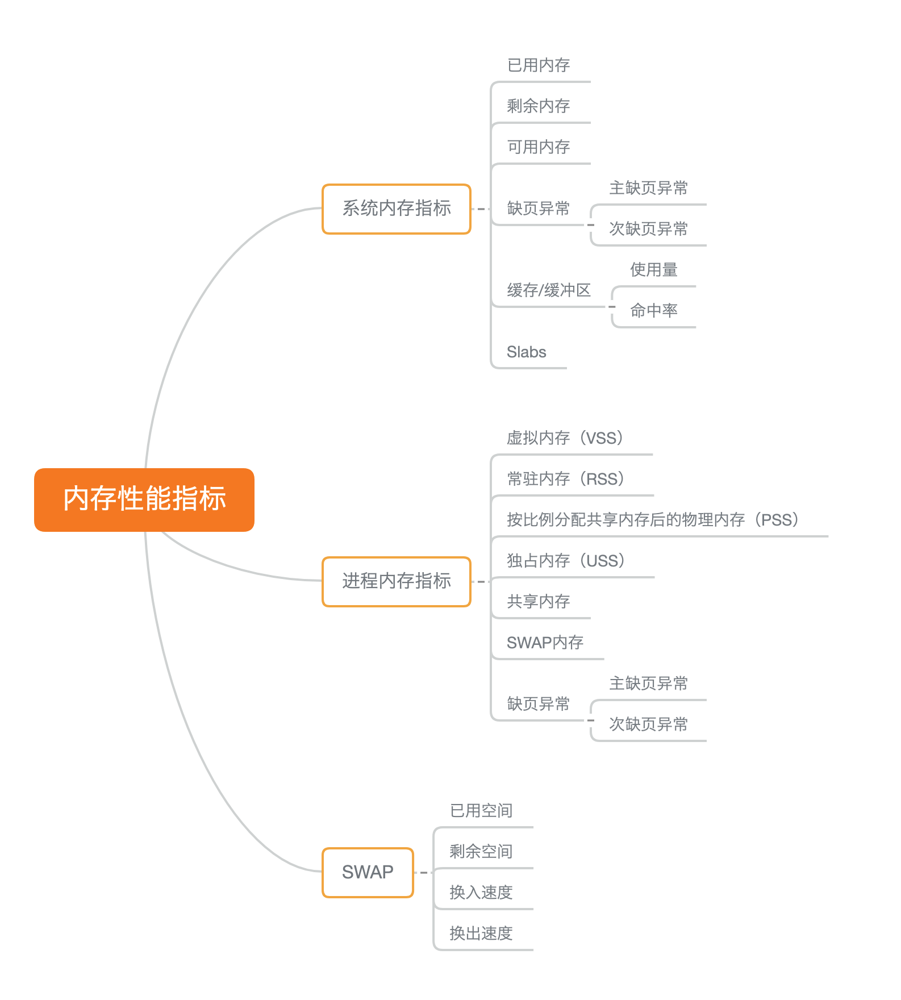
内存性能工具
了解了内存的性能指标，我们还得知道，怎么才能获得这些指标，也就是会用性能工具。这里，我们也用同样的方法，回顾一下前面案例中已经用到的各种内存性能工具。 还是鼓励你先自己回忆和总结一下。
首先，你应该注意到了，所有的案例中都用到了 free。这是个最常用的内存工具，可以查看系统的整体内存和 Swap 使用情况。相对应的，你可以用 top 或 ps，查看进程的内存使用情况。
然后，在缓存和缓冲区的原理篇中，我们通过 proc 文件系统，找到了内存指标的来源；并通过 vmstat，动态观察了内存的变化情况。与 free 相比，vmstat 除了可以动态查看内存变化，还可以区分缓存和缓冲区、Swap 换入和换出的内存大小。
接着，在缓存和缓冲区的案例篇中，为了弄清楚缓存的命中情况，我们又用了 cachestat ，查看整个系统缓存的读写命中情况，并用 cachetop 来观察每个进程缓存的读写命中情况。
再接着，在内存泄漏的案例中，我们用 vmstat，发现了内存使用在不断增长，又用 memleak，确认发生了内存泄漏。通过 memleak 给出的内存分配栈，我们找到了内存泄漏的可疑位置。
最后，在 Swap 的案例中，我们用 sar 发现了缓冲区和 Swap 升高的问题。通过 cachetop，我们找到了缓冲区升高的根源；通过对比剩余内存跟 /proc/zoneinfo 的内存阈，我们发现 Swap 升高是内存回收导致的。案例最后，我们还通过 /proc 文件系统，找出了 Swap 所影响的进程。
到这里，你是不是再次感觉到了来自性能世界的“恶意”。性能工具怎么那么多呀？其实，还是那句话，理解内存的工作原理，结合性能指标来记忆，拿下工具的使用方法并不难。
性能指标和工具的联系
同 CPU 性能分析一样，我的经验是两个不同维度出发，整理和记忆。
- 从内存指标出发，更容易把工具和内存的工作原理关联起来。
- 从性能工具出发，可以更快地利用工具，找出我们想观察的性能指标。特别是在工具有限的情况下，我们更得充分利用手头的每一个工具，挖掘出更多的问题。
同样的，根据内存性能指标和工具的对应关系，我做了两个表格，方便你梳理关系和理解记忆。当然，你也可以当成“指标工具”和“工具指标”指南来用，在需要时直接查找。
第一个表格，从内存指标出发，列举了哪些性能工具可以提供这些指标。这样，在实际排查性能问题时，你就可以清楚知道，究竟要用什么工具来辅助分析，提供你想要的指标。
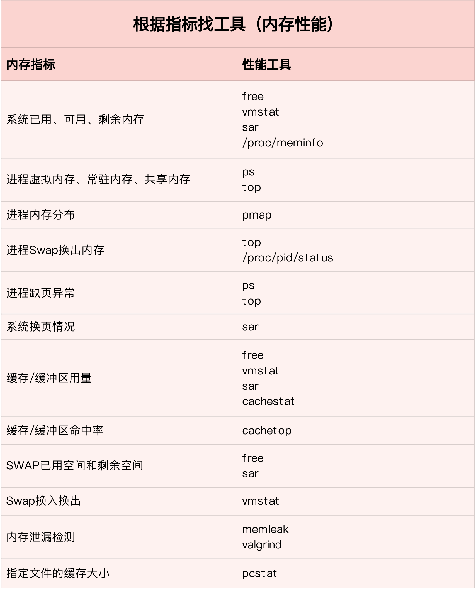
第二个表格，从性能工具出发，整理了这些常见工具能提供的内存指标。掌握了这个表格，你可以最大化利用已有的工具，尽可能多地找到你要的指标。
这些工具的具体使用方法并不用背，你只要知道有哪些可用的工具，以及这些工具提供的基本指标。真正用到时， man 一下查它们的使用手册就可以了。
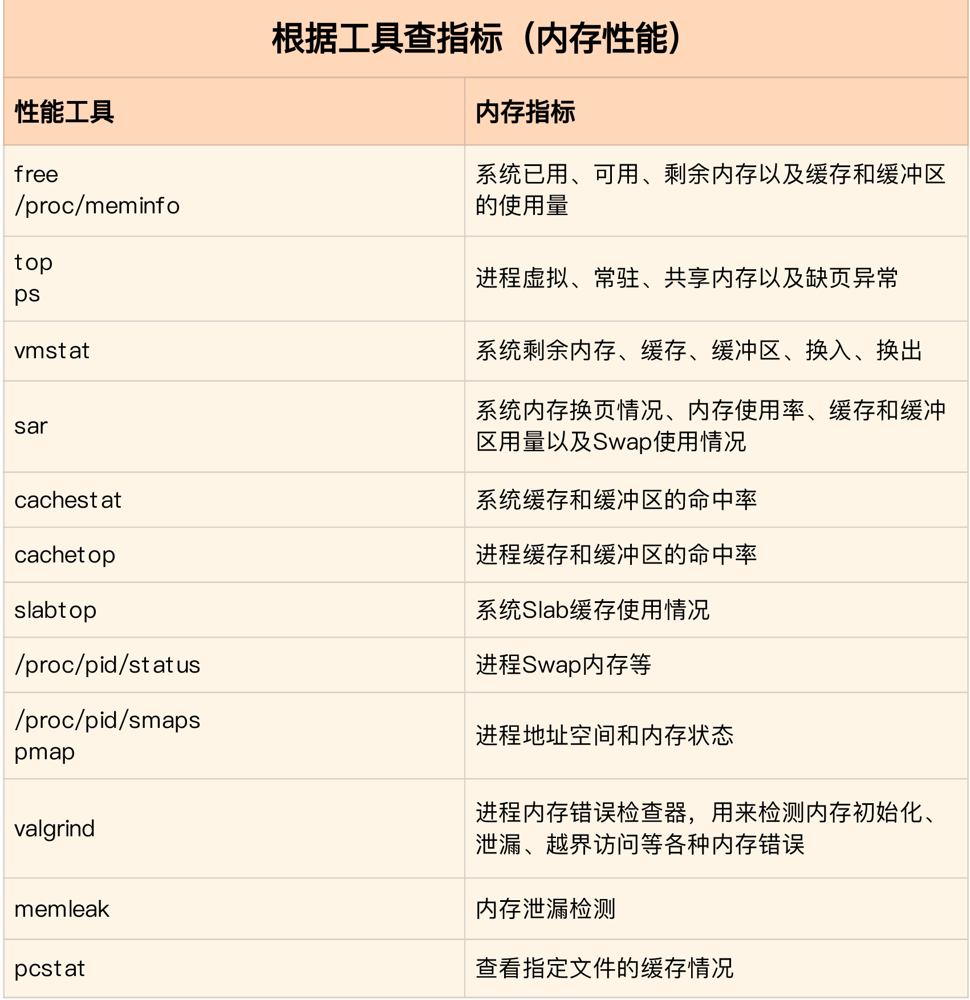
如何迅速分析内存的性能瓶颈
我相信到这一步，你对内存的性能指标已经非常熟悉，也清楚每种性能指标分别能用什么工具来获取。
那是不是说，每次碰到内存性能问题，你都要把上面这些工具全跑一遍，然后再把所有内存性能指标全分析一遍呢？
自然不是。前面的 CPU 性能篇我们就说过，简单查找法，虽然是有用的，也很可能找到某些系统潜在瓶颈。但是这种方法的低效率和大工作量，让我们首先拒绝了这种方法。
还是那句话，在实际生产环境中，我们希望的是，尽可能快地定位系统瓶颈，然后尽可能快地优化性能，也就是要又快又准地解决性能问题。
那有没有什么方法，可以又快又准地分析出系统的内存问题呢？
方法当然有。还是那个关键词，找关联。其实，虽然内存的性能指标很多，但都是为了描述内存的原理，指标间自然不会完全孤立，一般都会有关联。当然，反过来说，这些关联也正是源于系统的内存原理，这也是我总强调基础原理的重要性，并在文章中穿插讲解。
举个最简单的例子，当你看到系统的剩余内存很低时，是不是就说明，进程一定不能申请分配新内存了呢？当然不是，因为进程可以使用的内存，除了剩余内存，还包括了可回收的缓存和缓冲区。
所以，为了迅速定位内存问题，我通常会先运行几个覆盖面比较大的性能工具，比如 free、top、vmstat、pidstat 等。
具体的分析思路主要有这几步。
- 先用 free 和 top，查看系统整体的内存使用情况。
- 再用 vmstat 和 pidstat，查看一段时间的趋势，从而判断出内存问题的类型。
- 最后进行详细分析，比如内存分配分析、缓存 / 缓冲区分析、具体进程的内存使用分析等。
同时，我也把这个分析过程画成了一张流程图，你可以保存并打印出来使用。
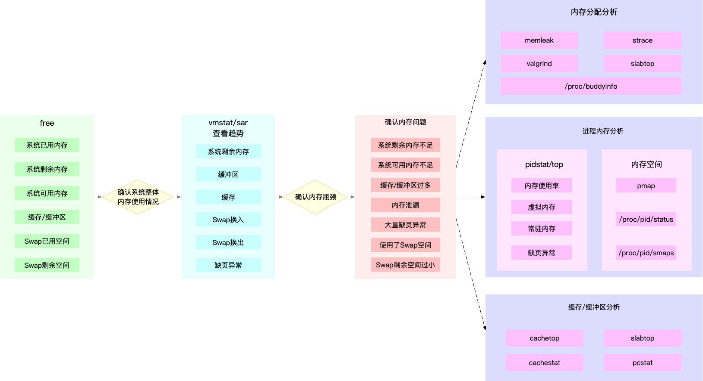
图中列出了最常用的几个内存工具，和相关的分析流程。其中，箭头表示分析的方向，举几个例子你可能会更容易理解。
第一个例子，当你通过 free，发现大部分内存都被缓存占用后，可以使用 vmstat 或者 sar 观察一下缓存的变化趋势，确认缓存的使用是否还在继续增大。
如果继续增大，则说明导致缓存升高的进程还在运行，那你就能用缓存 / 缓冲区分析工具（比如 cachetop、slabtop 等），分析这些缓存到底被哪里占用。
第二个例子，当你 free 一下，发现系统可用内存不足时，首先要确认内存是否被缓存 / 缓冲区占用。排除缓存 / 缓冲区后，你可以继续用 pidstat 或者 top，定位占用内存最多的进程。
找出进程后，再通过进程内存空间工具（比如 pmap），分析进程地址空间中内存的使用情况就可以了。
第三个例子，当你通过 vmstat 或者 sar 发现内存在不断增长后，可以分析中是否存在内存泄漏的问题。
比如你可以使用内存分配分析工具 memleak ，检查是否存在内存泄漏。如果存在内存泄漏问题，memleak 会为你输出内存泄漏的进程以及调用堆栈。
注意，这个图里我没有列出所有性能工具，只给出了最核心的几个。这么做，一方面，确实不想让大量的工具列表吓到你。
另一方面，希望你能把重心先放在核心工具上，通过我提供的案例和真实环境的实践，掌握使用方法和分析思路。 毕竟熟练掌握它们，你就可以解决大多数的内存问题。
小结
在今天的文章中，我带你回顾了常见的内存性能指标，梳理了常见的内存性能分析工具，最后还总结了快速分析内存问题的思路。
虽然内存的性能指标和性能工具都挺多，但理解了内存管理的基本原理后，你会发现它们其实都有一定的关联。梳理出它们的关系，掌握内存分析的套路并不难。
找到内存问题的来源后，下一步就是相应的优化工作了。在我看来，内存调优最重要的就是，保证应用程序的热点数据放到内存中，并尽量减少换页和交换。
常见的优化思路有这么几种。
- 最好禁止 Swap。如果必须开启 Swap，降低 swappiness 的值，减少内存回收时 Swap 的使用倾向。
- 减少内存的动态分配。比如，可以使用内存池、大页（HugePage）等。
- 尽量使用缓存和缓冲区来访问数据。比如，可以使用堆栈明确声明内存空间，来存储需要缓存的数据；或者用 Redis 这类的外部缓存组件，优化数据的访问。
- 使用 cgroups 等方式限制进程的内存使用情况。这样，可以确保系统内存不会被异常进程耗尽。
- 通过 /proc/pid/oom_adj ，调整核心应用的 oom_score。这样，可以保证即使内存紧张，核心应用也不会被 OOM 杀死。
思考
由于篇幅限制，我在这里只列举了一些我认为的重要内存指标和分析思路。我想，你肯定也碰到过很多内存相关的性能问题。所以，我想请你来聊一聊，你处理过的内存性能问题，你是怎样分析它的瓶颈并解决的呢？这个过程中，遇到了什么坑，或者有什么重要收获吗？
欢迎在留言区跟我讨论，也欢迎把这篇文章分享给你的同事、朋友。我们一起在实战中演练，在交流中进步。
22 Linux 性能优化答疑（三）
你好，我是倪朋飞。
专栏更新至今，四大基础模块的第二个模块——内存性能篇，我们就已经学完了。很开心你还没有掉队，仍然在积极学习和实践操作，并且热情地留言与讨论。
这些留言中，我非常高兴看到，很多同学用学过的案例思路，解决了实际工作中的性能问题。我也非常感谢 espzest、大甜菜、Smile 等积极思考的同学，指出了文章中某些不当或者不严谨的地方。另外，还有我来也、JohnT3e、白华等同学，积极在留言区讨论学习和实践中的问题，也分享了宝贵的经验，在这里也非常感谢你们。
今天是性能优化的第三期。照例，我从内存模块的留言中摘出了一些典型问题，作为今天的答疑内容，集中回复。为了便于你学习理解，它们并不是严格按照文章顺序排列的。
每个问题，我都附上了留言区提问的截屏。如果你需要回顾内容原文，可以扫描每个问题右下方的二维码查看。
问题 1：内存回收与 OOM
虎虎的这个问题，实际上包括四个子问题，即，
- 怎么理解 LRU 内存回收？
- 回收后的内存又到哪里去了？
- OOM 是按照虚拟内存还是实际内存来打分？
- 怎么估计应用程序的最小内存？
其实在 Linux [内存的原理篇]和 [Swap 原理篇]中我曾经讲到，一旦发现内存紧张，系统会通过三种方式回收内存。我们来复习一下，这三种方式分别是 ：
- 基于 LRU（Least Recently Used）算法，回收缓存；
- 基于 Swap 机制，回收不常访问的匿名页；
- 基于 OOM（Out of Memory）机制，杀掉占用大量内存的进程。
前两种方式，缓存回收和 Swap 回收，实际上都是基于 LRU 算法，也就是优先回收不常访问的内存。LRU 回收算法，实际上维护着 active 和 inactive 两个双向链表，其中：
- active 记录活跃的内存页；
- inactive 记录非活跃的内存页。
越接近链表尾部，就表示内存页越不常访问。这样，在回收内存时，系统就可以根据活跃程度，优先回收不活跃的内存。
活跃和非活跃的内存页，按照类型的不同，又分别分为文件页和匿名页，对应着缓存回收和 Swap 回收。
当然，你可以从 /proc/meminfo 中，查询它们的大小，比如：
# grep 表示只保留包含 active 的指标（忽略大小写）
# sort 表示按照字母顺序排序
$ cat /proc/meminfo | grep -i active | sort
Active(anon): 167976 kB
Active(file): 971488 kB
Active: 1139464 kB
Inactive(anon): 720 kB
Inactive(file): 2109536 kB
Inactive: 2110256 kB
第三种方式，OOM 机制按照 oom_score 给进程排序。oom_score 越大，进程就越容易被系统杀死。
当系统发现内存不足以分配新的内存请求时，就会尝试[直接内存回收]。这种情况下，如果回收完文件页和匿名页后，内存够用了，当然皆大欢喜，把回收回来的内存分配给进程就可以了。但如果内存还是不足，OOM 就要登场了。
OOM 发生时，你可以在 dmesg 中看到 Out of memory 的信息，从而知道是哪些进程被 OOM 杀死了。比如，你可以执行下面的命令，查询 OOM 日志：
$ dmesg | grep -i "Out of memory"
Out of memory: Kill process 9329 (java) score 321 or sacrifice child
当然了，如果你不希望应用程序被 OOM 杀死，可以调整进程的 oom_score_adj，减小 OOM 分值，进而降低被杀死的概率。或者，你还可以开启内存的 overcommit，允许进程申请超过物理内存的虚拟内存（这儿实际上假设的是，进程不会用光申请到的虚拟内存）。
这三种方式，我们就复习完了。接下来，我们回到开始的四个问题，相信你自己已经有了答案。
- LRU 算法的原理刚才已经提到了，这里不再重复。
- 内存回收后，会被重新放到未使用内存中。这样，新的进程就可以请求、使用它们。
- OOM 触发的时机基于虚拟内存。换句话说，进程在申请内存时，如果申请的虚拟内存加上服务器实际已用的内存之和，比总的物理内存还大，就会触发 OOM。
- 要确定一个进程或者容器的最小内存，最简单的方法就是让它运行起来，再通过 ps 或者 smap ，查看它的内存使用情况。不过要注意，进程刚启动时，可能还没开始处理实际业务，一旦开始处理实际业务，就会占用更多内存。所以，要记得给内存留一定的余量。
问题 2: 文件系统与磁盘的区别
文件系统和磁盘的原理，我将在下一个模块中讲解，它们跟内存的关系也十分密切。不过，在学习 Buffer 和 Cache 的原理时，我曾提到，Buffer 用于磁盘，而 Cache 用于文件。因此，有不少同学困惑了，比如 JJ 留言中的这两个问题。
- 读写文件最终也是读写磁盘，到底要怎么区分，是读写文件还是读写磁盘呢？
- 读写磁盘难道可以不经过文件系统吗？
如果你也有相同的疑问，主要还是没搞清楚，磁盘和文件的区别。我在“[怎么理解内存中的 Buffer 和 Cache]”文章的留言区简单回复过，不过担心有同学没有看到，所以在这里重新讲一下。
磁盘是一个存储设备（确切地说是块设备），可以被划分为不同的磁盘分区。而在磁盘或者磁盘分区上，还可以再创建文件系统，并挂载到系统的某个目录中。这样，系统就可以通过这个挂载目录，来读写文件。
换句话说，磁盘是存储数据的块设备，也是文件系统的载体。所以，文件系统确实还是要通过磁盘，来保证数据的持久化存储。
你在很多地方都会看到这句话， Linux 中一切皆文件。换句话说，你可以通过相同的文件接口，来访问磁盘和文件（比如 open、read、write、close 等）。
- 我们通常说的“文件”，其实是指普通文件。
- 而磁盘或者分区，则是指块设备文件。
你可以执行 “ls -l < 路径 >” 查看它们的区别。如果不懂 ls 输出的含义，别忘了 man 一下就可以。执行 man ls 命令，以及 info ‘(coreutils) ls invocation’ 命令，就可以查到了。
在读写普通文件时，I/O 请求会首先经过文件系统，然后由文件系统负责，来与磁盘进行交互。而在读写块设备文件时，会跳过文件系统，直接与磁盘交互，也就是所谓的“裸 I/O”。
这两种读写方式使用的缓存自然不同。文件系统管理的缓存，其实就是 Cache 的一部分。而裸磁盘的缓存，用的正是 Buffer。
更多关于文件系统、磁盘以及 I/O 的原理，你先不要着急，往后我们都会讲到。
问题 3: 如何统计所有进程的物理内存使用量
这其实是 [怎么理解内存中的 Buffer 和 Cache] 的课后思考题，无名老卒、Griffin、JohnT3e 等少数几个同学，都给出了一些思路。
比如，无名老卒同学的方法，是把所有进程的 RSS 全部累加：
这种方法，实际上导致不少地方会被重复计算。RSS 表示常驻内存，把进程用到的共享内存也算了进去。所以，直接累加会导致共享内存被重复计算，不能得到准确的答案。
留言中好几个同学的答案都有类似问题。你可以重新检查一下自己的方法，弄清楚每个指标的定义和原理，防止重复计算。
当然，也有同学的思路非常正确，比如 JohnT3e 提到的，这个问题的关键在于理解 PSS 的含义。
你当然可以通过 stackexchange 上的链接找到答案，不过，我还是更推荐，直接查 proc 文件系统的文档：
The “proportional set size” (PSS) of a process is the count of pages it has in memory, where each page is divided by the number of processes sharing it. So if a process has 1000 pages all to itself, and 1000 shared with one other process, its PSS will be 1500.
这里我简单解释一下，每个进程的 PSS ，是指把共享内存平分到各个进程后，再加上进程本身的非共享内存大小的和。
就像文档中的这个例子，一个进程的非共享内存为 1000 页，它和另一个进程的共享进程也是 1000 页，那么它的 PSS=1000/2+1000=1500 页。
这样，你就可以直接累加 PSS ，不用担心共享内存重复计算的问题了。
比如，你可以运行下面的命令来计算：
# 使用 grep 查找 Pss 指标后，再用 awk 计算累加值
$ grep Pss /proc/[1-9]*/smaps | awk '{total+=$2}; END {printf "%d kB\n", total }'
391266 kB
问题 4: CentOS 系统中如何安装 bcc-tools
很多同学留言说用的是 CentOS 系统。虽然我在文章中也给出了一个参考文档，不过 bcc-tools 工具安装起来还是有些困难。
比如白华同学留言表示，网络上的教程不太完整，步骤有些乱：
不过，白华和渡渡鸟 _linux 同学在探索实践后，留言分享了他们的经验，感谢你们的分享。
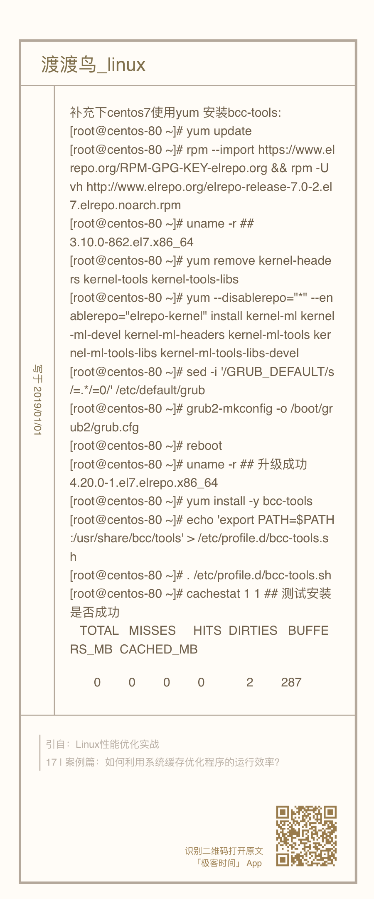
在这里，我也统一回复一下，在 CentOS 中安装 bcc-tools 的步骤。以 CentOS 7 为例，整个安装主要可以分两步。
第一步，升级内核。你可以运行下面的命令来操作：
# 升级系统
yum update -y
# 安装 ELRepo
rpm --import https://www.elrepo.org/RPM-GPG-KEY-elrepo.org
rpm -Uvh https://www.elrepo.org/elrepo-release-7.0-3.el7.elrepo.noarch.rpm
# 安装新内核
yum remove -y kernel-headers kernel-tools kernel-tools-libs
yum --enablerepo="elrepo-kernel" install -y kernel-ml kernel-ml-devel kernel-ml-headers kernel-ml-tools kernel-ml-tools-libs kernel-ml-tools-libs-devel
# 更新 Grub 后重启
grub2-mkconfig -o /boot/grub2/grub.cfg
grub2-set-default 0
reboot
# 重启后确认内核版本已升级为 4.20.0-1.el7.elrepo.x86_64
uname -r
第二步，安装 bcc-tools：
# 安装 bcc-tools
yum install -y bcc-tools
# 配置 PATH 路径
export PATH=$PATH:/usr/share/bcc/tools
# 验证安装成功
cachestat
问题 5: 内存泄漏案例的优化方法
这是我在 [内存泄漏了，我该如何定位和处理] 中留的一个思考题。这个问题是这样的：
在内存泄漏案例的最后，我们通过增加 free() 调用，释放了函数 fibonacci() 分配的内存，修复了内存泄漏的问题。就这个案例而言，还有没有其他更好的修复方法呢？
很多同学留言写下了自己的想法，都很不错。这里，我重点表扬下郭江伟同学，他给出的方法非常好：
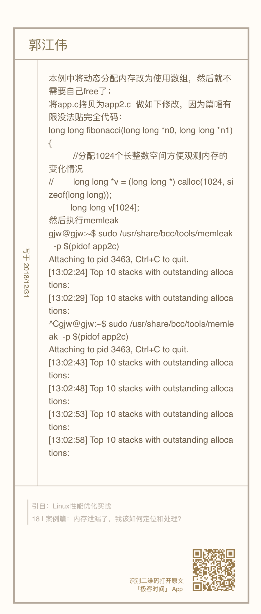
他的思路是不用动态内存分配的方法，而是用数组来暂存计算结果。这样就可以由系统自动管理这些栈内存，也不存在内存泄漏的问题了。
这种减少动态内存分配的思路，除了可以解决内存泄漏问题，其实也是常用的内存优化方法。比如，在需要大量内存的场景中，你就可以考虑用栈内存、内存池、HugePage 等方法，来优化内存的分配和管理。
除了这五个问题，还有一点我也想说一下。很多同学在说工具的版本问题，的确，生产环境中的 Linux 版本往往都比较低，导致很多新工具不能在生产环境中直接使用。
不过，这并不代表我们就无能为力了。毕竟，系统的原理都是大同小异的。这其实也是我一直强调的观点。
- 在学习时，最好先用最新的系统和工具，它们可以为你提供更简单直观的结果，帮你更好的理解系统的原理。
- 在你掌握了这些原理后，回过头来，再去理解旧版本系统中的工具和原理，你会发现，即便旧版本中的很多工具并不是那么好用，但是原理和指标是类似的，你依然可以轻松掌握它们的使用方法。
最后，欢迎继续在留言区写下你的疑问，我会持续不断地解答。我的目的不变，希望可以和你一起，把文章的知识变成你的能力，我们不仅仅在实战中演练，也要在交流中进步。
23 基础篇：Linux 文件系统是怎么工作的？
你好，我是倪朋飞。
通过前面 CPU 和内存模块的学习，我相信，你已经掌握了 CPU 和内存的性能分析以及优化思路。从这一节开始，我们将进入下一个重要模块——文件系统和磁盘的 I/O 性能。
同 CPU、内存一样，磁盘和文件系统的管理，也是操作系统最核心的功能。
- 磁盘为系统提供了最基本的持久化存储。
- 文件系统则在磁盘的基础上，提供了一个用来管理文件的树状结构。
那么，磁盘和文件系统是怎么工作的呢？又有哪些指标可以衡量它们的性能呢？
今天，我就带你先来看看，Linux 文件系统的工作原理。磁盘的工作原理，我们下一节再来学习。
索引节点和目录项
文件系统，本身是对存储设备上的文件，进行组织管理的机制。组织方式不同，就会形成不同的文件系统。
你要记住最重要的一点，在 Linux 中一切皆文件。不仅普通的文件和目录，就连块设备、套接字、管道等，也都要通过统一的文件系统来管理。
为了方便管理，Linux 文件系统为每个文件都分配两个数据结构，索引节点（index node）和目录项（directory entry）。它们主要用来记录文件的元信息和目录结构。
- 索引节点，简称为 inode，用来记录文件的元数据，比如 inode 编号、文件大小、访问权限、修改日期、数据的位置等。索引节点和文件一一对应，它跟文件内容一样，都会被持久化存储到磁盘中。所以记住，索引节点同样占用磁盘空间。
- 目录项，简称为 dentry，用来记录文件的名字、索引节点指针以及与其他目录项的关联关系。多个关联的目录项，就构成了文件系统的目录结构。不过，不同于索引节点，目录项是由内核维护的一个内存数据结构，所以通常也被叫做目录项缓存。
换句话说，索引节点是每个文件的唯一标志，而目录项维护的正是文件系统的树状结构。目录项和索引节点的关系是多对一，你可以简单理解为，一个文件可以有多个别名。
举个例子，通过硬链接为文件创建的别名，就会对应不同的目录项，不过这些目录项本质上还是链接同一个文件，所以，它们的索引节点相同。
索引节点和目录项纪录了文件的元数据，以及文件间的目录关系，那么具体来说，文件数据到底是怎么存储的呢？是不是直接写到磁盘中就好了呢？
实际上，磁盘读写的最小单位是扇区，然而扇区只有 512B 大小，如果每次都读写这么小的单位，效率一定很低。所以，文件系统又把连续的扇区组成了逻辑块，然后每次都以逻辑块为最小单元，来管理数据。常见的逻辑块大小为 4KB，也就是由连续的 8 个扇区组成。
为了帮助你理解目录项、索引节点以及文件数据的关系，我画了一张示意图。你可以对照着这张图，来回忆刚刚讲过的内容，把知识和细节串联起来。
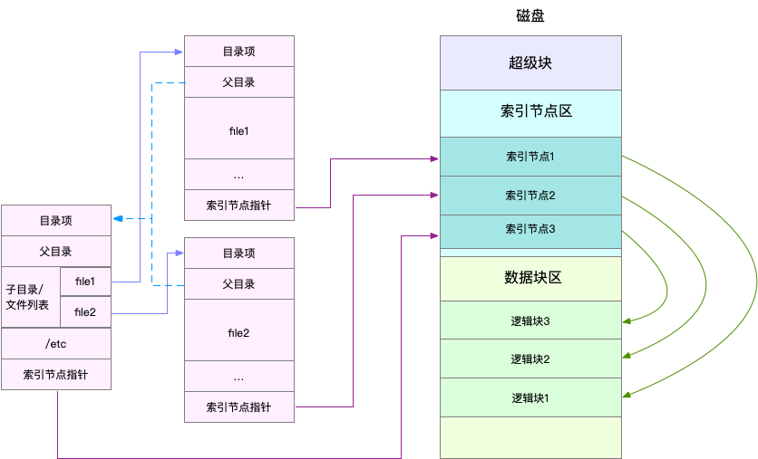
不过，这里有两点需要你注意。
第一，目录项本身就是一个内存缓存，而索引节点则是存储在磁盘中的数据。在前面的 Buffer 和 Cache 原理中，我曾经提到过，为了协调慢速磁盘与快速 CPU 的性能差异，文件内容会缓存到页缓存 Cache 中。
那么，你应该想到，这些索引节点自然也会缓存到内存中，加速文件的访问。
第二，磁盘在执行文件系统格式化时，会被分成三个存储区域，超级块、索引节点区和数据块区。其中，
- 超级块，存储整个文件系统的状态。
- 索引节点区，用来存储索引节点。
- 数据块区，则用来存储文件数据。
虚拟文件系统
目录项、索引节点、逻辑块以及超级块，构成了 Linux 文件系统的四大基本要素。不过，为了支持各种不同的文件系统，Linux 内核在用户进程和文件系统的中间，又引入了一个抽象层，也就是虚拟文件系统 VFS（Virtual File System）。
VFS 定义了一组所有文件系统都支持的数据结构和标准接口。这样，用户进程和内核中的其他子系统，只需要跟 VFS 提供的统一接口进行交互就可以了，而不需要再关心底层各种文件系统的实现细节。
这里，我画了一张 Linux 文件系统的架构图，帮你更好地理解系统调用、VFS、缓存、文件系统以及块存储之间的关系。
通过这张图，你可以看到，在 VFS 的下方，Linux 支持各种各样的文件系统，如 Ext4、XFS、NFS 等等。按照存储位置的不同，这些文件系统可以分为三类。
- 第一类是基于磁盘的文件系统，也就是把数据直接存储在计算机本地挂载的磁盘中。常见的 Ext4、XFS、OverlayFS 等，都是这类文件系统。
- 第二类是基于内存的文件系统，也就是我们常说的虚拟文件系统。这类文件系统，不需要任何磁盘分配存储空间，但会占用内存。我们经常用到的 /proc 文件系统，其实就是一种最常见的虚拟文件系统。此外，/sys 文件系统也属于这一类，主要向用户空间导出层次化的内核对象。
- 第三类是网络文件系统，也就是用来访问其他计算机数据的文件系统，比如 NFS、SMB、iSCSI 等。
这些文件系统，要先挂载到 VFS 目录树中的某个子目录（称为挂载点），然后才能访问其中的文件。拿第一类，也就是基于磁盘的文件系统为例，在安装系统时，要先挂载一个根目录（/），在根目录下再把其他文件系统（比如其他的磁盘分区、/proc 文件系统、/sys 文件系统、NFS 等）挂载进来。
文件系统 I/O
把文件系统挂载到挂载点后，你就能通过挂载点，再去访问它管理的文件了。VFS 提供了一组标准的文件访问接口。这些接口以系统调用的方式，提供给应用程序使用。
就拿 cat 命令来说，它首先调用 open() ，打开一个文件；然后调用 read() ，读取文件的内容；最后再调用 write() ，把文件内容输出到控制台的标准输出中：
int open(const char *pathname, int flags, mode_t mode);
ssize_t read(int fd, void *buf, size_t count);
ssize_t write(int fd, const void *buf, size_t count);
文件读写方式的各种差异，导致 I/O 的分类多种多样。最常见的有，缓冲与非缓冲 I/O、直接与非直接 I/O、阻塞与非阻塞 I/O、同步与异步 I/O 等。 接下来，我们就详细看这四种分类。
第一种，根据是否利用标准库缓存，可以把文件 I/O 分为缓冲 I/O 与非缓冲 I/O。
- 缓冲 I/O，是指利用标准库缓存来加速文件的访问，而标准库内部再通过系统调度访问文件。
- 非缓冲 I/O，是指直接通过系统调用来访问文件，不再经过标准库缓存。
注意，这里所说的“缓冲”，是指标准库内部实现的缓存。比方说，你可能见到过，很多程序遇到换行时才真正输出，而换行前的内容，其实就是被标准库暂时缓存了起来。
无论缓冲 I/O 还是非缓冲 I/O，它们最终还是要经过系统调用来访问文件。而根据上一节内容，我们知道，系统调用后，还会通过页缓存，来减少磁盘的 I/O 操作。
第二，根据是否利用操作系统的页缓存，可以把文件 I/O 分为直接 I/O 与非直接 I/O。
- 直接 I/O，是指跳过操作系统的页缓存，直接跟文件系统交互来访问文件。
- 非直接 I/O 正好相反，文件读写时，先要经过系统的页缓存，然后再由内核或额外的系统调用，真正写入磁盘。
想要实现直接 I/O，需要你在系统调用中，指定 O_DIRECT 标志。如果没有设置过，默认的是非直接 I/O。
不过要注意，直接 I/O、非直接 I/O，本质上还是和文件系统交互。如果是在数据库等场景中，你还会看到，跳过文件系统读写磁盘的情况，也就是我们通常所说的裸 I/O。
第三，根据应用程序是否阻塞自身运行，可以把文件 I/O 分为阻塞 I/O 和非阻塞 I/O：
- 所谓阻塞 I/O，是指应用程序执行 I/O 操作后，如果没有获得响应，就会阻塞当前线程，自然就不能执行其他任务。
- 所谓非阻塞 I/O，是指应用程序执行 I/O 操作后，不会阻塞当前的线程，可以继续执行其他的任务，随后再通过轮询或者事件通知的形式，获取调用的结果。
比方说，访问管道或者网络套接字时，设置 O_NONBLOCK 标志，就表示用非阻塞方式访问；而如果不做任何设置，默认的就是阻塞访问。
第四，根据是否等待响应结果，可以把文件 I/O 分为同步和异步 I/O：
- 所谓同步 I/O，是指应用程序执行 I/O 操作后，要一直等到整个 I/O 完成后，才能获得 I/O 响应。
- 所谓异步 I/O，是指应用程序执行 I/O 操作后，不用等待完成和完成后的响应，而是继续执行就可以。等到这次 I/O 完成后，响应会用事件通知的方式，告诉应用程序。
举个例子，在操作文件时，如果你设置了 O_SYNC 或者 O_DSYNC 标志，就代表同步 I/O。如果设置了 O_DSYNC，就要等文件数据写入磁盘后，才能返回；而 O_SYNC，则是在 O_DSYNC 基础上，要求文件元数据也要写入磁盘后，才能返回。
再比如，在访问管道或者网络套接字时，设置了 O_ASYNC 选项后，相应的 I/O 就是异步 I/O。这样，内核会再通过 SIGIO 或者 SIGPOLL，来通知进程文件是否可读写。
你可能发现了，这里的好多概念也经常出现在网络编程中。比如非阻塞 I/O，通常会跟 select/poll 配合，用在网络套接字的 I/O 中。
你也应该可以理解，“Linux 一切皆文件”的深刻含义。无论是普通文件和块设备、还是网络套接字和管道等，它们都通过统一的 VFS 接口来访问。
性能观测
学了这么多文件系统的原理，你估计也是迫不及待想上手，观察一下文件系统的性能情况了。
接下来，打开一个终端，SSH 登录到服务器上，然后跟我一起来探索，如何观测文件系统的性能。
容量
对文件系统来说，最常见的一个问题就是空间不足。当然，你可能本身就知道，用 df 命令，就能查看文件系统的磁盘空间使用情况。比如：
$ df /dev/sda1
Filesystem 1K-blocks Used Available Use% Mounted on
/dev/sda1 30308240 3167020 27124836 11% /
你可以看到，我的根文件系统只使用了 11% 的空间。这里还要注意，总空间用 1K-blocks 的数量来表示，你可以给 df 加上 -h 选项，以获得更好的可读性：
$ df -h /dev/sda1
Filesystem Size Used Avail Use% Mounted on
/dev/sda1 29G 3.1G 26G 11% /
不过有时候，明明你碰到了空间不足的问题，可是用 df 查看磁盘空间后，却发现剩余空间还有很多。这是怎么回事呢？
不知道你还记不记得，刚才我强调的一个细节。除了文件数据，索引节点也占用磁盘空间。你可以给 df 命令加上 -i 参数，查看索引节点的使用情况，如下所示：
$ df -i /dev/sda1
Filesystem Inodes IUsed IFree IUse% Mounted on
/dev/sda1 3870720 157460 3713260 5% /
索引节点的容量，（也就是 Inode 个数）是在格式化磁盘时设定好的，一般由格式化工具自动生成。当你发现索引节点空间不足，但磁盘空间充足时，很可能就是过多小文件导致的。
所以，一般来说，删除这些小文件，或者把它们移动到索引节点充足的其他磁盘中，就可以解决这个问题。
缓存
在前面 Cache 案例中，我已经介绍过，可以用 free 或 vmstat，来观察页缓存的大小。复习一下，free 输出的 Cache，是页缓存和可回收 Slab 缓存的和，你可以从 /proc/meminfo ，直接得到它们的大小：
$ cat /proc/meminfo | grep -E "SReclaimable|Cached"
Cached: 748316 kB
SwapCached: 0 kB
SReclaimable: 179508 kB
话说回来，文件系统中的目录项和索引节点缓存，又该如何观察呢？
实际上，内核使用 Slab 机制，管理目录项和索引节点的缓存。/proc/meminfo 只给出了 Slab 的整体大小，具体到每一种 Slab 缓存，还要查看 /proc/slabinfo 这个文件。
比如，运行下面的命令，你就可以得到，所有目录项和各种文件系统索引节点的缓存情况：
$ cat /proc/slabinfo | grep -E '^#|dentry|inode'
# name <active_objs> <num_objs> <objsize> <objperslab> <pagesperslab> : tunables <limit> <batchcount> <sharedfactor> : slabdata <active_slabs> <num_slabs> <sharedavail>
xfs_inode 0 0 960 17 4 : tunables 0 0 0 : slabdata 0 0 0
...
ext4_inode_cache 32104 34590 1088 15 4 : tunables 0 0 0 : slabdata 2306 2306 0hugetlbfs_inode_cache 13 13 624 13 2 : tunables 0 0 0 : slabdata 1 1 0
sock_inode_cache 1190 1242 704 23 4 : tunables 0 0 0 : slabdata 54 54 0
shmem_inode_cache 1622 2139 712 23 4 : tunables 0 0 0 : slabdata 93 93 0
proc_inode_cache 3560 4080 680 12 2 : tunables 0 0 0 : slabdata 340 340 0
inode_cache 25172 25818 608 13 2 : tunables 0 0 0 : slabdata 1986 1986 0
dentry 76050 121296 192 21 1 : tunables 0 0 0 : slabdata 5776 5776 0
这个界面中，dentry 行表示目录项缓存，inode_cache 行，表示 VFS 索引节点缓存，其余的则是各种文件系统的索引节点缓存。
/proc/slabinfo 的列比较多，具体含义你可以查询 man slabinfo。在实际性能分析中，我们更常使用 slabtop ，来找到占用内存最多的缓存类型。
比如，下面就是我运行 slabtop 得到的结果：
# 按下 c 按照缓存大小排序，按下 a 按照活跃对象数排序
$ slabtop
Active / Total Objects (% used) : 277970 / 358914 (77.4%)
Active / Total Slabs (% used) : 12414 / 12414 (100.0%)
Active / Total Caches (% used) : 83 / 135 (61.5%)
Active / Total Size (% used) : 57816.88K / 73307.70K (78.9%)
Minimum / Average / Maximum Object : 0.01K / 0.20K / 22.88K
OBJS ACTIVE USE OBJ SIZE SLABS OBJ/SLAB CACHE SIZE NAME
69804 23094 0% 0.19K 3324 21 13296K dentry
16380 15854 0% 0.59K 1260 13 10080K inode_cache
58260 55397 0% 0.13K 1942 30 7768K kernfs_node_cache
485 413 0% 5.69K 97 5 3104K task_struct
1472 1397 0% 2.00K 92 16 2944K kmalloc-2048
从这个结果你可以看到，在我的系统中，目录项和索引节点占用了最多的 Slab 缓存。不过它们占用的内存其实并不大，加起来也只有 23MB 左右。
小结
今天，我带你梳理了 Linux 文件系统的工作原理。
文件系统，是对存储设备上的文件，进行组织管理的一种机制。为了支持各类不同的文件系统，Linux 在各种文件系统实现上，抽象了一层虚拟文件系统（VFS）。
VFS 定义了一组所有文件系统都支持的数据结构和标准接口。这样，用户进程和内核中的其他子系统，就只需要跟 VFS 提供的统一接口进行交互。
为了降低慢速磁盘对性能的影响，文件系统又通过页缓存、目录项缓存以及索引节点缓存，缓和磁盘延迟对应用程序的影响。
在性能观测方面，今天主要讲了容量和缓存的指标。下一节，我们将会学习 Linux 磁盘 I/O 的工作原理，并掌握磁盘 I/O 的性能观测方法。
思考
最后，给你留一个思考题。在实际工作中，我们经常会根据文件名字，查找它所在路径，比如：
$ find / -name file-name
今天的问题就是，这个命令，会不会导致系统的缓存升高呢？如果有影响，又会导致哪种类型的缓存升高呢？你可以结合今天内容，自己先去操作和分析，看看观察到的结果跟你分析的是否一样。
欢迎在留言区和我讨论，也欢迎把这篇文章分享给你的同事、朋友。我们一起在实战中演练，在交流中进步。
24 基础篇：Linux 磁盘IO是怎么工作的（上）
你好，我是倪朋飞。
上一节，我们学习了 Linux 文件系统的工作原理。简单回顾一下，文件系统是对存储设备上的文件，进行组织管理的一种机制。而 Linux 在各种文件系统实现上，又抽象了一层虚拟文件系统 VFS，它定义了一组，所有文件系统都支持的，数据结构和标准接口。
这样，对应用程序来说，只需要跟 VFS 提供的统一接口交互，而不需要关注文件系统的具体实现；对具体的文件系统来说，只需要按照 VFS 的标准，就可以无缝支持各种应用程序。
VFS 内部又通过目录项、索引节点、逻辑块以及超级块等数据结构，来管理文件。
- 目录项，记录了文件的名字，以及文件与其他目录项之间的目录关系。
- 索引节点，记录了文件的元数据。
- 逻辑块，是由连续磁盘扇区构成的最小读写单元，用来存储文件数据。
- 超级块，用来记录文件系统整体的状态，如索引节点和逻辑块的使用情况等。
其中，目录项是一个内存缓存；而超级块、索引节点和逻辑块，都是存储在磁盘中的持久化数据。
那么，进一步想，磁盘又是怎么工作的呢？又有哪些指标可以用来衡量它的性能呢？
接下来，我就带你一起看看， Linux 磁盘 I/O 的工作原理。
磁盘
磁盘是可以持久化存储的设备，根据存储介质的不同，常见磁盘可以分为两类：机械磁盘和固态磁盘。
第一类，机械磁盘，也称为硬盘驱动器（Hard Disk Driver），通常缩写为 HDD。机械磁盘主要由盘片和读写磁头组成，数据就存储在盘片的环状磁道中。在读写数据前，需要移动读写磁头，定位到数据所在的磁道，然后才能访问数据。
显然，如果 I/O 请求刚好连续，那就不需要磁道寻址，自然可以获得最佳性能。这其实就是我们熟悉的，连续 I/O 的工作原理。与之相对应的，当然就是随机 I/O，它需要不停地移动磁头，来定位数据位置，所以读写速度就会比较慢。
第二类，固态磁盘（Solid State Disk），通常缩写为 SSD，由固态电子元器件组成。固态磁盘不需要磁道寻址，所以，不管是连续 I/O，还是随机 I/O 的性能，都比机械磁盘要好得多。
其实，无论机械磁盘，还是固态磁盘，相同磁盘的随机 I/O 都要比连续 I/O 慢很多，原因也很明显。
- 对机械磁盘来说，我们刚刚提到过的，由于随机 I/O 需要更多的磁头寻道和盘片旋转，它的性能自然要比连续 I/O 慢。
- 而对固态磁盘来说，虽然它的随机性能比机械硬盘好很多，但同样存在“先擦除再写入”的限制。随机读写会导致大量的垃圾回收，所以相对应的，随机 I/O 的性能比起连续 I/O 来，也还是差了很多。
- 此外，连续 I/O 还可以通过预读的方式，来减少 I/O 请求的次数，这也是其性能优异的一个原因。很多性能优化的方案，也都会从这个角度出发，来优化 I/O 性能。
此外，机械磁盘和固态磁盘还分别有一个最小的读写单位。
- 机械磁盘的最小读写单位是扇区，一般大小为 512 字节。
- 而固态磁盘的最小读写单位是页，通常大小是 4KB、8KB 等。
在上一节中，我也提到过，如果每次都读写 512 字节这么小的单位的话，效率很低。所以，文件系统会把连续的扇区或页，组成逻辑块，然后以逻辑块作为最小单元来管理数据。常见的逻辑块的大小是 4KB，也就是说，连续 8 个扇区，或者单独的一个页，都可以组成一个逻辑块。
除了可以按照存储介质来分类，另一个常见的分类方法，是按照接口来分类，比如可以把硬盘分为 IDE（Integrated Drive Electronics）、SCSI（Small Computer System Interface） 、SAS（Serial Attached SCSI） 、SATA（Serial ATA） 、FC（Fibre Channel） 等。
不同的接口，往往分配不同的设备名称。比如， IDE 设备会分配一个 hd 前缀的设备名，SCSI 和 SATA 设备会分配一个 sd 前缀的设备名。如果是多块同类型的磁盘，就会按照 a、b、c 等的字母顺序来编号。
除了磁盘本身的分类外，当你把磁盘接入服务器后，按照不同的使用方式，又可以把它们划分为多种不同的架构。
最简单的，就是直接作为独立磁盘设备来使用。这些磁盘，往往还会根据需要，划分为不同的逻辑分区，每个分区再用数字编号。比如我们前面多次用到的 /dev/sda ，还可以分成两个分区 /dev/sda1 和 /dev/sda2。
另一个比较常用的架构，是把多块磁盘组合成一个逻辑磁盘，构成冗余独立磁盘阵列，也就是 RAID（Redundant Array of Independent Disks），从而可以提高数据访问的性能，并且增强数据存储的可靠性。
根据容量、性能和可靠性需求的不同，RAID 一般可以划分为多个级别，如 RAID0、RAID1、RAID5、RAID10 等。
- RAID0 有最优的读写性能，但不提供数据冗余的功能。
- 而其他级别的 RAID，在提供数据冗余的基础上，对读写性能也有一定程度的优化。
最后一种架构，是把这些磁盘组合成一个网络存储集群，再通过 NFS、SMB、iSCSI 等网络存储协议，暴露给服务器使用。
其实在 Linux 中，磁盘实际上是作为一个块设备来管理的，也就是以块为单位读写数据，并且支持随机读写。每个块设备都会被赋予两个设备号，分别是主、次设备号。主设备号用在驱动程序中，用来区分设备类型；而次设备号则是用来给多个同类设备编号。
通用块层
跟我们上一节讲到的虚拟文件系统 VFS 类似，为了减小不同块设备的差异带来的影响，Linux 通过一个统一的通用块层，来管理各种不同的块设备。
通用块层，其实是处在文件系统和磁盘驱动中间的一个块设备抽象层。它主要有两个功能 。
- 第一个功能跟虚拟文件系统的功能类似。向上，为文件系统和应用程序，提供访问块设备的标准接口；向下，把各种异构的磁盘设备抽象为统一的块设备，并提供统一框架来管理这些设备的驱动程序。
- 第二个功能，通用块层还会给文件系统和应用程序发来的 I/O 请求排队，并通过重新排序、请求合并等方式，提高磁盘读写的效率。
其中，对 I/O 请求排序的过程，也就是我们熟悉的 I/O 调度。事实上，Linux 内核支持四种 I/O 调度算法，分别是 NONE、NOOP、CFQ 以及 DeadLine。这里我也分别介绍一下。
第一种 NONE ，更确切来说，并不能算 I/O 调度算法。因为它完全不使用任何 I/O 调度器，对文件系统和应用程序的 I/O 其实不做任何处理，常用在虚拟机中（此时磁盘 I/O 调度完全由物理机负责）。
第二种 NOOP ，是最简单的一种 I/O 调度算法。它实际上是一个先入先出的队列，只做一些最基本的请求合并，常用于 SSD 磁盘。
第三种 CFQ（Completely Fair Scheduler），也被称为完全公平调度器，是现在很多发行版的默认 I/O 调度器，它为每个进程维护了一个 I/O 调度队列，并按照时间片来均匀分布每个进程的 I/O 请求。
类似于进程 CPU 调度，CFQ 还支持进程 I/O 的优先级调度，所以它适用于运行大量进程的系统，像是桌面环境、多媒体应用等。
最后一种 DeadLine 调度算法，分别为读、写请求创建了不同的 I/O 队列，可以提高机械磁盘的吞吐量，并确保达到最终期限（deadline）的请求被优先处理。DeadLine 调度算法，多用在 I/O 压力比较重的场景，比如数据库等。
I/O 栈
清楚了磁盘和通用块层的工作原理，再结合上一期我们讲过的文件系统原理，我们就可以整体来看 Linux 存储系统的 I/O 原理了。
我们可以把 Linux 存储系统的 I/O 栈，由上到下分为三个层次，分别是文件系统层、通用块层和设备层。这三个 I/O 层的关系如下图所示，这其实也是 Linux 存储系统的 I/O 栈全景图。
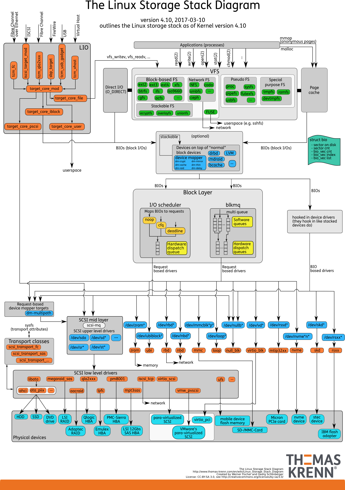（图片来自 Linux Storage Stack Diagram ）
根据这张 I/O 栈的全景图，我们可以更清楚地理解，存储系统 I/O 的工作原理。
- 文件系统层，包括虚拟文件系统和其他各种文件系统的具体实现。它为上层的应用程序，提供标准的文件访问接口；对下会通过通用块层，来存储和管理磁盘数据。
- 通用块层，包括块设备 I/O 队列和 I/O 调度器。它会对文件系统的 I/O 请求进行排队，再通过重新排序和请求合并，然后才要发送给下一级的设备层。
- 设备层，包括存储设备和相应的驱动程序，负责最终物理设备的 I/O 操作。
存储系统的 I/O ，通常是整个系统中最慢的一环。所以， Linux 通过多种缓存机制来优化 I/O 效率。
比方说，为了优化文件访问的性能，会使用页缓存、索引节点缓存、目录项缓存等多种缓存机制，以减少对下层块设备的直接调用。
同样，为了优化块设备的访问效率，会使用缓冲区，来缓存块设备的数据。
不过，抽象的原理讲了这么多，具体操作起来，应该怎么衡量磁盘的 I/O 性能呢？我先卖个关子，下节课我们一起来看，最常用的磁盘 I/O 性能指标，以及 I/O 性能工具。
小结
在今天的文章中，我们梳理了 Linux 磁盘 I/O 的工作原理，并了解了由文件系统层、通用块层和设备层构成的 Linux 存储系统 I/O 栈。
其中，通用块层是 Linux 磁盘 I/O 的核心。向上，它为文件系统和应用程序，提供访问了块设备的标准接口；向下，把各种异构的磁盘设备，抽象为统一的块设备，并会对文件系统和应用程序发来的 I/O 请求进行重新排序、请求合并等，提高了磁盘访问的效率。
思考
最后，我想邀请你一起来聊聊，你所理解的磁盘 I/O。我相信你很可能已经碰到过，文件或者磁盘的 I/O 性能问题，你是怎么分析这些问题的呢？你可以结合今天的磁盘 I/O 原理和上一节的文件系统原理，记录你的操作步骤，并总结出自己的思路。
欢迎在留言区和我讨论，也欢迎把这篇文章分享给你的同事、朋友。我们一起在实战中演练，在交流中进步。
25 基础篇：Linux 磁盘IO是怎么工作的（下）
你好，我是倪朋飞。
上一节我们学习了 Linux 磁盘 I/O 的工作原理，并了解了由文件系统层、通用块层和设备层构成的 Linux 存储系统 I/O 栈。
其中，通用块层是 Linux 磁盘 I/O 的核心。向上，它为文件系统和应用程序，提供访问了块设备的标准接口；向下，把各种异构的磁盘设备，抽象为统一的块设备，并会对文件系统和应用程序发来的 I/O 请求，进行重新排序、请求合并等，提高了磁盘访问的效率。
掌握了磁盘 I/O 的工作原理，你估计迫不及待想知道，怎么才能衡量磁盘的 I/O 性能。
接下来，我们就来看看，磁盘的性能指标，以及观测这些指标的方法。
磁盘性能指标
说到磁盘性能的衡量标准，必须要提到五个常见指标，也就是我们经常用到的，使用率、饱和度、IOPS、吞吐量以及响应时间等。这五个指标，是衡量磁盘性能的基本指标。
- 使用率，是指磁盘处理 I/O 的时间百分比。过高的使用率（比如超过 80%），通常意味着磁盘 I/O 存在性能瓶颈。
- 饱和度，是指磁盘处理 I/O 的繁忙程度。过高的饱和度，意味着磁盘存在严重的性能瓶颈。当饱和度为 100% 时，磁盘无法接受新的 I/O 请求。
- IOPS（Input/Output Per Second），是指每秒的 I/O 请求数。
- 吞吐量，是指每秒的 I/O 请求大小。
- 响应时间，是指 I/O 请求从发出到收到响应的间隔时间。
这里要注意的是，使用率只考虑有没有 I/O，而不考虑 I/O 的大小。换句话说，当使用率是 100% 的时候，磁盘依然有可能接受新的 I/O 请求。
这些指标，很可能是你经常挂在嘴边的，一讨论磁盘性能必定提起的对象。不过我还是要强调一点，不要孤立地去比较某一指标，而要结合读写比例、I/O 类型（随机还是连续）以及 I/O 的大小，综合来分析。
举个例子，在数据库、大量小文件等这类随机读写比较多的场景中，IOPS 更能反映系统的整体性能；而在多媒体等顺序读写较多的场景中，吞吐量才更能反映系统的整体性能。
一般来说，我们在为应用程序的服务器选型时，要先对磁盘的 I/O 性能进行基准测试，以便可以准确评估，磁盘性能是否可以满足应用程序的需求。
这一方面，我推荐用性能测试工具 fio ，来测试磁盘的 IOPS、吞吐量以及响应时间等核心指标。但还是那句话，因地制宜，灵活选取。在基准测试时，一定要注意根据应用程序 I/O 的特点，来具体评估指标。
当然，这就需要你测试出，不同 I/O 大小（一般是 512B 至 1MB 中间的若干值）分别在随机读、顺序读、随机写、顺序写等各种场景下的性能情况。
用性能工具得到的这些指标，可以作为后续分析应用程序性能的依据。一旦发生性能问题，你就可以把它们作为磁盘性能的极限值，进而评估磁盘 I/O 的使用情况。
了解磁盘的性能指标，只是我们 I/O 性能测试的第一步。接下来，又该用什么方法来观测它们呢？这里，我给你介绍几个常用的 I/O 性能观测方法。
磁盘 I/O 观测
第一个要观测的，是每块磁盘的使用情况。
iostat 是最常用的磁盘 I/O 性能观测工具，它提供了每个磁盘的使用率、IOPS、吞吐量等各种常见的性能指标，当然，这些指标实际上来自 /proc/diskstats。
iostat 的输出界面如下。
# -d -x 表示显示所有磁盘 I/O 的指标
$ iostat -d -x 1
Device r/s w/s rkB/s wkB/s rrqm/s wrqm/s %rrqm %wrqm r_await w_await aqu-sz rareq-sz wareq-sz svctm %util
loop0 0.00 0.00 0.00 0.00 0.00 0.00 0.00 0.00 0.00 0.00 0.00 0.00 0.00 0.00 0.00
loop1 0.00 0.00 0.00 0.00 0.00 0.00 0.00 0.00 0.00 0.00 0.00 0.00 0.00 0.00 0.00
sda 0.00 0.00 0.00 0.00 0.00 0.00 0.00 0.00 0.00 0.00 0.00 0.00 0.00 0.00 0.00
sdb 0.00 0.00 0.00 0.00 0.00 0.00 0.00 0.00 0.00 0.00 0.00 0.00 0.00 0.00 0.00
从这里你可以看到，iostat 提供了非常丰富的性能指标。第一列的 Device 表示磁盘设备的名字，其他各列指标，虽然数量较多，但是每个指标的含义都很重要。为了方便你理解，我把它们总结成了一个表格。
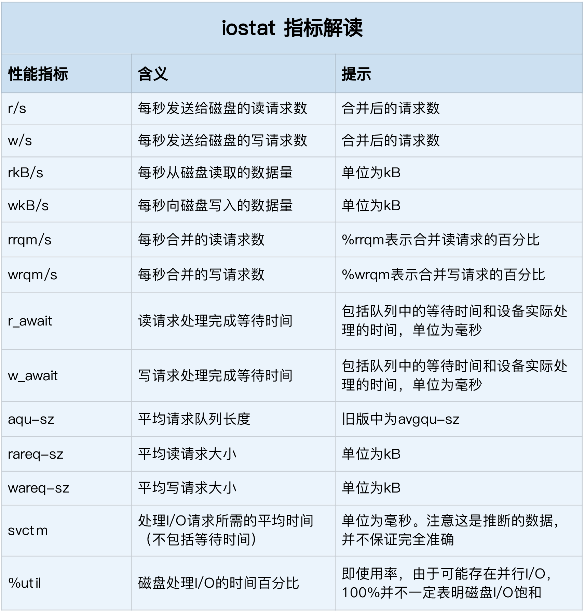
这些指标中，你要注意：
- %util ，就是我们前面提到的磁盘 I/O 使用率；
- r/s+ w/s ，就是 IOPS；
- rkB/s+wkB/s ，就是吞吐量；
- r_await+w_await ，就是响应时间。
在观测指标时，也别忘了结合请求的大小（ rareq-sz 和 wareq-sz）一起分析。
你可能注意到，从 iostat 并不能直接得到磁盘饱和度。事实上，饱和度通常也没有其他简单的观测方法，不过，你可以把观测到的，平均请求队列长度或者读写请求完成的等待时间，跟基准测试的结果（比如通过 fio）进行对比，综合评估磁盘的饱和情况。
进程 I/O 观测
除了每块磁盘的 I/O 情况，每个进程的 I/O 情况也是我们需要关注的重点。
上面提到的 iostat 只提供磁盘整体的 I/O 性能数据，缺点在于，并不能知道具体是哪些进程在进行磁盘读写。要观察进程的 I/O 情况，你还可以使用 pidstat 和 iotop 这两个工具。
pidstat 是我们的老朋友了，这里我就不再啰嗦它的功能了。给它加上 -d 参数，你就可以看到进程的 I/O 情况，如下所示：
$ pidstat -d 1
13:39:51 UID PID kB_rd/s kB_wr/s kB_ccwr/s iodelay Command
13:39:52 102 916 0.00 4.00 0.00 0 rsyslogd
从 pidstat 的输出你能看到，它可以实时查看每个进程的 I/O 情况，包括下面这些内容。
- 用户 ID（UID）和进程 ID（PID） 。
- 每秒读取的数据大小（kB_rd/s） ，单位是 KB。
- 每秒发出的写请求数据大小（kB_wr/s） ，单位是 KB。
- 每秒取消的写请求数据大小（kB_ccwr/s） ，单位是 KB。
- 块 I/O 延迟（iodelay），包括等待同步块 I/O 和换入块 I/O 结束的时间，单位是时钟周期。
除了可以用 pidstat 实时查看，根据 I/O 大小对进程排序，也是性能分析中一个常用的方法。这一点，我推荐另一个工具， iotop。它是一个类似于 top 的工具，你可以按照 I/O 大小对进程排序，然后找到 I/O 较大的那些进程。
iotop 的输出如下所示：
$ iotop
Total DISK READ : 0.00 B/s | Total DISK WRITE : 7.85 K/s
Actual DISK READ: 0.00 B/s | Actual DISK WRITE: 0.00 B/s
TID PRIO USER DISK READ DISK WRITE SWAPIN IO> COMMAND
15055 be/3 root 0.00 B/s 7.85 K/s 0.00 % 0.00 % systemd-journald
从这个输出，你可以看到，前两行分别表示，进程的磁盘读写大小总数和磁盘真实的读写大小总数。因为缓存、缓冲区、I/O 合并等因素的影响，它们可能并不相等。
剩下的部分，则是从各个角度来分别表示进程的 I/O 情况，包括线程 ID、I/O 优先级、每秒读磁盘的大小、每秒写磁盘的大小、换入和等待 I/O 的时钟百分比等。
这两个工具，是我们分析磁盘 I/O 性能时最常用到的。你先了解它们的功能和指标含义，具体的使用方法，接下来的案例实战中我们一起学习。
小结
今天，我们梳理了 Linux 磁盘 I/O 的性能指标和性能工具。我们通常用 IOPS、吞吐量、使用率、饱和度以及响应时间等几个指标，来评估磁盘的 I/O 性能。
你可以用 iostat 获得磁盘的 I/O 情况，也可以用 pidstat、iotop 等观察进程的 I/O 情况。不过在分析这些性能指标时，你要注意结合读写比例、I/O 类型以及 I/O 大小等，进行综合分析。
思考
最后，我想请你一起来聊聊，你碰到过的磁盘 I/O 问题。在碰到磁盘 I/O 性能问题时，你是怎么分析和定位的呢？你可以结合今天学到的磁盘 I/O 指标和工具，以及上一节学过的磁盘 I/O 原理，来总结你的思路。
欢迎在留言区和我讨论，也欢迎把这篇文章分享给你的同事、朋友。我们一起在实战中演练，在交流中进步。
26 案例篇：如何找出狂打日志的“内鬼”？
你好，我是倪朋飞。
前两节，我们学了文件系统和磁盘的 I/O 原理，我先带你复习一下。
文件系统，是对存储设备上的文件进行组织管理的一种机制。为了支持各类不同的文件系统，Linux 在各种文件系统上，抽象了一层虚拟文件系统 VFS。
它定义了一组所有文件系统都支持的数据结构和标准接口。这样，应用程序和内核中的其他子系统，就只需要跟 VFS 提供的统一接口进行交互。
在文件系统的下层，为了支持各种不同类型的存储设备，Linux 又在各种存储设备的基础上，抽象了一个通用块层。
通用块层，为文件系统和应用程序提供了访问块设备的标准接口；同时，为各种块设备的驱动程序提供了统一的框架。此外，通用块层还会对文件系统和应用程序发送过来的 I/O 请求进行排队，并通过重新排序、请求合并等方式，提高磁盘读写的效率。
通用块层的下一层，自然就是设备层了，包括各种块设备的驱动程序以及物理存储设备。
文件系统、通用块层以及设备层，就构成了 Linux 的存储 I/O 栈。存储系统的 I/O ，通常是整个系统中最慢的一环。所以，Linux 采用多种缓存机制，来优化 I/O 的效率，比方说，
- 为了优化文件访问的性能，采用页缓存、索引节点缓存、目录项缓存等多种缓存机制，减少对下层块设备的直接调用。
- 同样的，为了优化块设备的访问效率，使用缓冲区来缓存块设备的数据。
不过，在碰到文件系统和磁盘的 I/O 问题时，具体应该怎么定位和分析呢？今天，我就以一个最常见的应用程序记录大量日志的案例，带你来分析这种情况。
案例准备
本次案例还是基于 Ubuntu 18.04，同样适用于其他的 Linux 系统。我使用的案例环境如下所示：
- 机器配置：2 CPU，8GB 内存
- 预先安装 docker、sysstat 等工具，如 apt install docker.io sysstat
这里要感谢唯品会资深运维工程师阳祥义帮忙，分担了今天的案例。这个案例，是一个用 Python 开发的小应用，为了方便运行，我把它打包成了一个 Docker 镜像。这样，你只要运行 Docker 命令，就可以启动它。
接下来，打开一个终端，SSH 登录到案例所用的机器中，并安装上述工具。跟以前一样，案例中所有命令，都默认以 root 用户运行。如果你是用普通用户身份登陆系统，请运行 sudo su root 命令，切换到 root 用户。
到这里，准备工作就完成了。接下来，我们正式进入操作环节。
温馨提示：案例中 Python 应用的核心逻辑比较简单，你可能一眼就能看出问题，但实际生产环境中的源码就复杂多了。所以，我依旧建议，操作之前别看源码，避免先入为主，要把它当成一个黑盒来分析。这样，你可以更好把握住，怎么从系统的资源使用问题出发，分析出瓶颈所在的应用，以及瓶颈在应用中大概的位置。
案例分析
首先，我们在终端中执行下面的命令，运行今天的目标应用：
$ docker run -v /tmp:/tmp --name=app -itd feisky/logapp
然后，在终端中运行 ps 命令，确认案例应用正常启动。如果操作无误，你应该可以在 ps 的输出中，看到一个 app.py 的进程：
$ ps -ef | grep /app.py
root 18940 18921 73 14:41 pts/0 00:00:02 python /app.py
接着，我们来看看系统有没有性能问题。要观察哪些性能指标呢？前面文章中，我们知道 CPU、内存和磁盘 I/O 等系统资源，很容易出现资源瓶颈，这就是我们观察的方向了。我们来观察一下这些资源的使用情况。
当然，动手之前你应该想清楚，要用哪些工具来做，以及工具的使用顺序又是怎样的。你可以先回忆下前面的案例和思路，自己想一想，然后再继续下面的步骤。
我的想法是，我们可以先用 top ，来观察 CPU 和内存的使用情况；然后再用 iostat ，来观察磁盘的 I/O 情况。
所以，接下来，你可以在终端中运行 top 命令，观察 CPU 和内存的使用情况：
# 按 1 切换到每个 CPU 的使用情况
$ top
top - 14:43:43 up 1 day, 1:39, 2 users, load average: 2.48, 1.09, 0.63
Tasks: 130 total, 2 running, 74 sleeping, 0 stopped, 0 zombie
%Cpu0 : 0.7 us, 6.0 sy, 0.0 ni, 0.7 id, 92.7 wa, 0.0 hi, 0.0 si, 0.0 st
%Cpu1 : 0.0 us, 0.3 sy, 0.0 ni, 92.3 id, 7.3 wa, 0.0 hi, 0.0 si, 0.0 st
KiB Mem : 8169308 total, 747684 free, 741336 used, 6680288 buff/cache
KiB Swap: 0 total, 0 free, 0 used. 7113124 avail Mem
PID USER PR NI VIRT RES SHR S %CPU %MEM TIME+ COMMAND
18940 root 20 0 656108 355740 5236 R 6.3 4.4 0:12.56 python
1312 root 20 0 236532 24116 9648 S 0.3 0.3 9:29.80 python3
观察 top 的输出，你会发现，CPU0 的使用率非常高，它的系统 CPU 使用率（sys%）为 6%，而 iowait 超过了 90%。这说明 CPU0 上，可能正在运行 I/O 密集型的进程。不过，究竟是什么原因呢？这个疑问先保留着，我们先继续看完。
接着我们来看，进程部分的 CPU 使用情况。你会发现， python 进程的 CPU 使用率已经达到了 6%，而其余进程的 CPU 使用率都比较低，不超过 0.3%。看起来 python 是个可疑进程。记下 python 进程的 PID 号 18940，我们稍后分析。
最后再看内存的使用情况，总内存 8G，剩余内存只有 730 MB，而 Buffer/Cache 占用内存高达 6GB 之多，这说明内存主要被缓存占用。虽然大部分缓存可回收，我们还是得了解下缓存的去处，确认缓存使用都是合理的。
到这一步，你基本可以判断出，CPU 使用率中的 iowait 是一个潜在瓶颈，而内存部分的缓存占比较大，那磁盘 I/O 又是怎么样的情况呢？
我们在终端中按 Ctrl+C ，停止 top 命令，再运行 iostat 命令，观察 I/O 的使用情况：
# -d 表示显示 I/O 性能指标，-x 表示显示扩展统计（即所有 I/O 指标）
$ iostat -x -d 1
Device r/s w/s rkB/s wkB/s rrqm/s wrqm/s %rrqm %wrqm r_await w_await aqu-sz rareq-sz wareq-sz svctm %util
loop0 0.00 0.00 0.00 0.00 0.00 0.00 0.00 0.00 0.00 0.00 0.00 0.00 0.00 0.00 0.00
sdb 0.00 0.00 0.00 0.00 0.00 0.00 0.00 0.00 0.00 0.00 0.00 0.00 0.00 0.00 0.00
sda 0.00 64.00 0.00 32768.00 0.00 0.00 0.00 0.00 0.00 7270.44 1102.18 0.00 512.00 15.50 99.20
还记得这些性能指标的含义吗？先自己回忆一下，如果实在想不起来，查看上一节的内容，或者用 man iostat 查询。
观察 iostat 的最后一列，你会看到，磁盘 sda 的 I/O 使用率已经高达 99%，很可能已经接近 I/O 饱和。
再看前面的各个指标，每秒写磁盘请求数是 64 ，写大小是 32 MB，写请求的响应时间为 7 秒，而请求队列长度则达到了 1100。
超慢的响应时间和特长的请求队列长度，进一步验证了 I/O 已经饱和的猜想。此时，sda 磁盘已经遇到了严重的性能瓶颈。
到这里，也就可以理解，为什么前面看到的 iowait 高达 90% 了，这正是磁盘 sda 的 I/O 瓶颈导致的。接下来的重点就是分析 I/O 性能瓶颈的根源了。那要怎么知道，这些 I/O 请求相关的进程呢？
不知道你还记不记得，上一节我曾提到过，可以用 pidstat 或者 iotop ，观察进程的 I/O 情况。这里，我就用 pidstat 来看一下。
使用 pidstat 加上 -d 参数，就可以显示每个进程的 I/O 情况。所以，你可以在终端中运行如下命令来观察：
$ pidstat -d 1
15:08:35 UID PID kB_rd/s kB_wr/s kB_ccwr/s iodelay Command
15:08:36 0 18940 0.00 45816.00 0.00 96 python
15:08:36 UID PID kB_rd/s kB_wr/s kB_ccwr/s iodelay Command
15:08:37 0 354 0.00 0.00 0.00 350 jbd2/sda1-8
15:08:37 0 18940 0.00 46000.00 0.00 96 python
15:08:37 0 20065 0.00 0.00 0.00 1503 kworker/u4:2
从 pidstat 的输出，你可以发现，只有 python 进程的写比较大，而且每秒写的数据超过 45 MB，比上面 iostat 发现的 32MB 的结果还要大。很明显，正是 python 进程导致了 I/O 瓶颈。
再往下看 iodelay 项。虽然只有 python 在大量写数据，但你应该注意到了，有两个进程 （kworker 和 jbd2 ）的延迟，居然比 python 进程还大很多。
这其中，kworker 是一个内核线程，而 jbd2 是 ext4 文件系统中，用来保证数据完整性的内核线程。他们都是保证文件系统基本功能的内核线程，所以具体细节暂时就不用管了，我们只需要明白，它们延迟的根源还是大量 I/O。
综合 pidstat 的输出来看，还是 python 进程的嫌疑最大。接下来，我们来分析 python 进程到底在写什么。
首先留意一下 python 进程的 PID 号， 18940。看到 18940 ，你有没有觉得熟悉？其实前面在使用 top 时，我们记录过的 CPU 使用率最高的进程，也正是它。不过，虽然在 top 中使用率最高，也不过是 6%，并不算高。所以，以 I/O 问题为分析方向还是正确的。
知道了进程的 PID 号，具体要怎么查看写的情况呢？
其实，我在系统调用的案例中讲过，读写文件必须通过系统调用完成。观察系统调用情况，就可以知道进程正在写的文件。想起 strace 了吗，它正是我们分析系统调用时最常用的工具。
接下来，我们在终端中运行 strace 命令，并通过 -p 18940 指定 python 进程的 PID 号：
$ strace -p 18940
strace: Process 18940 attached
...
mmap(NULL, 314576896, PROT_READ|PROT_WRITE, MAP_PRIVATE|MAP_ANONYMOUS, -1, 0) = 0x7f0f7aee9000
mmap(NULL, 314576896, PROT_READ|PROT_WRITE, MAP_PRIVATE|MAP_ANONYMOUS, -1, 0) = 0x7f0f682e8000
write(3, "2018-12-05 15:23:01,709 - __main"..., 314572844
) = 314572844
munmap(0x7f0f682e8000, 314576896) = 0
write(3, "\n", 1) = 1
munmap(0x7f0f7aee9000, 314576896) = 0
close(3) = 0
stat("/tmp/logtest.txt.1", {st_mode=S_IFREG|0644, st_size=943718535, ...}) = 0
从 write() 系统调用上，我们可以看到，进程向文件描述符编号为 3 的文件中，写入了 300MB 的数据。看来，它应该是我们要找的文件。不过，write() 调用中只能看到文件的描述符编号，文件名和路径还是未知的。
再观察后面的 stat() 调用，你可以看到，它正在获取 /tmp/logtest.txt.1 的状态。 这种“点 + 数字格式”的文件，在日志回滚中非常常见。我们可以猜测，这是第一个日志回滚文件，而正在写的日志文件路径，则是 /tmp/logtest.txt。
当然，这只是我们的猜测，自然还需要验证。这里，我再给你介绍一个新的工具 lsof。它专门用来查看进程打开文件列表，不过，这里的“文件”不只有普通文件，还包括了目录、块设备、动态库、网络套接字等。
接下来，我们在终端中运行下面的 lsof 命令，看看进程 18940 都打开了哪些文件：
$ lsof -p 18940
COMMAND PID USER FD TYPE DEVICE SIZE/OFF NODE NAME
python 18940 root cwd DIR 0,50 4096 1549389 /
python 18940 root rtd DIR 0,50 4096 1549389 /
…
python 18940 root 2u CHR 136,0 0t0 3 /dev/pts/0
python 18940 root 3w REG 8,1 117944320 303 /tmp/logtest.txt
这个输出界面中，有几列我简单介绍一下，FD 表示文件描述符号，TYPE 表示文件类型，NAME 表示文件路径。这也是我们需要关注的重点。
再看最后一行，这说明，这个进程打开了文件 /tmp/logtest.txt，并且它的文件描述符是 3 号，而 3 后面的 w ，表示以写的方式打开。
这跟刚才 strace 完我们猜测的结果一致，看来这就是问题的根源：进程 18940 以每次 300MB 的速度，在“疯狂”写日志，而日志文件的路径是 /tmp/logtest.txt。
既然找出了问题根源，接下来按照惯例，就该查看源代码，然后分析为什么这个进程会狂打日志了。
你可以运行 docker cp 命令，把案例应用的源代码拷贝出来，然后查看它的内容。（你也可以点击这里查看案例应用的源码）：
# 拷贝案例应用源代码到当前目录
$ docker cp app:/app.py .
# 查看案例应用的源代码
$ cat app.py
logger = logging.getLogger(__name__)
logger.setLevel(level=logging.INFO)
rHandler = RotatingFileHandler("/tmp/logtest.txt", maxBytes=1024 * 1024 * 1024, backupCount=1)
rHandler.setLevel(logging.INFO)
def write_log(size):
'''Write logs to file'''
message = get_message(size)
while True:
logger.info(message)
time.sleep(0.1)
if __name__ == '__main__':
msg_size = 300 * 1024 * 1024
write_log(msg_size)
分析这个源码，我们发现，它的日志路径是 /tmp/logtest.txt，默认记录 INFO 级别以上的所有日志，而且每次写日志的大小是 300MB。这跟我们上面的分析结果是一致的。
一般来说，生产系统的应用程序，应该有动态调整日志级别的功能。继续查看源码，你会发现，这个程序也可以调整日志级别。如果你给它发送 SIGUSR1 信号，就可以把日志调整为 INFO 级；发送 SIGUSR2 信号，则会调整为 WARNING 级：
def set_logging_info(signal_num, frame):
'''Set loging level to INFO when receives SIGUSR1'''
logger.setLevel(logging.INFO)
def set_logging_warning(signal_num, frame):
'''Set loging level to WARNING when receives SIGUSR2'''
logger.setLevel(logging.WARNING)
signal.signal(signal.SIGUSR1, set_logging_info)
signal.signal(signal.SIGUSR2, set_logging_warning)
根据源码中的日志调用 logger. info(message) ，我们知道，它的日志是 INFO 级，这也正是它的默认级别。那么，只要把默认级别调高到 WARNING 级，日志问题应该就解决了。
接下来，我们就来检查一下，刚刚的分析对不对。在终端中运行下面的 kill 命令，给进程 18940 发送 SIGUSR2 信号：
$ kill -SIGUSR2 18940
然后，再执行 top 和 iostat 观察一下：
$ top
...
%Cpu(s): 0.3 us, 0.2 sy, 0.0 ni, 99.5 id, 0.0 wa, 0.0 hi, 0.0 si, 0.0 st
$ iostat -d -x 1
Device r/s w/s rkB/s wkB/s rrqm/s wrqm/s %rrqm %wrqm r_await w_await aqu-sz rareq-sz wareq-sz svctm %util
loop0 0.00 0.00 0.00 0.00 0.00 0.00 0.00 0.00 0.00 0.00 0.00 0.00 0.00 0.00 0.00
sdb 0.00 0.00 0.00 0.00 0.00 0.00 0.00 0.00 0.00 0.00 0.00 0.00 0.00 0.00 0.00
sda 0.00 0.00 0.00 0.00 0.00 0.00 0.00 0.00 0.00 0.00 0.00 0.00 0.00 0.00 0.00
观察 top 和 iostat 的输出，你会发现，稍等一段时间后，iowait 会变成 0，而 sda 磁盘的 I/O 使用率也会逐渐减少到 0。
到这里，我们不仅定位了狂打日志的应用程序，并通过调高日志级别的方法，完美解决了 I/O 的性能瓶颈。
案例最后，当然不要忘了运行下面的命令，停止案例应用：
$ docker rm -f app
小结
日志，是了解应用程序内部运行情况，最常用、也最有效的工具。无论是操作系统，还是应用程序，都会记录大量的运行日志，以便事后查看历史记录。这些日志一般按照不同级别来开启，比如，开发环境通常打开调试级别的日志，而线上环境则只记录警告和错误日志。
在排查应用程序问题时，我们可能需要，在线上环境临时开启应用程序的调试日志。有时候，事后一不小心就忘了调回去。没把线上的日志调高到警告级别，可能会导致 CPU 使用率、磁盘 I/O 等一系列的性能问题，严重时，甚至会影响到同一台服务器上运行的其他应用程序。
今后，在碰到这种“狂打日志”的场景时，你可以用 iostat、strace、lsof 等工具来定位狂打日志的进程，找出相应的日志文件，再通过应用程序的接口，调整日志级别来解决问题。
如果应用程序不能动态调整日志级别，你可能还需要修改应用的配置，并重启应用让配置生效。
思考
最后，给你留一个思考题。
在今天的案例开始时，我们用 top 和 iostat 查看了系统资源的使用情况。除了 CPU 和磁盘 I/O 外，剩余内存也比较少，而内存主要被 Buffer/Cache 占用。
那么，今天的问题就是，这些内存到底是被 Buffer 还是 Cache 占用了呢？有没有什么方法来确认你的分析结果呢？
欢迎在留言区和我讨论，也欢迎把这篇文章分享给你的同事、朋友。我们一起在实战中演练，在交流中进步。
27 案例篇：为什么我的磁盘IO延迟很高？
你好，我是倪朋飞。
上一节，我们研究了一个狂打日志引发 I/O 性能问题的案例，先来简单回顾一下。
日志，是了解应用程序内部运行情况，最常用也是最有效的工具。日志一般会分为调试、信息、警告、错误等多个不同级别。
通常，生产环境只用开启警告级别的日志，这一般不会导致 I/O 问题。但在偶尔排查问题时，可能需要我们开启调试日志。调试结束后，很可能忘了把日志级别调回去。这时，大量的调试日志就可能会引发 I/O 性能问题。
你可以用 iostat ，确认是否有 I/O 性能瓶颈。再用 strace 和 lsof ，来定位应用程序以及它正在写入的日志文件路径。最后通过应用程序的接口调整日志级别，完美解决 I/O 问题。
不过，如果应用程序没有动态调整日志级别的功能，你还需要修改应用配置并重启应用，以便让配置生效。
今天，我们再来看一个新的案例。这次案例是一个基于 Python Flask 框架的 Web 应用，它提供了一个查询单词热度的 API，但是 API 的响应速度并不让人满意。
非常感谢携程系统研发部资深后端工程师董国星，帮助提供了今天的案例。
案例准备
本次案例还是基于 Ubuntu 18.04，同样适用于其他的 Linux 系统。我使用的案例环境如下所示：
- 机器配置：2 CPU，8GB 内存
- 预先安装 docker、sysstat 等工具，如 apt install docker.io sysstat
为了方便你运行今天的案例，我把它打包成了一个 Docker 镜像。这样，你就只需要运行 Docker 命令就可以启动它。
今天的案例需要两台虚拟机，其中一台是案例分析的目标机器，运行 Flask 应用，它的 IP 地址是 192.168.0.10；而另一台作为客户端，请求单词的热度。我画了一张图表示它们的关系，如下所示：
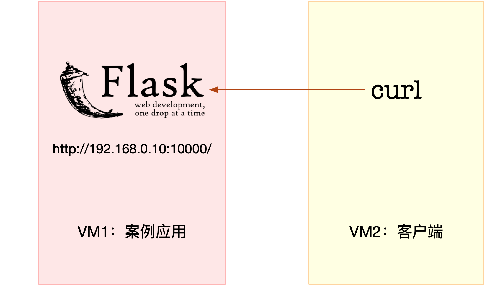
接下来，打开两个终端，分别 SSH 登录到这两台虚拟机中，并在第一台虚拟机中，安装上述工具。
跟以前一样，案例中所有命令都默认以 root 用户运行，如果你是用普通用户身份登陆系统，请运行 sudo su root 命令切换到 root 用户。
到这里，准备工作就完成了。接下来，我们正式进入操作环节。
温馨提示：案例中 Python 应用的核心逻辑比较简单，你可能一眼就能看出问题，但实际生产环境中的源码就复杂多了。所以，我依旧建议，操作之前别看源码，避免先入为主，而要把它当成一个黑盒来分析。这样，你可以更好把握，怎么从系统的资源使用问题出发，分析出瓶颈所在的应用，以及瓶颈在应用中大概的位置。
案例分析
首先，我们在第一个终端中执行下面的命令，运行本次案例要分析的目标应用：
$ docker run --name=app -p 10000:80 -itd feisky/word-pop
然后，在第二个终端中运行 curl 命令，访问 http://192.168.0.10:1000/，确认案例正常启动。你应该可以在 curl 的输出界面里，看到一个 hello world 的输出：
$ curl http://192.168.0.10:10000/
hello world
接下来，在第二个终端中，访问案例应用的单词热度接口，也就是 http://192.168.0.10:1000/popularity/word。
$ curl http://192.168.0.10:1000/popularity/word
稍等一会儿，你会发现，这个接口居然这么长时间都没响应，究竟是怎么回事呢？我们先回到终端一来分析一下。
我们试试在第一个终端里，随便执行一个命令，比如执行 df 命令，查看一下文件系统的使用情况。奇怪的是，这么简单的命令，居然也要等好久才有输出。
$ df
Filesystem 1K-blocks Used Available Use% Mounted on
udev 4073376 0 4073376 0% /dev
tmpfs 816932 1188 815744 1% /run
/dev/sda1 30308240 8713640 21578216 29% /
通过 df 我们知道，系统还有足够多的磁盘空间。那为什么响应会变慢呢？看来还是得观察一下，系统的资源使用情况，像是 CPU、内存和磁盘 I/O 等的具体使用情况。
这里的思路其实跟上一个案例比较类似，我们可以先用 top 来观察 CPU 和内存的使用情况，然后再用 iostat 来观察磁盘的 I/O 情况。
为了避免分析过程中 curl 请求突然结束，我们回到终端二，按 Ctrl+C 停止刚才的应用程序；然后，把 curl 命令放到一个循环里执行；这次我们还要加一个 time 命令，观察每次的执行时间：
$ while true; do time curl http://192.168.0.10:10000/popularity/word; sleep 1; done
继续回到终端一来分析性能。我们在终端一中运行 top 命令，观察 CPU 和内存的使用情况：
$ top
top - 14:27:02 up 10:30, 1 user, load average: 1.82, 1.26, 0.76
Tasks: 129 total, 1 running, 74 sleeping, 0 stopped, 0 zombie
%Cpu0 : 3.5 us, 2.1 sy, 0.0 ni, 0.0 id, 94.4 wa, 0.0 hi, 0.0 si, 0.0 st
%Cpu1 : 2.4 us, 0.7 sy, 0.0 ni, 70.4 id, 26.5 wa, 0.0 hi, 0.0 si, 0.0 st
KiB Mem : 8169300 total, 3323248 free, 436748 used, 4409304 buff/cache
KiB Swap: 0 total, 0 free, 0 used. 7412556 avail Mem
PID USER PR NI VIRT RES SHR S %CPU %MEM TIME+ COMMAND
12280 root 20 0 103304 28824 7276 S 14.0 0.4 0:08.77 python
16 root 20 0 0 0 0 S 0.3 0.0 0:09.22 ksoftirqd/1
1549 root 20 0 236712 24480 9864 S 0.3 0.3 3:31.38 python3
观察 top 的输出可以发现，两个 CPU 的 iowait 都非常高。特别是 CPU0， iowait 已经高达 94 %，而剩余内存还有 3GB，看起来也是充足的。
再往下看，进程部分有一个 python 进程的 CPU 使用率稍微有点高，达到了 14%。虽然 14% 并不能成为性能瓶颈，不过有点嫌疑——可能跟 iowait 的升高有关。
那这个 PID 号为 12280 的 python 进程，到底是不是我们的案例应用呢？
我们在第一个终端中，按下 Ctrl+C，停止 top 命令；然后执行下面的 ps 命令，查找案例应用 app.py 的 PID 号：
$ ps aux | grep app.py
root 12222 0.4 0.2 96064 23452 pts/0 Ss+ 14:37 0:00 python /app.py
root 12280 13.9 0.3 102424 27904 pts/0 Sl+ 14:37 0:09 /usr/local/bin/python /app.py
从 ps 的输出，你可以看到，这个 CPU 使用率较高的进程，正是我们的案例应用。不过先别着急分析 CPU 问题，毕竟 iowait 已经高达 94%， I/O 问题才是我们首要解决的。
接下来，我们在终端一中，运行下面的 iostat 命令，其中:
- -d 选项是指显示出 I/O 的性能指标；
- -x 选项是指显示出扩展统计信息（即显示所有 I/O 指标）。
$ iostat -d -x 1
Device r/s w/s rkB/s wkB/s rrqm/s wrqm/s %rrqm %wrqm r_await w_await aqu-sz rareq-sz wareq-sz svctm %util
loop0 0.00 0.00 0.00 0.00 0.00 0.00 0.00 0.00 0.00 0.00 0.00 0.00 0.00 0.00 0.00
sda 0.00 71.00 0.00 32912.00 0.00 0.00 0.00 0.00 0.00 18118.31 241.89 0.00 463.55 13.86 98.40
再次看到 iostat 的输出，你还记得这个界面中的性能指标含义吗？先自己回忆一下，如果实在想不起来，一定要先查看上节内容，或者用 man iostat 查明白。
明白了指标含义，再来具体观察 iostat 的输出。你可以发现，磁盘 sda 的 I/O 使用率已经达到 98% ，接近饱和了。而且，写请求的响应时间高达 18 秒，每秒的写数据为 32 MB，显然写磁盘碰到了瓶颈。
那要怎么知道，这些 I/O 请求到底是哪些进程导致的呢？我想，你已经还记得上一节我们用到的 pidstat。
在终端一中，运行下面的 pidstat 命令，观察进程的 I/O 情况：
$ pidstat -d 1
14:39:14 UID PID kB_rd/s kB_wr/s kB_ccwr/s iodelay Command
14:39:15 0 12280 0.00 335716.00 0.00 0 python
从 pidstat 的输出，我们再次看到了 PID 号为 12280 的结果。这说明，正是案例应用引发 I/O 的性能瓶颈。
走到这一步，你估计觉得，接下来就很简单了，上一个案例不刚刚学过吗？无非就是，先用 strace 确认它是不是在写文件，再用 lsof 找出文件描述符对应的文件即可。
到底是不是这样呢？我们不妨来试试。还是在终端一中，执行下面的 strace 命令：
$ strace -p 12280
strace: Process 12280 attached
select(0, NULL, NULL, NULL, {tv_sec=0, tv_usec=567708}) = 0 (Timeout)
stat("/usr/local/lib/python3.7/importlib/_bootstrap.py", {st_mode=S_IFREG|0644, st_size=39278, ...}) = 0
stat("/usr/local/lib/python3.7/importlib/_bootstrap.py", {st_mode=S_IFREG|0644, st_size=39278, ...}) = 0
从 strace 中，你可以看到大量的 stat 系统调用，并且大都为 python 的文件，但是，请注意，这里并没有任何 write 系统调用。
由于 strace 的输出比较多，我们可以用 grep ，来过滤一下 write，比如：
$ strace -p 12280 2>&1 | grep write
遗憾的是，这里仍然没有任何输出。
难道此时已经没有性能问题了吗？重新执行刚才的 top 和 iostat 命令，你会不幸地发现，性能问题仍然存在。
我们只好综合 strace、pidstat 和 iostat 这三个结果来分析了。很明显，你应该发现了这里的矛盾：iostat 已经证明磁盘 I/O 有性能瓶颈，而 pidstat 也证明了，这个瓶颈是由 12280 号进程导致的，但 strace 跟踪这个进程，却没有找到任何 write 系统调用。
这就奇怪了。难道因为案例使用的编程语言是 Python ，而 Python 是解释型的，所以找不到？还是说，因为案例运行在 Docker 中呢？这里留个悬念，你自己想想。
文件写，明明应该有相应的 write 系统调用，但用现有工具却找不到痕迹，这时就该想想换工具的问题了。怎样才能知道哪里在写文件呢？
这里我给你介绍一个新工具， filetop。它是 bcc 软件包的一部分，基于 Linux 内核的 eBPF（extended Berkeley Packet Filters）机制，主要跟踪内核中文件的读写情况，并输出线程 ID（TID）、读写大小、读写类型以及文件名称。
eBPF 的工作原理，你暂时不用深究，后面内容我们会逐渐接触到，先会使用就可以了。
至于老朋友 bcc 的安装方法，可以参考它的 Github 网站 https://github.com/iovisor/bcc。比如在 Ubuntu 16 以上的版本中，你可以运行下面的命令来安装它：
sudo apt-key adv --keyserver keyserver.ubuntu.com --recv-keys 4052245BD4284CDD
echo "deb https://repo.iovisor.org/apt/$(lsb_release -cs) $(lsb_release -cs) main" | sudo tee /etc/apt/sources.list.d/iovisor.list
sudo apt-get update
sudo apt-get install bcc-tools libbcc-examples linux-headers-$(uname -r)
安装后，bcc 提供的所有工具，就全部安装到了 /usr/share/bcc/tools 这个目录中。接下来我们就用这个工具，观察一下文件的读写情况。
首先，在终端一中运行下面的命令：
# 切换到工具目录
$ cd /usr/share/bcc/tools
# -C 选项表示输出新内容时不清空屏幕
$ ./filetop -C
TID COMM READS WRITES R_Kb W_Kb T FILE
514 python 0 1 0 2832 R 669.txt
514 python 0 1 0 2490 R 667.txt
514 python 0 1 0 2685 R 671.txt
514 python 0 1 0 2392 R 670.txt
514 python 0 1 0 2050 R 672.txt
...
TID COMM READS WRITES R_Kb W_Kb T FILE
514 python 2 0 5957 0 R 651.txt
514 python 2 0 5371 0 R 112.txt
514 python 2 0 4785 0 R 861.txt
514 python 2 0 4736 0 R 213.txt
514 python 2 0 4443 0 R 45.txt
你会看到，filetop 输出了 8 列内容，分别是线程 ID、线程命令行、读写次数、读写的大小（单位 KB）、文件类型以及读写的文件名称。
这些内容里，你可能会看到很多动态链接库，不过这不是我们的重点，暂且忽略即可。我们的重点，是一个 python 应用，所以要特别关注 python 相关的内容。
多观察一会儿，你就会发现，每隔一段时间，线程号为 514 的 python 应用就会先写入大量的 txt 文件，再大量地读。
线程号为 514 的线程，属于哪个进程呢？我们可以用 ps 命令查看。先在终端一中，按下 Ctrl+C ，停止 filetop ；然后，运行下面的 ps 命令。这个输出的第二列内容，就是我们想知道的进程号：
$ ps -efT | grep 514
root 12280 514 14626 33 14:47 pts/0 00:00:05 /usr/local/bin/python /app.py
我们看到，这个线程正是案例应用 12280 的线程。终于可以先松一口气，不过还没完，filetop 只给出了文件名称，却没有文件路径，还得继续找啊。
我再介绍一个好用的工具，opensnoop 。它同属于 bcc 软件包，可以动态跟踪内核中的 open 系统调用。这样，我们就可以找出这些 txt 文件的路径。
接下来，在终端一中，运行下面的 opensnoop 命令：
$ opensnoop
12280 python 6 0 /tmp/9046db9e-fe25-11e8-b13f-0242ac110002/650.txt
12280 python 6 0 /tmp/9046db9e-fe25-11e8-b13f-0242ac110002/651.txt
12280 python 6 0 /tmp/9046db9e-fe25-11e8-b13f-0242ac110002/652.txt
这次，通过 opensnoop 的输出，你可以看到，这些 txt 路径位于 /tmp 目录下。你还能看到，它打开的文件数量，按照数字编号，从 0.txt 依次增大到 999.txt，这可远多于前面用 filetop 看到的数量。
综合 filetop 和 opensnoop ，我们就可以进一步分析了。我们可以大胆猜测，案例应用在写入 1000 个 txt 文件后，又把这些内容读到内存中进行处理。我们来检查一下，这个目录中是不是真的有 1000 个文件：
$ ls /tmp/9046db9e-fe25-11e8-b13f-0242ac110002 | wc -l
ls: cannot access '/tmp/9046db9e-fe25-11e8-b13f-0242ac110002': No such file or directory
0
操作后却发现，目录居然不存在了。怎么回事呢？我们回到 opensnoop 再观察一会儿：
$ opensnoop
12280 python 6 0 /tmp/defee970-fe25-11e8-b13f-0242ac110002/261.txt
12280 python 6 0 /tmp/defee970-fe25-11e8-b13f-0242ac110002/840.txt
12280 python 6 0 /tmp/defee970-fe25-11e8-b13f-0242ac110002/136.txt
原来，这时的路径已经变成了另一个目录。这说明，这些目录都是应用程序动态生成的，用完就删了。
结合前面的所有分析，我们基本可以判断，案例应用会动态生成一批文件，用来临时存储数据，用完就会删除它们。但不幸的是，正是这些文件读写，引发了 I/O 的性能瓶颈，导致整个处理过程非常慢。
当然，我们还需要验证这个猜想。老办法，还是查看应用程序的源码 app.py，
@app.route("/popularity/<word>")
def word_popularity(word):
dir_path = '/tmp/{}'.format(uuid.uuid1())
count = 0
sample_size = 1000
def save_to_file(file_name, content):
with open(file_name, 'w') as f:
f.write(content)
try:
# initial directory firstly
os.mkdir(dir_path)
# save article to files
for i in range(sample_size):
file_name = '{}/{}.txt'.format(dir_path, i)
article = generate_article()
save_to_file(file_name, article)
# count word popularity
for root, dirs, files in os.walk(dir_path):
for file_name in files:
with open('{}/{}'.format(dir_path, file_name)) as f:
if validate(word, f.read()):
count += 1
finally:
# clean files
shutil.rmtree(dir_path, ignore_errors=True)
return jsonify({'popularity': count / sample_size * 100, 'word': word})
源码中可以看到，这个案例应用，在每个请求的处理过程中，都会生成一批临时文件，然后读入内存处理，最后再把整个目录删除掉。
这是一种常见的利用磁盘空间处理大量数据的技巧，不过，本次案例中的 I/O 请求太重，导致磁盘 I/O 利用率过高。
要解决这一点，其实就是算法优化问题了。比如在内存充足时，就可以把所有数据都放到内存中处理，这样就能避免 I/O 的性能问题。
你可以检验一下，在终端二中分别访问 http://192.168.0.10:10000/popularity/word 和 http://192.168.0.10:10000/popular/word ，对比前后的效果：
$ time curl http://192.168.0.10:10000/popularity/word
{
"popularity": 0.0,
"word": "word"
}
real 2m43.172s
user 0m0.004s
sys 0m0.007s
$ time curl http://192.168.0.10:10000/popular/word
{
"popularity": 0.0,
"word": "word"
}
real 0m8.810s
user 0m0.010s
sys 0m0.000s
新的接口只要 8 秒就可以返回，明显比一开始的 3 分钟好很多。
当然，这只是优化的第一步，并且方法也不算完善，还可以做进一步的优化。不过，在实际系统中，我们大都是类似的做法，先用最简单的方法，尽早解决线上问题，然后再继续思考更好的优化方法。
小结
今天，我们分析了一个响应过慢的单词热度案例。
首先，我们用 top、iostat，分析了系统的 CPU 和磁盘使用情况。我们发现了磁盘 I/O 瓶颈，也知道了这个瓶颈是案例应用导致的。
接着，我们试着照搬上一节案例的方法，用 strace 来观察进程的系统调用，不过这次很不走运，没找到任何 write 系统调用。
于是，我们又用了新的工具，借助动态追踪工具包 bcc 中的 filetop 和 opensnoop ，找出了案例应用的问题，发现这个根源是大量读写临时文件。
找出问题后，优化方法就相对比较简单了。如果内存充足时，最简单的方法，就是把数据都放在速度更快的内存中，这样就没有磁盘 I/O 的瓶颈了。当然，再进一步，你可以还可以利用 Trie 树等各种算法，进一步优化单词处理的效率。
思考
最后，给你留一个思考题，也是我在文章中提到过的，让你思考的问题。
今天的案例中，iostat 已经证明，磁盘 I/O 出现了性能瓶颈， pidstat 也证明了这个瓶颈是由 12280 号进程导致的。但是，strace 跟踪这个进程，却没有发现任何 write 系统调用。
这究竟是怎么回事？难道是因为案例使用的编程语言 Python 本身是解释型？还是说，因为案例运行在 Docker 中呢？
这里我小小提示一下。当你发现性能工具的输出无法解释时，最好返回去想想，是不是分析中漏掉了什么线索，或者去翻翻工具手册，看看是不是某些默认选项导致的。
欢迎在留言区和我讨论，也欢迎把这篇文章分享给你的同事、朋友。我们一起在实战中演练，在交流中进步。
28 案例篇：一个SQL查询要15秒，这是怎么回事？
你好，我是倪朋飞。
上一节，我们分析了一个单词热度应用响应过慢的案例。当用 top、iostat 分析了系统的 CPU 和磁盘 I/O 使用情况后，我们发现系统出现了磁盘的 I/O 瓶颈，而且正是案例应用导致的。
接着，在使用 strace 却没有任何发现后，我又给你介绍了两个新的工具 filetop 和 opensnoop，分析它们对系统调用 write() 和 open() 的追踪结果。
我们发现，案例应用正在读写大量的临时文件，因此产生了性能瓶颈。找出瓶颈后，我们又用把文件数据都放在内存的方法，解决了磁盘 I/O 的性能问题。
当然，你可能会说，在实际应用中，大量数据肯定是要存入数据库的，而不会直接用文本文件的方式存储。不过，数据库也不是万能的。当数据库出现性能问题时，又该如何分析和定位它的瓶颈呢？
今天我们就来一起分析一个数据库的案例。这是一个基于 Python Flask 的商品搜索应用，商品信息存在 MySQL 中。这个应用可以通过 MySQL 接口，根据客户端提供的商品名称，去数据库表中查询商品信息。
非常感谢唯品会资深运维工程师阳祥义，帮助提供了今天的案例。
案例准备
本次案例还是基于 Ubuntu 18.04，同样适用于其他的 Linux 系统。我使用的案例环境如下所示：
- 机器配置：2 CPU，8GB 内存
- 预先安装 docker、sysstat 、git、make 等工具，如 apt install docker.io sysstat make git
其中，docker 和 sysstat 已经用过很多次，这里不再赘述；git 用来拉取本次案例所需脚本，这些脚本存储在 Github 代码仓库中；最后的 make 则是一个常用构建工具，这里用来运行今天的案例。
案例总共由三个容器组成，包括一个 MySQL 数据库应用、一个商品搜索应用以及一个数据处理的应用。其中，商品搜索应用以 HTTP 的形式提供了一个接口：
- /：返回 Index Page；
- /db/insert/products/：插入指定数量的商品信息；
- /products/：查询指定商品的信息，并返回处理时间。
由于应用比较多，为了方便你运行它们，我把它们同样打包成了几个 Docker 镜像，并推送到了 Github 上。这样，你只需要运行几条命令，就可以启动了。
今天的案例需要两台虚拟机，其中一台作为案例分析的目标机器，运行 Flask 应用，它的 IP 地址是 192.168.0.10；另一台则是作为客户端，请求单词的热度。我画了一张图表示它们的关系。
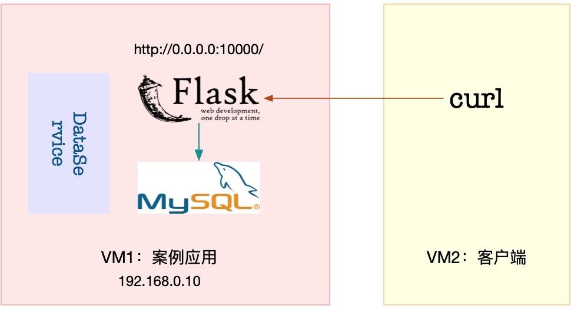
接下来，打开两个终端，分别 SSH 登录到这两台虚拟机中，并在第一台虚拟机中安装上述工具。
跟以前一样，案例中所有命令都默认以 root 用户运行，如果你是用普通用户身份登陆系统，请运行 sudo su root 命令切换到 root 用户。
到这里，准备工作就完成了。接下来，我们正式进入操作环节。
案例分析
首先，我们在第一个终端中执行下面命令，拉取本次案例所需脚本：
$ git clone https://github.com/feiskyer/linux-perf-examples
$ cd linux-perf-examples/mysql-slow
接着，执行下面的命令，运行本次的目标应用。正常情况下，你应该可以看到下面的输出：
# 注意下面的随机字符串是容器 ID，每次运行均会不同，并且你不需要关注它，因为我们只会用到名字
$ make run
docker run --name=mysql -itd -p 10000:80 -m 800m feisky/mysql:5.6
WARNING: Your kernel does not support swap limit capabilities or the cgroup is not mounted. Memory limited without swap.
4156780da5be0b9026bcf27a3fa56abc15b8408e358fa327f472bcc5add4453f
docker run --name=dataservice -itd --privileged feisky/mysql-dataservice
f724d0816d7e47c0b2b1ff701e9a39239cb9b5ce70f597764c793b68131122bb
docker run --name=app --network=container:mysql -itd feisky/mysql-slow
81d3392ba25bb8436f6151662a13ff6182b6bc6f2a559fc2e9d873cd07224ab6
然后，再运行 docker ps 命令，确认三个容器都处在运行（Up）状态：
$ docker ps
CONTAINER ID IMAGE COMMAND CREATED STATUS PORTS NAMES
9a4e3c580963 feisky/mysql-slow "python /app.py" 42 seconds ago Up 36 seconds app
2a47aab18082 feisky/mysql-dataservice "python /dataservice…" 46 seconds ago Up 41 seconds dataservice
4c3ff7b24748 feisky/mysql:5.6 "docker-entrypoint.s…" 47 seconds ago Up 46 seconds 3306/tcp, 0.0.0.0:10000->80/tcp mysql
MySQL 数据库的启动过程，需要做一些初始化工作，这通常需要花费几分钟时间。你可以运行 docker logs 命令，查看它的启动过程。
当你看到下面这个输出时，说明 MySQL 初始化完成，可以接收外部请求了：
$ docker logs -f mysql
...
... [Note] mysqld: ready for connections.
Version: '5.6.42-log' socket: '/var/run/mysqld/mysqld.sock' port: 3306 MySQL Community Server (GPL)
而商品搜索应用则是在 10000 端口监听。你可以按 Ctrl+C ，停止 docker logs 命令；然后，执行下面的命令，确认它也已经正常运行。如果一切正常，你会看到 Index Page 的输出：
$ curl http://127.0.0.1:10000/
Index Page
接下来，运行 make init 命令，初始化数据库，并插入 10000 条商品信息。这个过程比较慢，比如在我的机器中，就花了十几分钟时间。耐心等待一段时间后，你会看到如下的输出：
$ make init
docker exec -i mysql mysql -uroot -P3306 < tables.sql
curl http://127.0.0.1:10000/db/insert/products/10000
insert 10000 lines
接着，我们切换到第二个终端，访问一下商品搜索的接口，看看能不能找到想要的商品。执行如下的 curl 命令：
$ curl http://192.168.0.10:10000/products/geektime
Got data: () in 15.364538192749023 sec
稍等一会儿，你会发现，这个接口返回的是空数据，而且处理时间超过 15 秒。这么慢的响应速度让人无法忍受，到底出了什么问题呢？
既然今天用了 MySQL，你估计会猜到是慢查询的问题。
不过别急，在具体分析前，为了避免在分析过程中客户端的请求结束，我们把 curl 命令放到一个循环里执行。同时，为了避免给系统过大压力，我们设置在每次查询后，都先等待 5 秒，然后再开始新的请求。
所以，你可以在终端二中，继续执行下面的命令：
$ while true; do curl http://192.168.0.10:10000/products/geektime; sleep 5; done
接下来，重新回到终端一中，分析接口响应速度慢的原因。不过，重回终端一后，你会发现系统响应也明显变慢了，随便执行一个命令，都得停顿一会儿才能看到输出。
这跟上一节的现象很类似，看来，我们还是得观察一下系统的资源使用情况，比如 CPU、内存和磁盘 I/O 等的情况。
首先，我们在终端一执行 top 命令，分析系统的 CPU 使用情况：
$ top
top - 12:02:15 up 6 days, 8:05, 1 user, load average: 0.66, 0.72, 0.59
Tasks: 137 total, 1 running, 81 sleeping, 0 stopped, 0 zombie
%Cpu0 : 0.7 us, 1.3 sy, 0.0 ni, 35.9 id, 62.1 wa, 0.0 hi, 0.0 si, 0.0 st
%Cpu1 : 0.3 us, 0.7 sy, 0.0 ni, 84.7 id, 14.3 wa, 0.0 hi, 0.0 si, 0.0 st
KiB Mem : 8169300 total, 7238472 free, 546132 used, 384696 buff/cache
KiB Swap: 0 total, 0 free, 0 used. 7316952 avail Mem
PID USER PR NI VIRT RES SHR S %CPU %MEM TIME+ COMMAND
27458 999 20 0 833852 57968 13176 S 1.7 0.7 0:12.40 mysqld
27617 root 20 0 24348 9216 4692 S 1.0 0.1 0:04.40 python
1549 root 20 0 236716 24568 9864 S 0.3 0.3 51:46.57 python3
22421 root 20 0 0 0 0 I 0.3 0.0 0:01.16 kworker/u
观察 top 的输出，我们发现，两个 CPU 的 iowait 都比较高，特别是 CPU0，iowait 已经超过 60%。而具体到各个进程， CPU 使用率并不高，最高的也只有 1.7%。
既然 CPU 的嫌疑不大，那问题应该还是出在了 I/O 上。我们仍然在第一个终端，按下 Ctrl+C，停止 top 命令；然后，执行下面的 iostat 命令，看看有没有 I/O 性能问题：
$ iostat -d -x 1
Device r/s w/s rkB/s wkB/s rrqm/s wrqm/s %rrqm %wrqm r_await w_await aqu-sz rareq-sz wareq-sz svctm %util
...
sda 273.00 0.00 32568.00 0.00 0.00 0.00 0.00 0.00 7.90 0.00 1.16 119.30 0.00 3.56 97.20
iostat 的输出你应该非常熟悉。观察这个界面，我们发现，磁盘 sda 每秒的读数据为 32 MB， 而 I/O 使用率高达 97% ，接近饱和，这说明，磁盘 sda 的读取确实碰到了性能瓶颈。
那要怎么知道，这些 I/O 请求到底是哪些进程导致的呢？当然可以找我们的老朋友， pidstat。接下来，在终端一中，按下 Ctrl+C 停止 iostat 命令，然后运行下面的 pidstat 命令，观察进程的 I/O 情况：
# -d 选项表示展示进程的 I/O 情况
$ pidstat -d 1
12:04:11 UID PID kB_rd/s kB_wr/s kB_ccwr/s iodelay Command
12:04:12 999 27458 32640.00 0.00 0.00 0 mysqld
12:04:12 0 27617 4.00 4.00 0.00 3 python
12:04:12 0 27864 0.00 4.00 0.00 0 systemd-journal
从 pidstat 的输出可以看到，PID 为 27458 的 mysqld 进程正在进行大量的读，而且读取速度是 32 MB/s，跟刚才 iostat 的发现一致。两个结果一对比，我们自然就找到了磁盘 I/O 瓶颈的根源，即 mysqld 进程。
不过，这事儿还没完。我们自然要怀疑一下，为什么 mysqld 会去读取大量的磁盘数据呢？按照前面猜测，我们提到过，这有可能是个慢查询问题。
可是，回想一下，慢查询的现象大多是 CPU 使用率高（比如 100% ），但这里看到的却是 I/O 问题。看来，这并不是一个单纯的慢查询问题，我们有必要分析一下 MySQL 读取的数据。
要分析进程的数据读取，当然还要靠上一节用到过的 strace+ lsof 组合。
接下来，还是在终端一中，执行 strace 命令，并且指定 mysqld 的进程号 27458。我们知道，MySQL 是一个多线程的数据库应用，为了不漏掉这些线程的数据读取情况，你要记得在执行 stace 命令时，加上 -f 参数：
$ strace -f -p 27458
[pid 28014] read(38, "934EiwT363aak7VtqF1mHGa4LL4Dhbks"..., 131072) = 131072
[pid 28014] read(38, "hSs7KBDepBqA6m4ce6i6iUfFTeG9Ot9z"..., 20480) = 20480
[pid 28014] read(38, "NRhRjCSsLLBjTfdqiBRLvN9K6FRfqqLm"..., 131072) = 131072
[pid 28014] read(38, "AKgsik4BilLb7y6OkwQUjjqGeCTQTaRl"..., 24576) = 24576
[pid 28014] read(38, "hFMHx7FzUSqfFI22fQxWCpSnDmRjamaW"..., 131072) = 131072
[pid 28014] read(38, "ajUzLmKqivcDJSkiw7QWf2ETLgvQIpfC"..., 20480) = 20480
观察一会，你会发现，线程 28014 正在读取大量数据，且读取文件的描述符编号为 38。这儿的 38 又对应着哪个文件呢？我们可以执行下面的 lsof 命令，并且指定线程号 28014 ，具体查看这个可疑线程和可疑文件：
$ lsof -p 28014
奇怪的是，lsof 并没有给出任何输出。实际上，如果你查看 lsof 命令的返回值，就会发现，这个命令的执行失败了。
我们知道，在 SHELL 中，特殊标量 $? 表示上一条命令退出时的返回值。查看这个特殊标量，你会发现它的返回值是 1。可是别忘了，在 Linux 中，返回值为 0 ，才表示命令执行成功。返回值为 1，显然表明执行失败。
$ echo $?
1
为什么 lsof 命令执行失败了呢？这里希望你暂停往下，自己先思考一下原因。记住我的那句话，遇到现象解释不了，先去查查工具文档。
事实上，通过查询 lsof 的文档，你会发现，-p 参数需要指定进程号，而我们刚才传入的是线程号，所以 lsof 失败了。你看，任何一个细节都可能成为性能分析的“拦路虎”。
回过头我们看，mysqld 的进程号是 27458，而 28014 只是它的一个线程。而且，如果你观察 一下 mysqld 进程的线程，你会发现，mysqld 其实还有很多正在运行的其他线程：
# -t 表示显示线程，-a 表示显示命令行参数
$ pstree -t -a -p 27458
mysqld,27458 --log_bin=on --sync_binlog=1
...
├─{mysqld},27922
├─{mysqld},27923
└─{mysqld},28014
找到了原因，lsof 的问题就容易解决了。把线程号换成进程号，继续执行 lsof 命令：
$ lsof -p 27458
COMMAND PID USER FD TYPE DEVICE SIZE/OFF NODE NAME
...
mysqld 27458 999 38u REG 8,1 512440000 2601895 /var/lib/mysql/test/products.MYD
这次我们得到了 lsof 的输出。从输出中可以看到， mysqld 进程确实打开了大量文件，而根据文件描述符（FD）的编号，我们知道，描述符为 38 的是一个路径为 /var/lib/mysql/test/products.MYD 的文件。这里注意， 38 后面的 u 表示， mysqld 以读写的方式访问文件。
看到这个文件，熟悉 MySQL 的你可能笑了：
- MYD 文件，是 MyISAM 引擎用来存储表数据的文件；
- 文件名就是数据表的名字；
- 而这个文件的父目录，也就是数据库的名字。
换句话说，这个文件告诉我们，mysqld 在读取数据库 test 中的 products 表。
实际上，你可以执行下面的命令，查看 mysqld 在管理数据库 test 时的存储文件。不过要注意，由于 MySQL 运行在容器中，你需要通过 docker exec 到容器中查看：
$ docker exec -it mysql ls /var/lib/mysql/test/
db.opt products.MYD products.MYI products.frm
从这里你可以发现，/var/lib/mysql/test/ 目录中有四个文件，每个文件的作用分别是：
- MYD 文件用来存储表的数据；
- MYI 文件用来存储表的索引；
- frm 文件用来存储表的元信息（比如表结构）；
- opt 文件则用来存储数据库的元信息（比如字符集、字符校验规则等）。
当然，看到这些，你可能还有一个疑问，那就是，这些文件到底是不是 mysqld 正在使用的数据库文件呢？有没有可能是不再使用的旧数据呢？其实，这个很容易确认，查一下 mysqld 配置的数据路径即可。
你可以在终端一中，继续执行下面的命令：
$ docker exec -i -t mysql mysql -e 'show global variables like "%datadir%";'
+---------------+-----------------+
| Variable_name | Value |
+---------------+-----------------+
| datadir | /var/lib/mysql/ |
+---------------+-----------------+
这里可以看到，/var/lib/mysql/ 确实是 mysqld 正在使用的数据存储目录。刚才分析得出的数据库 test 和数据表 products ，都是正在使用。
注：其实 lsof 的结果已经可以确认，它们都是 mysqld 正在访问的文件。再查询 datadir ，只是想换一个思路，进一步确认一下。
既然已经找出了数据库和表，接下来要做的，就是弄清楚数据库中正在执行什么样的 SQL 了。我们继续在终端一中，运行下面的 docker exec 命令，进入 MySQL 的命令行界面：
$ docker exec -i -t mysql mysql
...
Type 'help;' or '\h' for help. Type '\c' to clear the current input statement.
mysql>
下一步你应该可以想到，那就是在 MySQL 命令行界面中，执行 show processlist 命令，来查看当前正在执行的 SQL 语句。
不过，为了保证 SQL 语句不截断，这里我们可以执行 show full processlist 命令。如果一切正常，你应该可以看到如下输出：
mysql> show full processlist;
+----+------+-----------------+------+---------+------+--------------+-----------------------------------------------------+
| Id | User | Host | db | Command | Time | State | Info |
+----+------+-----------------+------+---------+------+--------------+-----------------------------------------------------+
| 27 | root | localhost | test | Query | 0 | init | show full processlist |
| 28 | root | 127.0.0.1:42262 | test | Query | 1 | Sending data | select * from products where productName='geektime' |
+----+------+-----------------+------+---------+------+--------------+-----------------------------------------------------+
2 rows in set (0.00 sec)
这个输出中，
- db 表示数据库的名字；
- Command 表示 SQL 类型；
- Time 表示执行时间；
- State 表示状态；
- 而 Info 则包含了完整的 SQL 语句。
多执行几次 show full processlist 命令，你可看到 select * from products where productName=‘geektime’ 这条 SQL 语句的执行时间比较长。
再回忆一下，案例开始时，我们在终端二查询的产品名称 http://192.168.0.10:10000/products/geektime，其中的 geektime 也符合这条查询语句的条件。
我们知道，MySQL 的慢查询问题，很可能是没有利用好索引导致的，那这条查询语句是不是这样呢？我们又该怎么确认，查询语句是否利用了索引呢？
其实，MySQL 内置的 explain 命令，就可以帮你解决这个问题。继续在 MySQL 终端中，运行下面的 explain 命令：
# 切换到 test 库
mysql> use test;
# 执行 explain 命令
mysql> explain select * from products where productName='geektime';
+----+-------------+----------+------+---------------+------+---------+------+-------+-------------+
| id | select_type | table | type | possible_keys | key | key_len | ref | rows | Extra |
+----+-------------+----------+------+---------------+------+---------+------+-------+-------------+
| 1 | SIMPLE | products | ALL | NULL | NULL | NULL | NULL | 10000 | Using where |
+----+-------------+----------+------+---------------+------+---------+------+-------+-------------+
1 row in set (0.00 sec)
观察这次的输出。这个界面中，有几个比较重要的字段需要你注意，我就以这个输出为例，分别解释一下：
- select_type 表示查询类型，而这里的 SIMPLE 表示此查询不包括 UNION 查询或者子查询；
- table 表示数据表的名字，这里是 products；
- type 表示查询类型，这里的 ALL 表示全表查询，但索引查询应该是 index 类型才对；
- possible_keys 表示可能选用的索引，这里是 NULL；
- key 表示确切会使用的索引，这里也是 NULL；
- rows 表示查询扫描的行数，这里是 10000。
根据这些信息，我们可以确定，这条查询语句压根儿没有使用索引，所以查询时，会扫描全表，并且扫描行数高达 10000 行。响应速度那么慢也就难怪了。
走到这一步，你应该很容易想到优化方法，没有索引那我们就自己建立，给 productName 建立索引就可以了。不过，增加索引前，你需要先弄清楚，这个表结构到底长什么样儿。
执行下面的 MySQL 命令，查询 products 表的结构，你会看到，它只有一个 id 主键，并不包括 productName 的索引：
mysql> show create table products;
...
| products | CREATE TABLE `products` (
`id` int(11) NOT NULL,
`productCode` text NOT NULL COMMENT '产品代码',
`productName` text NOT NULL COMMENT '产品名称',
...
PRIMARY KEY (`id`)
) ENGINE=MyISAM DEFAULT CHARSET=utf8 ROW_FORMAT=DYNAMIC |
...
接下来，我们就可以给 productName 建立索引了，也就是执行下面的 CREATE INDEX 命令：
mysql> CREATE INDEX products_index ON products (productName);
ERROR 1170 (42000): BLOB/TEXT column 'productName' used in key specification without a key length
不过，醒目的 ERROR 告诉我们，这条命令运行失败了。根据错误信息，productName 是一个 BLOB/TEXT 类型，需要设置一个长度。所以，想要创建索引，就必须为 productName 指定一个前缀长度。
那前缀长度设置为多大比较合适呢？这里其实有专门的算法，即通过计算前缀长度的选择性，来确定索引的长度。不过，我们可以稍微简化一下，直接使用一个固定数值（比如 64），执行下面的命令创建索引：
mysql> CREATE INDEX products_index ON products (productName(64));
Query OK, 10000 rows affected (14.45 sec)
Records: 10000 Duplicates: 0 Warnings: 0
现在可以看到，索引已经建好了。能做的都做完了，最后就该检查一下，性能问题是否已经解决了。
我们切换到终端二中，查看还在执行的 curl 命令的结果：
Got data: ()in 15.383180141448975 sec
Got data: ()in 15.384996891021729 sec
Got data: ()in 0.0021054744720458984 sec
Got data: ()in 0.003951072692871094 sec
显然，查询时间已经从 15 秒缩短到了 3 毫秒。看来，没有索引果然就是这次性能问题的罪魁祸首，解决了索引，就解决了查询慢的问题。
案例思考
到这里，商品搜索应用查询慢的问题已经完美解决了。但是，对于这个案例，我还有一点想说明一下。
不知道你还记不记得，案例开始时，我们启动的几个容器应用。除了 MySQL 和商品搜索应用外，还有一个 DataService 应用。为什么这个案例开始时，要运行一个看起来毫不相关的应用呢？
实际上，DataService 是一个严重影响 MySQL 性能的干扰应用。抛开上述索引优化方法不说，这个案例还有一种优化方法，也就是停止 DataService 应用。
接下来，我们就删除数据库索引，回到原来的状态；然后停止 DataService 应用，看看优化效果如何。
首先，我们在终端二中停止 curl 命令，然后回到终端一中，执行下面的命令删除索引：
# 删除索引
$ docker exec -i -t mysql mysql
mysql> use test;
mysql> DROP INDEX products_index ON products;
接着，在终端二中重新运行 curl 命令。当然，这次你会发现，处理时间又变慢了：
$ while true; do curl http://192.168.0.10:10000/products/geektime; sleep 5; done
Got data: ()in 16.884345054626465 sec
接下来，再次回到终端一中，执行下面的命令，停止 DataService 应用：
# 停止 DataService 应用
$ docker rm -f dataservice
最后，我们回到终端二中，观察 curl 的结果：
Got data: ()in 16.884345054626465 sec
Got data: ()in 15.238174200057983 sec
Got data: ()in 0.12604427337646484 sec
Got data: ()in 0.1101069450378418 sec
Got data: ()in 0.11235237121582031 sec
果然，停止 DataService 后，处理时间从 15 秒缩短到了 0.1 秒，虽然比不上增加索引后的 3 毫秒，但相对于 15 秒来说，优化效果还是非常明显的。
那么，这种情况下，还有没有 I/O 瓶颈了呢？
我们切换到终端一中，运行下面的 vmstat 命令（注意不是 iostat，稍后解释原因），观察 I/O 的变化情况：
$ vmstat 1
procs -----------memory---------- ---swap-- -----io---- -system-- ------cpu-----
r b swpd free buff cache si so bi bo in cs us sy id wa st
0 1 0 6809304 1368 856744 0 0 32640 0 52 478 1 0 50 49 0
0 1 0 6776620 1368 889456 0 0 32640 0 33 490 0 0 50 49 0
0 0 0 6747540 1368 918576 0 0 29056 0 42 568 0 0 56 44 0
0 0 0 6747540 1368 918576 0 0 0 0 40 141 1 0 100 0 0
0 0 0 6747160 1368 918576 0 0 0 0 40 148 0 1 99 0 0
你可以看到，磁盘读（bi）和 iowait（wa）刚开始还是挺大的，但没过多久，就都变成了 0 。换句话说，I/O 瓶颈消失了。
这是为什么呢？原因先留个悬念，作为今天的思考题。
回过头来解释一下刚刚的操作，在查看 I/O 情况时，我并没用 iostat 命令，而是用了 vmstat。其实，相对于 iostat 来说，vmstat 可以同时提供 CPU、内存和 I/O 的使用情况。
在性能分析过程中，能够综合多个指标，并结合系统的工作原理进行分析，对解释性能现象通常会有意想不到的帮助。
小结
今天我们分析了一个商品搜索的应用程序。我们先是通过 top、iostat 分析了系统的 CPU 和磁盘使用情况，发现了磁盘的 I/O 瓶颈。
接着，我们借助 pidstat ，发现瓶颈是 mysqld 导致的。紧接着，我们又通过 strace、lsof，找出了 mysqld 正在读的文件。同时，根据文件的名字和路径，我们找出了 mysqld 正在操作的数据库和数据表。综合这些信息，我们判断，这是一个没有利用索引导致的慢查询问题。
于是，我们登录到 MySQL 命令行终端，用数据库分析工具进行验证，发现 MySQL 查询语句访问的字段，果然没有索引。所以，增加索引，就可以解决案例的性能问题了。
思考
最后，给你留一个思考题，也是我在案例最后部分提到过的，停止 DataService 后，商品搜索应用的处理时间，从 15 秒缩短到了 0.1 秒。这是为什么呢？
我给个小小的提示。你可以先查看 dataservice.py 的源码，你会发现，DataService 实际上是在读写一个仅包括 “data” 字符串的小文件。不过在读取文件前，它会先把 /proc/sys/vm/drop_caches 改成 1。
还记得这个操作有什么作用吗？如果不记得，可以用 man 查询 proc 文件系统的文档。
欢迎在留言区和我讨论，也欢迎把这篇文章分享给你的同事、朋友。我们一起在实战中演练，在交流中进步。
29 案例篇：Redis响应严重延迟，如何解决？
你好，我是倪朋飞。
上一节，我们一起分析了一个基于 MySQL 的商品搜索案例，先来回顾一下。
在访问商品搜索接口时，我们发现接口的响应特别慢。通过对系统 CPU、内存和磁盘 I/O 等资源使用情况的分析，我们发现这时出现了磁盘的 I/O 瓶颈，并且正是案例应用导致的。
接着，我们借助 pidstat，发现罪魁祸首是 mysqld 进程。我们又通过 strace、lsof，找出了 mysqld 正在读的文件。根据文件的名字和路径，我们找出了 mysqld 正在操作的数据库和数据表。综合这些信息，我们猜测这是一个没利用索引导致的慢查询问题。
为了验证猜测，我们到 MySQL 命令行终端，使用数据库分析工具发现，案例应用访问的字段果然没有索引。既然猜测是正确的，那增加索引后，问题就自然解决了。
从这个案例你会发现，MySQL 的 MyISAM 引擎，主要依赖系统缓存加速磁盘 I/O 的访问。可如果系统中还有其他应用同时运行， MyISAM 引擎很难充分利用系统缓存。缓存可能会被其他应用程序占用，甚至被清理掉。
所以，一般我并不建议，把应用程序的性能优化完全建立在系统缓存上。最好能在应用程序的内部分配内存，构建完全自主控制的缓存；或者使用第三方的缓存应用，比如 Memcached、Redis 等。
Redis 是最常用的键值存储系统之一，常用作数据库、高速缓存和消息队列代理等。Redis 基于内存来存储数据，不过，为了保证在服务器异常时数据不丢失，很多情况下，我们要为它配置持久化，而这就可能会引发磁盘 I/O 的性能问题。
今天，我就带你一起来分析一个利用 Redis 作为缓存的案例。这同样是一个基于 Python Flask 的应用程序，它提供了一个 查询缓存的接口，但接口的响应时间比较长，并不能满足线上系统的要求。
非常感谢携程系统研发部资深后端工程师董国星，帮助提供了今天的案例。
案例准备
本次案例还是基于 Ubuntu 18.04，同样适用于其他的 Linux 系统。我使用的案例环境如下所示：
- 机器配置：2 CPU，8GB 内存
- 预先安装 docker、sysstat 、git、make 等工具，如 apt install docker.io sysstat
今天的案例由 Python 应用 +Redis 两部分组成。其中，Python 应用是一个基于 Flask 的应用，它会利用 Redis ，来管理应用程序的缓存，并对外提供三个 HTTP 接口：
- /：返回 hello redis；
- /init/：插入指定数量的缓存数据，如果不指定数量，默认的是 5000 条；
- 缓存的键格式为 uuid:
- 缓存的值为 good、bad 或 normal 三者之一
- /get_cache/<type_name>：查询指定值的缓存数据，并返回处理时间。其中，type_name 参数只支持 good, bad 和 normal（也就是找出具有相同 value 的 key 列表）。
由于应用比较多，为了方便你运行，我把它们打包成了两个 Docker 镜像，并推送到了 Github 上。这样你就只需要运行几条命令，就可以启动了。
今天的案例需要两台虚拟机，其中一台用作案例分析的目标机器，运行 Flask 应用，它的 IP 地址是 192.168.0.10；而另一台作为客户端，请求缓存查询接口。我画了一张图来表示它们的关系。
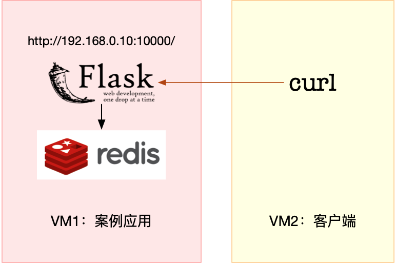
接下来，打开两个终端，分别 SSH 登录到这两台虚拟机中，并在第一台虚拟机中安装上述工具。
跟以前一样，案例中所有命令都默认以 root 用户运行，如果你是用普通用户身份登陆系统，请运行 sudo su root 命令切换到 root 用户。
到这里，准备工作就完成了。接下来，我们正式进入操作环节。
案例分析
首先，我们在第一个终端中，执行下面的命令，运行本次案例要分析的目标应用。正常情况下，你应该可以看到下面的输出：
# 注意下面的随机字符串是容器 ID，每次运行均会不同，并且你不需要关注它
$ docker run --name=redis -itd -p 10000:80 feisky/redis-server
ec41cb9e4dd5cb7079e1d9f72b7cee7de67278dbd3bd0956b4c0846bff211803
$ docker run --name=app --network=container:redis -itd feisky/redis-app
2c54eb252d0552448320d9155a2618b799a1e71d7289ec7277a61e72a9de5fd0
然后，再运行 docker ps 命令，确认两个容器都处于运行（Up）状态：
$ docker ps
CONTAINER ID IMAGE COMMAND CREATED STATUS PORTS NAMES
2c54eb252d05 feisky/redis-app "python /app.py" 48 seconds ago Up 47 seconds app
ec41cb9e4dd5 feisky/redis-server "docker-entrypoint.s…" 49 seconds ago Up 48 seconds 6379/tcp, 0.0.0.0:10000->80/tcp redis
今天的应用在 10000 端口监听，所以你可以通过 http://192.168.0.10:10000 ，来访问前面提到的三个接口。
比如，我们切换到第二个终端，使用 curl 工具，访问应用首页。如果你看到 hello redis的输出，说明应用正常启动：
$ curl http://192.168.0.10:10000/
hello redis
接下来，继续在终端二中，执行下面的 curl 命令，来调用应用的 /init 接口，初始化 Redis 缓存，并且插入 5000 条缓存信息。这个过程比较慢，比如我的机器就花了十几分钟时间。耐心等一会儿后，你会看到下面这行输出：
# 案例插入 5000 条数据，在实践时可以根据磁盘的类型适当调整，比如使用 SSD 时可以调大，而 HDD 可以适当调小
$ curl http://192.168.0.10:10000/init/5000
{"elapsed_seconds":30.26814079284668,"keys_initialized":5000}
继续执行下一个命令，访问应用的缓存查询接口。如果一切正常，你会看到如下输出：
$ curl http://192.168.0.10:10000/get_cache
{"count":1677,"data":["d97662fa-06ac-11e9-92c7-0242ac110002",...],"elapsed_seconds":10.545469760894775,"type":"good"}
我们看到，这个接口调用居然要花 10 秒！这么长的响应时间，显然不能满足实际的应用需求。
到底出了什么问题呢？我们还是要用前面学过的性能工具和原理，来找到这个瓶颈。
不过别急，同样为了避免分析过程中客户端的请求结束，在进行性能分析前，我们先要把 curl 命令放到一个循环里来执行。你可以在终端二中，继续执行下面的命令：
$ while true; do curl http://192.168.0.10:10000/get_cache; done
接下来，再重新回到终端一，查找接口响应慢的“病因”。
最近几个案例的现象都是响应很慢，这种情况下，我们自然先会怀疑，是不是系统资源出现了瓶颈。所以，先观察 CPU、内存和磁盘 I/O 等的使用情况肯定不会错。
我们先在终端一中执行 top 命令，分析系统的 CPU 使用情况：
$ top
top - 12:46:18 up 11 days, 8:49, 1 user, load average: 1.36, 1.36, 1.04
Tasks: 137 total, 1 running, 79 sleeping, 0 stopped, 0 zombie
%Cpu0 : 6.0 us, 2.7 sy, 0.0 ni, 5.7 id, 84.7 wa, 0.0 hi, 1.0 si, 0.0 st
%Cpu1 : 1.0 us, 3.0 sy, 0.0 ni, 94.7 id, 0.0 wa, 0.0 hi, 1.3 si, 0.0 st
KiB Mem : 8169300 total, 7342244 free, 432912 used, 394144 buff/cache
KiB Swap: 0 total, 0 free, 0 used. 7478748 avail Mem
PID USER PR NI VIRT RES SHR S %CPU %MEM TIME+ COMMAND
9181 root 20 0 193004 27304 8716 S 8.6 0.3 0:07.15 python
9085 systemd+ 20 0 28352 9760 1860 D 5.0 0.1 0:04.34 redis-server
368 root 20 0 0 0 0 D 1.0 0.0 0:33.88 jbd2/sda1-8
149 root 0 -20 0 0 0 I 0.3 0.0 0:10.63 kworker/0:1H
1549 root 20 0 236716 24576 9864 S 0.3 0.3 91:37.30 python3
观察 top 的输出可以发现，CPU0 的 iowait 比较高，已经达到了 84%；而各个进程的 CPU 使用率都不太高，最高的 python 和 redis-server ，也分别只有 8% 和 5%。再看内存，总内存 8GB，剩余内存还有 7GB 多，显然内存也没啥问题。
综合 top 的信息，最有嫌疑的就是 iowait。所以，接下来还是要继续分析，是不是 I/O 问题。
还在第一个终端中，先按下 Ctrl+C，停止 top 命令；然后，执行下面的 iostat 命令，查看有没有 I/O 性能问题：
$ iostat -d -x 1
Device r/s w/s rkB/s wkB/s rrqm/s wrqm/s %rrqm %wrqm r_await w_await aqu-sz rareq-sz wareq-sz svctm %util
...
sda 0.00 492.00 0.00 2672.00 0.00 176.00 0.00 26.35 0.00 1.76 0.00 0.00 5.43 0.00 0.00
观察 iostat 的输出，我们发现，磁盘 sda 每秒的写数据（wkB/s）为 2.5MB，I/O 使用率（%util）是 0。看来，虽然有些 I/O 操作，但并没导致磁盘的 I/O 瓶颈。
排查一圈儿下来，CPU 和内存使用没问题，I/O 也没有瓶颈，接下来好像就没啥分析方向了？
碰到这种情况，还是那句话，反思一下，是不是又漏掉什么有用线索了。你可以先自己思考一下，从分析对象（案例应用）、系统原理和性能工具这三个方向下功夫，回忆它们的特性，查找现象的异常，再继续往下走。
回想一下，今天的案例问题是从 Redis 缓存中查询数据慢。对查询来说，对应的 I/O 应该是磁盘的读操作，但刚才我们用 iostat 看到的却是写操作。虽说 I/O 本身并没有性能瓶颈，但这里的磁盘写也是比较奇怪的。为什么会有磁盘写呢？那我们就得知道，到底是哪个进程在写磁盘。
要知道 I/O 请求来自哪些进程，还是要靠我们的老朋友 pidstat。在终端一中运行下面的 pidstat 命令，观察进程的 I/O 情况：
$ pidstat -d 1
12:49:35 UID PID kB_rd/s kB_wr/s kB_ccwr/s iodelay Command
12:49:36 0 368 0.00 16.00 0.00 86 jbd2/sda1-8
12:49:36 100 9085 0.00 636.00 0.00 1 redis-server
从 pidstat 的输出，我们看到，I/O 最多的进程是 PID 为 9085 的 redis-server，并且它也刚好是在写磁盘。这说明，确实是 redis-server 在进行磁盘写。
当然，光找到读写磁盘的进程还不够，我们还要再用 strace+lsof 组合，看看 redis-server 到底在写什么。
接下来，还是在终端一中，执行 strace 命令，并且指定 redis-server 的进程号 9085：
# -f 表示跟踪子进程和子线程，-T 表示显示系统调用的时长，-tt 表示显示跟踪时间
$ strace -f -T -tt -p 9085
[pid 9085] 14:20:16.826131 epoll_pwait(5, [{EPOLLIN, {u32=8, u64=8}}], 10128, 65, NULL, 8) = 1 <0.000055>
[pid 9085] 14:20:16.826301 read(8, "*2\r\n$3\r\nGET\r\n$41\r\nuuid:5b2e76cc-"..., 16384) = 61 <0.000071>
[pid 9085] 14:20:16.826477 read(3, 0x7fff366a5747, 1) = -1 EAGAIN (Resource temporarily unavailable) <0.000063>
[pid 9085] 14:20:16.826645 write(8, "$3\r\nbad\r\n", 9) = 9 <0.000173>
[pid 9085] 14:20:16.826907 epoll_pwait(5, [{EPOLLIN, {u32=8, u64=8}}], 10128, 65, NULL, 8) = 1 <0.000032>
[pid 9085] 14:20:16.827030 read(8, "*2\r\n$3\r\nGET\r\n$41\r\nuuid:55862ada-"..., 16384) = 61 <0.000044>
[pid 9085] 14:20:16.827149 read(3, 0x7fff366a5747, 1) = -1 EAGAIN (Resource temporarily unavailable) <0.000043>
[pid 9085] 14:20:16.827285 write(8, "$3\r\nbad\r\n", 9) = 9 <0.000141>
[pid 9085] 14:20:16.827514 epoll_pwait(5, [{EPOLLIN, {u32=8, u64=8}}], 10128, 64, NULL, 8) = 1 <0.000049>
[pid 9085] 14:20:16.827641 read(8, "*2\r\n$3\r\nGET\r\n$41\r\nuuid:53522908-"..., 16384) = 61 <0.000043>
[pid 9085] 14:20:16.827784 read(3, 0x7fff366a5747, 1) = -1 EAGAIN (Resource temporarily unavailable) <0.000034>
[pid 9085] 14:20:16.827945 write(8, "$4\r\ngood\r\n", 10) = 10 <0.000288>
[pid 9085] 14:20:16.828339 epoll_pwait(5, [{EPOLLIN, {u32=8, u64=8}}], 10128, 63, NULL, 8) = 1 <0.000057>
[pid 9085] 14:20:16.828486 read(8, "*3\r\n$4\r\nSADD\r\n$4\r\ngood\r\n$36\r\n535"..., 16384) = 67 <0.000040>
[pid 9085] 14:20:16.828623 read(3, 0x7fff366a5747, 1) = -1 EAGAIN (Resource temporarily unavailable) <0.000052>
[pid 9085] 14:20:16.828760 write(7, "*3\r\n$4\r\nSADD\r\n$4\r\ngood\r\n$36\r\n535"..., 67) = 67 <0.000060>
[pid 9085] 14:20:16.828970 fdatasync(7) = 0 <0.005415>
[pid 9085] 14:20:16.834493 write(8, ":1\r\n", 4) = 4 <0.000250>
观察一会儿，有没有发现什么有趣的现象呢？
事实上，从系统调用来看， epoll_pwait、read、write、fdatasync 这些系统调用都比较频繁。那么，刚才观察到的写磁盘，应该就是 write 或者 fdatasync 导致的了。
接着再来运行 lsof 命令，找出这些系统调用的操作对象：
$ lsof -p 9085
redis-ser 9085 systemd-network 3r FIFO 0,12 0t0 15447970 pipe
redis-ser 9085 systemd-network 4w FIFO 0,12 0t0 15447970 pipe
redis-ser 9085 systemd-network 5u a_inode 0,13 0 10179 [eventpoll]
redis-ser 9085 systemd-network 6u sock 0,9 0t0 15447972 protocol: TCP
redis-ser 9085 systemd-network 7w REG 8,1 8830146 2838532 /data/appendonly.aof
redis-ser 9085 systemd-network 8u sock 0,9 0t0 15448709 protocol: TCP
现在你会发现，描述符编号为 3 的是一个 pipe 管道，5 号是 eventpoll，7 号是一个普通文件，而 8 号是一个 TCP socket。
结合磁盘写的现象，我们知道，只有 7 号普通文件才会产生磁盘写，而它操作的文件路径是 /data/appendonly.aof，相应的系统调用包括 write 和 fdatasync。
如果你对 Redis 的持久化配置比较熟，看到这个文件路径以及 fdatasync 的系统调用，你应该能想到，这对应着正是 Redis 持久化配置中的 appendonly 和 appendfsync 选项。很可能是因为它们的配置不合理，导致磁盘写比较多。
接下来就验证一下这个猜测，我们可以通过 Redis 的命令行工具，查询这两个选项的配置。
继续在终端一中，运行下面的命令，查询 appendonly 和 appendfsync 的配置：
$ docker exec -it redis redis-cli config get 'append*'
1) "appendfsync"
2) "always"
3) "appendonly"
4) "yes"
从这个结果你可以发现，appendfsync 配置的是 always，而 appendonly 配置的是 yes。这两个选项的详细含义，你可以从 Redis Persistence 的文档中查到，这里我做一下简单介绍。
Redis 提供了两种数据持久化的方式，分别是快照和追加文件。
快照方式，会按照指定的时间间隔，生成数据的快照，并且保存到磁盘文件中。为了避免阻塞主进程，Redis 还会 fork 出一个子进程，来负责快照的保存。这种方式的性能好，无论是备份还是恢复，都比追加文件好很多。
不过，它的缺点也很明显。在数据量大时，fork 子进程需要用到比较大的内存，保存数据也很耗时。所以，你需要设置一个比较长的时间间隔来应对，比如至少 5 分钟。这样，如果发生故障，你丢失的就是几分钟的数据。
追加文件，则是用在文件末尾追加记录的方式，对 Redis 写入的数据，依次进行持久化，所以它的持久化也更安全。
此外，它还提供了一个用 appendfsync 选项设置 fsync 的策略，确保写入的数据都落到磁盘中，具体选项包括 always、everysec、no 等。
- always 表示，每个操作都会执行一次 fsync，是最为安全的方式；
- everysec 表示，每秒钟调用一次 fsync ，这样可以保证即使是最坏情况下，也只丢失 1 秒的数据；
- 而 no 表示交给操作系统来处理。
回忆一下我们刚刚看到的配置，appendfsync 配置的是 always，意味着每次写数据时，都会调用一次 fsync，从而造成比较大的磁盘 I/O 压力。
当然，你还可以用 strace ，观察这个系统调用的执行情况。比如通过 -e 选项指定 fdatasync 后，你就会得到下面的结果：
$ strace -f -p 9085 -T -tt -e fdatasync
strace: Process 9085 attached with 4 threads
[pid 9085] 14:22:52.013547 fdatasync(7) = 0 <0.007112>
[pid 9085] 14:22:52.022467 fdatasync(7) = 0 <0.008572>
[pid 9085] 14:22:52.032223 fdatasync(7) = 0 <0.006769>
...
[pid 9085] 14:22:52.139629 fdatasync(7) = 0 <0.008183>
从这里你可以看到，每隔 10ms 左右，就会有一次 fdatasync 调用，并且每次调用本身也要消耗 7~8ms。
不管哪种方式，都可以验证我们的猜想，配置确实不合理。这样，我们就找出了 Redis 正在进行写入的文件，也知道了产生大量 I/O 的原因。
不过，回到最初的疑问，为什么查询时会有磁盘写呢？按理来说不应该只有数据的读取吗？这就需要我们再来审查一下 strace -f -T -tt -p 9085 的结果。
read(8, "*2\r\n$3\r\nGET\r\n$41\r\nuuid:53522908-"..., 16384)
write(8, "$4\r\ngood\r\n", 10)
read(8, "*3\r\n$4\r\nSADD\r\n$4\r\ngood\r\n$36\r\n535"..., 16384)
write(7, "*3\r\n$4\r\nSADD\r\n$4\r\ngood\r\n$36\r\n535"..., 67)
write(8, ":1\r\n", 4)
细心的你应该记得，根据 lsof 的分析，文件描述符编号为 7 的是一个普通文件 /data/appendonly.aof，而编号为 8 的是 TCP socket。而观察上面的内容，8 号对应的 TCP 读写，是一个标准的“请求 - 响应”格式，即：
- 从 socket 读取 GET uuid:53522908-… 后，响应 good；
- 再从 socket 读取 SADD good 535… 后，响应 1。
对 Redis 来说，SADD 是一个写操作，所以 Redis 还会把它保存到用于持久化的 appendonly.aof 文件中。
观察更多的 strace 结果，你会发现，每当 GET 返回 good 时，随后都会有一个 SADD 操作，这也就导致了，明明是查询接口，Redis 却有大量的磁盘写。
到这里，我们就找出了 Redis 写磁盘的原因。不过，在下最终结论前，我们还是要确认一下，8 号 TCP socket 对应的 Redis 客户端，到底是不是我们的案例应用。
我们可以给 lsof 命令加上 -i 选项，找出 TCP socket 对应的 TCP 连接信息。不过，由于 Redis 和 Python 应用都在容器中运行，我们需要进入容器的网络命名空间内部，才能看到完整的 TCP 连接。
注意：下面的命令用到的 nsenter 工具，可以进入容器命名空间。如果你的系统没有安装，请运行下面命令安装 nsenter： docker run --rm -v /usr/local/bin:/target jpetazzo/nsenter
还是在终端一中，运行下面的命令：
# 由于这两个容器共享同一个网络命名空间，所以我们只需要进入 app 的网络命名空间即可
$ PID=$(docker inspect --format {{.State.Pid}} app)
# -i 表示显示网络套接字信息
$ nsenter --target $PID --net -- lsof -i
COMMAND PID USER FD TYPE DEVICE SIZE/OFF NODE NAME
redis-ser 9085 systemd-network 6u IPv4 15447972 0t0 TCP localhost:6379 (LISTEN)
redis-ser 9085 systemd-network 8u IPv4 15448709 0t0 TCP localhost:6379->localhost:32996 (ESTABLISHED)
python 9181 root 3u IPv4 15448677 0t0 TCP *:http (LISTEN)
python 9181 root 5u IPv4 15449632 0t0 TCP localhost:32996->localhost:6379 (ESTABLISHED)
这次我们可以看到，redis-server 的 8 号文件描述符，对应 TCP 连接 localhost:6379->localhost:32996。其中， localhost:6379 是 redis-server 自己的监听端口，自然 localhost:32996 就是 redis 的客户端。再观察最后一行，localhost:32996 对应的，正是我们的 Python 应用程序（进程号为 9181）。
历经各种波折，我们总算找出了 Redis 响应延迟的潜在原因。总结一下，我们找到两个问题。
第一个问题，Redis 配置的 appendfsync 是 always，这就导致 Redis 每次的写操作，都会触发 fdatasync 系统调用。今天的案例，没必要用这么高频的同步写，使用默认的 1s 时间间隔，就足够了。
第二个问题，Python 应用在查询接口中会调用 Redis 的 SADD 命令，这很可能是不合理使用缓存导致的。
对于第一个配置问题，我们可以执行下面的命令，把 appendfsync 改成 everysec：
$ docker exec -it redis redis-cli config set appendfsync everysec
OK
改完后，切换到终端二中查看，你会发现，现在的请求时间，已经缩短到了 0.9s：
{..., "elapsed_seconds":0.9368953704833984,"type":"good"}
而第二个问题，就要查看应用的源码了。点击 Github ，你就可以查看案例应用的源代码：
def get_cache(type_name):
'''handler for /get_cache'''
for key in redis_client.scan_iter("uuid:*"):
value = redis_client.get(key)
if value == type_name:
redis_client.sadd(type_name, key[5:])
data = list(redis_client.smembers(type_name))
redis_client.delete(type_name)
return jsonify({"type": type_name, 'count': len(data), 'data': data})
果然，Python 应用把 Redis 当成临时空间，用来存储查询过程中找到的数据。不过我们知道，这些数据放内存中就可以了，完全没必要再通过网络调用存储到 Redis 中。
基于这个思路，我把修改后的代码也推送到了相同的源码文件中，你可以通过 http://192.168.0.10:10000/get_cache_data 这个接口来访问它。
我们切换到终端二，按 Ctrl+C 停止之前的 curl 命令；然后执行下面的 curl 命令，调用 http://192.168.0.10:10000/get_cache_data 新接口：
$ while true; do curl http://192.168.0.10:10000/get_cache_data; done
{...,"elapsed_seconds":0.16034674644470215,"type":"good"}
你可以发现，解决第二个问题后，新接口的性能又有了进一步的提升，从刚才的 0.9s ，再次缩短成了不到 0.2s。
当然，案例最后，不要忘记清理案例应用。你可以切换到终端一中，执行下面的命令进行清理：
$ docker rm -f app redis
小结
今天我带你一起分析了一个 Redis 缓存的案例。
我们先用 top、iostat ，分析了系统的 CPU 、内存和磁盘使用情况，不过却发现，系统资源并没有出现瓶颈。这个时候想要进一步分析的话，该从哪个方向着手呢？
通过今天的案例你会发现，为了进一步分析，就需要你对系统和应用程序的工作原理有一定的了解。
比如，今天的案例中，虽然磁盘 I/O 并没有出现瓶颈，但从 Redis 的原理来说，查询缓存时不应该出现大量的磁盘 I/O 写操作。
顺着这个思路，我们继续借助 pidstat、strace、lsof、nsenter 等一系列的工具，找出了两个潜在问题，一个是 Redis 的不合理配置，另一个是 Python 应用对 Redis 的滥用。找到瓶颈后，相应的优化工作自然就比较轻松了。
思考
最后给你留一个思考题。从上一节 MySQL 到今天 Redis 的案例分析，你有没有发现 I/O 性能问题的分析规律呢？如果你有任何想法或心得，都可以记录下来。
当然，这两个案例这并不能涵盖所有的 I/O 性能问题。你在实际工作中，还碰到过哪些 I/O 性能问题吗？你又是怎么分析的呢？
欢迎在留言区和我讨论，也欢迎把这篇文章分享给你的同事、朋友。我们一起在实战中演练，在交流中进步。
30 套路篇：如何迅速分析出系统IO的瓶颈在哪里？
你好，我是倪朋飞。
前几节学习中，我们通过几个案例，分析了各种常见的 I/O 性能问题。通过这些实战操作，你应该已经熟悉了 I/O 性能问题的分析和定位思路，也掌握了很多 I/O 性能分析的工具。
不过，我想你可能还是会困惑，如果离开专栏，换成其他的实际工作场景，案例中提到的各种性能指标和工具，又该如何选择呢？
上一节最后，我留下了作业，让你自己整理思路。今天，我就带你一起复习，总结一下，如何“快准狠”定位系统的 I/O 瓶颈；并且梳理清楚，在不同场景下，指标工具怎么选，性能瓶颈又该如何定位。
性能指标
老规矩，我们先来回顾一下，描述 I/O 的性能指标有哪些？你可以先回想一下文件系统和磁盘 I/O 的原理，结合下面这张 Linux 系统的 I/O 栈图，凭着记忆和理解自己写一写。或者，你也可以打开前面的文章，挨个复习总结一下。
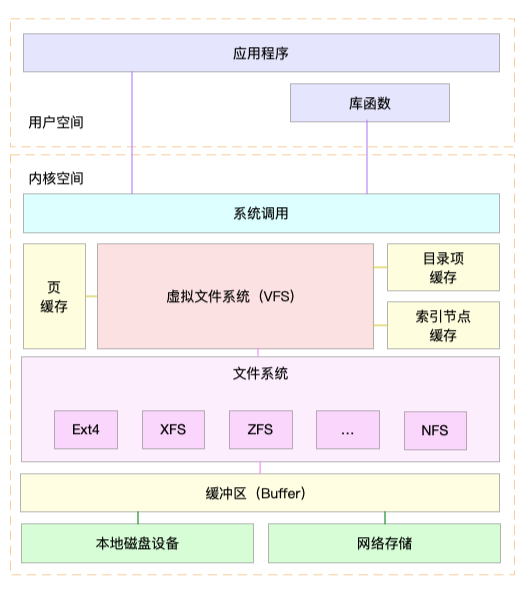
学了这么久的 I/O 性能知识，一说起 I/O 指标，你应该首先会想到分类描述。我们要区分开文件系统和磁盘，分别用不同指标来描述它们的性能。
文件系统 I/O 性能指标
我们先来看文件系统的情况。
首先，最容易想到的是存储空间的使用情况，包括容量、使用量以及剩余空间等。我们通常也称这些为磁盘空间的使用量，因为文件系统的数据最终还是存储在磁盘上。
不过要注意，这些只是文件系统向外展示的空间使用，而非在磁盘空间的真实用量，因为文件系统的元数据也会占用磁盘空间。
而且，如果你配置了 RAID，从文件系统看到的使用量跟实际磁盘的占用空间，也会因为 RAID 级别的不同而不一样。比方说，配置 RAID10 后，你从文件系统最多也只能看到所有磁盘容量的一半。
除了数据本身的存储空间，还有一个容易忽略的是索引节点的使用情况，它也包括容量、使用量以及剩余量等三个指标。如果文件系统中存储过多的小文件，就可能碰到索引节点容量已满的问题。
其次，你应该想到的是前面多次提到过的缓存使用情况，包括页缓存、目录项缓存、索引节点缓存以及各个具体文件系统（如 ext4、XFS 等）的缓存。这些缓存会使用速度更快的内存，用来临时存储文件数据或者文件系统的元数据，从而可以减少访问慢速磁盘的次数。
除了以上这两点，文件 I/O 也是很重要的性能指标，包括 IOPS（包括 r/s 和 w/s）、响应时间（延迟）以及吞吐量（B/s）等。在考察这类指标时，通常还要考虑实际文件的读写情况。比如，结合文件大小、文件数量、I/O 类型等，综合分析文件 I/O 的性能。
诚然，这些性能指标非常重要，但不幸的是，Linux 文件系统并没提供，直接查看这些指标的方法。我们只能通过系统调用、动态跟踪或者基准测试等方法，间接进行观察、评估。
不过，实际上，这些指标在我们考察磁盘性能时更容易见到，因为 Linux 为磁盘性能提供了更详细的数据。
磁盘 I/O 性能指标
接下来，我们就来具体看看，哪些性能指标可以衡量磁盘 I/O 的性能。
在磁盘 I/O 原理的文章中，我曾提到过四个核心的磁盘 I/O 指标。
- 使用率，是指磁盘忙处理 I/O 请求的百分比。过高的使用率（比如超过 60%）通常意味着磁盘 I/O 存在性能瓶颈。
- IOPS（Input/Output Per Second），是指每秒的 I/O 请求数。
- 吞吐量，是指每秒的 I/O 请求大小。
- 响应时间，是指从发出 I/O 请求到收到响应的间隔时间。
考察这些指标时，一定要注意综合 I/O 的具体场景来分析，比如读写类型（顺序还是随机）、读写比例、读写大小、存储类型（有无 RAID 以及 RAID 级别、本地存储还是网络存储）等。
不过，这里有个大忌，就是把不同场景的 I/O 性能指标，直接进行分析对比。这是很常见的一个误区，你一定要避免。
除了这些指标外，在前面 Cache 和 Buffer 原理的文章中，我曾多次提到，**缓冲区（Buffer）**也是要重点掌握的指标，它经常出现在内存和磁盘问题的分析中。
文件系统和磁盘 I/O 的这些指标都很有用，需要我们熟练掌握，所以我总结成了一张图，帮你分类和记忆。你可以保存并打印出来，方便随时查看复习，也可以把它当成 I/O 性能分析的“指标筛选”清单使用。
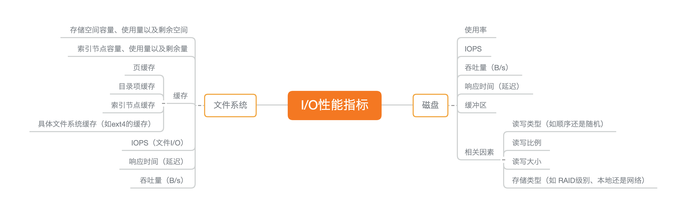
性能工具
掌握文件系统和磁盘 I/O 的性能指标后，我们还要知道，怎样去获取这些指标，也就是搞明白工具的使用问题。
你还记得前面的基础篇和案例篇中，都分别用了哪些工具吗？我们一起回顾下这些内容。
第一，在文件系统的原理中，我介绍了查看文件系统容量的工具 df。它既可以查看文件系统数据的空间容量，也可以查看索引节点的容量。至于文件系统缓存，我们通过 /proc/meminfo、/proc/slabinfo 以及 slabtop 等各种来源，观察页缓存、目录项缓存、索引节点缓存以及具体文件系统的缓存情况。
第二，在磁盘 I/O 的原理中，我们分别用 iostat 和 pidstat 观察了磁盘和进程的 I/O 情况。它们都是最常用的 I/O 性能分析工具。通过 iostat ，我们可以得到磁盘的 I/O 使用率、吞吐量、响应时间以及 IOPS 等性能指标；而通过 pidstat ，则可以观察到进程的 I/O 吞吐量以及块设备 I/O 的延迟等。
第三，在狂打日志的案例中，我们先用 top 查看系统的 CPU 使用情况，发现 iowait 比较高；然后，又用 iostat 发现了磁盘的 I/O 使用率瓶颈，并用 pidstat 找出了大量 I/O 的进程；最后，通过 strace 和 lsof，我们找出了问题进程正在读写的文件，并最终锁定性能问题的来源——原来是进程在狂打日志。
第四，在磁盘 I/O 延迟的单词热度案例中，我们同样先用 top、iostat ，发现磁盘有 I/O 瓶颈，并用 pidstat 找出了大量 I/O 的进程。可接下来，想要照搬上次操作的我们失败了。在随后的 strace 命令中，我们居然没看到 write 系统调用。于是，我们换了一个思路，用新工具 filetop 和 opensnoop ，从内核中跟踪系统调用，最终找出瓶颈的来源。
最后，在 MySQL 和 Redis 的案例中，同样的思路，我们先用 top、iostat 以及 pidstat ，确定并找出 I/O 性能问题的瓶颈来源，它们正是 mysqld 和 redis-server。随后，我们又用 strace+lsof 找出了它们正在读写的文件。
关于 MySQL 案例，根据 mysqld 正在读写的文件路径，再结合 MySQL 数据库引擎的原理，我们不仅找出了数据库和数据表的名称，还进一步发现了慢查询的问题，最终通过优化索引解决了性能瓶颈。
至于 Redis 案例，根据 redis-server 读写的文件，以及正在进行网络通信的 TCP Socket，再结合 Redis 的工作原理，我们发现 Redis 持久化选项配置有问题；从 TCP Socket 通信的数据中，我们还发现了客户端的不合理行为。于是，我们修改 Redis 配置选项，并优化了客户端使用 Redis 的方式，从而减少网络通信次数，解决性能问题。
一下子复习了这么多，你是不是觉得头昏脑胀，再次想感叹性能工具的繁杂呀！其实，只要把相应的系统工作原理捋明白，工具使用并不难
性能指标和工具的联系
同前面 CPU 和内存板块的学习一样，我建议从指标和工具两个不同维度出发，整理记忆。
- 从 I/O 指标出发，你更容易把性能工具同系统工作原理关联起来，对性能问题有宏观的认识和把握。
- 而从性能工具出发，可以让你更快上手使用工具，迅速找出我们想观察的性能指标。特别是在工具有限的情况下，我们更要充分利用好手头的每一个工具，少量工具也要尽力挖掘出大量信息。
第一个维度，从文件系统和磁盘 I/O 的性能指标出发。换句话说，当你想查看某个性能指标时，要清楚知道，哪些工具可以做到。
根据不同的性能指标，对提供指标的性能工具进行分类和理解。这样，在实际排查性能问题时，你就可以清楚知道，什么工具可以提供你想要的指标，而不是毫无根据地挨个尝试，撞运气。
虽然你不需要把所有相关的工具背下来，但如果能记清楚每个指标对应的工具特性，实际操作起来，一定能更高效、灵活。
这里，我把提供 I/O 性能指标的工具做成了一个表格，方便你梳理关系和理解记忆。你可以把它保存并打印出来，随时记忆。当然，你也可以把它当成一个“指标工具”指南来使用。
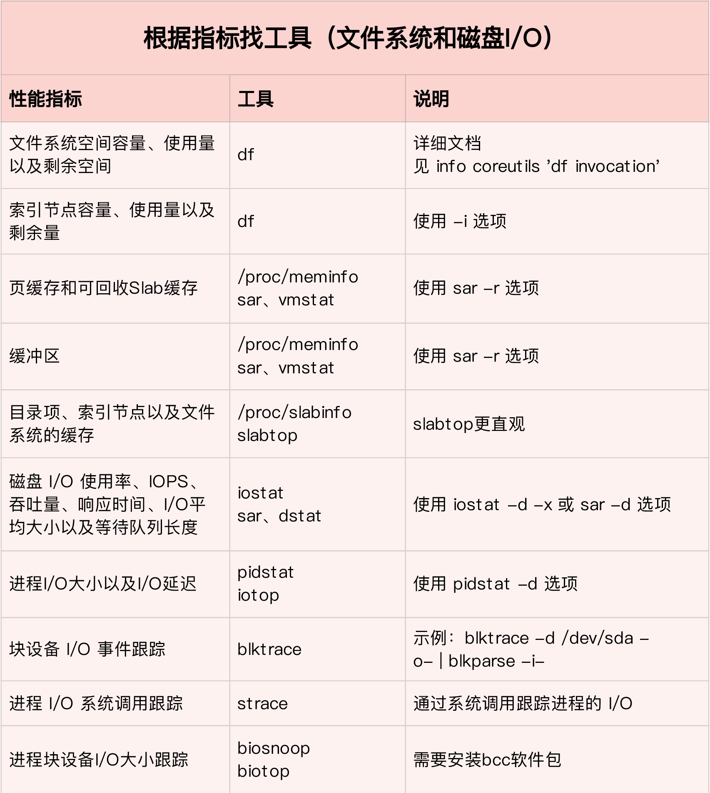
下面，我们再来看第二个维度。
第二个维度，从工具出发。也就是当你已经安装了某个工具后，要知道这个工具能提供哪些指标。
这在实际环境中，特别是生产环境中也是非常重要的。因为很多情况下，你并没有权限安装新的工具包，只能最大化地利用好系统已有的工具，而这就需要你对它们有足够的了解。
具体到每个工具的使用方法，一般都支持丰富的配置选项。不过不用担心，这些配置选项并不用背下来。你只要知道有哪些工具，以及这些工具的基本功能是什么就够了。真正要用到的时候， 通过 man 命令，查它们的使用手册就可以了。
同样的，我也将这些常用工具汇总成了一个表格，方便你区分和理解。自然，你也可以当成一个“工具指标”指南使用，需要时查表即可。
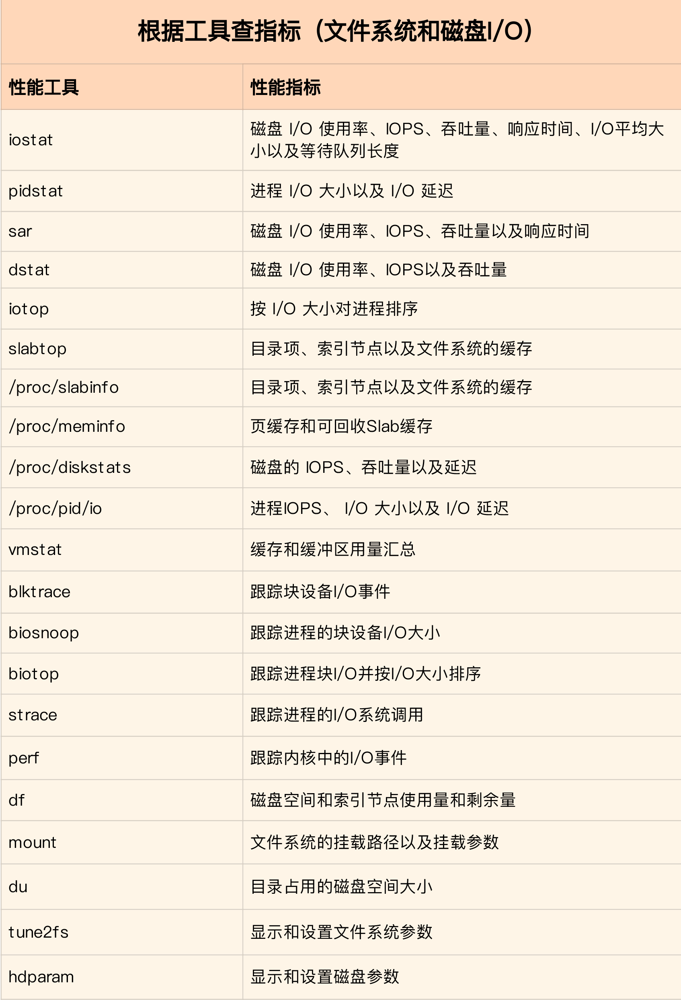
如何迅速分析 I/O 的性能瓶颈
到这里，相信你对内存的性能指标已经非常熟悉，也清楚每种性能指标分别能用什么工具来获取。
你应该发现了，比起前两个板块，虽然文件系统和磁盘的 I/O 性能指标仍比较多，但核心的性能工具，其实就是那么几个。熟练掌握它们，再根据实际系统的现象，并配合系统和应用程序的原理， I/O 性能分析就很清晰了。
不过，不管怎么说，如果每次一碰到 I/O 的性能问题，就把上面提到的所有工具跑一遍，肯定是不现实的。
在实际生产环境中，我们希望的是，尽可能快地定位系统的瓶颈，然后尽可能快地优化性能，也就是要又快又准地解决性能问题。
那有没有什么方法，可以又快又准地找出系统的 I/O 瓶颈呢？答案是肯定的。
还是那句话，找关联。多种性能指标间都有一定的关联性，不要完全孤立的看待他们。想弄清楚性能指标的关联性，就要通晓每种性能指标的工作原理。这也是为什么我在介绍每个性能指标时，都要穿插讲解相关的系统原理，再次希望你能记住这一点。
以我们前面几期的案例为例，如果你仔细对比前面的几个案例，从 I/O 延迟的案例到 MySQL 和 Redis 的案例，就会发现，虽然这些问题千差万别，但从 I/O 角度来分析，最开始的分析思路基本上类似，都是：
- 先用 iostat 发现磁盘 I/O 性能瓶颈；
- 再借助 pidstat ，定位出导致瓶颈的进程；
- 随后分析进程的 I/O 行为；
- 最后，结合应用程序的原理，分析这些 I/O 的来源。
**所以，为了缩小排查范围，我通常会先运行那几个支持指标较多的工具，如 iostat、vmstat、pidstat 等。**然后再根据观察到的现象，结合系统和应用程序的原理，寻找下一步的分析方向。我把这个过程画成了一张图，你可以保存下来参考使用。
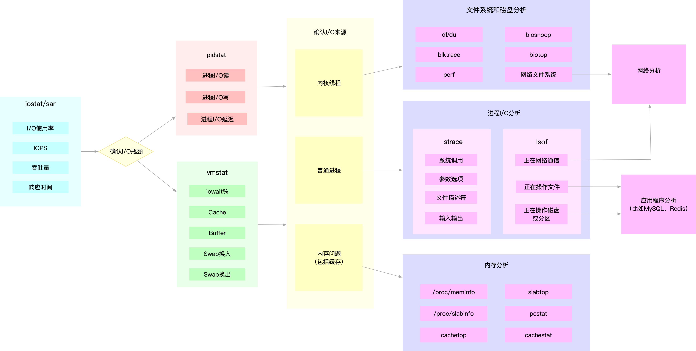
图中列出了最常用的几个文件系统和磁盘 I/O 性能分析工具，以及相应的分析流程，箭头则表示分析方向。这其中，iostat、vmstat、pidstat 是最核心的几个性能工具，它们也提供了最重要的 I/O 性能指标。举几个例子你可能更容易理解。
例如，在前面讲过的 MySQL 和 Redis 案例中，我们就是通过 iostat 确认磁盘出现 I/O 性能瓶颈，然后用 pidstat 找出 I/O 最大的进程，接着借助 strace 找出该进程正在读写的文件，最后结合应用程序的原理，找出大量 I/O 的原因。
再如，当你用 iostat 发现磁盘有 I/O 性能瓶颈后，再用 pidstat 和 vmstat 检查，可能会发现 I/O 来自内核线程，如 Swap 使用大量升高。这种情况下，你就得进行内存分析了，先找出占用大量内存的进程，再设法减少内存的使用。
另外注意，我在这个图中只列出了最核心的几个性能工具，并没有列出前面表格中的所有工具。这么做，一方面是不想用大量的工具列表吓到你。在学习之初就接触所有核心或小众的工具，不见得是好事。另一方面，也是希望你能先把重心放在核心工具上，毕竟熟练掌握它们，就可以解决大多数问题。
所以，你可以保存下这张图，作为文件系统和磁盘 I/O 性能分析的思路图谱。从最核心的这几个工具开始，通过我提供的那些案例，自己在真实环境里实践，拿下它们。
小结
今天，我们一起复习了常见的文件系统和磁盘 I/O 性能指标，梳理了常见的 I/O 性能观测工具，并建立了性能指标和工具的关联。最后，我们还总结了快速分析 I/O 性能问题的思路。
还是那句话，虽然 I/O 的性能指标很多，相应的性能分析工具也有不少，但熟悉了各指标含义后，你就会自然找到它们的关联。顺着这个思路往下走，掌握常用的分析套路也并不难。
思考
专栏学习中，我只列举了几个最常见的案例，帮你理解文件系统和磁盘 I/O 性能的原理和分析方法。你肯定也碰到过不少其他 I/O 性能问题吧。我想请你一起聊聊，你碰到过哪些 I/O 性能问题呢？你又是怎么分析出它的瓶颈呢？
欢迎在留言区和我讨论，也欢迎你把这篇文章分享给你的同事、朋友。我们一起在实战中演练，在交流中进步。
31 套路篇：磁盘 IO 性能优化的几个思路
你好，我是倪朋飞。
上一节，我们一起回顾了常见的文件系统和磁盘 I/O 性能指标，梳理了核心的 I/O 性能观测工具，最后还总结了快速分析 I/O 性能问题的思路。
虽然 I/O 的性能指标很多，相应的性能分析工具也有好几个，但理解了各种指标的含义后，你就会发现它们其实都有一定的关联。
顺着这些关系往下理解，你就会发现，掌握这些常用的瓶颈分析思路，其实并不难。
找出了 I/O 的性能瓶颈后，下一步要做的就是优化了，也就是如何以最快的速度完成 I/O 操作，或者换个思路，减少甚至避免磁盘的 I/O 操作。
今天，我就来说说，优化 I/O 性能问题的思路和注意事项。
I/O 基准测试
按照我的习惯，优化之前，我会先问自己， I/O 性能优化的目标是什么？换句话说，我们观察的这些 I/O 性能指标（比如 IOPS、吞吐量、延迟等），要达到多少才合适呢？
事实上，I/O 性能指标的具体标准，每个人估计会有不同的答案，因为我们每个人的应用场景、使用的文件系统和物理磁盘等，都有可能不一样。
为了更客观合理地评估优化效果，我们首先应该对磁盘和文件系统进行基准测试，得到文件系统或者磁盘 I/O 的极限性能。
fio（Flexible I/O Tester）正是最常用的文件系统和磁盘 I/O 性能基准测试工具。它提供了大量的可定制化选项，可以用来测试，裸盘或者文件系统在各种场景下的 I/O 性能，包括了不同块大小、不同 I/O 引擎以及是否使用缓存等场景。
fio 的安装比较简单，你可以执行下面的命令来安装它：
# Ubuntu
apt-get install -y fio
# CentOS
yum install -y fio
安装完成后，就可以执行 man fio 查询它的使用方法。
fio 的选项非常多， 我会通过几个常见场景的测试方法，介绍一些最常用的选项。这些常见场景包括随机读、随机写、顺序读以及顺序写等，你可以执行下面这些命令来测试：
# 随机读
fio -name=randread -direct=1 -iodepth=64 -rw=randread -ioengine=libaio -bs=4k -size=1G -numjobs=1 -runtime=1000 -group_reporting -filename=/dev/sdb
# 随机写
fio -name=randwrite -direct=1 -iodepth=64 -rw=randwrite -ioengine=libaio -bs=4k -size=1G -numjobs=1 -runtime=1000 -group_reporting -filename=/dev/sdb
# 顺序读
fio -name=read -direct=1 -iodepth=64 -rw=read -ioengine=libaio -bs=4k -size=1G -numjobs=1 -runtime=1000 -group_reporting -filename=/dev/sdb
# 顺序写
fio -name=write -direct=1 -iodepth=64 -rw=write -ioengine=libaio -bs=4k -size=1G -numjobs=1 -runtime=1000 -group_reporting -filename=/dev/sdb
在这其中，有几个参数需要你重点关注一下。
- direct，表示是否跳过系统缓存。上面示例中，我设置的 1 ，就表示跳过系统缓存。
- iodepth，表示使用异步 I/O（asynchronous I/O，简称 AIO）时，同时发出的 I/O 请求上限。在上面的示例中，我设置的是 64。
- rw，表示 I/O 模式。我的示例中， read/write 分别表示顺序读 / 写，而 randread/randwrite 则分别表示随机读 / 写。
- ioengine，表示 I/O 引擎，它支持同步（sync）、异步（libaio）、内存映射（mmap）、网络（net）等各种 I/O 引擎。上面示例中，我设置的 libaio 表示使用异步 I/O。
- bs，表示 I/O 的大小。示例中，我设置成了 4K（这也是默认值）。
- filename，表示文件路径，当然，它可以是磁盘路径（测试磁盘性能），也可以是文件路径（测试文件系统性能）。示例中，我把它设置成了磁盘 /dev/sdb。不过注意，用磁盘路径测试写，会破坏这个磁盘中的文件系统，所以在使用前，你一定要事先做好数据备份。
下面就是我使用 fio 测试顺序读的一个报告示例。
read: (g=0): rw=read, bs=(R) 4096B-4096B, (W) 4096B-4096B, (T) 4096B-4096B, ioengine=libaio, iodepth=64
fio-3.1
Starting 1 process
Jobs: 1 (f=1): [R(1)][100.0%][r=16.7MiB/s,w=0KiB/s][r=4280,w=0 IOPS][eta 00m:00s]
read: (groupid=0, jobs=1): err= 0: pid=17966: Sun Dec 30 08:31:48 2018
read: IOPS=4257, BW=16.6MiB/s (17.4MB/s)(1024MiB/61568msec)
slat (usec): min=2, max=2566, avg= 4.29, stdev=21.76
clat (usec): min=228, max=407360, avg=15024.30, stdev=20524.39
lat (usec): min=243, max=407363, avg=15029.12, stdev=20524.26
clat percentiles (usec):
| 1.00th=[ 498], 5.00th=[ 1020], 10.00th=[ 1319], 20.00th=[ 1713],
| 30.00th=[ 1991], 40.00th=[ 2212], 50.00th=[ 2540], 60.00th=[ 2933],
| 70.00th=[ 5407], 80.00th=[ 44303], 90.00th=[ 45351], 95.00th=[ 45876],
| 99.00th=[ 46924], 99.50th=[ 46924], 99.90th=[ 48497], 99.95th=[ 49021],
| 99.99th=[404751]
bw ( KiB/s): min= 8208, max=18832, per=99.85%, avg=17005.35, stdev=998.94, samples=123
iops : min= 2052, max= 4708, avg=4251.30, stdev=249.74, samples=123
lat (usec) : 250=0.01%, 500=1.03%, 750=1.69%, 1000=2.07%
lat (msec) : 2=25.64%, 4=37.58%, 10=2.08%, 20=0.02%, 50=29.86%
lat (msec) : 100=0.01%, 500=0.02%
cpu : usr=1.02%, sys=2.97%, ctx=33312, majf=0, minf=75
IO depths : 1=0.1%, 2=0.1%, 4=0.1%, 8=0.1%, 16=0.1%, 32=0.1%, >=64=100.0%
submit : 0=0.0%, 4=100.0%, 8=0.0%, 16=0.0%, 32=0.0%, 64=0.0%, >=64=0.0%
complete : 0=0.0%, 4=100.0%, 8=0.0%, 16=0.0%, 32=0.0%, 64=0.1%, >=64=0.0%
issued rwt: total=262144,0,0, short=0,0,0, dropped=0,0,0
latency : target=0, window=0, percentile=100.00%, depth=64
Run status group 0 (all jobs):
READ: bw=16.6MiB/s (17.4MB/s), 16.6MiB/s-16.6MiB/s (17.4MB/s-17.4MB/s), io=1024MiB (1074MB), run=61568-61568msec
Disk stats (read/write):
sdb: ios=261897/0, merge=0/0, ticks=3912108/0, in_queue=3474336, util=90.09%
这个报告中，需要我们重点关注的是， slat、clat、lat ，以及 bw 和 iops 这几行。
先来看刚刚提到的前三个参数。事实上，slat、clat、lat 都是指 I/O 延迟（latency）。不同之处在于：
- slat ，是指从 I/O 提交到实际执行 I/O 的时长（Submission latency）；
- clat ，是指从 I/O 提交到 I/O 完成的时长（Completion latency）；
- 而 lat ，指的是从 fio 创建 I/O 到 I/O 完成的总时长。
这里需要注意的是，对同步 I/O 来说，由于 I/O 提交和 I/O 完成是一个动作，所以 slat 实际上就是 I/O 完成的时间，而 clat 是 0。而从示例可以看到，使用异步 I/O（libaio）时，lat 近似等于 slat + clat 之和。
再来看 bw ，它代表吞吐量。在我上面的示例中，你可以看到，平均吞吐量大约是 16 MB（17005 KiB/1024）。
最后的 iops ，其实就是每秒 I/O 的次数，上面示例中的平均 IOPS 为 4250。
通常情况下，应用程序的 I/O 都是读写并行的，而且每次的 I/O 大小也不一定相同。所以，刚刚说的这几种场景，并不能精确模拟应用程序的 I/O 模式。那怎么才能精确模拟应用程序的 I/O 模式呢？
幸运的是，fio 支持 I/O 的重放。借助前面提到过的 blktrace，再配合上 fio，就可以实现对应用程序 I/O 模式的基准测试。你需要先用 blktrace ，记录磁盘设备的 I/O 访问情况；然后使用 fio ，重放 blktrace 的记录。
比如你可以运行下面的命令来操作：
# 使用 blktrace 跟踪磁盘 I/O，注意指定应用程序正在操作的磁盘
$ blktrace /dev/sdb
# 查看 blktrace 记录的结果
# ls
sdb.blktrace.0 sdb.blktrace.1
# 将结果转化为二进制文件
$ blkparse sdb -d sdb.bin
# 使用 fio 重放日志
$ fio --name=replay --filename=/dev/sdb --direct=1 --read_iolog=sdb.bin
这样，我们就通过 blktrace+fio 的组合使用，得到了应用程序 I/O 模式的基准测试报告。
I/O 性能优化
得到 I/O 基准测试报告后，再用上我们上一节总结的性能分析套路，找出 I/O 的性能瓶颈并优化，就是水到渠成的事情了。当然， 想要优化 I/O 性能，肯定离不开 Linux 系统的 I/O 栈图的思路辅助。你可以结合下面的 I/O 栈图再回顾一下。

下面，我就带你从应用程序、文件系统以及磁盘角度，分别看看 I/O 性能优化的基本思路。
应用程序优化
首先，我们来看一下，从应用程序的角度有哪些优化 I/O 的思路。
应用程序处于整个 I/O 栈的最上端，它可以通过系统调用，来调整 I/O 模式（如顺序还是随机、同步还是异步）， 同时，它也是 I/O 数据的最终来源。在我看来，可以有这么几种方式来优化应用程序的 I/O 性能。
第一，可以用追加写代替随机写，减少寻址开销，加快 I/O 写的速度。
第二，可以借助缓存 I/O ，充分利用系统缓存，降低实际 I/O 的次数。
第三，可以在应用程序内部构建自己的缓存，或者用 Redis 这类外部缓存系统。这样，一方面，能在应用程序内部，控制缓存的数据和生命周期；另一方面，也能降低其他应用程序使用缓存对自身的影响。
比如，在前面的 MySQL 案例中，我们已经见识过，只是因为一个干扰应用清理了系统缓存，就会导致 MySQL 查询有数百倍的性能差距（0.1s vs 15s）。
再如， C 标准库提供的 fopen、fread 等库函数，都会利用标准库的缓存，减少磁盘的操作。而你直接使用 open、read 等系统调用时，就只能利用操作系统提供的页缓存和缓冲区等，而没有库函数的缓存可用。
第四，在需要频繁读写同一块磁盘空间时，可以用 mmap 代替 read/write，减少内存的拷贝次数。
第五，在需要同步写的场景中，尽量将写请求合并，而不是让每个请求都同步写入磁盘，即可以用 fsync() 取代 O_SYNC。
第六，在多个应用程序共享相同磁盘时，为了保证 I/O 不被某个应用完全占用，推荐你使用 cgroups 的 I/O 子系统，来限制进程 / 进程组的 IOPS 以及吞吐量。
最后，在使用 CFQ 调度器时，可以用 ionice 来调整进程的 I/O 调度优先级，特别是提高核心应用的 I/O 优先级。ionice 支持三个优先级类：Idle、Best-effort 和 Realtime。其中， Best-effort 和 Realtime 还分别支持 0-7 的级别，数值越小，则表示优先级别越高。
文件系统优化
应用程序访问普通文件时，实际是由文件系统间接负责，文件在磁盘中的读写。所以，跟文件系统中相关的也有很多优化 I/O 性能的方式。
第一，你可以根据实际负载场景的不同，选择最适合的文件系统。比如 Ubuntu 默认使用 ext4 文件系统，而 CentOS 7 默认使用 xfs 文件系统。
相比于 ext4 ，xfs 支持更大的磁盘分区和更大的文件数量，如 xfs 支持大于 16TB 的磁盘。但是 xfs 文件系统的缺点在于无法收缩，而 ext4 则可以。
第二，在选好文件系统后，还可以进一步优化文件系统的配置选项，包括文件系统的特性（如 ext_attr、dir_index）、日志模式（如 journal、ordered、writeback）、挂载选项（如 noatime）等等。
比如， 使用 tune2fs 这个工具，可以调整文件系统的特性（tune2fs 也常用来查看文件系统超级块的内容）。 而通过 /etc/fstab ，或者 mount 命令行参数，我们可以调整文件系统的日志模式和挂载选项等。
第三，可以优化文件系统的缓存。
比如，你可以优化 pdflush 脏页的刷新频率（比如设置 dirty_expire_centisecs 和 dirty_writeback_centisecs）以及脏页的限额（比如调整 dirty_background_ratio 和 dirty_ratio 等）。
再如，你还可以优化内核回收目录项缓存和索引节点缓存的倾向，即调整 vfs_cache_pressure（/proc/sys/vm/vfs_cache_pressure，默认值 100），数值越大，就表示越容易回收。
最后，在不需要持久化时，你还可以用内存文件系统 tmpfs，以获得更好的 I/O 性能 。tmpfs 把数据直接保存在内存中，而不是磁盘中。比如 /dev/shm/ ，就是大多数 Linux 默认配置的一个内存文件系统，它的大小默认为总内存的一半。
磁盘优化
数据的持久化存储，最终还是要落到具体的物理磁盘中，同时，磁盘也是整个 I/O 栈的最底层。从磁盘角度出发，自然也有很多有效的性能优化方法。
第一，最简单有效的优化方法，就是换用性能更好的磁盘，比如用 SSD 替代 HDD。
第二，我们可以使用 RAID ，把多块磁盘组合成一个逻辑磁盘，构成冗余独立磁盘阵列。这样做既可以提高数据的可靠性，又可以提升数据的访问性能。
第三，针对磁盘和应用程序 I/O 模式的特征，我们可以选择最适合的 I/O 调度算法。比方说，SSD 和虚拟机中的磁盘，通常用的是 noop 调度算法。而数据库应用，我更推荐使用 deadline 算法。
第四，我们可以对应用程序的数据，进行磁盘级别的隔离。比如，我们可以为日志、数据库等 I/O 压力比较重的应用，配置单独的磁盘。
第五，在顺序读比较多的场景中，我们可以增大磁盘的预读数据，比如，你可以通过下面两种方法，调整 /dev/sdb 的预读大小。
- 调整内核选项 /sys/block/sdb/queue/read_ahead_kb，默认大小是 128 KB，单位为 KB。
- 使用 blockdev 工具设置，比如 blockdev --setra 8192 /dev/sdb，注意这里的单位是 512B（0.5KB），所以它的数值总是 read_ahead_kb 的两倍。
第六，我们可以优化内核块设备 I/O 的选项。比如，可以调整磁盘队列的长度 /sys/block/sdb/queue/nr_requests，适当增大队列长度，可以提升磁盘的吞吐量（当然也会导致 I/O 延迟增大）。
最后，要注意，磁盘本身出现硬件错误，也会导致 I/O 性能急剧下降，所以发现磁盘性能急剧下降时，你还需要确认，磁盘本身是不是出现了硬件错误。
比如，你可以查看 dmesg 中是否有硬件 I/O 故障的日志。 还可以使用 badblocks、smartctl 等工具，检测磁盘的硬件问题，或用 e2fsck 等来检测文件系统的错误。如果发现问题，你可以使用 fsck 等工具来修复。
小结
今天，我们一起梳理了常见的文件系统和磁盘 I/O 的性能优化思路和方法。发现 I/O 性能问题后，不要急于动手优化，而要先找出最重要的、可以最大程度提升性能的问题，然后再从 I/O 栈的不同层入手，考虑具体的优化方法。
记住，磁盘和文件系统的 I/O ，通常是整个系统中最慢的一个模块。所以，在优化 I/O 问题时，除了可以优化 I/O 的执行流程，还可以借助更快的内存、网络、CPU 等，减少 I/O 调用。
比如，你可以充分利用系统提供的 Buffer、Cache ，或是应用程序内部缓存， 再或者 Redis 这类的外部缓存系统。
思考
在整个板块的学习中，我只列举了最常见的几个 I/O 性能优化思路。除此之外，还有很多从应用程序、系统再到磁盘硬件的优化方法。我想请你一起来聊聊，你还知道哪些其他优化方法吗？
欢迎在留言区跟我讨论，也欢迎你把这篇文章分享给你的同事、朋友。我们一起在实战中演练，在交流中进步。
32 Linux 性能优化答疑（四）
你好，我是倪朋飞。
专栏更新至今，四大基础模块的第三个模块——文件系统和磁盘 I/O 篇，我们就已经学完了。很开心你还没有掉队，仍然在积极学习思考和实践操作，并且热情地留言与讨论。
今天是性能优化的第四期。照例，我从 I/O 模块的留言中摘出了一些典型问题，作为今天的答疑内容，集中回复。同样的，为了便于你学习理解，它们并不是严格按照文章顺序排列的。
每个问题，我都附上了留言区提问的截屏。如果你需要回顾内容原文，可以扫描每个问题右下方的二维码查看。
问题 1：阻塞、非阻塞 I/O 与同步、异步 I/O 的区别和联系
在[文件系统的工作原理]篇中，我曾经介绍了阻塞、非阻塞 I/O 以及同步、异步 I/O 的含义，这里我们再简单回顾一下。
首先我们来看阻塞和非阻塞 I/O。根据应用程序是否阻塞自身运行，可以把 I/O 分为阻塞 I/O 和非阻塞 I/O。
- 所谓阻塞 I/O，是指应用程序在执行 I/O 操作后，如果没有获得响应，就会阻塞当前线程，不能执行其他任务。
- 所谓非阻塞 I/O，是指应用程序在执行 I/O 操作后，不会阻塞当前的线程，可以继续执行其他的任务。
再来看同步 I/O 和异步 I/O。根据 I/O 响应的通知方式的不同，可以把文件 I/O 分为同步 I/O 和异步 I/O。
- 所谓同步 I/O，是指收到 I/O 请求后，系统不会立刻响应应用程序；等到处理完成，系统才会通过系统调用的方式，告诉应用程序 I/O 结果。
- 所谓异步 I/O，是指收到 I/O 请求后，系统会先告诉应用程序 I/O 请求已经收到，随后再去异步处理；等处理完成后，系统再通过事件通知的方式，告诉应用程序结果。
你可以看出，阻塞 / 非阻塞和同步 / 异步，其实就是两个不同角度的 I/O 划分方式。它们描述的对象也不同，阻塞 / 非阻塞针对的是 I/O 调用者（即应用程序），而同步 / 异步针对的是 I/O 执行者（即系统）。
我举个例子来进一步解释下。比如在 Linux I/O 调用中，
- 系统调用 read 是同步读，所以，在没有得到磁盘数据前，read 不会响应应用程序。
- 而 aio_read 是异步读，系统收到 AIO 读请求后不等处理就返回了，而具体的 read 结果，再通过回调异步通知应用程序。
再如，在网络套接字的接口中，
- 使用 send() 直接向套接字发送数据时，如果套接字没有设置 O_NONBLOCK 标识，那么 send() 操作就会一直阻塞，当前线程也没法去做其他事情。
- 当然，如果你用了 epoll，系统会告诉你这个套接字的状态，那就可以用非阻塞的方式使用。当这个套接字不可写的时候，你可以去做其他事情，比如读写其他套接字。
问题 2：“文件系统”课后思考
在[文件系统原理]的最后，我给你留了一道思考题，那就是执行 find 命令时，会不会导致系统的缓存升高呢？如果会导致，升高的又是哪种类型的缓存呢？
关于这个问题，白华和 coyang 的答案已经很准确了。通过学习 Linux 文件系统的原理，我们知道，文件名以及文件之间的目录关系，都放在目录项缓存中。而这是一个基于内存的数据结构，会根据需要动态构建。所以，查找文件时，Linux 就会动态构建不在缓存中的目录项结构，导致 dentry 缓存升高。
 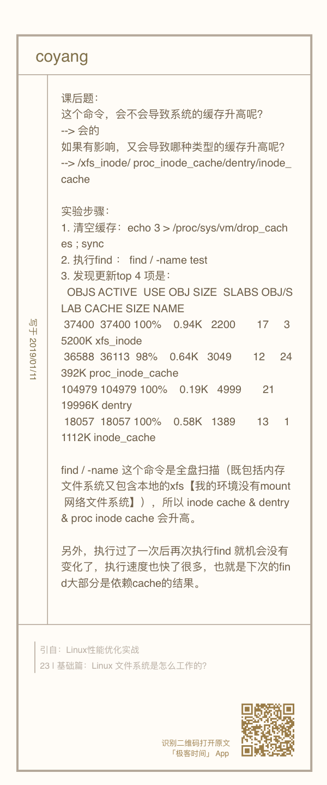
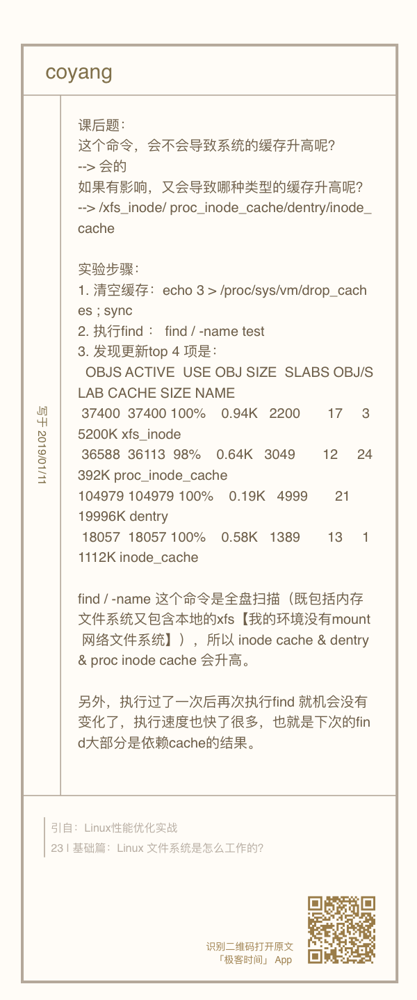
事实上，除了目录项缓存增加，Buffer 的使用也会增加。如果你用 vmstat 观察一下，会发现 Buffer 和 Cache 都在增长：
$ vmstat 1
procs -----------memory---------- ---swap-- -----io---- -system-- ------cpu-----
r b swpd free buff cache si so bi bo in cs us sy id wa st
0 1 0 7563744 6024 225944 0 0 3736 0 574 3249 3 5 89 3 0
1 0 0 7542792 14736 236856 0 0 8708 0 13494 32335 8 19 66 7 0
0 1 0 7494452 27280 272284 0 0 12544 0 4550 17084 5 15 68 13 0
0 1 0 7475084 42380 276320 0 0 15096 0 2541 14253 2 6 78 13 0
0 1 0 7455728 57600 280436 0 0 15220 0 2025 14518 2 6 70 22 0
这里，Buffer 的增长是因为，构建目录项缓存所需的元数据（比如文件名称、索引节点等），需要从文件系统中读取。
问题 3：“磁盘 I/O 延迟”课后思考
在[磁盘 I/O 延迟案例]的最后，我给你留了一道思考题。
我们通过 iostat ，确认磁盘 I/O 已经出现了性能瓶颈，还用 pidstat 找出了大量磁盘 I/O 的进程。但是，随后使用 strace 跟踪这个进程，却找不到任何 write 系统调用。这是为什么呢？
很多同学的留言都准确回答了这个问题。比如，划时代和 jeff 的留言都指出，在这个场景中，我们需要加 -f 选项，以便跟踪多进程和多线程的系统调用情况。
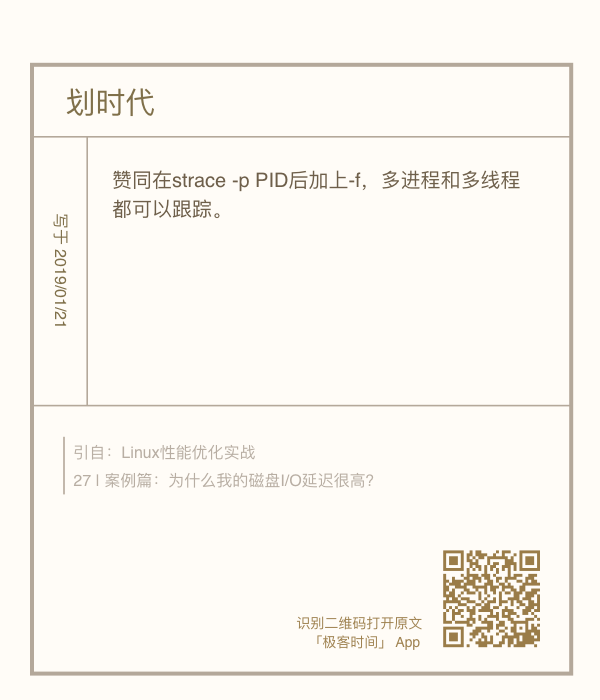
你看，仅仅是不恰当的选项，都可能会导致性能工具“犯错”，呈现这种看起来不合逻辑的结果。非常高兴看到，这么多同学已经掌握了性能工具使用的核心思路——弄清楚工具本身的原理和问题。
问题 4：“MySQL 案例”课后思考
在 [MySQL 案例]的最后，我给你留了一个思考题。
为什么 DataService 应用停止后，即使仍没有索引，MySQL 的查询速度还是快了很多，并且磁盘 I/O 瓶颈也消失了呢？
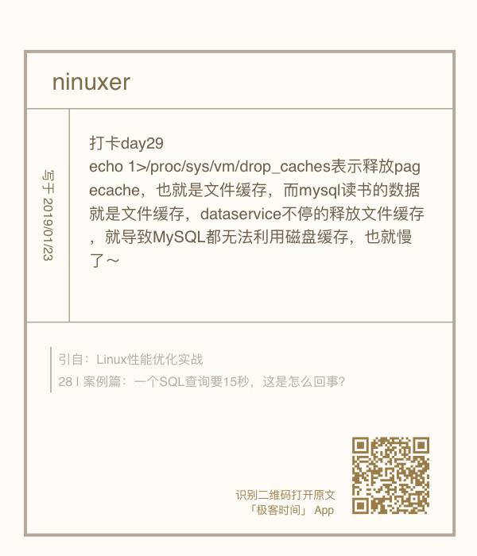
ninuxer 的留言基本解释了这个问题，不过还不够完善。
事实上，当你看到 DataService 在修改 /proc/sys/vm/drop_caches 时，就应该想到前面学过的 Cache 的作用。
我们知道，案例应用访问的数据表，基于 MyISAM 引擎，而 MyISAM 的一个特点，就是只在内存中缓存索引，并不缓存数据。所以，在查询语句无法使用索引时，就需要数据表从数据库文件读入内存，然后再进行处理。
所以，如果你用 vmstat 工具，观察缓存和 I/O 的变化趋势，就会发现下面这样的结果：
$ vmstat 1
procs -----------memory---------- ---swap-- -----io---- -system-- ------cpu-----
r b swpd free buff cache si so bi bo in cs us sy id wa st
# 备注： DataService 正在运行
0 1 0 7293416 132 366704 0 0 32516 12 36 546 1 3 49 48 0
0 1 0 7260772 132 399256 0 0 32640 0 37 463 1 1 49 48 0
0 1 0 7228088 132 432088 0 0 32640 0 30 477 0 1 49 49 0
0 0 0 7306560 132 353084 0 0 20572 4 90 574 1 4 69 27 0
0 2 0 7282300 132 368536 0 0 15468 0 32 304 0 0 79 20 0
# 备注：DataService 从这里开始停止
0 0 0 7241852 1360 424164 0 0 864 320 133 1266 1 1 94 5 0
0 1 0 7228956 1368 437400 0 0 13328 0 45 366 0 0 83 17 0
0 1 0 7196320 1368 470148 0 0 32640 0 33 413 1 1 50 49 0
...
0 0 0 6747540 1368 918576 0 0 29056 0 42 568 0 0 56 44 0
0 0 0 6747540 1368 918576 0 0 0 0 40 141 1 0 100 0 0
在 DataService 停止前，cache 会连续增长三次后再降回去，这正是因为 DataService 每隔 3 秒清理一次页缓存。而 DataService 停止后，cache 就会不停地增长，直到增长为 918576 后，就不再变了。
这时，磁盘的读（bi）降低到 0，同时，iowait（wa）也降低到 0，这说明，此时的所有数据都已经在系统的缓存中了。我们知道，缓存是内存的一部分，它的访问速度比磁盘快得多，这也就能解释，为什么 MySQL 的查询速度变快了很多。
从这个案例，你会发现，MySQL 的 MyISAM 引擎，本身并不缓存数据，而要依赖系统缓存来加速磁盘 I/O 的访问。一旦系统中还有其他应用同时运行，MyISAM 引擎就很难充分利用系统缓存。因为系统缓存可能被其他应用程序占用，甚至直接被清理掉。
所以，一般来说，我并不建议，把应用程序的性能优化完全建立在系统缓存上。还是那句话，最好能在应用程序的内部分配内存，构建完全自主控制的缓存，比如 MySQL 的 InnoDB 引擎，就同时缓存了索引和数据；或者，可以使用第三方的缓存应用，比如 Memcached、Redis 等。
今天主要回答这些问题，同时也欢迎你继续在留言区写下疑问和感想，我会持续不断地解答。希望借助每一次的答疑，可以和你一起，把文章知识内化为你的能力，我们不仅在实战中演练，也要在交流中进步。
33 关于 Linux 网络，你必须知道这些（上）
你好，我是倪朋飞。
前几节，我们一起学习了文件系统和磁盘 I/O 的工作原理，以及相应的性能分析和优化方法。接下来，我们将进入下一个重要模块—— Linux 的网络子系统。
由于网络处理的流程最复杂，跟我们前面讲到的进程调度、中断处理、内存管理以及 I/O 等都密不可分，所以，我把网络模块作为最后一个资源模块来讲解。
同 CPU、内存以及 I/O 一样，网络也是 Linux 系统最核心的功能。网络是一种把不同计算机或网络设备连接到一起的技术，它本质上是一种进程间通信方式，特别是跨系统的进程间通信，必须要通过网络才能进行。随着高并发、分布式、云计算、微服务等技术的普及，网络的性能也变得越来越重要。
那么，Linux 网络又是怎么工作的呢？又有哪些指标衡量网络的性能呢？接下来的两篇文章，我将带你一起学习 Linux 网络的工作原理和性能指标。
网络模型
说到网络，我想你肯定经常提起七层负载均衡、四层负载均衡，或者三层设备、二层设备等等。那么，这里说的二层、三层、四层、七层又都是什么意思呢？
实际上，这些层都来自国际标准化组织制定的开放式系统互联通信参考模型（Open System Interconnection Reference Model），简称为 OSI 网络模型。
为了解决网络互联中异构设备的兼容性问题，并解耦复杂的网络包处理流程，OSI 模型把网络互联的框架分为应用层、表示层、会话层、传输层、网络层、数据链路层以及物理层等七层，每个层负责不同的功能。其中，
- 应用层，负责为应用程序提供统一的接口。
- 表示层，负责把数据转换成兼容接收系统的格式。
- 会话层，负责维护计算机之间的通信连接。
- 传输层，负责为数据加上传输表头，形成数据包。
- 网络层，负责数据的路由和转发。
- 数据链路层，负责 MAC 寻址、错误侦测和改错。
- 物理层，负责在物理网络中传输数据帧。
但是 OSI 模型还是太复杂了，也没能提供一个可实现的方法。所以，在 Linux 中，我们实际上使用的是另一个更实用的四层模型，即 TCP/IP 网络模型。
TCP/IP 模型，把网络互联的框架分为应用层、传输层、网络层、网络接口层等四层，其中，
- 应用层，负责向用户提供一组应用程序，比如 HTTP、FTP、DNS 等。
- 传输层，负责端到端的通信，比如 TCP、UDP 等。
- 网络层，负责网络包的封装、寻址和路由，比如 IP、ICMP 等。
- 网络接口层，负责网络包在物理网络中的传输，比如 MAC 寻址、错误侦测以及通过网卡传输网络帧等。
为了帮你更形象理解 TCP/IP 与 OSI 模型的关系，我画了一张图，如下所示：
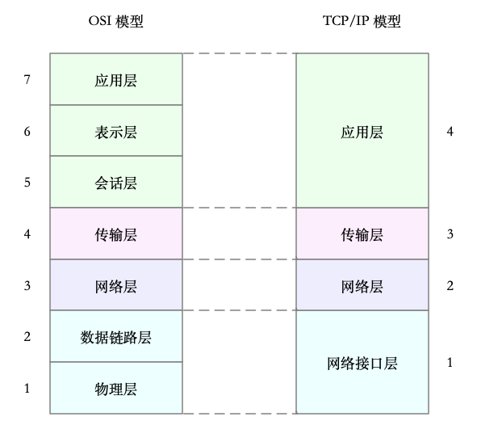
当然了，虽说 Linux 实际按照 TCP/IP 模型，实现了网络协议栈，但在平时的学习交流中，我们习惯上还是用 OSI 七层模型来描述。比如，说到七层和四层负载均衡，对应的分别是 OSI 模型中的应用层和传输层（而它们对应到 TCP/IP 模型中，实际上是四层和三层）。
TCP/IP 模型包括了大量的网络协议，这些协议的原理，也是我们每个人必须掌握的核心基础知识。如果你不太熟练，推荐你去学《TCP/IP 详解》的卷一和卷二，或者学习极客时间出品的《[趣谈网络协议]》专栏。
Linux 网络栈
有了 TCP/IP 模型后，在进行网络传输时，数据包就会按照协议栈，对上一层发来的数据进行逐层处理；然后封装上该层的协议头，再发送给下一层。
当然，网络包在每一层的处理逻辑，都取决于各层采用的网络协议。比如在应用层，一个提供 REST API 的应用，可以使用 HTTP 协议，把它需要传输的 JSON 数据封装到 HTTP 协议中，然后向下传递给 TCP 层。
而封装做的事情就很简单了，只是在原来的负载前后，增加固定格式的元数据，原始的负载数据并不会被修改。
比如，以通过 TCP 协议通信的网络包为例，通过下面这张图，我们可以看到，应用程序数据在每个层的封装格式。
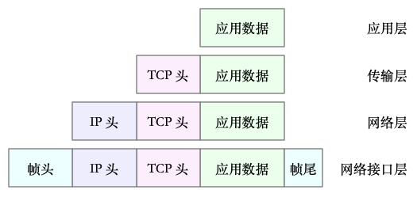
其中：
- 传输层在应用程序数据前面增加了 TCP 头；
- 网络层在 TCP 数据包前增加了 IP 头；
- 而网络接口层，又在 IP 数据包前后分别增加了帧头和帧尾。
这些新增的头部和尾部，都按照特定的协议格式填充，想了解具体格式，你可以查看协议的文档。 比如，你可以查看这里，了解 TCP 头的格式。
这些新增的头部和尾部，增加了网络包的大小，但我们都知道，物理链路中并不能传输任意大小的数据包。网络接口配置的最大传输单元（MTU），就规定了最大的 IP 包大小。在我们最常用的以太网中，MTU 默认值是 1500（这也是 Linux 的默认值）。
一旦网络包超过 MTU 的大小，就会在网络层分片，以保证分片后的 IP 包不大于 MTU 值。显然，MTU 越大，需要的分包也就越少，自然，网络吞吐能力就越好。
理解了 TCP/IP 网络模型和网络包的封装原理后，你很容易能想到，Linux 内核中的网络栈，其实也类似于 TCP/IP 的四层结构。如下图所示，就是 Linux 通用 IP 网络栈的示意图：
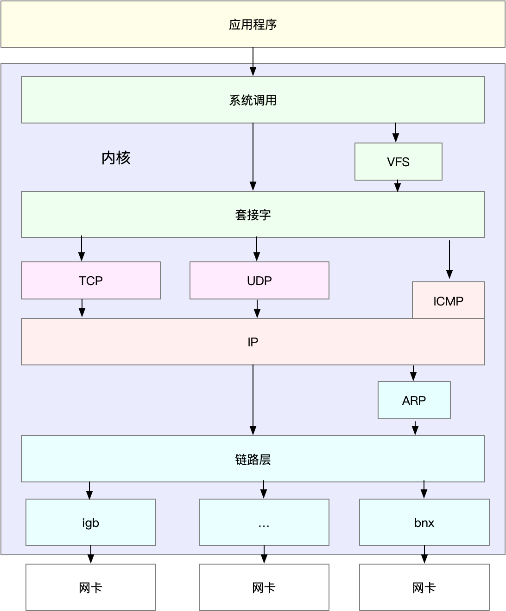
（图片参考《性能之巅》图 10.7 通用 IP 网络栈绘制）
我们从上到下来看这个网络栈，你可以发现，
- 最上层的应用程序，需要通过系统调用，来跟套接字接口进行交互；
- 套接字的下面，就是我们前面提到的传输层、网络层和网络接口层；
- 最底层，则是网卡驱动程序以及物理网卡设备。
这里我简单说一下网卡。网卡是发送和接收网络包的基本设备。在系统启动过程中，网卡通过内核中的网卡驱动程序注册到系统中。而在网络收发过程中，内核通过中断跟网卡进行交互。
再结合前面提到的 Linux 网络栈，可以看出，网络包的处理非常复杂。所以，网卡硬中断只处理最核心的网卡数据读取或发送，而协议栈中的大部分逻辑，都会放到软中断中处理。
Linux 网络收发流程
了解了 Linux 网络栈后，我们再来看看， Linux 到底是怎么收发网络包的。
注意，以下内容都以物理网卡为例。事实上，Linux 还支持众多的虚拟网络设备，而它们的网络收发流程会有一些差别。
网络包的接收流程
我们先来看网络包的接收流程。
当一个网络帧到达网卡后，网卡会通过 DMA 方式，把这个网络包放到收包队列中；然后通过硬中断，告诉中断处理程序已经收到了网络包。
接着，网卡中断处理程序会为网络帧分配内核数据结构（sk_buff），并将其拷贝到 sk_buff 缓冲区中；然后再通过软中断，通知内核收到了新的网络帧。
接下来，内核协议栈从缓冲区中取出网络帧，并通过网络协议栈，从下到上逐层处理这个网络帧。比如，
- 在链路层检查报文的合法性，找出上层协议的类型（比如 IPv4 还是 IPv6），再去掉帧头、帧尾，然后交给网络层。
- 网络层取出 IP 头，判断网络包下一步的走向，比如是交给上层处理还是转发。当网络层确认这个包是要发送到本机后，就会取出上层协议的类型（比如 TCP 还是 UDP），去掉 IP 头，再交给传输层处理。
- 传输层取出 TCP 头或者 UDP 头后，根据 < 源 IP、源端口、目的 IP、目的端口 > 四元组作为标识，找出对应的 Socket，并把数据拷贝到 Socket 的接收缓存中。
最后，应用程序就可以使用 Socket 接口，读取到新接收到的数据了。
为了更清晰表示这个流程，我画了一张图，这张图的左半部分表示接收流程，而图中的粉色箭头则表示网络包的处理路径。
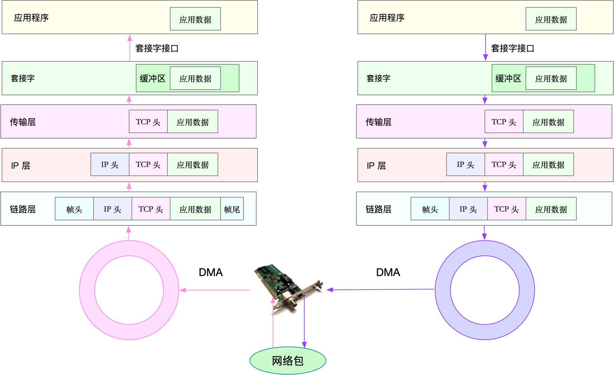
网络包的发送流程
了解网络包的接收流程后，就很容易理解网络包的发送流程。网络包的发送流程就是上图的右半部分，很容易发现，网络包的发送方向，正好跟接收方向相反。
首先，应用程序调用 Socket API（比如 sendmsg）发送网络包。
由于这是一个系统调用，所以会陷入到内核态的套接字层中。套接字层会把数据包放到 Socket 发送缓冲区中。
接下来，网络协议栈从 Socket 发送缓冲区中，取出数据包；再按照 TCP/IP 栈，从上到下逐层处理。比如，传输层和网络层，分别为其增加 TCP 头和 IP 头，执行路由查找确认下一跳的 IP，并按照 MTU 大小进行分片。
分片后的网络包，再送到网络接口层，进行物理地址寻址，以找到下一跳的 MAC 地址。然后添加帧头和帧尾，放到发包队列中。这一切完成后，会有软中断通知驱动程序：发包队列中有新的网络帧需要发送。
最后，驱动程序通过 DMA ，从发包队列中读出网络帧，并通过物理网卡把它发送出去。
小结
在今天的文章中，我带你一起梳理了 Linux 网络的工作原理。
多台服务器通过网卡、交换机、路由器等网络设备连接到一起，构成了相互连接的网络。由于网络设备的异构性和网络协议的复杂性，国际标准化组织定义了一个七层的 OSI 网络模型，但是这个模型过于复杂，实际工作中的事实标准，是更为实用的 TCP/IP 模型。
TCP/IP 模型，把网络互联的框架，分为应用层、传输层、网络层、网络接口层等四层，这也是 Linux 网络栈最核心的构成部分。
- 应用程序通过套接字接口发送数据包，先要在网络协议栈中从上到下进行逐层处理，最终再送到网卡发送出去。
- 而接收时，同样先经过网络栈从下到上的逐层处理，最终才会送到应用程序。
了解了 Linux 网络的基本原理和收发流程后，你肯定迫不及待想知道，如何去观察网络的性能情况。那么，具体来说，哪些指标可以衡量 Linux 的网络性能呢？别急，我将在下一节中为你详细讲解。
思考
最后，我想请你来聊聊你所理解的 Linux 网络。你碰到过哪些网络相关的性能瓶颈？你又是怎么样来分析它们的呢？你可以结合今天学到的网络知识，提出自己的观点。
欢迎在留言区和我讨论，也欢迎你把这篇文章分享给你的同事、朋友。我们一起在实战中演练，在交流中进步。
34 关于 Linux 网络，你必须知道这些（下）
你好，我是倪朋飞。
上一节，我带你学习了 Linux 网络的基础原理。简单回顾一下，Linux 网络根据 TCP/IP 模型，构建其网络协议栈。TCP/IP 模型由应用层、传输层、网络层、网络接口层等四层组成，这也是 Linux 网络栈最核心的构成部分。
应用程序通过套接字接口发送数据包时，先要在网络协议栈中从上到下逐层处理，然后才最终送到网卡发送出去；而接收数据包时，也要先经过网络栈从下到上的逐层处理，最后送到应用程序。
了解 Linux 网络的基本原理和收发流程后，你肯定迫不及待想知道，如何去观察网络的性能情况。具体而言，哪些指标可以用来衡量 Linux 的网络性能呢？
性能指标
实际上，我们通常用带宽、吞吐量、延时、PPS（Packet Per Second）等指标衡量网络的性能。
- 带宽，表示链路的最大传输速率，单位通常为 b/s （比特 / 秒）。
- 吞吐量，表示单位时间内成功传输的数据量，单位通常为 b/s（比特 / 秒）或者 B/s（字节 / 秒）。吞吐量受带宽限制，而吞吐量 / 带宽，也就是该网络的使用率。
- 延时，表示从网络请求发出后，一直到收到远端响应，所需要的时间延迟。在不同场景中，这一指标可能会有不同含义。比如，它可以表示，建立连接需要的时间（比如 TCP 握手延时），或一个数据包往返所需的时间（比如 RTT）。
- PPS，是 Packet Per Second（包 / 秒）的缩写，表示以网络包为单位的传输速率。PPS 通常用来评估网络的转发能力，比如硬件交换机，通常可以达到线性转发（即 PPS 可以达到或者接近理论最大值）。而基于 Linux 服务器的转发，则容易受网络包大小的影响。
除了这些指标，网络的可用性（网络能否正常通信）、并发连接数（TCP 连接数量）、丢包率（丢包百分比）、重传率（重新传输的网络包比例）等也是常用的性能指标。
接下来，请你打开一个终端，SSH 登录到服务器上，然后跟我一起来探索、观测这些性能指标。
网络配置
分析网络问题的第一步，通常是查看网络接口的配置和状态。你可以使用 ifconfig 或者 ip 命令，来查看网络的配置。我个人更推荐使用 ip 工具，因为它提供了更丰富的功能和更易用的接口。
ifconfig 和 ip 分别属于软件包 net-tools 和 iproute2，iproute2 是 net-tools 的下一代。通常情况下它们会在发行版中默认安装。但如果你找不到 ifconfig 或者 ip 命令，可以安装这两个软件包。
以网络接口 eth0 为例，你可以运行下面的两个命令，查看它的配置和状态：
$ ifconfig eth0
eth0: flags=4163<UP,BROADCAST,RUNNING,MULTICAST> mtu 1500
inet 10.240.0.30 netmask 255.240.0.0 broadcast 10.255.255.255
inet6 fe80::20d:3aff:fe07:cf2a prefixlen 64 scopeid 0x20<link>
ether 78:0d:3a:07:cf:3a txqueuelen 1000 (Ethernet)
RX packets 40809142 bytes 9542369803 (9.5 GB)
RX errors 0 dropped 0 overruns 0 frame 0
TX packets 32637401 bytes 4815573306 (4.8 GB)
TX errors 0 dropped 0 overruns 0 carrier 0 collisions 0
$ ip -s addr show dev eth0
2: eth0: <BROADCAST,MULTICAST,UP,LOWER_UP> mtu 1500 qdisc mq state UP group default qlen 1000
link/ether 78:0d:3a:07:cf:3a brd ff:ff:ff:ff:ff:ff
inet 10.240.0.30/12 brd 10.255.255.255 scope global eth0
valid_lft forever preferred_lft forever
inet6 fe80::20d:3aff:fe07:cf2a/64 scope link
valid_lft forever preferred_lft forever
RX: bytes packets errors dropped overrun mcast
9542432350 40809397 0 0 0 193
TX: bytes packets errors dropped carrier collsns
4815625265 32637658 0 0 0 0
你可以看到，ifconfig 和 ip 命令输出的指标基本相同，只是显示格式略微不同。比如，它们都包括了网络接口的状态标志、MTU 大小、IP、子网、MAC 地址以及网络包收发的统计信息。
这些具体指标的含义，在文档中都有详细的说明，不过，这里有几个跟网络性能密切相关的指标，需要你特别关注一下。
第一，网络接口的状态标志。ifconfig 输出中的 RUNNING ，或 ip 输出中的 LOWER_UP ，都表示物理网络是连通的，即网卡已经连接到了交换机或者路由器中。如果你看不到它们，通常表示网线被拔掉了。
第二，MTU 的大小。MTU 默认大小是 1500，根据网络架构的不同（比如是否使用了 VXLAN 等叠加网络），你可能需要调大或者调小 MTU 的数值。
第三，网络接口的 IP 地址、子网以及 MAC 地址。这些都是保障网络功能正常工作所必需的，你需要确保配置正确。
第四，网络收发的字节数、包数、错误数以及丢包情况，特别是 TX 和 RX 部分的 errors、dropped、overruns、carrier 以及 collisions 等指标不为 0 时，通常表示出现了网络 I/O 问题。其中：
- errors 表示发生错误的数据包数，比如校验错误、帧同步错误等；
- dropped 表示丢弃的数据包数，即数据包已经收到了 Ring Buffer，但因为内存不足等原因丢包；
- overruns 表示超限数据包数，即网络 I/O 速度过快，导致 Ring Buffer 中的数据包来不及处理（队列满）而导致的丢包；
- carrier 表示发生 carrirer 错误的数据包数，比如双工模式不匹配、物理电缆出现问题等；
- collisions 表示碰撞数据包数。
套接字信息
ifconfig 和 ip 只显示了网络接口收发数据包的统计信息，但在实际的性能问题中，网络协议栈中的统计信息，我们也必须关注。你可以用 netstat 或者 ss ，来查看套接字、网络栈、网络接口以及路由表的信息。
我个人更推荐，使用 ss 来查询网络的连接信息，因为它比 netstat 提供了更好的性能（速度更快）。
比如，你可以执行下面的命令，查询套接字信息：
# head -n 3 表示只显示前面 3 行
# -l 表示只显示监听套接字
# -n 表示显示数字地址和端口 (而不是名字)
# -p 表示显示进程信息
$ netstat -nlp | head -n 3
Active Internet connections (only servers)
Proto Recv-Q Send-Q Local Address Foreign Address State PID/Program name
tcp 0 0 127.0.0.53:53 0.0.0.0:* LISTEN 840/systemd-resolve
# -l 表示只显示监听套接字
# -t 表示只显示 TCP 套接字
# -n 表示显示数字地址和端口 (而不是名字)
# -p 表示显示进程信息
$ ss -ltnp | head -n 3
State Recv-Q Send-Q Local Address:Port Peer Address:Port
LISTEN 0 128 127.0.0.53%lo:53 0.0.0.0:* users:(("systemd-resolve",pid=840,fd=13))
LISTEN 0 128 0.0.0.0:22 0.0.0.0:* users:(("sshd",pid=1459,fd=3))
netstat 和 ss 的输出也是类似的，都展示了套接字的状态、接收队列、发送队列、本地地址、远端地址、进程 PID 和进程名称等。
其中，接收队列（Recv-Q）和发送队列（Send-Q）需要你特别关注，它们通常应该是 0。当你发现它们不是 0 时，说明有网络包的堆积发生。当然还要注意，在不同套接字状态下，它们的含义不同。
当套接字处于连接状态（Established）时，
- Recv-Q 表示套接字缓冲还没有被应用程序取走的字节数（即接收队列长度）。
- 而 Send-Q 表示还没有被远端主机确认的字节数（即发送队列长度）。
当套接字处于监听状态（Listening）时，
- Recv-Q 表示 syn backlog 的当前值。
- 而 Send-Q 表示最大的 syn backlog 值。
而 syn backlog 是 TCP 协议栈中的半连接队列长度，相应的也有一个全连接队列（accept queue），它们都是维护 TCP 状态的重要机制。
顾名思义，所谓半连接，就是还没有完成 TCP 三次握手的连接，连接只进行了一半，而服务器收到了客户端的 SYN 包后，就会把这个连接放到半连接队列中，然后再向客户端发送 SYN+ACK 包。
而全连接，则是指服务器收到了客户端的 ACK，完成了 TCP 三次握手，然后就会把这个连接挪到全连接队列中。这些全连接中的套接字，还需要再被 accept() 系统调用取走，这样，服务器就可以开始真正处理客户端的请求了。
协议栈统计信息
类似的，使用 netstat 或 ss ，也可以查看协议栈的信息：
$ netstat -s
...
Tcp:
3244906 active connection openings
23143 passive connection openings
115732 failed connection attempts
2964 connection resets received
1 connections established
13025010 segments received
17606946 segments sent out
44438 segments retransmitted
42 bad segments received
5315 resets sent
InCsumErrors: 42
...
$ ss -s
Total: 186 (kernel 1446)
TCP: 4 (estab 1, closed 0, orphaned 0, synrecv 0, timewait 0/0), ports 0
Transport Total IP IPv6
* 1446 - -
RAW 2 1 1
UDP 2 2 0
TCP 4 3 1
...
这些协议栈的统计信息都很直观。ss 只显示已经连接、关闭、孤儿套接字等简要统计，而 netstat 则提供的是更详细的网络协议栈信息。
比如，上面 netstat 的输出示例，就展示了 TCP 协议的主动连接、被动连接、失败重试、发送和接收的分段数量等各种信息。
网络吞吐和 PPS
接下来，我们再来看看，如何查看系统当前的网络吞吐量和 PPS。在这里，我推荐使用我们的老朋友 sar，在前面的 CPU、内存和 I/O 模块中，我们已经多次用到它。
给 sar 增加 -n 参数就可以查看网络的统计信息，比如网络接口（DEV）、网络接口错误（EDEV）、TCP、UDP、ICMP 等等。执行下面的命令，你就可以得到网络接口统计信息：
# 数字 1 表示每隔 1 秒输出一组数据
$ sar -n DEV 1
Linux 4.15.0-1035-azure (ubuntu) 01/06/19 _x86_64_ (2 CPU)
13:21:40 IFACE rxpck/s txpck/s rxkB/s txkB/s rxcmp/s txcmp/s rxmcst/s %ifutil
13:21:41 eth0 18.00 20.00 5.79 4.25 0.00 0.00 0.00 0.00
13:21:41 docker0 0.00 0.00 0.00 0.00 0.00 0.00 0.00 0.00
13:21:41 lo 0.00 0.00 0.00 0.00 0.00 0.00 0.00 0.00
这儿输出的指标比较多，我来简单解释下它们的含义。
- rxpck/s 和 txpck/s 分别是接收和发送的 PPS，单位为包 / 秒。
- rxkB/s 和 txkB/s 分别是接收和发送的吞吐量，单位是 KB/ 秒。
- rxcmp/s 和 txcmp/s 分别是接收和发送的压缩数据包数，单位是包 / 秒。
- %ifutil 是网络接口的使用率，即半双工模式下为 (rxkB/s+txkB/s)/Bandwidth，而全双工模式下为 max(rxkB/s, txkB/s)/Bandwidth。
其中，Bandwidth 可以用 ethtool 来查询，它的单位通常是 Gb/s 或者 Mb/s，不过注意这里小写字母 b ，表示比特而不是字节。我们通常提到的千兆网卡、万兆网卡等，单位也都是比特。如下你可以看到，我的 eth0 网卡就是一个千兆网卡：
$ ethtool eth0 | grep Speed
Speed: 1000Mb/s
连通性和延时
最后，我们通常使用 ping ，来测试远程主机的连通性和延时，而这基于 ICMP 协议。比如，执行下面的命令，你就可以测试本机到 114.114.114.114 这个 IP 地址的连通性和延时：
# -c3 表示发送三次 ICMP 包后停止
$ ping -c3 114.114.114.114
PING 114.114.114.114 (114.114.114.114) 56(84) bytes of data.
64 bytes from 114.114.114.114: icmp_seq=1 ttl=54 time=244 ms
64 bytes from 114.114.114.114: icmp_seq=2 ttl=47 time=244 ms
64 bytes from 114.114.114.114: icmp_seq=3 ttl=67 time=244 ms
--- 114.114.114.114 ping statistics ---
3 packets transmitted, 3 received, 0% packet loss, time 2001ms
rtt min/avg/max/mdev = 244.023/244.070/244.105/0.034 ms
ping 的输出，可以分为两部分。
- 第一部分，是每个 ICMP 请求的信息，包括 ICMP 序列号（icmp_seq）、TTL（生存时间，或者跳数）以及往返延时。
- 第二部分，则是三次 ICMP 请求的汇总。
比如上面的示例显示，发送了 3 个网络包，并且接收到 3 个响应，没有丢包发生，这说明测试主机到 114.114.114.114 是连通的；平均往返延时（RTT）是 244ms，也就是从发送 ICMP 开始，到接收到 114.114.114.114 回复的确认，总共经历 244ms。
小结
我们通常使用带宽、吞吐量、延时等指标，来衡量网络的性能；相应的，你可以用 ifconfig、netstat、ss、sar、ping 等工具，来查看这些网络的性能指标。
在下一节中，我将以经典的 C10K 和 C100K 问题，带你进一步深入 Linux 网络的工作原理。
思考
最后，我想请你来聊聊，你理解的 Linux 网络性能。你常用什么指标来衡量网络的性能？又用什么思路分析相应性能问题呢？你可以结合今天学到的知识，提出自己的观点。
欢迎在留言区和我讨论，也欢迎你把这篇文章分享给你的同事、朋友。我们一起在实战中演练，在交流中进步。
35 基础篇：C10K 和 C1000K 回顾
你好，我是倪朋飞。
前面内容，我们学习了 Linux 网络的基础原理以及性能观测方法。简单回顾一下，Linux 网络基于 TCP/IP 模型，构建了其网络协议栈，把繁杂的网络功能划分为应用层、传输层、网络层、网络接口层等四个不同的层次，既解决了网络环境中设备异构的问题，也解耦了网络协议的复杂性。
基于 TCP/IP 模型，我们还梳理了 Linux 网络收发流程和相应的性能指标。在应用程序通过套接字接口发送或者接收网络包时，这些网络包都要经过协议栈的逐层处理。我们通常用带宽、吞吐、延迟、PPS 等来衡量网络性能。
今天，我们主要来回顾下经典的 C10K 和 C1000K 问题，以更好理解 Linux 网络的工作原理，并进一步分析，如何做到单机支持 C10M。
注意，C10K 和 C1000K 的首字母 C 是 Client 的缩写。C10K 就是单机同时处理 1 万个请求（并发连接 1 万）的问题，而 C1000K 也就是单机支持处理 100 万个请求（并发连接 100 万）的问题。
C10K
C10K 问题最早由 Dan Kegel 在 1999 年提出。那时的服务器还只是 32 位系统，运行着 Linux 2.2 版本（后来又升级到了 2.4 和 2.6，而 2.6 才支持 x86_64），只配置了很少的内存（2GB）和千兆网卡。
怎么在这样的系统中支持并发 1 万的请求呢？
从资源上来说，对 2GB 内存和千兆网卡的服务器来说，同时处理 10000 个请求，只要每个请求处理占用不到 200KB（2GB/10000）的内存和 100Kbit （1000Mbit/10000）的网络带宽就可以。所以，物理资源是足够的，接下来自然是软件的问题，特别是网络的 I/O 模型问题。
说到 I/O 的模型，我在文件系统的原理中，曾经介绍过文件 I/O，其实网络 I/O 模型也类似。在 C10K 以前，Linux 中网络处理都用同步阻塞的方式，也就是每个请求都分配一个进程或者线程。请求数只有 100 个时，这种方式自然没问题，但增加到 10000 个请求时，10000 个进程或线程的调度、上下文切换乃至它们占用的内存，都会成为瓶颈。
既然每个请求分配一个线程的方式不合适，那么，为了支持 10000 个并发请求，这里就有两个问题需要我们解决。
第一，怎样在一个线程内处理多个请求，也就是要在一个线程内响应多个网络 I/O。以前的同步阻塞方式下，一个线程只能处理一个请求，到这里不再适用，是不是可以用非阻塞 I/O 或者异步 I/O 来处理多个网络请求呢？
第二，怎么更节省资源地处理客户请求，也就是要用更少的线程来服务这些请求。是不是可以继续用原来的 100 个或者更少的线程，来服务现在的 10000 个请求呢？
当然，事实上，现在 C10K 的问题早就解决了，在继续学习下面的内容前，你可以先自己思考一下这两个问题。结合前面学过的内容，你是不是已经有了解决思路呢？
I/O 模型优化
异步、非阻塞 I/O 的解决思路，你应该听说过，其实就是我们在网络编程中经常用到的 I/O 多路复用（I/O Multiplexing）。I/O 多路复用是什么意思呢？
别急，详细了解前，我先来讲两种 I/O 事件通知的方式：水平触发和边缘触发，它们常用在套接字接口的文件描述符中。
- 水平触发：只要文件描述符可以非阻塞地执行 I/O ，就会触发通知。也就是说，应用程序可以随时检查文件描述符的状态，然后再根据状态，进行 I/O 操作。
- 边缘触发：只有在文件描述符的状态发生改变（也就是 I/O 请求达到）时，才发送一次通知。这时候，应用程序需要尽可能多地执行 I/O，直到无法继续读写，才可以停止。如果 I/O 没执行完，或者因为某种原因没来得及处理，那么这次通知也就丢失了。
接下来，我们再回过头来看 I/O 多路复用的方法。这里其实有很多实现方法，我带你来逐个分析一下。
第一种，使用非阻塞 I/O 和水平触发通知，比如使用 select 或者 poll。
根据刚才水平触发的原理，select 和 poll 需要从文件描述符列表中，找出哪些可以执行 I/O ，然后进行真正的网络 I/O 读写。由于 I/O 是非阻塞的，一个线程中就可以同时监控一批套接字的文件描述符，这样就达到了单线程处理多请求的目的。
所以，这种方式的最大优点，是对应用程序比较友好，它的 API 非常简单。
但是，应用软件使用 select 和 poll 时，需要对这些文件描述符列表进行轮询，这样，请求数多的时候就会比较耗时。并且，select 和 poll 还有一些其他的限制。
select 使用固定长度的位相量，表示文件描述符的集合，因此会有最大描述符数量的限制。比如，在 32 位系统中，默认限制是 1024。并且，在 select 内部，检查套接字状态是用轮询的方法，再加上应用软件使用时的轮询，就变成了一个 O(n^2) 的关系。
而 poll 改进了 select 的表示方法，换成了一个没有固定长度的数组，这样就没有了最大描述符数量的限制（当然还会受到系统文件描述符限制）。但应用程序在使用 poll 时，同样需要对文件描述符列表进行轮询，这样，处理耗时跟描述符数量就是 O(N) 的关系。
除此之外，应用程序每次调用 select 和 poll 时，还需要把文件描述符的集合，从用户空间传入内核空间，由内核修改后，再传出到用户空间中。这一来一回的内核空间与用户空间切换，也增加了处理成本。
有没有什么更好的方式来处理呢？答案自然是肯定的。
第二种，使用非阻塞 I/O 和边缘触发通知，比如 epoll。
既然 select 和 poll 有那么多的问题，就需要继续对其进行优化，而 epoll 就很好地解决了这些问题。
- epoll 使用红黑树，在内核中管理文件描述符的集合，这样，就不需要应用程序在每次操作时都传入、传出这个集合。
- epoll 使用事件驱动的机制，只关注有 I/O 事件发生的文件描述符，不需要轮询扫描整个集合。
不过要注意，epoll 是在 Linux 2.6 中才新增的功能（2.4 虽然也有，但功能不完善）。由于边缘触发只在文件描述符可读或可写事件发生时才通知，那么应用程序就需要尽可能多地执行 I/O，并要处理更多的异常事件。
第三种，使用异步 I/O（Asynchronous I/O，简称为 AIO）。在前面文件系统原理的内容中，我曾介绍过异步 I/O 与同步 I/O 的区别。异步 I/O 允许应用程序同时发起很多 I/O 操作，而不用等待这些操作完成。而在 I/O 完成后，系统会用事件通知（比如信号或者回调函数）的方式，告诉应用程序。这时，应用程序才会去查询 I/O 操作的结果。
异步 I/O 也是到了 Linux 2.6 才支持的功能，并且在很长时间里都处于不完善的状态，比如 glibc 提供的异步 I/O 库，就一直被社区诟病。同时，由于异步 I/O 跟我们的直观逻辑不太一样，想要使用的话，一定要小心设计，其使用难度比较高。
工作模型优化
了解了 I/O 模型后，请求处理的优化就比较直观了。使用 I/O 多路复用后，就可以在一个进程或线程中处理多个请求，其中，又有下面两种不同的工作模型。
第一种，主进程 + 多个 worker 子进程，这也是最常用的一种模型。这种方法的一个通用工作模式就是：
- 主进程执行 bind() + listen() 后，创建多个子进程；
- 然后，在每个子进程中，都通过 accept() 或 epoll_wait() ，来处理相同的套接字。
比如，最常用的反向代理服务器 Nginx 就是这么工作的。它也是由主进程和多个 worker 进程组成。主进程主要用来初始化套接字，并管理子进程的生命周期；而 worker 进程，则负责实际的请求处理。我画了一张图来表示这个关系。
这里要注意，accept() 和 epoll_wait() 调用，还存在一个惊群的问题。换句话说，当网络 I/O 事件发生时，多个进程被同时唤醒，但实际上只有一个进程来响应这个事件，其他被唤醒的进程都会重新休眠。
- 其中，accept() 的惊群问题，已经在 Linux 2.6 中解决了；
- 而 epoll 的问题，到了 Linux 4.5 ，才通过 EPOLLEXCLUSIVE 解决。
为了避免惊群问题， Nginx 在每个 worker 进程中，都增加一个了全局锁（accept_mutex）。这些 worker 进程需要首先竞争到锁，只有竞争到锁的进程，才会加入到 epoll 中，这样就确保只有一个 worker 子进程被唤醒。
不过，根据前面 CPU 模块的学习，你应该还记得，进程的管理、调度、上下文切换的成本非常高。那为什么使用多进程模式的 Nginx ，却具有非常好的性能呢？
这里最主要的一个原因就是，这些 worker 进程，实际上并不需要经常创建和销毁，而是在没任务时休眠，有任务时唤醒。只有在 worker 由于某些异常退出时，主进程才需要创建新的进程来代替它。
当然，你也可以用线程代替进程：主线程负责套接字初始化和子线程状态的管理，而子线程则负责实际的请求处理。由于线程的调度和切换成本比较低，实际上你可以进一步把 epoll_wait() 都放到主线程中，保证每次事件都只唤醒主线程，而子线程只需要负责后续的请求处理。
第二种，监听到相同端口的多进程模型。在这种方式下，所有的进程都监听相同的接口，并且开启 SO_REUSEPORT 选项，由内核负责将请求负载均衡到这些监听进程中去。这一过程如下图所示。
由于内核确保了只有一个进程被唤醒，就不会出现惊群问题了。比如，Nginx 在 1.9.1 中就已经支持了这种模式。
（图片来自 Nginx 官网博客）
不过要注意，想要使用 SO_REUSEPORT 选项，需要用 Linux 3.9 以上的版本才可以。
C1000K
基于 I/O 多路复用和请求处理的优化，C10K 问题很容易就可以解决。不过，随着摩尔定律带来的服务器性能提升，以及互联网的普及，你并不难想到，新兴服务会对性能提出更高的要求。
很快，原来的 C10K 已经不能满足需求，所以又有了 C100K 和 C1000K，也就是并发从原来的 1 万增加到 10 万、乃至 100 万。从 1 万到 10 万，其实还是基于 C10K 的这些理论，epoll 配合线程池，再加上 CPU、内存和网络接口的性能和容量提升。大部分情况下，C100K 很自然就可以达到。
那么，再进一步，C1000K 是不是也可以很容易就实现呢？这其实没有那么简单了。
首先从物理资源使用上来说，100 万个请求需要大量的系统资源。比如，
- 假设每个请求需要 16KB 内存的话，那么总共就需要大约 15 GB 内存。
- 而从带宽上来说，假设只有 20% 活跃连接，即使每个连接只需要 1KB/s 的吞吐量，总共也需要 1.6 Gb/s 的吞吐量。千兆网卡显然满足不了这么大的吞吐量，所以还需要配置万兆网卡，或者基于多网卡 Bonding 承载更大的吞吐量。
其次，从软件资源上来说，大量的连接也会占用大量的软件资源，比如文件描述符的数量、连接状态的跟踪（CONNTRACK）、网络协议栈的缓存大小（比如套接字读写缓存、TCP 读写缓存）等等。
最后，大量请求带来的中断处理，也会带来非常高的处理成本。这样，就需要多队列网卡、中断负载均衡、CPU 绑定、RPS/RFS（软中断负载均衡到多个 CPU 核上），以及将网络包的处理卸载（Offload）到网络设备（如 TSO/GSO、LRO/GRO、VXLAN OFFLOAD）等各种硬件和软件的优化。
C1000K 的解决方法，本质上还是构建在 epoll 的非阻塞 I/O 模型上。只不过，除了 I/O 模型之外，还需要从应用程序到 Linux 内核、再到 CPU、内存和网络等各个层次的深度优化，特别是需要借助硬件，来卸载那些原来通过软件处理的大量功能。
C10M
显然，人们对于性能的要求是无止境的。再进一步，有没有可能在单机中，同时处理 1000 万的请求呢？这也就是 C10M 问题。
实际上，在 C1000K 问题中，各种软件、硬件的优化很可能都已经做到头了。特别是当升级完硬件（比如足够多的内存、带宽足够大的网卡、更多的网络功能卸载等）后，你可能会发现，无论你怎么优化应用程序和内核中的各种网络参数，想实现 1000 万请求的并发，都是极其困难的。
究其根本，还是 Linux 内核协议栈做了太多太繁重的工作。从网卡中断带来的硬中断处理程序开始，到软中断中的各层网络协议处理，最后再到应用程序，这个路径实在是太长了，就会导致网络包的处理优化，到了一定程度后，就无法更进一步了。
要解决这个问题，最重要就是跳过内核协议栈的冗长路径，把网络包直接送到要处理的应用程序那里去。这里有两种常见的机制，DPDK 和 XDP。
第一种机制，DPDK，是用户态网络的标准。它跳过内核协议栈，直接由用户态进程通过轮询的方式，来处理网络接收。
 （图片来自 https://blog.selectel.com/introduction-dpdk-architecture-principles/）
（图片来自 https://blog.selectel.com/introduction-dpdk-architecture-principles/）
说起轮询，你肯定会下意识认为它是低效的象征，但是进一步反问下自己，它的低效主要体现在哪里呢？是查询时间明显多于实际工作时间的情况下吧！那么，换个角度来想，如果每时每刻都有新的网络包需要处理，轮询的优势就很明显了。比如：
- 在 PPS 非常高的场景中，查询时间比实际工作时间少了很多，绝大部分时间都在处理网络包；
- 而跳过内核协议栈后，就省去了繁杂的硬中断、软中断再到 Linux 网络协议栈逐层处理的过程，应用程序可以针对应用的实际场景，有针对性地优化网络包的处理逻辑，而不需要关注所有的细节。
此外，DPDK 还通过大页、CPU 绑定、内存对齐、流水线并发等多种机制，优化网络包的处理效率。
第二种机制，XDP（eXpress Data Path），则是 Linux 内核提供的一种高性能网络数据路径。它允许网络包，在进入内核协议栈之前，就进行处理，也可以带来更高的性能。XDP 底层跟我们之前用到的 bcc-tools 一样，都是基于 Linux 内核的 eBPF 机制实现的。
XDP 的原理如下图所示：
（图片来自 https://www.iovisor.org/technology/xdp）
你可以看到，XDP 对内核的要求比较高，需要的是 Linux 4.8 以上版本，并且它也不提供缓存队列。基于 XDP 的应用程序通常是专用的网络应用，常见的有 IDS（入侵检测系统）、DDoS 防御、 cilium 容器网络插件等。
小结
今天我带你回顾了经典的 C10K 问题，并进一步延伸到了 C1000K 和 C10M 问题。
C10K 问题的根源，一方面在于系统有限的资源；另一方面，也是更重要的因素，是同步阻塞的 I/O 模型以及轮询的套接字接口，限制了网络事件的处理效率。Linux 2.6 中引入的 epoll ，完美解决了 C10K 的问题，现在的高性能网络方案都基于 epoll。
从 C10K 到 C100K ，可能只需要增加系统的物理资源就可以满足；但从 C100K 到 C1000K ，就不仅仅是增加物理资源就能解决的问题了。这时，就需要多方面的优化工作了，从硬件的中断处理和网络功能卸载、到网络协议栈的文件描述符数量、连接状态跟踪、缓存队列等内核的优化，再到应用程序的工作模型优化，都是考虑的重点。
再进一步，要实现 C10M ，就不只是增加物理资源，或者优化内核和应用程序可以解决的问题了。这时候，就需要用 XDP 的方式，在内核协议栈之前处理网络包；或者用 DPDK 直接跳过网络协议栈，在用户空间通过轮询的方式直接处理网络包。
当然了，实际上，在大多数场景中，我们并不需要单机并发 1000 万的请求。通过调整系统架构，把这些请求分发到多台服务器中来处理，通常是更简单和更容易扩展的方案。
思考
最后，我想请你来聊聊，你所理解的 C10K 和 C1000K 问题。你碰到过哪些网络并发相关的性能瓶颈？你又是怎么样来分析它们的呢？你可以结合今天学到的网络知识，提出自己的观点。
欢迎在留言区和我讨论，也欢迎你把这篇文章分享给你的同事、朋友。我们一起在实战中演练，在交流中进步。
36 套路篇：怎么评估系统的网络性能？
你好，我是倪朋飞。
上一节，我们回顾了经典的 C10K 和 C1000K 问题。简单回顾一下，C10K 是指如何单机同时处理 1 万个请求（并发连接 1 万）的问题，而 C1000K 则是单机支持处理 100 万个请求（并发连接 100 万）的问题。
I/O 模型的优化，是解决 C10K 问题的最佳良方。Linux 2.6 中引入的 epoll，完美解决了 C10K 的问题，并一直沿用至今。今天的很多高性能网络方案，仍都基于 epoll。
自然，随着互联网技术的普及，催生出更高的性能需求。从 C10K 到 C100K，我们只需要增加系统的物理资源，就可以满足要求；但从 C100K 到 C1000K ，光增加物理资源就不够了。
这时，就要对系统的软硬件进行统一优化，从硬件的中断处理，到网络协议栈的文件描述符数量、连接状态跟踪、缓存队列，再到应用程序的工作模型等的整个网络链路，都需要深入优化。
再进一步，要实现 C10M，就不是增加物理资源、调优内核和应用程序可以解决的问题了。这时内核中冗长的网络协议栈就成了最大的负担。
- 需要用 XDP 方式，在内核协议栈之前，先处理网络包。
- 或基于 DPDK ，直接跳过网络协议栈，在用户空间通过轮询的方式处理。
其中，DPDK 是目前最主流的高性能网络方案，不过，这需要能支持 DPDK 的网卡配合使用。
当然，实际上，在大多数场景中，我们并不需要单机并发 1000 万请求。通过调整系统架构，把请求分发到多台服务器中并行处理，才是更简单、扩展性更好的方案。
不过，这种情况下，就需要我们评估系统的网络性能，以便考察系统的处理能力，并为容量规划提供基准数据。
那么，到底该怎么评估网络的性能呢？今天，我就带你一起来看看这个问题。
性能指标回顾
在评估网络性能前，我们先来回顾一下，衡量网络性能的指标。在 Linux 网络基础篇中，我们曾经说到，带宽、吞吐量、延时、PPS 等，都是最常用的网络性能指标。还记得它们的具体含义吗？你可以先思考一下，再继续下面的内容。
首先，带宽，表示链路的最大传输速率，单位是 b/s（比特 / 秒）。在你为服务器选购网卡时，带宽就是最核心的参考指标。常用的带宽有 1000M、10G、40G、100G 等。
第二，吞吐量，表示没有丢包时的最大数据传输速率，单位通常为 b/s （比特 / 秒）或者 B/s（字节 / 秒）。吞吐量受带宽的限制，吞吐量 / 带宽也就是该网络链路的使用率。
第三，延时，表示从网络请求发出后，一直到收到远端响应，所需要的时间延迟。这个指标在不同场景中可能会有不同的含义。它可以表示建立连接需要的时间（比如 TCP 握手延时），或者一个数据包往返所需时间（比如 RTT）。
最后，PPS，是 Packet Per Second（包 / 秒）的缩写，表示以网络包为单位的传输速率。PPS 通常用来评估网络的转发能力，而基于 Linux 服务器的转发，很容易受到网络包大小的影响（交换机通常不会受到太大影响，即交换机可以线性转发）。
这四个指标中，带宽跟物理网卡配置是直接关联的。一般来说，网卡确定后，带宽也就确定了（当然，实际带宽会受限于整个网络链路中最小的那个模块）。
另外，你可能在很多地方听说过“网络带宽测试”，这里测试的实际上不是带宽，而是是网络吞吐量。Linux 服务器的网络吞吐量一般会比带宽小，而对交换机等专门的网络设备来说，吞吐量一般会接近带宽。
最后的 PPS，则是以网络包为单位的网络传输速率，通常用在需要大量转发的场景中。而对 TCP 或者 Web 服务来说，更多会用并发连接数和每秒请求数（QPS，Query per Second）等指标，它们更能反应实际应用程序的性能。
网络基准测试
熟悉了网络的性能指标后，接下来，我们再来看看，如何通过性能测试来确定这些指标的基准值。
你可以先思考一个问题。我们已经知道，Linux 网络基于 TCP/IP 协议栈，而不同协议层的行为显然不同。那么，测试之前，你应该弄清楚，你要评估的网络性能，究竟属于协议栈的哪一层？换句话说，你的应用程序基于协议栈的哪一层呢？
根据前面学过的 TCP/IP 协议栈的原理，这个问题应该不难回答。比如：
- 基于 HTTP 或者 HTTPS 的 Web 应用程序，显然属于应用层，需要我们测试 HTTP/HTTPS 的性能；
- 而对大多数游戏服务器来说，为了支持更大的同时在线人数，通常会基于 TCP 或 UDP ，与客户端进行交互，这时就需要我们测试 TCP/UDP 的性能；
- 当然，还有一些场景，是把 Linux 作为一个软交换机或者路由器来用的。这种情况下，你更关注网络包的处理能力（即 PPS），重点关注网络层的转发性能。
接下来，我就带你从下往上，了解不同协议层的网络性能测试方法。不过要注意，低层协议是其上的各层网络协议的基础。自然，低层协议的性能，也就决定了高层的网络性能。
注意，以下所有的测试方法，都需要两台 Linux 虚拟机。其中一台，可以当作待测试的目标机器；而另一台，则可以当作正在运行网络服务的客户端，用来运行测试工具。
各协议层的性能测试
转发性能
我们首先来看，网络接口层和网络层，它们主要负责网络包的封装、寻址、路由以及发送和接收。在这两个网络协议层中，每秒可处理的网络包数 PPS，就是最重要的性能指标。特别是 64B 小包的处理能力，值得我们特别关注。那么，如何来测试网络包的处理能力呢？
说到网络包相关的测试，你可能会觉得陌生。不过，其实在专栏开头的 CPU 性能篇中，我们就接触过一个相关工具，也就是软中断案例中的 hping3。
在那个案例中，hping3 作为一个 SYN 攻击的工具来使用。实际上， hping3 更多的用途，是作为一个测试网络包处理能力的性能工具。
今天我再来介绍另一个更常用的工具，Linux 内核自带的高性能网络测试工具 pktgen。pktgen 支持丰富的自定义选项，方便你根据实际需要构造所需网络包，从而更准确地测试出目标服务器的性能。
不过，在 Linux 系统中，你并不能直接找到 pktgen 命令。因为 pktgen 作为一个内核线程来运行，需要你加载 pktgen 内核模块后，再通过 /proc 文件系统来交互。下面就是 pktgen 启动的两个内核线程和 /proc 文件系统的交互文件：
$ modprobe pktgen
$ ps -ef | grep pktgen | grep -v grep
root 26384 2 0 06:17 ? 00:00:00 [kpktgend_0]
root 26385 2 0 06:17 ? 00:00:00 [kpktgend_1]
$ ls /proc/net/pktgen/
kpktgend_0 kpktgend_1 pgctrl
pktgen 在每个 CPU 上启动一个内核线程，并可以通过 /proc/net/pktgen 下面的同名文件，跟这些线程交互；而 pgctrl 则主要用来控制这次测试的开启和停止。
如果 modprobe 命令执行失败，说明你的内核没有配置 CONFIG_NET_PKTGEN 选项。这就需要你配置 pktgen 内核模块（即 CONFIG_NET_PKTGEN=m）后，重新编译内核，才可以使用。
在使用 pktgen 测试网络性能时，需要先给每个内核线程 kpktgend_X 以及测试网卡，配置 pktgen 选项，然后再通过 pgctrl 启动测试。
以发包测试为例，假设发包机器使用的网卡是 eth0，而目标机器的 IP 地址为 192.168.0.30，MAC 地址为 11:11:11:11:11:11。
接下来，就是一个发包测试的示例。
# 定义一个工具函数，方便后面配置各种测试选项
function pgset() {
local result
echo $1 > $PGDEV
result=`cat $PGDEV | fgrep "Result: OK:"`
if [ "$result" = "" ]; then
cat $PGDEV | fgrep Result:
fi
}
# 为 0 号线程绑定 eth0 网卡
PGDEV=/proc/net/pktgen/kpktgend_0
pgset "rem_device_all" # 清空网卡绑定
pgset "add_device eth0" # 添加 eth0 网卡
# 配置 eth0 网卡的测试选项
PGDEV=/proc/net/pktgen/eth0
pgset "count 1000000" # 总发包数量
pgset "delay 5000" # 不同包之间的发送延迟 (单位纳秒)
pgset "clone_skb 0" # SKB 包复制
pgset "pkt_size 64" # 网络包大小
pgset "dst 192.168.0.30" # 目的 IP
pgset "dst_mac 11:11:11:11:11:11" # 目的 MAC
# 启动测试
PGDEV=/proc/net/pktgen/pgctrl
pgset "start"
稍等一会儿，测试完成后，结果可以从 /proc 文件系统中获取。通过下面代码段中的内容，我们可以查看刚才的测试报告：
$ cat /proc/net/pktgen/eth0
Params: count 1000000 min_pkt_size: 64 max_pkt_size: 64
frags: 0 delay: 0 clone_skb: 0 ifname: eth0
flows: 0 flowlen: 0
...
Current:
pkts-sofar: 1000000 errors: 0
started: 1534853256071us stopped: 1534861576098us idle: 70673us
...
Result: OK: 8320027(c8249354+d70673) usec, 1000000 (64byte,0frags)
120191pps 61Mb/sec (61537792bps) errors: 0
你可以看到，测试报告主要分为三个部分：
- 第一部分的 Params 是测试选项；
- 第二部分的 Current 是测试进度，其中， packts so far（pkts-sofar）表示已经发送了 100 万个包，也就表明测试已完成。
- 第三部分的 Result 是测试结果，包含测试所用时间、网络包数量和分片、PPS、吞吐量以及错误数。
根据上面的结果，我们发现，PPS 为 12 万，吞吐量为 61 Mb/s，没有发生错误。那么，12 万的 PPS 好不好呢？
作为对比，你可以计算一下千兆交换机的 PPS。交换机可以达到线速（满负载时，无差错转发），它的 PPS 就是 1000Mbit 除以以太网帧的大小，即 1000Mbps/((64+20)*8bit) = 1.5 Mpps（其中 20B 为以太网帧的头部大小）。
你看，即使是千兆交换机的 PPS，也可以达到 150 万 PPS，比我们测试得到的 12 万大多了。所以，看到这个数值你并不用担心，现在的多核服务器和万兆网卡已经很普遍了，稍做优化就可以达到数百万的 PPS。而且，如果你用了上节课讲到的 DPDK 或 XDP ，还能达到千万数量级。
TCP/UDP 性能
掌握了 PPS 的测试方法，接下来，我们再来看 TCP 和 UDP 的性能测试方法。说到 TCP 和 UDP 的测试，我想你已经很熟悉了，甚至可能一下子就能想到相应的测试工具，比如 iperf 或者 netperf。
特别是现在的云计算时代，在你刚拿到一批虚拟机时，首先要做的，应该就是用 iperf ，测试一下网络性能是否符合预期。
iperf 和 netperf 都是最常用的网络性能测试工具，测试 TCP 和 UDP 的吞吐量。它们都以客户端和服务器通信的方式，测试一段时间内的平均吞吐量。
接下来，我们就以 iperf 为例，看一下 TCP 性能的测试方法。目前，iperf 的最新版本为 iperf3，你可以运行下面的命令来安装：
# Ubuntu
apt-get install iperf3
# CentOS
yum install iperf3
然后，在目标机器上启动 iperf 服务端：
# -s 表示启动服务端，-i 表示汇报间隔，-p 表示监听端口
$ iperf3 -s -i 1 -p 10000
接着，在另一台机器上运行 iperf 客户端，运行测试：
# -c 表示启动客户端，192.168.0.30 为目标服务器的 IP
# -b 表示目标带宽 (单位是 bits/s)
# -t 表示测试时间
# -P 表示并发数，-p 表示目标服务器监听端口
$ iperf3 -c 192.168.0.30 -b 1G -t 15 -P 2 -p 10000
稍等一会儿（15 秒）测试结束后，回到目标服务器，查看 iperf 的报告：
[ ID] Interval Transfer Bandwidth
...
[SUM] 0.00-15.04 sec 0.00 Bytes 0.00 bits/sec sender
[SUM] 0.00-15.04 sec 1.51 GBytes 860 Mbits/sec receiver
最后的 SUM 行就是测试的汇总结果，包括测试时间、数据传输量以及带宽等。按照发送和接收，这一部分又分为了 sender 和 receiver 两行。
从测试结果你可以看到，这台机器 TCP 接收的带宽（吞吐量）为 860 Mb/s， 跟目标的 1Gb/s 相比，还是有些差距的。
HTTP 性能
从传输层再往上，到了应用层。有的应用程序，会直接基于 TCP 或 UDP 构建服务。当然，也有大量的应用，基于应用层的协议来构建服务，HTTP 就是最常用的一个应用层协议。比如，常用的 Apache、Nginx 等各种 Web 服务，都是基于 HTTP。
要测试 HTTP 的性能，也有大量的工具可以使用，比如 ab、webbench 等，都是常用的 HTTP 压力测试工具。其中，ab 是 Apache 自带的 HTTP 压测工具，主要测试 HTTP 服务的每秒请求数、请求延迟、吞吐量以及请求延迟的分布情况等。
运行下面的命令，你就可以安装 ab 工具：
# Ubuntu
$ apt-get install -y apache2-utils
# CentOS
$ yum install -y httpd-tools
接下来，在目标机器上，使用 Docker 启动一个 Nginx 服务，然后用 ab 来测试它的性能。首先，在目标机器上运行下面的命令：
$ docker run -p 80:80 -itd nginx
而在另一台机器上，运行 ab 命令，测试 Nginx 的性能：
# -c 表示并发请求数为 1000，-n 表示总的请求数为 10000
$ ab -c 1000 -n 10000 http://192.168.0.30/
...
Server Software: nginx/1.15.8
Server Hostname: 192.168.0.30
Server Port: 80
...
Requests per second: 1078.54 [#/sec] (mean)
Time per request: 927.183 [ms] (mean)
Time per request: 0.927 [ms] (mean, across all concurrent requests)
Transfer rate: 890.00 [Kbytes/sec] received
Connection Times (ms)
min mean[+/-sd] median max
Connect: 0 27 152.1 1 1038
Processing: 9 207 843.0 22 9242
Waiting: 8 207 843.0 22 9242
Total: 15 233 857.7 23 9268
Percentage of the requests served within a certain time (ms)
50% 23
66% 24
75% 24
80% 26
90% 274
95% 1195
98% 2335
99% 4663
100% 9268 (longest request)
可以看到，ab 的测试结果分为三个部分，分别是请求汇总、连接时间汇总还有请求延迟汇总。以上面的结果为例，我们具体来看。
在请求汇总部分，你可以看到：
- Requests per second 为 1074；
- 每个请求的延迟（Time per request）分为两行，第一行的 927 ms 表示平均延迟，包括了线程运行的调度时间和网络请求响应时间，而下一行的 0.927ms ，则表示实际请求的响应时间；
- Transfer rate 表示吞吐量（BPS）为 890 KB/s。
连接时间汇总部分，则是分别展示了建立连接、请求、等待以及汇总等的各类时间，包括最小、最大、平均以及中值处理时间。
最后的请求延迟汇总部分，则给出了不同时间段内处理请求的百分比，比如， 90% 的请求，都可以在 274ms 内完成。
应用负载性能
当你用 iperf 或者 ab 等测试工具，得到 TCP、HTTP 等的性能数据后，这些数据是否就能表示应用程序的实际性能呢？我想，你的答案应该是否定的。
比如，你的应用程序基于 HTTP 协议，为最终用户提供一个 Web 服务。这时，使用 ab 工具，可以得到某个页面的访问性能，但这个结果跟用户的实际请求，很可能不一致。因为用户请求往往会附带着各种各种的负载（payload），而这些负载会影响 Web 应用程序内部的处理逻辑，从而影响最终性能。
那么，为了得到应用程序的实际性能，就要求性能工具本身可以模拟用户的请求负载，而 iperf、ab 这类工具就无能为力了。幸运的是，我们还可以用 wrk、TCPCopy、Jmeter 或者 LoadRunner 等实现这个目标。
以 wrk 为例，它是一个 HTTP 性能测试工具，内置了 LuaJIT，方便你根据实际需求，生成所需的请求负载，或者自定义响应的处理方法。
wrk 工具本身不提供 yum 或 apt 的安装方法，需要通过源码编译来安装。比如，你可以运行下面的命令，来编译和安装 wrk：
$ https://github.com/wg/wrk
$ cd wrk
$ apt-get install build-essential -y
$ make
$ sudo cp wrk /usr/local/bin/
wrk 的命令行参数比较简单。比如，我们可以用 wrk ，来重新测一下前面已经启动的 Nginx 的性能。
# -c 表示并发连接数 1000，-t 表示线程数为 2
$ wrk -c 1000 -t 2 http://192.168.0.30/
Running 10s test @ http://192.168.0.30/
2 threads and 1000 connections
Thread Stats Avg Stdev Max +/- Stdev
Latency 65.83ms 174.06ms 1.99s 95.85%
Req/Sec 4.87k 628.73 6.78k 69.00%
96954 requests in 10.06s, 78.59MB read
Socket errors: connect 0, read 0, write 0, timeout 179
Requests/sec: 9641.31
Transfer/sec: 7.82MB
这里使用 2 个线程、并发 1000 连接，重新测试了 Nginx 的性能。你可以看到，每秒请求数为 9641，吞吐量为 7.82MB，平均延迟为 65ms，比前面 ab 的测试结果要好很多。
这也说明，性能工具本身的性能，对性能测试也是至关重要的。不合适的性能工具，并不能准确测出应用程序的最佳性能。
当然，wrk 最大的优势，是其内置的 LuaJIT，可以用来实现复杂场景的性能测试。wrk 在调用 Lua 脚本时，可以将 HTTP 请求分为三个阶段，即 setup、running、done，如下图所示：

（图片来自网易云博客）
比如，你可以在 setup 阶段，为请求设置认证参数（来自于 wrk 官方示例）：
-- example script that demonstrates response handling and
-- retrieving an authentication token to set on all future
-- requests
token = nil
path = "/authenticate"
request = function()
return wrk.format("GET", path)
end
response = function(status, headers, body)
if not token and status == 200 then
token = headers["X-Token"]
path = "/resource"
wrk.headers["X-Token"] = token
end
end
而在执行测试时，通过 -s 选项，执行脚本的路径：
$ wrk -c 1000 -t 2 -s auth.lua http://192.168.0.30/
wrk 需要你用 Lua 脚本，来构造请求负载。这对于大部分场景来说，可能已经足够了 。不过，它的缺点也正是，所有东西都需要代码来构造，并且工具本身不提供 GUI 环境。
像 Jmeter 或者 LoadRunner（商业产品），则针对复杂场景提供了脚本录制、回放、GUI 等更丰富的功能，使用起来也更加方便。
小结
今天，我带你一起回顾了网络的性能指标，并学习了网络性能的评估方法。
性能评估是优化网络性能的前提，只有在你发现网络性能瓶颈时，才需要进行网络性能优化。根据 TCP/IP 协议栈的原理，不同协议层关注的性能重点不完全一样，也就对应不同的性能测试方法。比如，
- 在应用层，你可以使用 wrk、Jmeter 等模拟用户的负载，测试应用程序的每秒请求数、处理延迟、错误数等；
- 而在传输层，则可以使用 iperf 等工具，测试 TCP 的吞吐情况；
- 再向下，你还可以用 Linux 内核自带的 pktgen ，测试服务器的 PPS。
由于低层协议是高层协议的基础。所以，一般情况下，我们需要从上到下，对每个协议层进行性能测试，然后根据性能测试的结果，结合 Linux 网络协议栈的原理，找出导致性能瓶颈的根源，进而优化网络性能。
思考
最后，我想请你来聊一聊。
- 你是如何评估网络性能的？
- 在评估网络性能时，你会从哪个协议层、选择哪些指标，作为性能测试最核心的目标？
- 你又会用哪些工具，测试并分析网络的性能呢？
你可以结合今天学到的网络知识，总结自己的思路。
欢迎在留言区和我讨论，也欢迎你把这篇文章分享给你的同事、朋友。我们一起在实战中演练，在交流中进步。
37 案例篇：DNS 解析时快时慢，我该怎么办？
你好，我是倪朋飞。
上一节，我带你一起学习了网络性能的评估方法。简单回顾一下，Linux 网络基于 TCP/IP 协议栈构建，而在协议栈的不同层，我们所关注的网络性能也不尽相同。
在应用层，我们关注的是应用程序的并发连接数、每秒请求数、处理延迟、错误数等，可以使用 wrk、Jmeter 等工具，模拟用户的负载，得到想要的测试结果。
而在传输层，我们关注的是 TCP、UDP 等传输层协议的工作状况，比如 TCP 连接数、 TCP 重传、TCP 错误数等。此时，你可以使用 iperf、netperf 等，来测试 TCP 或 UDP 的性能。
再向下到网络层，我们关注的则是网络包的处理能力，即 PPS。Linux 内核自带的 pktgen，就可以帮你测试这个指标。
由于低层协议是高层协议的基础，所以一般情况下，我们所说的网络优化，实际上包含了整个网络协议栈的所有层的优化。当然，性能要求不同，具体需要优化的位置和目标并不完全相同。
前面在评估网络性能（比如 HTTP 性能）时，我们在测试工具中指定了网络服务的 IP 地址。IP 地址是 TCP/IP 协议中，用来确定通信双方的一个重要标识。每个 IP 地址又包括了主机号和网络号两部分。相同网络号的主机组成一个子网；不同子网再通过路由器连接，组成一个庞大的网络。
然而，IP 地址虽然方便了机器的通信，却给访问这些服务的人们，带来了很重的记忆负担。我相信，没几个人能记得住 Github 所在的 IP 地址，因为这串字符，对人脑来说并没有什么含义，不符合我们的记忆逻辑。
不过，这并不妨碍我们经常使用这个服务。为什么呢？当然是因为还有更简单、方便的方式。我们可以通过域名 github.com 访问，而不是必须依靠具体的 IP 地址，这其实正是域名系统 DNS 的由来。
DNS（Domain Name System），即域名系统，是互联网中最基础的一项服务，主要提供域名和 IP 地址之间映射关系的查询服务。
DNS 不仅方便了人们访问不同的互联网服务，更为很多应用提供了，动态服务发现和全局负载均衡（Global Server Load Balance，GSLB）的机制。这样，DNS 就可以选择离用户最近的 IP 来提供服务。即使后端服务的 IP 地址发生变化，用户依然可以用相同域名来访问。
DNS 显然是我们工作中基础而重要的一个环节。那么，DNS 出现问题时，又该如何分析和排查呢？今天，我就带你一起来看看这个问题。
域名与 DNS 解析
域名我们本身都比较熟悉，由一串用点分割开的字符组成，被用作互联网中的某一台或某一组计算机的名称，目的就是为了方便识别，互联网中提供各种服务的主机位置。
要注意，域名是全球唯一的，需要通过专门的域名注册商才可以申请注册。为了组织全球互联网中的众多计算机，域名同样用点来分开，形成一个分层的结构。而每个被点分割开的字符串，就构成了域名中的一个层级，并且位置越靠后，层级越高。
我们以极客时间的网站 time.geekbang.org 为例，来理解域名的含义。这个字符串中，最后面的 org 是顶级域名，中间的 geekbang 是二级域名，而最左边的 time 则是三级域名。
如下图所示，注意点（.）是所有域名的根，也就是说所有域名都以点作为后缀，也可以理解为，在域名解析的过程中，所有域名都以点结束。
通过理解这几个概念，你可以看出，域名主要是为了方便让人记住，而 IP 地址是机器间的通信的真正机制。把域名转换为 IP 地址的服务，也就是我们开头提到的，域名解析服务（DNS），而对应的服务器就是域名服务器，网络协议则是 DNS 协议。
这里注意，DNS 协议在 TCP/IP 栈中属于应用层，不过实际传输还是基于 UDP 或者 TCP 协议（UDP 居多） ，并且域名服务器一般监听在端口 53 上。
既然域名以分层的结构进行管理，相对应的，域名解析其实也是用递归的方式（从顶级开始，以此类推），发送给每个层级的域名服务器，直到得到解析结果。
不过不要担心，递归查询的过程并不需要你亲自操作，DNS 服务器会替你完成，你要做的，只是预先配置一个可用的 DNS 服务器就可以了。
当然，我们知道，通常来说，每级 DNS 服务器，都会有最近解析记录的缓存。当缓存命中时，直接用缓存中的记录应答就可以了。如果缓存过期或者不存在，才需要用刚刚提到的递归方式查询。
所以，系统管理员在配置 Linux 系统的网络时，除了需要配置 IP 地址，还需要给它配置 DNS 服务器，这样它才可以通过域名来访问外部服务。
比如，我的系统配置的就是 114.114.114.114 这个域名服务器。你可以执行下面的命令，来查询你的系统配置：
$ cat /etc/resolv.conf
nameserver 114.114.114.114
另外，DNS 服务通过资源记录的方式，来管理所有数据，它支持 A、CNAME、MX、NS、PTR 等多种类型的记录。比如：
- A 记录，用来把域名转换成 IP 地址；
- CNAME 记录，用来创建别名；
- 而 NS 记录，则表示该域名对应的域名服务器地址。
简单来说，当我们访问某个网址时，就需要通过 DNS 的 A 记录，查询该域名对应的 IP 地址，然后再通过该 IP 来访问 Web 服务。
比如，还是以极客时间的网站 time.geekbang.org 为例，执行下面的 nslookup 命令，就可以查询到这个域名的 A 记录，可以看到，它的 IP 地址是 39.106.233.176：
$ nslookup time.geekbang.org
# 域名服务器及端口信息
Server: 114.114.114.114
Address: 114.114.114.114#53
# 非权威查询结果
Non-authoritative answer:
Name: time.geekbang.org
Address: 39.106.233.17
这里要注意，由于 114.114.114.114 并不是直接管理 time.geekbang.org 的域名服务器，所以查询结果是非权威的。使用上面的命令，你只能得到 114.114.114.114 查询的结果。
前面还提到了，如果没有命中缓存，DNS 查询实际上是一个递归过程，那有没有方法可以知道整个递归查询的执行呢？
其实除了 nslookup，另外一个常用的 DNS 解析工具 dig ，就提供了 trace 功能，可以展示递归查询的整个过程。比如你可以执行下面的命令，得到查询结果：
# +trace 表示开启跟踪查询
# +nodnssec 表示禁止 DNS 安全扩展
$ dig +trace +nodnssec time.geekbang.org
; <<>> DiG 9.11.3-1ubuntu1.3-Ubuntu <<>> +trace +nodnssec time.geekbang.org
;; global options: +cmd
. 322086 IN NS m.root-servers.net.
. 322086 IN NS a.root-servers.net.
. 322086 IN NS i.root-servers.net.
. 322086 IN NS d.root-servers.net.
. 322086 IN NS g.root-servers.net.
. 322086 IN NS l.root-servers.net.
. 322086 IN NS c.root-servers.net.
. 322086 IN NS b.root-servers.net.
. 322086 IN NS h.root-servers.net.
. 322086 IN NS e.root-servers.net.
. 322086 IN NS k.root-servers.net.
. 322086 IN NS j.root-servers.net.
. 322086 IN NS f.root-servers.net.
;; Received 239 bytes from 114.114.114.114#53(114.114.114.114) in 1340 ms
org. 172800 IN NS a0.org.afilias-nst.info.
org. 172800 IN NS a2.org.afilias-nst.info.
org. 172800 IN NS b0.org.afilias-nst.org.
org. 172800 IN NS b2.org.afilias-nst.org.
org. 172800 IN NS c0.org.afilias-nst.info.
org. 172800 IN NS d0.org.afilias-nst.org.
;; Received 448 bytes from 198.97.190.53#53(h.root-servers.net) in 708 ms
geekbang.org. 86400 IN NS dns9.hichina.com.
geekbang.org. 86400 IN NS dns10.hichina.com.
;; Received 96 bytes from 199.19.54.1#53(b0.org.afilias-nst.org) in 1833 ms
time.geekbang.org. 600 IN A 39.106.233.176
;; Received 62 bytes from 140.205.41.16#53(dns10.hichina.com) in 4 ms
dig trace 的输出，主要包括四部分。
- 第一部分，是从 114.114.114.114 查到的一些根域名服务器（.）的 NS 记录。
- 第二部分，是从 NS 记录结果中选一个（h.root-servers.net），并查询顶级域名 org. 的 NS 记录。
- 第三部分，是从 org. 的 NS 记录中选择一个（b0.org.afilias-nst.org），并查询二级域名 geekbang.org. 的 NS 服务器。
- 最后一部分，就是从 geekbang.org. 的 NS 服务器（dns10.hichina.com）查询最终主机 time.geekbang.org. 的 A 记录。
这个输出里展示的各级域名的 NS 记录，其实就是各级域名服务器的地址，可以让你更清楚 DNS 解析的过程。 为了帮你更直观理解递归查询，我把这个过程整理成了一张流程图，你可以保存下来理解。
当然，不仅仅是发布到互联网的服务需要域名，很多时候，我们也希望能对局域网内部的主机进行域名解析（即内网域名，大多数情况下为主机名）。Linux 也支持这种行为。
所以，你可以把主机名和 IP 地址的映射关系，写入本机的 /etc/hosts 文件中。这样，指定的主机名就可以在本地直接找到目标 IP。比如，你可以执行下面的命令来操作：
$ cat /etc/hosts
127.0.0.1 localhost localhost.localdomain
::1 localhost6 localhost6.localdomain6
192.168.0.100 domain.com
或者，你还可以在内网中，搭建自定义的 DNS 服务器，专门用来解析内网中的域名。而内网 DNS 服务器，一般还会设置一个或多个上游 DNS 服务器，用来解析外网的域名。
清楚域名与 DNS 解析的基本原理后，接下来，我就带你一起来看几个案例，实战分析 DNS 解析出现问题时，该如何定位。
案例准备
本次案例还是基于 Ubuntu 18.04，同样适用于其他的 Linux 系统。我使用的案例环境如下所示：
- 机器配置：2 CPU，8GB 内存。
- 预先安装 docker 等工具，如 apt install docker.io。
你可以先打开一个终端，SSH 登录到 Ubuntu 机器中，然后执行下面的命令，拉取案例中使用的 Docker 镜像：
$ docker pull feisky/dnsutils
Using default tag: latest
...
Status: Downloaded newer image for feisky/dnsutils:latest
然后，运行下面的命令，查看主机当前配置的 DNS 服务器：
$ cat /etc/resolv.conf
nameserver 114.114.114.114
可以看到，我这台主机配置的 DNS 服务器是 114.114.114.114。
到这里，准备工作就完成了。接下来，我们正式进入操作环节。
案例分析
案例 1：DNS 解析失败
首先，执行下面的命令，进入今天的第一个案例。如果一切正常，你将可以看到下面这个输出：
# 进入案例环境的 SHELL 终端中
$ docker run -it --rm -v $(mktemp):/etc/resolv.conf feisky/dnsutils bash
[email protected]:/#
注意，这儿 root 后面的 7e9ed6ed4974，是 Docker 生成容器的 ID 前缀，你的环境中很可能是不同的 ID，所以直接忽略这一项就可以了。
注意：下面的代码段中， /# 开头的命令都表示在容器内部运行的命令。
接着，继续在容器终端中，执行 DNS 查询命令，我们还是查询 time.geekbang.org 的 IP 地址：
/# nslookup time.geekbang.org
;; connection timed out; no servers could be reached
你可以发现，这个命令阻塞很久后，还是失败了，报了 connection timed out 和 no servers could be reached 错误。
看到这里，估计你的第一反应就是网络不通了，到底是不是这样呢？我们用 ping 工具检查试试。执行下面的命令，就可以测试本地到 114.114.114.114 的连通性：
/# ping -c3 114.114.114.114
PING 114.114.114.114 (114.114.114.114): 56 data bytes
64 bytes from 114.114.114.114: icmp_seq=0 ttl=56 time=31.116 ms
64 bytes from 114.114.114.114: icmp_seq=1 ttl=60 time=31.245 ms
64 bytes from 114.114.114.114: icmp_seq=2 ttl=68 time=31.128 ms
--- 114.114.114.114 ping statistics ---
3 packets transmitted, 3 packets received, 0% packet loss
round-trip min/avg/max/stddev = 31.116/31.163/31.245/0.058 ms
这个输出中，你可以看到网络是通的。那要怎么知道 nslookup 命令失败的原因呢？这里其实有很多方法，最简单的一种，就是开启 nslookup 的调试输出，查看查询过程中的详细步骤，排查其中是否有异常。
比如，我们可以继续在容器终端中，执行下面的命令：
/# nslookup -debug time.geekbang.org
;; Connection to 127.0.0.1#53(127.0.0.1) for time.geekbang.org failed: connection refused.
;; Connection to ::1#53(::1) for time.geekbang.org failed: address not available.
从这次的输出可以看到，nslookup 连接环回地址（127.0.0.1 和 ::1）的 53 端口失败。这里就有问题了，为什么会去连接环回地址，而不是我们的先前看到的 114.114.114.114 呢？
你可能已经想到了症结所在——有可能是因为容器中没有配置 DNS 服务器。那我们就执行下面的命令确认一下：
/# cat /etc/resolv.conf
果然，这个命令没有任何输出，说明容器里的确没有配置 DNS 服务器。到这一步，很自然的，我们就知道了解决方法。在 /etc/resolv.conf 文件中，配置上 DNS 服务器就可以了。
你可以执行下面的命令，在配置好 DNS 服务器后，重新执行 nslookup 命令。自然，我们现在发现，这次可以正常解析了：
/# echo "nameserver 114.114.114.114" > /etc/resolv.conf
/# nslookup time.geekbang.org
Server: 114.114.114.114
Address: 114.114.114.114#53
Non-authoritative answer:
Name: time.geekbang.org
Address: 39.106.233.176
到这里，第一个案例就轻松解决了。最后，在终端中执行 exit 命令退出容器，Docker 就会自动清理刚才运行的容器。
案例 2：DNS 解析不稳定
接下来，我们再来看第二个案例。执行下面的命令，启动一个新的容器，并进入它的终端中：
$ docker run -it --rm --cap-add=NET_ADMIN --dns 8.8.8.8 feisky/dnsutils bash
[email protected]:/#
然后，跟上一个案例一样，还是运行 nslookup 命令，解析 time.geekbang.org 的 IP 地址。不过，这次要加一个 time 命令，输出解析所用时间。如果一切正常，你可能会看到如下输出：
/# time nslookup time.geekbang.org
Server: 8.8.8.8
Address: 8.8.8.8#53
Non-authoritative answer:
Name: time.geekbang.org
Address: 39.106.233.176
real 0m10.349s
user 0m0.004s
sys 0m0.0
可以看到，这次解析非常慢，居然用了 10 秒。如果你多次运行上面的 nslookup 命令，可能偶尔还会碰到下面这种错误：
/# time nslookup time.geekbang.org
;; connection timed out; no servers could be reached
real 0m15.011s
user 0m0.006s
sys 0m0.006s
换句话说，跟上一个案例类似，也会出现解析失败的情况。综合来看，现在 DNS 解析的结果不但比较慢，而且还会发生超时失败的情况。
这是为什么呢？碰到这种问题该怎么处理呢？
其实，根据前面的讲解，我们知道，DNS 解析，说白了就是客户端与服务器交互的过程，并且这个过程还使用了 UDP 协议。
那么，对于整个流程来说，解析结果不稳定，就有很多种可能的情况了。比方说：
- DNS 服务器本身有问题，响应慢并且不稳定；
- 或者是，客户端到 DNS 服务器的网络延迟比较大；
- 再或者，DNS 请求或者响应包，在某些情况下被链路中的网络设备弄丢了。
根据上面 nslookup 的输出，你可以看到，现在客户端连接的 DNS 是 8.8.8.8，这是 Google 提供的 DNS 服务。对 Google 我们还是比较放心的，DNS 服务器出问题的概率应该比较小。基本排除了 DNS 服务器的问题，那是不是第二种可能，本机到 DNS 服务器的延迟比较大呢？
前面讲过，ping 可以用来测试服务器的延迟。比如，你可以运行下面的命令：
/# ping -c3 8.8.8.8
PING 8.8.8.8 (8.8.8.8): 56 data bytes
64 bytes from 8.8.8.8: icmp_seq=0 ttl=31 time=137.637 ms
64 bytes from 8.8.8.8: icmp_seq=1 ttl=31 time=144.743 ms
64 bytes from 8.8.8.8: icmp_seq=2 ttl=31 time=138.576 ms
--- 8.8.8.8 ping statistics ---
3 packets transmitted, 3 packets received, 0% packet loss
round-trip min/avg/max/stddev = 137.637/140.319/144.743/3.152 ms
从 ping 的输出可以看到，这里的延迟已经达到了 140ms，这也就可以解释，为什么解析这么慢了。实际上，如果你多次运行上面的 ping 测试，还会看到偶尔出现的丢包现象。
$ ping -c3 8.8.8.8
PING 8.8.8.8 (8.8.8.8): 56 data bytes
64 bytes from 8.8.8.8: icmp_seq=0 ttl=30 time=134.032 ms
64 bytes from 8.8.8.8: icmp_seq=1 ttl=30 time=431.458 ms
--- 8.8.8.8 ping statistics ---
3 packets transmitted, 2 packets received, 33% packet loss
round-trip min/avg/max/stddev = 134.032/282.745/431.458/148.713 ms
这也进一步解释了，为什么 nslookup 偶尔会失败，正是网络链路中的丢包导致的。
碰到这种问题该怎么办呢？显然，既然延迟太大，那就换一个延迟更小的 DNS 服务器，比如电信提供的 114.114.114.114。
配置之前，我们可以先用 ping 测试看看，它的延迟是不是真的比 8.8.8.8 好。执行下面的命令，你就可以看到，它的延迟只有 31ms：
/# ping -c3 114.114.114.114
PING 114.114.114.114 (114.114.114.114): 56 data bytes
64 bytes from 114.114.114.114: icmp_seq=0 ttl=67 time=31.130 ms
64 bytes from 114.114.114.114: icmp_seq=1 ttl=56 time=31.302 ms
64 bytes from 114.114.114.114: icmp_seq=2 ttl=56 time=31.250 ms
--- 114.114.114.114 ping statistics ---
3 packets transmitted, 3 packets received, 0% packet loss
round-trip min/avg/max/stddev = 31.130/31.227/31.302/0.072 ms
这个结果表明，延迟的确小了很多。我们继续执行下面的命令，更换 DNS 服务器，然后，再次执行 nslookup 解析命令：
/# echo nameserver 114.114.114.114 > /etc/resolv.conf
/# time nslookup time.geekbang.org
Server: 114.114.114.114
Address: 114.114.114.114#53
Non-authoritative answer:
Name: time.geekbang.org
Address: 39.106.233.176
real 0m0.064s
user 0m0.007s
sys 0m0.006s
你可以发现，现在只需要 64ms 就可以完成解析，比刚才的 10s 要好很多。
到这里，问题看似就解决了。不过，如果你多次运行 nslookup 命令，估计就不是每次都有好结果了。比如，在我的机器中，就经常需要 1s 甚至更多的时间。
/# time nslookup time.geekbang.org
Server: 114.114.114.114
Address: 114.114.114.114#53
Non-authoritative answer:
Name: time.geekbang.org
Address: 39.106.233.176
real 0m1.045s
user 0m0.007s
sys 0m0.004s
1s 的 DNS 解析时间还是太长了，对很多应用来说也是不可接受的。那么，该怎么解决这个问题呢？我想你一定已经想到了，那就是使用 DNS 缓存。这样，只有第一次查询时需要去 DNS 服务器请求，以后的查询，只要 DNS 记录不过期，使用缓存中的记录就可以了。
不过要注意，我们使用的主流 Linux 发行版，除了最新版本的 Ubuntu （如 18.04 或者更新版本）外，其他版本并没有自动配置 DNS 缓存。
所以，想要为系统开启 DNS 缓存，就需要你做额外的配置。比如，最简单的方法，就是使用 dnsmasq。
dnsmasq 是最常用的 DNS 缓存服务之一，还经常作为 DHCP 服务来使用。它的安装和配置都比较简单，性能也可以满足绝大多数应用程序对 DNS 缓存的需求。
我们继续在刚才的容器终端中，执行下面的命令，就可以启动 dnsmasq：
/# /etc/init.d/dnsmasq start
* Starting DNS forwarder and DHCP server dnsmasq [ OK ]
然后，修改 /etc/resolv.conf，将 DNS 服务器改为 dnsmasq 的监听地址，这儿是 127.0.0.1。接着，重新执行多次 nslookup 命令：
/# echo nameserver 127.0.0.1 > /etc/resolv.conf
/# time nslookup time.geekbang.org
Server: 127.0.0.1
Address: 127.0.0.1#53
Non-authoritative answer:
Name: time.geekbang.org
Address: 39.106.233.176
real 0m0.492s
user 0m0.007s
sys 0m0.006s
/# time nslookup time.geekbang.org
Server: 127.0.0.1
Address: 127.0.0.1#53
Non-authoritative answer:
Name: time.geekbang.org
Address: 39.106.233.176
real 0m0.011s
user 0m0.008s
sys 0m0.003s
现在我们可以看到，只有第一次的解析很慢，需要 0.5s，以后的每次解析都很快，只需要 11ms。并且，后面每次 DNS 解析需要的时间也都很稳定。
案例的最后，还是别忘了执行 exit，退出容器终端，Docker 会自动清理案例容器。
小结
今天，我带你一起学习了 DNS 的基本原理，并通过几个案例，带你一起掌握了，发现 DNS 解析问题时的分析和解决思路。
DNS 是互联网中最基础的一项服务，提供了域名和 IP 地址间映射关系的查询服务。很多应用程序在最初开发时，并没考虑 DNS 解析的问题，后续出现问题后，排查好几天才能发现，其实是 DNS 解析慢导致的。
试想，假如一个 Web 服务的接口，每次都需要 1s 时间来等待 DNS 解析，那么，无论你怎么优化应用程序的内在逻辑，对用户来说，这个接口的响应都太慢，因为响应时间总是会大于 1 秒的。
所以，在应用程序的开发过程中，我们必须考虑到 DNS 解析可能带来的性能问题，掌握常见的优化方法。这里，我总结了几种常见的 DNS 优化方法。
- 对 DNS 解析的结果进行缓存。缓存是最有效的方法，但要注意，一旦缓存过期，还是要去 DNS 服务器重新获取新记录。不过，这对大部分应用程序来说都是可接受的。
- 对 DNS 解析的结果进行预取。这是浏览器等 Web 应用中最常用的方法，也就是说，不等用户点击页面上的超链接，浏览器就会在后台自动解析域名，并把结果缓存起来。
- 使用 HTTPDNS 取代常规的 DNS 解析。这是很多移动应用会选择的方法，特别是如今域名劫持普遍存在，使用 HTTP 协议绕过链路中的 DNS 服务器，就可以避免域名劫持的问题。
- 基于 DNS 的全局负载均衡（GSLB）。这不仅为服务提供了负载均衡和高可用的功能，还可以根据用户的位置，返回距离最近的 IP 地址。
思考
最后，我想请你来聊一聊，你所碰到的 DNS 问题。你都碰到过哪些类型的 DNS 问题？你是通过哪些方法来排查的，又通过哪些方法解决的呢？你可以结合今天学到的知识，总结自己的思路。
欢迎在留言区和我讨论，也欢迎你把这篇文章分享给你的同事、朋友。我们一起在实战中演练，在交流中进步。
38 案例篇：怎么使用 tcpdump 和 Wireshark 分析网络流量？
你好，我是倪朋飞。
上一节，我们学习了 DNS 性能问题的分析和优化方法。简单回顾一下，DNS 可以提供域名和 IP 地址的映射关系，也是一种常用的全局负载均衡（GSLB）实现方法。
通常，需要暴露到公网的服务，都会绑定一个域名，既方便了人们记忆，也避免了后台服务 IP 地址的变更影响到用户。
不过要注意，DNS 解析受到各种网络状况的影响，性能可能不稳定。比如公网延迟增大，缓存过期导致要重新去上游服务器请求，或者流量高峰时 DNS 服务器性能不足等，都会导致 DNS 响应的延迟增大。
此时，可以借助 nslookup 或者 dig 的调试功能，分析 DNS 的解析过程，再配合 ping 等工具调试 DNS 服务器的延迟，从而定位出性能瓶颈。通常，你可以用缓存、预取、HTTPDNS 等方法，优化 DNS 的性能。
上一节我们用到的 ping，是一个最常用的测试服务延迟的工具。很多情况下，ping 可以帮我们定位出延迟问题，不过有时候， ping 本身也会出现意想不到的问题。这时，就需要我们抓取 ping 命令执行时收发的网络包，然后分析这些网络包，进而找出问题根源。
tcpdump 和 Wireshark 就是最常用的网络抓包和分析工具，更是分析网络性能必不可少的利器。
- tcpdump 仅支持命令行格式使用，常用在服务器中抓取和分析网络包。
- Wireshark 除了可以抓包外，还提供了强大的图形界面和汇总分析工具，在分析复杂的网络情景时，尤为简单和实用。
因而，在实际分析网络性能时，先用 tcpdump 抓包，后用 Wireshark 分析，也是一种常用的方法。
今天，我就带你一起看看，怎么使用 tcpdump 和 Wireshark ，来分析网络的性能问题。
案例准备
本次案例还是基于 Ubuntu 18.04，同样适用于其他的 Linux 系统。我使用的案例环境是这样的：
- 机器配置：2 CPU，8GB 内存。
- 预先安装 tcpdump、Wireshark 等工具，如：
# Ubuntu
apt-get install tcpdump wireshark
# CentOS
yum install -y tcpdump wireshark
由于 Wireshark 的图形界面，并不能通过 SSH 使用，所以我推荐你在本地机器（比如 Windows）中安装。你可以到 https://www.wireshark.org/ 下载并安装 Wireshark。
跟以前一样，案例中所有命令，都默认以 root 用户（在 Windows 中，运行 Wireshark 时除外）运行。如果你是用普通用户身份登陆系统，请运行 sudo su root 命令切换到 root 用户。
再探 ping
前面讲过，ping 是一种最常用的网络工具，常用来探测网络主机之间的连通性以及延迟。关于 ping 的原理和使用方法，我在前面的 [Linux 网络基础篇] 已经简单介绍过，而 DNS 缓慢的案例中，也多次用到了 ping 测试 DNS 服务器的延迟（RTT）。
不过，虽然 ping 比较简单，但有时候你会发现，ping 工具本身也可能出现异常，比如运行缓慢，但实际网络延迟却并不大的情况。
接下来，我们打开一个终端，SSH 登录到案例机器中，执行下面的命令，来测试案例机器与极客邦科技官网的连通性和延迟。如果一切正常，你会看到下面这个输出：
# ping 3 次（默认每次发送间隔 1 秒）
# 假设 DNS 服务器还是上一期配置的 114.114.114.114
$ ping -c3 geektime.org
PING geektime.org (35.190.27.188) 56(84) bytes of data.
64 bytes from 35.190.27.188 (35.190.27.188): icmp_seq=1 ttl=43 time=36.8 ms
64 bytes from 35.190.27.188 (35.190.27.188): icmp_seq=2 ttl=43 time=31.1 ms
64 bytes from 35.190.27.188 (35.190.27.188): icmp_seq=3 ttl=43 time=31.2 ms
--- geektime.org ping statistics ---
3 packets transmitted, 3 received, 0% packet loss, time 11049ms
rtt min/avg/max/mdev = 31.146/33.074/36.809/2.649 ms
ping 的输出界面， [Linux 网络基础篇] 中我们已经学过，你可以先复习一下，自己解读并且分析这次的输出。
不过要注意，假如你运行时发现 ping 很快就结束了，那就执行下面的命令，再重试一下。至于这条命令的含义，稍后我们再做解释。
# 禁止接收从 DNS 服务器发送过来并包含 googleusercontent 的包
$ iptables -I INPUT -p udp --sport 53 -m string --string googleusercontent --algo bm -j DROP
根据 ping 的输出，你可以发现，geektime.org 解析后的 IP 地址是 35.190.27.188，而后三次 ping 请求都得到了响应，延迟（RTT）都是 30ms 多一点。
但汇总的地方，就有点儿意思了。3 次发送，收到 3 次响应，没有丢包，但三次发送和接受的总时间居然超过了 11s（11049ms），这就有些不可思议了吧。
会想起上一节的 DNS 解析问题，你可能会怀疑，这可能是 DNS 解析缓慢的问题。但到底是不是呢？
再回去看 ping 的输出，三次 ping 请求中，用的都是 IP 地址，说明 ping 只需要在最开始运行时，解析一次得到 IP，后面就可以只用 IP 了。
我们再用 nslookup 试试。在终端中执行下面的 nslookup 命令，注意，这次我们同样加了 time 命令，输出 nslookup 的执行时间：
$ time nslookup geektime.org
Server: 114.114.114.114
Address: 114.114.114.114#53
Non-authoritative answer:
Name: geektime.org
Address: 35.190.27.188
real 0m0.044s
user 0m0.006s
sys 0m0.003s
可以看到，域名解析还是很快的，只需要 44ms，显然比 11s 短了很多。
到这里，再往后该怎么分析呢？其实，这时候就可以用 tcpdump 抓包，查看 ping 在收发哪些网络包。
我们再打开另一个终端（终端二），SSH 登录案例机器后，执行下面的命令：
$ tcpdump -nn udp port 53 or host 35.190.27.188
当然，你可以直接用 tcpdump 不加任何参数来抓包，但那样的话，就可能抓取到很多不相干的包。由于我们已经执行过 ping 命令，知道了 geekbang.org 的 IP 地址是 35.190.27.188，也知道 ping 命令会执行 DNS 查询。所以，上面这条命令，就是基于这个规则进行过滤。
我来具体解释一下这条命令。
- -nn ，表示不解析抓包中的域名（即不反向解析）、协议以及端口号。
- udp port 53 ，表示只显示 UDP 协议的端口号（包括源端口和目的端口）为 53 的包。
- host 35.190.27.188 ，表示只显示 IP 地址（包括源地址和目的地址）为 35.190.27.188 的包。
- 这两个过滤条件中间的“ or ”，表示或的关系，也就是说，只要满足上面两个条件中的任一个，就可以展示出来。
接下来，回到终端一，执行相同的 ping 命令：
$ ping -c3 geektime.org
...
--- geektime.org ping statistics ---
3 packets transmitted, 3 received, 0% packet loss, time 11095ms
rtt min/avg/max/mdev = 81.473/81.572/81.757/0.130 ms
命令结束后，再回到终端二中，查看 tcpdump 的输出：
tcpdump: verbose output suppressed, use -v or -vv for full protocol decode
listening on eth0, link-type EN10MB (Ethernet), capture size 262144 bytes
14:02:31.100564 IP 172.16.3.4.56669 > 114.114.114.114.53: 36909+ A? geektime.org. (30)
14:02:31.507699 IP 114.114.114.114.53 > 172.16.3.4.56669: 36909 1/0/0 A 35.190.27.188 (46)
14:02:31.508164 IP 172.16.3.4 > 35.190.27.188: ICMP echo request, id 4356, seq 1, length 64
14:02:31.539667 IP 35.190.27.188 > 172.16.3.4: ICMP echo reply, id 4356, seq 1, length 64
14:02:31.539995 IP 172.16.3.4.60254 > 114.114.114.114.53: 49932+ PTR? 188.27.190.35.in-addr.arpa. (44)
14:02:36.545104 IP 172.16.3.4.60254 > 114.114.114.114.53: 49932+ PTR? 188.27.190.35.in-addr.arpa. (44)
14:02:41.551284 IP 172.16.3.4 > 35.190.27.188: ICMP echo request, id 4356, seq 2, length 64
14:02:41.582363 IP 35.190.27.188 > 172.16.3.4: ICMP echo reply, id 4356, seq 2, length 64
14:02:42.552506 IP 172.16.3.4 > 35.190.27.188: ICMP echo request, id 4356, seq 3, length 64
14:02:42.583646 IP 35.190.27.188 > 172.16.3.4: ICMP echo reply, id 4356, seq 3, length 64
这次输出中，前两行，表示 tcpdump 的选项以及接口的基本信息；从第三行开始，就是抓取到的网络包的输出。这些输出的格式，都是 时间戳 协议 源地址. 源端口 > 目的地址. 目的端口 网络包详细信息（这是最基本的格式，可以通过选项增加其他字段）。
前面的字段，都比较好理解。但网络包的详细信息，本身根据协议的不同而不同。所以，要理解这些网络包的详细含义，就要对常用网络协议的基本格式以及交互原理，有基本的了解。
当然，实际上，这些内容都会记录在 IETF（ 互联网工程任务组）发布的 RFC（请求意见稿）中。
比如，第一条就表示，从本地 IP 发送到 114.114.114.114 的 A 记录查询请求，它的报文格式记录在 RFC1035 中，你可以点击这里查看。在这个 tcpdump 的输出中，
- 36909+ 表示查询标识值，它也会出现在响应中，加号表示启用递归查询。
- A? 表示查询 A 记录。
- geektime.org. 表示待查询的域名。
- 30 表示报文长度。
接下来的一条，则是从 114.114.114.114 发送回来的 DNS 响应——域名 geektime.org. 的 A 记录值为 35.190.27.188。
第三条和第四条，是 ICMP echo request 和 ICMP echo reply，响应包的时间戳 14:02:31.539667，减去请求包的时间戳 14:02:31.508164 ，就可以得到，这次 ICMP 所用时间为 30ms。这看起来并没有问题。
但随后的两条反向地址解析 PTR 请求，就比较可疑了。因为我们只看到了请求包，却没有应答包。仔细观察它们的时间，你会发现，这两条记录都是发出后 5s 才出现下一个网络包，两条 PTR 记录就消耗了 10s。
再往下看，最后的四个包，则是两次正常的 ICMP 请求和响应，根据时间戳计算其延迟，也是 30ms。
到这里，其实我们也就找到了 ping 缓慢的根源，正是两次 PTR 请求没有得到响应而超时导致的。PTR 反向地址解析的目的，是从 IP 地址反查出域名，但事实上，并非所有 IP 地址都会定义 PTR 记录，所以 PTR 查询很可能会失败。
所以，在你使用 ping 时，如果发现结果中的延迟并不大，而 ping 命令本身却很慢，不要慌，有可能是背后的 PTR 在搞鬼。
知道问题后，解决起来就比较简单了，只要禁止 PTR 就可以。还是老路子，执行 man ping 命令，查询使用手册，就可以找出相应的方法，即加上 -n 选项禁止名称解析。比如，我们可以在终端中执行如下命令：
$ ping -n -c3 geektime.org
PING geektime.org (35.190.27.188) 56(84) bytes of data.
64 bytes from 35.190.27.188: icmp_seq=1 ttl=43 time=33.5 ms
64 bytes from 35.190.27.188: icmp_seq=2 ttl=43 time=39.0 ms
64 bytes from 35.190.27.188: icmp_seq=3 ttl=43 time=32.8 ms
--- geektime.org ping statistics ---
3 packets transmitted, 3 received, 0% packet loss, time 2002ms
rtt min/avg/max/mdev = 32.879/35.160/39.030/2.755 ms
你可以发现，现在只需要 2s 就可以结束，比刚才的 11s 可是快多了。
到这里， 我就带你一起使用 tcpdump ，解决了一个最常见的 ping 工作缓慢的问题。
案例最后，如果你在开始时，执行了 iptables 命令，那也不要忘了删掉它：
$ iptables -D INPUT -p udp --sport 53 -m string --string googleusercontent --algo bm -j DROP
不过，删除后你肯定还有疑问，明明我们的案例跟 Google 没啥关系，为什么要根据 googleusercontent ，这个毫不相关的字符串来过滤包呢？
实际上，如果换一个 DNS 服务器，就可以用 PTR 反查到 35.190.27.188 所对应的域名：
$ nslookup -type=PTR 35.190.27.188 8.8.8.8
Server: 8.8.8.8
Address: 8.8.8.8#53
Non-authoritative answer:
188.27.190.35.in-addr.arpa name = 188.27.190.35.bc.googleusercontent.com.
Authoritative answers can be found from:
你看，虽然查到了 PTR 记录，但结果并非 geekbang.org，而是 188.27.190.35.bc.googleusercontent.com。其实，这也是为什么，案例开始时将包含 googleusercontent 的丢弃后，ping 就慢了。因为 iptables ，实际上是把 PTR 响应给丢了，所以会导致 PTR 请求超时。
tcpdump 可以说是网络性能分析最有效的利器。接下来，我再带你一起看看 tcpdump 的更多使用方法。
tcpdump
我们知道，tcpdump 也是最常用的一个网络分析工具。它基于 libpcap ，利用内核中的 AF_PACKET 套接字，抓取网络接口中传输的网络包；并提供了强大的过滤规则，帮你从大量的网络包中，挑出最想关注的信息。
tcpdump 为你展示了每个网络包的详细细节，这就要求，在使用前，你必须要对网络协议有基本了解。而要了解网络协议的详细设计和实现细节， RFC 当然是最权威的资料。
不过，RFC 的内容，对初学者来说可能并不友好。如果你对网络协议还不太了解，推荐你去学《TCP/IP 详解》，特别是第一卷的 TCP/IP 协议族。这是每个程序员都要掌握的核心基础知识。
再回到 tcpdump 工具本身，它的基本使用方法，还是比较简单的，也就是 tcpdump [选项] [过滤表达式]。当然，选项和表达式的外面都加了中括号，表明它们都是可选的。
提示：在 Linux 工具中，如果你在文档中看到，选项放在中括号里，就说明这是一个可选选项。这时候就要留意一下，这些选项是不是有默认值。
查看 tcpdump 的 手册 ，以及 pcap-filter 的手册，你会发现，tcpdump 提供了大量的选项以及各式各样的过滤表达式。不过不要担心，只需要掌握一些常用选项和过滤表达式，就可以满足大部分场景的需要了。
为了帮你更快上手 tcpdump 的使用，我在这里也帮你整理了一些最常见的用法，并且绘制成了表格，你可以参考使用。
首先，来看一下常用的几个选项。在上面的 ping 案例中，我们用过 -nn 选项，表示不用对 IP 地址和端口号进行名称解析。其他常用选项，我用下面这张表格来解释。
接下来，我们再来看常用的过滤表达式。刚刚用过的是 udp port 53 or host 35.190.27.188 ，表示抓取 DNS 协议的请求和响应包，以及源地址或目的地址为 35.190.27.188 的包。
其他常用的过滤选项，我也整理成了下面这个表格。

最后，再次强调 tcpdump 的输出格式，我在前面已经介绍了它的基本格式：
时间戳 协议 源地址. 源端口 > 目的地址. 目的端口 网络包详细信息
其中，网络包的详细信息取决于协议，不同协议展示的格式也不同。所以，更详细的使用方法，还是需要你去查询 tcpdump 的 man 手册（执行 man tcpdump 也可以得到）。
不过，讲了这么多，你应该也发现了。tcpdump 虽然功能强大，可是输出格式却并不直观。特别是，当系统中网络包数比较多（比如 PPS 超过几千）的时候，你想从 tcpdump 抓取的网络包中分析问题，实在不容易。
对比之下，Wireshark 则通过图形界面，以及一系列的汇总分析工具，提供了更友好的使用界面，让你可以用更快的速度，摆平网络性能问题。接下来，我们就详细来看看它。
Wireshark
Wireshark 也是最流行的一个网络分析工具，它最大的好处就是提供了跨平台的图形界面。跟 tcpdump 类似，Wireshark 也提供了强大的过滤规则表达式，同时，还内置了一系列的汇总分析工具。
比如，拿刚刚的 ping 案例来说，你可以执行下面的命令，把抓取的网络包保存到 ping.pcap 文件中：
$ tcpdump -nn udp port 53 or host 35.190.27.188 -w ping.pcap
接着，把它拷贝到你安装有 Wireshark 的机器中，比如你可以用 scp 把它拷贝到本地来：
$ scp host-ip/path/ping.pcap .
然后，再用 Wireshark 打开它。打开后，你就可以看到下面这个界面：
从 Wireshark 的界面里，你可以发现，它不仅以更规整的格式，展示了各个网络包的头部信息；还用了不同颜色，展示 DNS 和 ICMP 这两种不同的协议。你也可以一眼看出，中间的两条 PTR 查询并没有响应包。
接着，在网络包列表中选择某一个网络包后，在其下方的网络包详情中，你还可以看到，这个包在协议栈各层的详细信息。比如，以编号为 5 的 PTR 包为例：
你可以看到，IP 层（Internet Protocol）的源地址和目的地址、传输层的 UDP 协议（Uder Datagram Protocol）、应用层的 DNS 协议（Domain Name System）的概要信息。
继续点击每层左边的箭头，就可以看到该层协议头的所有信息。比如点击 DNS 后，就可以看到 Transaction ID、Flags、Queries 等 DNS 协议各个字段的数值以及含义。
当然，Wireshark 的功能远不止如此。接下来我再带你一起，看一个 HTTP 的例子，并理解 TCP 三次握手和四次挥手的工作原理。
这个案例我们将要访问的是 http://example.com/ 。进入终端一，执行下面的命令，首先查出 example.com 的 IP。然后，执行 tcpdump 命令，过滤得到的 IP 地址，并将结果保存到 web.pcap 中。
$ dig +short example.com
93.184.216.34
$ tcpdump -nn host 93.184.216.34 -w web.pcap
实际上，你可以在 host 表达式中，直接使用域名，即 tcpdump -nn host example.com -w web.pcap。
接下来，切换到终端二，执行下面的 curl 命令，访问 http://example.com：
$ curl http://example.com
最后，再回到终端一，按下 Ctrl+C 停止 tcpdump，并把得到的 web.pcap 拷贝出来。
使用 Wireshark 打开 web.pcap 后，你就可以在 Wireshark 中，看到如下的界面：
由于 HTTP 基于 TCP ，所以你最先看到的三个包，分别是 TCP 三次握手的包。接下来，中间的才是 HTTP 请求和响应包，而最后的三个包，则是 TCP 连接断开时的三次挥手包。
从菜单栏中，点击 Statistics -> Flow Graph，然后，在弹出的界面中的 Flow type 选择 TCP Flows，你可以更清晰的看到，整个过程中 TCP 流的执行过程：
这其实跟各种教程上讲到的，TCP 三次握手和四次挥手很类似，作为对比， 你通常看到的 TCP 三次握手和四次挥手的流程，基本是这样的：
(图片来自酷壳)
不过，对比这两张图，你会发现，这里抓到的包跟上面的四次挥手，并不完全一样，实际挥手过程只有三个包，而不是四个。
其实，之所以有三个包，是因为服务器端收到客户端的 FIN 后，服务器端同时也要关闭连接，这样就可以把 ACK 和 FIN 合并到一起发送，节省了一个包，变成了“三次挥手”。
而通常情况下，服务器端收到客户端的 FIN 后，很可能还没发送完数据，所以就会先回复客户端一个 ACK 包。稍等一会儿，完成所有数据包的发送后，才会发送 FIN 包。这也就是四次挥手了。
抓包后， Wireshark 中就会显示下面这个界面（原始网络包来自 Wireshark TCP 4-times close 示例，你可以点击 [这里](https://wiki.wireshark.org/TCP 4-times close) 下载）：
当然，Wireshark 的使用方法绝不只有这些，更多的使用方法，同样可以参考 官方文档 以及 WIKI。
小结
今天，我们一起学了 tcpdump 和 Wireshark 的使用方法，并通过几个案例，学会了如何运用这两个工具来分析网络的收发过程，并找出潜在的性能问题。
当你发现针对相同的网络服务，使用 IP 地址快而换成域名却慢很多时，就要想到，有可能是 DNS 在捣鬼。DNS 的解析，不仅包括从域名解析出 IP 地址的 A 记录请求，还包括性能工具帮你，“聪明”地从 IP 地址反查域名的 PTR 请求。
实际上，根据 IP 地址反查域名、根据端口号反查协议名称，是很多网络工具默认的行为，而这往往会导致性能工具的工作缓慢。所以，通常，网络性能工具都会提供一个选项（比如 -n 或者 -nn），来禁止名称解析。
在工作中，当你碰到网络性能问题时，不要忘记 tcpdump 和 Wireshark 这两个大杀器。你可以用它们抓取实际传输的网络包，再排查是否有潜在的性能问题。
思考
最后，我想请你来聊一聊，你是如何使用 tcpdump 和 Wireshark 的。你用 tcpdump 或者 Wireshark 解决过哪些网络问题呢？你又是如何排查、分析并解决的呢？你可以结合今天学到的网络知识，总结自己的思路。
欢迎在留言区和我讨论，也欢迎你把这篇文章分享给你的同事、朋友。我们一起在实战中演练，在交流中进步。
Linux 性能优化专栏加餐（一）
你好，我是倪朋飞。欢迎来到 Linux 性能优化专栏的加餐时间。
之前，很多同学留言让我推荐一些性能优化以及 Linux 系统原理方面的书，今天我就和你分享一些我认为不错的书。
Linux 系统原理和性能优化涉及的面很广，相关的书籍自然也很多。学习咱们专栏，你先要了解 Linux 系统的工作原理，基于此，再去分析、理解各类性能瓶颈，最终找出方法、优化性能。围绕这几个方面，我来推荐一些相应书籍。
Linux 基础入门书籍：《鸟哥的 Linux 私房菜》
咱们专栏的目标是优化 Linux 系统以及在 Linux 上运行的软件性能。那么，第一步当然是要熟悉 Linux 本身。所以，我推荐的第一本书，正是小有名气的 Linux 系统入门书——《鸟哥的 Linux 私房菜》。
这本书以 CentOS 7 为例，介绍了 Linux 系统的基本使用和管理方法，主要内容包括系统安装、文件和目录操作、磁盘和文件系统管理、编辑器、Bash 以及 Linux 系统的管理维护等。这些内容都是 Linux 初学者需要掌握的基础知识，非常适合刚入门 Linux 系统的新手。
当然，掌握这些基础知识，其实也是学习咱们专栏的基本门槛。比如，我在很多案例里提到的软件包的安装、Bash 命令的运行、grep 和 awk 等基本命令的使用、文档的查询方法等，这本书都有涉及。
另外，这本书的大部分内容，还可以在其繁体中文官方网站上在线学习。
计算机原理书籍：《深入理解计算机系统》
掌握 Linux 基础后，接下来就该进一步理解计算机系统的工作原理。所以，我推荐的第二本书，正是计算机系统原理的经典黑皮书——《深入理解计算机系统》。
这也是一本经典的计算机学科入门教材，它的英文版名称“Computer Systems: A Programmer’s Perspective”，其实更能体现本书的核心，即从开发者的角度来理解计算机系统。
这本书介绍了计算机系统最基本的工作原理，内容比较广泛。它主要包括信息的计算机表示，程序的编译、链接及运行，处理器体系结构，虚拟内存，存储系统 I/O，网络以及并发等内容。
书本身比较厚，内容也比较多，但作为一本优秀的入门书籍，这本书介绍的各个知识点虽然有点偏向于编程和系统底层，但并不会过于深入这些，对初学者来说非常合适。
此外，这本书的官方网站上还提供了丰富的资源，可以帮你进一步理解、深入书里的内容，还提供了多个实验操作，助你加深掌握。
Linux 编程书籍：《Linux 程序设计》和《UNIX 环境高级编程》
介绍完计算机系统工作原理的书籍，接下来，我要推荐的是编程相关的两本书，分别是《Linux 程序设计》和《UNIX 环境高级编程》。
之所以要推荐编程书籍，是因为优化性能的过程中，理解应用程序的执行逻辑至关重要。而要做到这一点，编程基础就是刚需。
我推荐的这两本书中，《Linux 程序设计》主要针对 Linux 系统中的应用程序开发，是一本入门书籍，内容包括 SHELL、标准库、数据库、多进程、进程间通信、套接字以及图像界面等。
《UNIX 环境高级编程》则被誉为 UNIX 编程圣经，是深入 UNIX 环境（包括 Linux）编程的必读书籍。主要内容包括标准库、文件 I/O、进程控制、多进程和进程间通信、多线程以及高级 I/O 等，这些内容都是开发高性能、高可靠应用程序的必备基础。
这两本书籍，可以让你更清楚 Linux 系统以及应用程序的执行过程，甚至在必要时帮你更好地理解应用程序乃至内核的源代码。
Linux 内核书籍：《深入 Linux 内核架构》
为了方便你学习和运用，我们专栏内容都是从 Linux 系统的原理出发，借助系统内置或外部安装的各类工具，找出瓶颈所在。所以，理解 Linux 系统原理也是我们的重点，同时，了解内核架构，也可以帮助你分析清楚瓶颈为什么发生。
所以，我推荐的第五本，就是关于 Linux 内核原理的一本书籍——《深入 Linux 内核架构》。这是一本大块头，涉及了 Linux 内核中的进程管理、内存管理、文件系统、磁盘、网络、设备驱动、时钟等大量知识。书中还引用了大量 Linux 内核的源码（内核版本为 2.6.24，虽然有些老，但不影响你理解原理），帮你透彻掌握相关知识点。
如果你是第一次读这本书，不要因为厚厚的页码或者部分内容看不懂就放弃。换个时间重新来看，你会有不同的发现。
性能优化书籍：《性能之巅：洞悉系统、企业与云计算》

最后一本，是我曾在 [Linux 性能优化答疑（二）]中提到过的《性能之巅：洞悉系统、企业与云计算》。
这本书，堪称 Linux 性能优化最权威的一本书，而作者 Brendan Gregg ，也是很多我们熟悉的性能优化工具和方法的开创者。
书里主要提供了 Linux 性能分析和调优的基本思路，并具体讲解，如何借助动态追踪等性能工具，分析并优化各种性能问题。同时，这本书也介绍了很多性能工具的使用方法，可以当作你性能优化过程的工具参考书。
最后，我还想再说一句，读书不在多，而在精。
今天我推荐的这些书，你可能或多或少都看过一部分，但这远远不够。要真正掌握它们的核心内容，不仅需要你理解书中讲解的内容，更需要你用大量实践来融汇贯通。
有些书，你可能会觉得很难啃下来，还不如现在层出不穷的新技术时髦。但要注意，这些内容都是基本不会过时的硬知识，多花点儿时间坚持啃下来，相信你一定会有巨大的收获。